2018-03¶
2018-03-01¶
| 2018-03-01 08:44:31 | 我 | 给你看点东西 |
| 2018-03-01 08:44:47 | 我 | 华迪第二阶段适配结果报告 －飞腾.docx |
| 2018-03-01 08:45:26 | 我 | [链接] 群聊的聊天记录 |
| 2018-03-01 08:47:29 | 你 | [链接] 李辉和Yunming的聊天记录 |
| 2018-03-01 08:48:54 | 你 | 我还有跟你说的呢 |
| 2018-03-01 08:50:52 | 我 | 这个版本应该是没有合并过我们做的 |
| 2018-03-01 08:51:06 | 你 | 是DSD的 |
| 2018-03-01 08:51:29 | 我 | 这个王总真是糊涂 |
| 2018-03-01 08:51:56 | 我 | 是，应该是去informix版 |
| 2018-03-01 08:52:07 | 你 | 版本号是2.0.0.3 |
| 2018-03-01 08:52:11 | 你 | DSD的版本 |
| 2018-03-01 08:52:26 | 我 | 是的，我知道 |
| 2018-03-01 08:52:50 | 我 | dsd的问题从来没有上过rd |
| 2018-03-01 08:53:14 | 我 | 当初张道山因为这个还耻笑过咱们 |
| 2018-03-01 08:53:31 | 你 | 流程在他眼里就是shit |
| 2018-03-01 08:53:38 | 你 | 不管任何流程 |
| 2018-03-01 08:53:43 | 你 | 开发的 L2的 |
| 2018-03-01 08:54:08 | 我 | 说rd上都是你们的事情，我们rd上什么都没有。就没事 |
| 2018-03-01 08:55:54 | 我 | 张道山就是他们那边的典型，上来就说这些都不是问题，都是用户的错 |
| 2018-03-01 08:56:12 | 你 | 就是 他们这个态度 就有问题 |
| 2018-03-01 08:56:16 | 你 | 老陈也是这样 |
| 2018-03-01 08:56:23 | 你 | 出事就是别人的事 |
| 2018-03-01 08:56:35 | 你 | 现在正跟张工说呢 都是孙卡的事 |
| 2018-03-01 08:56:38 | 你 | 唐骞的事 |
| 2018-03-01 08:56:58 | 我 | [动画表情] |
| 2018-03-01 09:12:32 | 我 | [链接] 群聊的聊天记录 |
| 2018-03-01 09:16:08 | 你 | 嗯嗯 |
| 2018-03-01 09:19:07 | 我 | 你让旭明盯着我的人？ |
| 2018-03-01 09:19:43 | 你 | 不好意思，说的有点乱了 |
| 2018-03-01 09:20:13 | 你 | [链接] 李辉和产品行销 王欣的聊天记录 |
| 2018-03-01 09:20:14 | 我 | 没事，我知道 |
| 2018-03-01 09:32:29 | 我 | 王欣给你安排的什么事 |
| 2018-03-01 09:34:15 | 你 | 就是咱们给他的那个表是46条的 咱们筛选过 |
| 2018-03-01 09:34:17 | 你 | 他说不行 |
| 2018-03-01 09:34:21 | 你 | 领导要全集的 |
| 2018-03-01 09:34:45 | 我 | 什么叫全集 |
| 2018-03-01 09:35:02 | 你 | 就是rd上 17年的 除了closed的 所有 |
| 2018-03-01 09:35:47 | 我 | 有些需求其实是问题 |
| 2018-03-01 09:36:06 | 你 | 但是现在就是要这个 |
| 2018-03-01 09:36:19 | 你 | 太自己整了一个 让我给他核对数据对不对 |
| 2018-03-01 09:36:36 | 我 | 好 |
| 2018-03-01 09:37:59 | 你 | 国防科大又有新需求了 |
| 2018-03-01 09:38:55 | 我 | 哦 |
| 2018-03-01 09:42:06 | 我 | 入rd了吗 |
| 2018-03-01 09:42:14 | 你 | 还没有 |
| 2018-03-01 09:42:27 | 你 | 是date类型 与orcale兼容 |
| 2018-03-01 09:42:45 | 你 | 咱们的date精度是到天的 Oracle是到秒的 |
| 2018-03-01 09:42:52 | 你 | 咱们的时分秒都是0 |
| 2018-03-01 09:43:35 | 我 | 嗯嗯 |
| 2018-03-01 10:09:35 | 我 | 吕迅把赵总说的快睡着了 |
| 2018-03-01 10:21:54 | 你 | 不是牛气的不行么 |
| 2018-03-01 10:22:17 | 我 | 他们哪有那本事 |
| 2018-03-01 11:03:49 | 你 | 我们的date列跟DM是一样的 |
| 2018-03-01 11:04:01 | 你 | 现在国防科大要兼容oracle |
| 2018-03-01 11:04:36 | 我 | 呵呵 |
| 2018-03-01 11:09:30 | 我 | 彻底乱了 |
| 2018-03-01 11:13:17 | 我 | 现在是崔总给他们支持压力 |
| 2018-03-01 11:13:32 | 我 | 支持现在开始甩锅了 |
| 2018-03-01 11:13:55 | 我 | 先甩给研发 |
| 2018-03-01 11:15:08 | 我 | 这是老杨给他们定的策略 |
| 2018-03-01 11:15:32 | 我 | 今天会上我又和老杨争起来了 |
| 2018-03-01 11:15:37 | 你 | 因为啥 |
| 2018-03-01 11:16:04 | 我 | 就是现场需求和问题 |
| 2018-03-01 11:16:14 | 你 | 他啥观点 |
| 2018-03-01 11:16:39 | 我 | 他就负责收集，剩下的都是研发的事情 |
| 2018-03-01 11:17:02 | 你 | 老陈什么态度 |
| 2018-03-01 11:17:22 | 我 | 会上老陈没有表态 |
| 2018-03-01 11:17:33 | 你 | 赵总呢？ |
| 2018-03-01 11:18:19 | 我 | 赵总就要所有现象的需求和问题是不是能不能满足项目 |
| 2018-03-01 11:18:28 | 我 | 谁干他不管 |
| 2018-03-01 11:18:46 | 你 | 结果呢 |
| 2018-03-01 11:19:46 | 我 | 会议纪要是让老杨去收集，其他的没说 |
| 2018-03-01 11:19:55 | 你 | 呵呵 |
| 2018-03-01 12:06:33 | 我 | 317是什么事情 |
| 2018-03-01 14:26:02 | 你 | 你在一起写里开了个话题? |
| 2018-03-01 14:26:09 | 你 | 怎么没有内容呢 |
| 2018-03-01 14:26:25 | 我 | 哈哈，还没来得及写呢 |
| 2018-03-01 14:27:04 | 我 | 咱俩最近都太忙了，我想先把我想的写下来，省得忘了 |
| 2018-03-01 14:27:13 | 我 | 你也可以写一写 |
| 2018-03-01 15:04:44 | 我 | 干啥去了 |
| 2018-03-01 15:08:32 | 你 | 测试方案评审 |
| 2018-03-01 15:26:19 | 你 | 现在的测试方案写的还不如需求细 |
| 2018-03-01 15:26:30 | 你 | 还评个嘛玩意 |
| 2018-03-01 15:26:53 | 我 | 就是 |
| 2018-03-01 15:27:28 | 你 | 真是无语了 |
| 2018-03-01 15:27:39 | 你 | 你干嘛呢？咱们聊天吧 |
| 2018-03-01 15:27:43 | 你 | 你忙完了吗 |
| 2018-03-01 15:27:55 | 我 | 马上 |
| 2018-03-01 15:28:09 | 你 | 先忙吧 |
| 2018-03-01 15:55:46 | 我 | 亲，聊天吧 |
| 2018-03-01 15:55:58 | 我 | 刚才在密网 |
| 2018-03-01 17:05:37 | 我 | 忙完了吗 |
| 2018-03-01 17:05:45 | 你 | 嗯嗯 算是完事了 |
| 2018-03-01 17:06:06 | 我 | 唉，这些天简直了 |
| 2018-03-01 17:06:17 | 你 | 是呢 |
| 2018-03-01 17:08:55 | 我 | 5.30我给研发开个会，说一下后面的计划安排 |
| 2018-03-01 17:17:56 | 你 | 嗯嗯 说吧 |
| 2018-03-01 17:18:07 | 你 | 我刚歇下来 你就要去开会 |
| 2018-03-01 17:18:13 | 我 | 唉 |
| 2018-03-01 17:18:20 | 我 | 今天晚上我还和你一起走 |
| 2018-03-01 17:18:31 | 你 | 好耶 |
| 2018-03-01 18:06:48 | 我 | 你还让他们加班，咱俩怎么聊天呀[捂脸] |
| 2018-03-01 18:07:15 | 你 | 哎呀 我忘了 |
| 2018-03-01 18:09:29 | 你 | 我还有重要信息没跟你说呢 |
| 2018-03-01 18:09:36 | 你 | 你一直忙 |
| 2018-03-01 18:09:37 | 我 | 嗯嗯，说吧 |
| 2018-03-01 18:09:39 | 我 | 我没事了 |
| 2018-03-01 18:09:47 | 你 | 昨天晚上王总给我打电话问的华迪测试的事 |
| 2018-03-01 18:09:58 | 你 | 让我给他弄哪些支持哪些不支持 |
| 2018-03-01 18:10:12 | 你 | 他给我发微信的时候 我正洗澡 没及时回 |
| 2018-03-01 18:10:16 | 你 | 所以才给我打的电话 |
| 2018-03-01 18:10:25 | 我 | 嗯 |
| 2018-03-01 18:11:49 | 你 | 然后我问他什么时候回来 好多事等着他拿主意呢 |
| 2018-03-01 18:11:58 | 我 | 嗯 |
| 2018-03-01 18:12:08 | 你 | 他说了一句『是呢，我就纳闷了 为什么只有封闭的开晨会 不封闭的不开』 |
| 2018-03-01 18:12:26 | 你 | 『只有封闭任务重要 不封闭就不重要了吗 我觉得不封闭的更重要』 |
| 2018-03-01 18:12:30 | 我 | 呵呵呀 |
| 2018-03-01 18:13:18 | 你 | 然后他又说了几句让我非常吃惊的话『李辉写的大事小事写的非常好 看来『还是我们李辉『可靠』』，以后我得好好培养你』 |
| 2018-03-01 18:13:32 | 我 | 哈哈 |
| 2018-03-01 18:13:51 | 你 | 我说我只是执行加服从 |
| 2018-03-01 18:15:17 | 你 | 他说 你还想做不做产品经理了 |
| 2018-03-01 18:15:26 | 你 | 我说 想 |
| 2018-03-01 18:15:41 | 我 | 嗯 |
| 2018-03-01 18:15:56 | 你 | 他说 那你就多做产品经理的活 这样慢慢的你就成产品经理了 |
| 2018-03-01 18:16:08 | 我 | 哈哈，太好了 |
| 2018-03-01 18:16:15 | 我 | 和咱们的预期完全一致 |
| 2018-03-01 18:16:29 | 我 | 你知道我有多高兴吗 |
| 2018-03-01 18:16:37 | 你 | [链接] 高姐姐和李辉的聊天记录 |
| 2018-03-01 18:17:07 | 我 | 呵呵 |
| 2018-03-01 18:17:34 | 你 | 嗯，方案设计什么的他都不知道 |
| 2018-03-01 18:17:50 | 我 | 他又不回来，怎么和他汇报呀 |
| 2018-03-01 18:18:07 | 你 | 这里边肯定有猫腻 |
| 2018-03-01 18:18:16 | 我 | 嗯嗯 |
| 2018-03-01 18:20:10 | 你 | [链接] 高姐姐和李辉的聊天记录 |
| 2018-03-01 18:20:59 | 我 | 哈哈，果然 |
| 2018-03-01 18:25:44 | 你 | [链接] 高姐姐和李辉的聊天记录 |
2018-03-02¶
| 2018-03-02 08:23:25 | 我 | 刚才老陈过来说昨晚王总给他发微信，问了好多问题 |
| 2018-03-02 08:23:45 | 我 | 其中就有非封闭晨会的事情 |
| 2018-03-02 08:23:59 | 我 | 感觉老陈非常不爽 |
| 2018-03-02 08:25:18 | 我 | 老陈说他只负责研发，晨会涉及到研发、测试、需求，应该是王总的事情，结果王总不在，也不管，现在还质问他 |
| 2018-03-02 08:26:24 | 我 | 老陈表示实在不行就去找大崔要一个部门副总的位置，省得每天和王总扯淡 |
| 2018-03-02 08:27:02 | 我 | 大崔在合并之前征求过老陈的意见，问他当不当部门副手，老陈当时他没要 |
| 2018-03-02 08:27:51 | 我 | 另外今天非封闭晨会要讨论王欣提的需求列表 |
| 2018-03-02 08:58:51 | 你 | 今天去加油了，来晚了 |
| 2018-03-02 08:58:52 | 我 | 今天怎么晚了 |
| 2018-03-02 08:58:57 | 我 | 嗯嗯 |
| 2018-03-02 09:18:11 | 我 | 跑题了 |
| 2018-03-02 09:18:42 | 你 | 必然得 |
| 2018-03-02 09:19:30 | 我 | 你看出来我和老陈的分歧了吧 |
| 2018-03-02 09:19:50 | 你 | 看出来了 当然 |
| 2018-03-02 09:21:11 | 你 | 我同意你说的 |
| 2018-03-02 09:21:28 | 我 | 嗯嗯 |
| 2018-03-02 09:22:29 | 我 | |
| 2018-03-02 09:46:28 | 你 | 昨天睡得好吗？ |
| 2018-03-02 09:46:39 | 我 | 嗯嗯 |
| 2018-03-02 09:51:30 | 我 | 王总就是这样，从来不听别人说啥 |
| 2018-03-02 09:52:01 | 你 | 是 |
| 2018-03-02 09:52:49 | 你 | 看来张工课下做功课了，这都是咱们的需求 |
| 2018-03-02 09:53:07 | 我 | 昨天他就干这事了 |
| 2018-03-02 09:53:21 | 我 | 他也就是看看rd |
| 2018-03-02 09:53:43 | 我 | 咱们和一线沟通的情况他不知道 |
| 2018-03-02 10:24:09 | 我 | 我们开完了 |
| 2018-03-02 10:27:41 | 你 | 去吧 |
| 2018-03-02 10:36:36 | 你 | 看看赵总的态度，是想数据美观，还是想扩大工作量以便跟8a要人 |
| 2018-03-02 10:36:57 | 我 | 想美观 |
| 2018-03-02 10:38:28 | 你 | 那就直接改到18年得了 |
| 2018-03-02 10:39:10 | 我 | 现在赵总在追需求细节 |
| 2018-03-02 10:46:28 | 我 | 你们那还没有结束吗 |
| 2018-03-02 10:47:32 | 你 | 没呢 |
| 2018-03-02 10:47:35 | 你 | 赵总找我呢吗 |
| 2018-03-02 10:47:53 | 我 | 没有，过需求细节呢，张道山说不清 |
| 2018-03-02 10:49:16 | 我 | 完了，TEXT 这个又变成 Hibernate 的事情了 |
| 2018-03-02 10:49:27 | 你 | 啊 |
| 2018-03-02 10:49:31 | 你 | 张道山说的吗 |
| 2018-03-02 10:49:48 | 我 | 老陈说的，王总也同意，reject 了 |
| 2018-03-02 10:50:00 | 你 | 那就reject呗 |
| 2018-03-02 10:50:06 | 你 | reject是个啥 |
| 2018-03-02 10:50:22 | 我 | 拒绝 |
| 2018-03-02 10:50:31 | 你 | 我知道是拒绝 |
| 2018-03-02 10:50:49 | 你 | 就会研究新词 根本解决不了问题 |
| 2018-03-02 10:50:55 | 我 | 就是 Server 不做了 |
| 2018-03-02 10:51:21 | 你 | 嗯嗯 那做rowsize32k的吗 |
| 2018-03-02 10:52:25 | 我 | 还没到呢 |
| 2018-03-02 11:22:03 | 你 | 这个逻辑挺复杂的 |
| 2018-03-02 11:22:17 | 我 | 嗯嗯，我知道 |
| 2018-03-02 11:22:20 | 你 | 当时想明白 时间长了 得好好看才行 |
| 2018-03-02 11:22:30 | 我 | 等回来我再和你说 |
| 2018-03-02 11:22:38 | 你 | 先这样吧 |
| 2018-03-02 11:22:49 | 我 | 没事 |
| 2018-03-02 11:23:00 | 我 | 注意听赵总说的 |
| 2018-03-02 11:23:18 | 你 | 好 |
| 2018-03-02 11:24:46 | 我 | 让你参加这种会就是刷经验 |
| 2018-03-02 11:25:06 | 我 | 多和领导接触，了解领导的风格和想法 |
| 2018-03-02 11:25:57 | 你 | skip lock的跟主键和行记录以及session的个数都有关系 |
| 2018-03-02 11:26:07 | 你 | 变量很多 |
| 2018-03-02 11:26:15 | 我 | 嗯嗯，我知道 |
| 2018-03-02 11:26:16 | 你 | 大概齐说的 跟你说的也差不多 |
| 2018-03-02 11:26:27 | 你 | 领导哪有心思听这个大的逻辑啊 |
| 2018-03-02 11:26:28 | 我 | 这种会上就是说个大概，不用说细节 |
| 2018-03-02 11:27:04 | 你 | 先这样 没事了 |
| 2018-03-02 11:27:06 | 我 | 就是要练习如何给领导讲清楚 |
| 2018-03-02 11:37:31 | 你 | 他在那个会上基本不说话 |
| 2018-03-02 11:37:39 | 你 | 根本没他啥事 |
| 2018-03-02 11:37:47 | 我 | 嗯嗯 |
| 2018-03-02 11:45:27 | 你 | 你看看王总 |
| 2018-03-02 11:45:33 | 你 | 多聒噪 |
| 2018-03-02 11:45:39 | 我 | 嗯嗯 |
| 2018-03-02 11:45:41 | 你 | 生怕别人把他忘了 |
| 2018-03-02 11:45:46 | 我 | 显摆 |
| 2018-03-02 11:45:47 | 你 | 太聒噪了 |
| 2018-03-02 11:45:51 | 我 | 是 |
| 2018-03-02 11:46:31 | 你 | 你看赵总都不听他说话 |
| 2018-03-02 11:46:43 | 你 | 老田也是 老想压人 |
| 2018-03-02 11:46:47 | 我 | 没错，现在赵总很藐视他 |
| 2018-03-02 11:56:46 | 我 | 说实话，我不知道现场有没有 |
| 2018-03-02 11:56:59 | 你 | 我知道 |
| 2018-03-02 11:57:16 | 你 | 反正让l2要去了 |
| 2018-03-02 11:57:27 | 我 | 嗯嗯 |
| 2018-03-02 12:02:28 | 你 | 我的天啊 |
| 2018-03-02 12:02:35 | 你 | 跟测试的都单独开会了 |
| 2018-03-02 12:02:45 | 我 | 是，已经两次了 |
| 2018-03-02 12:02:51 | 我 | 赵总管的很细 |
| 2018-03-02 12:02:56 | 你 | 王总更是摆设了 |
| 2018-03-02 12:03:00 | 我 | 对呀 |
| 2018-03-02 12:03:05 | 你 | 你看他思路多清晰 |
| 2018-03-02 12:03:16 | 你 | 还要统计roadmap的 |
| 2018-03-02 12:03:35 | 我 | 嗯嗯 |
| 2018-03-02 13:33:11 | 你 | 让老陈见识见识王总奇葩的一面 |
| 2018-03-02 13:33:59 | 我 | 哈哈 |
| 2018-03-02 13:57:10 | 你 | 这群人好闲啊 |
| 2018-03-02 13:57:40 | 我 | 对啊 |
| 2018-03-02 13:57:52 | 我 | 我还有好多事呢 |
| 2018-03-02 13:58:33 | 我 | 哪怕咱俩聊天都比听他们强 |
| 2018-03-02 13:58:45 | 你 | 是啊 |
| 2018-03-02 16:00:05 | 你 | 咋了 |
| 2018-03-02 16:00:22 | 你 | 王总又开始逐个击破了 |
| 2018-03-02 16:00:37 | 我 | 有可能 |
| 2018-03-02 16:00:38 | 你 | 王总一回来高杰就变脸了 |
| 2018-03-02 16:00:58 | 你 | 树根不动 树梢白晃 |
| 2018-03-02 16:01:03 | 我 | 有人撑腰了 |
| 2018-03-02 16:01:08 | 你 | 那肯定的啊 |
| 2018-03-02 16:01:36 | 你 | 高杰 黄鑫发的周报 你能收到么 |
| 2018-03-02 16:01:43 | 我 | 不能 |
| 2018-03-02 16:01:50 | 你 | 呵呵 |
| 2018-03-02 16:01:57 | 你 | 今天老陈找你什么事啊 |
| 2018-03-02 16:02:43 | 我 | 没事，碰上了瞎聊 |
| 2018-03-02 16:02:55 | 你 | 找你之前 我看他找的吕讯 |
| 2018-03-02 16:03:15 | 我 | 找吕迅是可信计算的事情 |
| 2018-03-02 18:12:47 | 我 | 我到了 |
| 2018-03-02 18:12:58 | 你 | 到南站了吗 |
| 2018-03-02 18:15:54 | 我 | 是的 |
| 2018-03-02 18:22:56 | 我 | [抓狂][抓狂][抓狂]晚点40分钟[流泪] |
| 2018-03-02 18:31:47 | 你 | a!!!!! |
| 2018-03-02 18:31:51 | 你 | 这么惨 |
| 2018-03-02 18:32:04 | 我 | [动画表情] |
| 2018-03-02 18:43:22 | 我 | 你几点下班 |
| 2018-03-02 18:57:56 | 你 | 还没下呢 |
| 2018-03-02 18:58:21 | 我 | 唉，真的是忙死啦 |
| 2018-03-02 19:16:46 | 你 | 亲 你能在家把rd导出到excel吗 |
| 2018-03-02 19:17:01 | 我 | 不能 |
| 2018-03-02 19:17:12 | 你 | 知道了 |
| 2018-03-02 19:17:48 | 我 | 你可以问问爱福，他们有VPN可以从家连到公司 |
| 2018-03-02 19:17:59 | 你 | 嗯嗯 知道了 我跟李志刚要 |
| 2018-03-02 19:18:14 | 我 | 嗯嗯 |
| 2018-03-02 19:33:38 | 你 | |
| 2018-03-02 19:34:03 | 我 | 嗯，累坏了吧 |
| 2018-03-02 19:34:40 | 你 | |
| 2018-03-02 19:35:14 | 我 | 我下车了 |
| 2018-03-02 19:35:29 | 我 | 赶紧回家吧，明天好好歇歇 |
| 2018-03-02 19:35:47 | 你 | [链接] 李辉和张庭贺的聊天记录 |
| 2018-03-02 19:36:00 | 你 |
{kind=link}
2018-03-04¶
| 2018-03-04 21:24:55 | 你 | 回天津了吗？ |
| 2018-03-04 21:25:11 | 你 | 跟我妈妈一起睡呢，心情不咋好 |
| 2018-03-04 21:25:20 | 我 | 咋啦 |
| 2018-03-04 21:25:51 | 你 | 不知道，就是老想哭 |
| 2018-03-04 21:26:24 | 我 | 是因为想你爸了？ |
| 2018-03-04 21:26:39 | 你 | 我觉得是 |
| 2018-03-04 21:27:19 | 你 | 昨天哭的眼睛很疼 |
| 2018-03-04 21:27:31 | 我 | 啊 |
| 2018-03-04 21:27:39 | 我 | 昨天就哭啦 |
| 2018-03-04 21:27:41 | 你 | 你回天津了吗 |
| 2018-03-04 21:27:47 | 我 | 回来了 |
| 2018-03-04 21:28:13 | 你 | 就是老想哭 |
| 2018-03-04 21:28:24 | 我 | 唉 |
| 2018-03-04 21:29:18 | 我 | 你妈情绪怎么样 |
| 2018-03-04 21:29:24 | 你 | 睡觉吧，就是想听你说话了 |
| 2018-03-04 21:29:30 | 你 | 她还好 |
| 2018-03-04 21:30:16 | 我 | 你困吗 |
| 2018-03-04 21:30:40 | 你 | 还行吧，我觉得我最近脸色特别不好 |
| 2018-03-04 21:30:56 | 你 | 看到我妈我心里就难受 |
| 2018-03-04 21:31:01 | 我 | 是累的吧 |
| 2018-03-04 21:31:38 | 你 | 好像原来的一种平衡打破了，我还没找到新的平衡方式 |
| 2018-03-04 21:31:59 | 我 | 哦 |
| 2018-03-04 21:32:20 | 我 | 这个倒是正常，只是你的反应有点大 |
| 2018-03-04 21:33:18 | 你 | 说实话我也觉得有点 |
| 2018-03-04 21:33:36 | 你 | 不过就是心里难受 |
| 2018-03-04 21:34:07 | 我 | 等有空你还是和我说说吧 |
| 2018-03-04 21:34:24 | 我 | 估计是你自己心里闷着什么事情呢 |
| 2018-03-04 21:34:33 | 我 | 可是你自己也不知道 |
| 2018-03-04 21:34:34 | 你 | 有可能 |
| 2018-03-04 21:35:20 | 你 | 所以想跟你说说 |
| 2018-03-04 21:35:28 | 你 | 等有机会吧 |
| 2018-03-04 21:35:37 | 我 | 嗯嗯 |
| 2018-03-04 21:35:48 | 我 | 还是尽快吧 |
| 2018-03-04 21:36:00 | 我 | 这个对你的影响有点大 |
| 2018-03-04 21:36:31 | 你 | 我也不知道跟你说啥，但是就是想跟你在一块说 |
| 2018-03-04 21:37:05 | 我 | 能说出来就行 |
| 2018-03-04 21:37:20 | 我 | 慢慢的就知道该说啥了 |
| 2018-03-04 21:37:34 | 你 | 嗯， |
| 2018-03-04 21:38:37 | 我 | 我感觉你好像是被什么纠结住了 |
| 2018-03-04 21:38:59 | 你 | 不知道 |
| 2018-03-04 21:39:53 | 你 | 我就是心思重，脑子里想的事情太多，太多的情绪一下子涌过来，我还没有强大的自我去控制 |
| 2018-03-04 21:40:00 | 你 | 所以被伤害了 |
| 2018-03-04 21:40:02 | 我 | 嗯嗯 |
| 2018-03-04 21:40:30 | 我 | 感觉好像还是本我被伤害了 |
| 2018-03-04 21:40:48 | 我 | 超我被伤害一般是愤怒 |
| 2018-03-04 21:41:08 | 你 | 嗯嗯 |
| 2018-03-04 21:42:12 | 我 | 能做到不想吗 |
| 2018-03-04 21:42:17 | 你 | 我肯定是被伤害了，感觉也像是本我，因为伤害的挺深的， |
| 2018-03-04 21:42:29 | 你 | 而且每次都是那个点 |
| 2018-03-04 21:42:54 | 你 | 我妈在的话就很难受 |
| 2018-03-04 21:42:58 | 我 | 能描述一下这个点吗 |
| 2018-03-04 21:43:06 | 你 | 就是我爸爸 |
| 2018-03-04 21:44:17 | 你 | 他的离世 |
| 2018-03-04 21:45:06 | 我 | 每次都是想到他离世才难受吗 |
| 2018-03-04 21:45:27 | 你 | 是 |
| 2018-03-04 21:45:40 | 你 | 我平时都不去想 |
| 2018-03-04 21:46:03 | 你 | 有的时候是忙，有的时候是不愿意想 |
| 2018-03-04 21:46:08 | 我 | 是因为他走得早吗？ |
| 2018-03-04 21:47:22 | 你 | 一想起来，就会沉浸在很多很复杂的情绪里，一般时间都很长，就痛苦的不行 |
| 2018-03-04 21:47:31 | 你 | 一晚上或者一上午 |
| 2018-03-04 21:47:42 | 我 | 嗯嗯 |
| 2018-03-04 21:48:22 | 我 | 那就是因为有太多的东西了 |
| 2018-03-04 21:50:15 | 你 | 嗯 |
| 2018-03-04 21:50:44 | 你 | 你说要是本我受伤了，什么伤的呢 |
| 2018-03-04 21:51:23 | 我 | 我觉得你的痛苦不是来自于你爸爸的离世，而是来自于你很多以前不知道的事情 |
| 2018-03-04 21:51:43 | 我 | 这些事情几乎颠覆了你以前的一些认知 |
| 2018-03-04 21:52:33 | 我 | 这些颠覆和你的本我认知产生了矛盾 |
| 2018-03-04 21:52:46 | 我 | 这些矛盾就是痛苦的来源 |
| 2018-03-04 21:53:17 | 我 | 本我受到的伤害也是由这些矛盾产生的 |
| 2018-03-04 21:53:38 | 我 | 由于你没有一个强大的自我去保护本我 |
| 2018-03-04 21:53:59 | 我 | 这些矛盾几乎全部压给本我了 |
| 2018-03-04 21:54:21 | 我 | 我想这才是你痛苦的最主要原因 |
| 2018-03-04 21:54:29 | 你 | 不是我不知道的事 |
| 2018-03-04 21:54:55 | 你 | 我没知道新的事 |
| 2018-03-04 21:55:06 | 你 | 以后再说吧 |
| 2018-03-04 21:55:12 | 我 | 嗯嗯 |
| 2018-03-04 21:55:19 | 我 | 早点睡吧 |
| 2018-03-04 21:55:26 | 你 | 嗯 |
2018-03-05¶
| 2018-03-05 09:29:18 | 你 | 1440列的不用这个功能会触发吗 |
| 2018-03-05 09:29:32 | 我 | 会 |
| 2018-03-05 11:08:50 | 你 | 这个张道山 我们辛辛苦苦的做的 他在这指手画脚 |
| 2018-03-05 11:08:55 | 你 | 下次让他做去 |
| 2018-03-05 11:08:57 | 你 | 真好笑 |
| 2018-03-05 11:09:05 | 我 | 就是 |
| 2018-03-05 11:09:30 | 我 | dsd 原来就是这样，从他那里就乱，后面就更乱 |
| 2018-03-05 11:09:42 | 你 | 就是 |
| 2018-03-05 11:09:49 | 你 | 他还觉得自己了不起了 |
| 2018-03-05 11:09:56 | 你 | 给他擦了多少屁股 |
| 2018-03-05 11:10:03 | 我 | 嗯嗯 |
| 2018-03-05 13:28:45 | 你 | 我知道你在干啥呢 |
| 2018-03-05 13:28:56 | 我 | 哈哈 |
| 2018-03-05 13:29:06 | 你 | 笑什么 |
| 2018-03-05 13:29:16 | 我 | 你也看呢？ |
| 2018-03-05 13:29:21 | 你 | 看你上午卡卡的敲键盘 就知道你在干啥呢 |
| 2018-03-05 13:29:25 | 我 | 嗯嗯 |
| 2018-03-05 13:29:28 | 你 | 嗯嗯 我中午看了 |
| 2018-03-05 13:29:31 | 你 | 现在的还没看 |
| 2018-03-05 13:29:38 | 我 | 没写多少 |
| 2018-03-05 13:29:48 | 你 | 写的不少 |
| 2018-03-05 13:30:08 | 你 | 你一般敲键盘的时候 大部分就是在写东西 要么就是跟美女聊天 |
| 2018-03-05 13:30:25 | 我 | 哈哈，算你说对了 |
| 2018-03-05 13:30:37 | 你 | 你接着写吧 要是累了 就歇歇 |
| 2018-03-05 13:30:44 | 我 | 嗯嗯 |
| 2018-03-05 13:57:30 | 我 | 你看看，就这点东西她也舍不得放下 |
| 2018-03-05 13:57:49 | 你 | 是 |
| 2018-03-05 13:58:45 | 我 | 就这点吃的她非得分，显得她有权力 |
| 2018-03-05 13:59:04 | 我 | 你看看哪个部门封闭还分东西 |
| 2018-03-05 13:59:14 | 你 | 哈哈 |
| 2018-03-05 13:59:16 | 你 | 是 |
| 2018-03-05 13:59:25 | 我 | 本来说是要融合，从她这里就分成几块了 |
| 2018-03-05 14:01:19 | 我 | 王总这个需求的会你不该不参加 |
| 2018-03-05 14:01:30 | 我 | 现在王总让高杰参加，你都不知道有什么事情 |
| 2018-03-05 14:01:58 | 我 | 不就是把权力给渡让出去了吗 |
| 2018-03-05 14:02:05 | 你 | 我要开l2的会啊 |
| 2018-03-05 14:02:08 | 你 | 我知道 |
| 2018-03-05 14:02:31 | 我 | 那就让旭明替你去就行了 |
| 2018-03-05 14:02:51 | 你 | 额～～～当时没反应过来 |
| 2018-03-05 14:03:13 | 我 | 唉，你呀，还是超我太强了，太有责任心了 |
| 2018-03-05 14:06:55 | 我 | 看今天这种样子，以后你和高杰直接才是最大的冲突 |
| 2018-03-05 14:20:37 | 你 | 嗯嗯 |
| 2018-03-05 15:15:15 | 你 | 王总和张道山在做可行性评估呢 |
| 2018-03-05 15:15:20 | 你 | 呵呵 |
| 2018-03-05 15:15:23 | 你 | 1 |
| 2018-03-05 15:15:24 | 你 | 1 |
| 2018-03-05 15:15:25 | 你 | 1 |
| 2018-03-05 15:15:26 | 你 | 1 |
| 2018-03-05 15:15:27 | 你 | 1 |
| 2018-03-05 15:15:28 | 你 | 1 |
| 2018-03-05 15:15:29 | 你 | 1 |
| 2018-03-05 15:15:30 | 你 | 1 |
| 2018-03-05 15:15:31 | 你 | 1 |
| 2018-03-05 15:15:33 | 我 | 哦 |
| 2018-03-05 15:15:50 | 我 | 太好了，以后就他们定吧 |
| 2018-03-05 15:16:07 | 我 | 研发开发不出来就让他们上[呲牙] |
| 2018-03-05 17:05:01 | 你 | 嗨 |
| 2018-03-05 17:05:09 | 我 | 嗯 |
| 2018-03-05 17:05:27 | 你 | 咱们的王总 一条一条的过的需求 |
| 2018-03-05 17:05:36 | 我 | 哈哈 |
| 2018-03-05 17:05:37 | 你 | 然后也没什么 |
| 2018-03-05 17:05:49 | 你 | 说明天赵总的会上过 |
| 2018-03-05 17:05:56 | 你 | 这个表是陈总让弄的 |
| 2018-03-05 17:56:45 | 你 | 我好伤心啊 28s那一堆需求 我追了好久才给时间不着急了 |
| 2018-03-05 17:56:51 | 你 | 你也不表扬表扬我 |
| 2018-03-05 17:57:22 | 我 | 当然要表扬你啦 |
| 2018-03-05 17:58:11 | 我 | 越来越厉害了 |
| 2018-03-05 17:58:42 | 你 | 太敷衍了 |
| 2018-03-05 17:59:22 | 我 | 怎么是敷衍呢 |
| 2018-03-05 17:59:36 | 我 | 我是太忙，还没空表扬你呢 |
| 2018-03-05 17:59:44 | 我 | 刚给研发开完会 |
| 2018-03-05 17:59:51 | 你 | 哼 |
| 2018-03-05 17:59:52 | 我 | 以后天天给他们开会 |
| 2018-03-05 18:02:22 | 我 | 今天你们讨论需求，是你主导还是王总主导？ |
| 2018-03-05 18:11:03 | 你 | 主要就是我说 |
| 2018-03-05 18:11:17 | 你 | 就是跟上次老陈咱们一起过的差不多 |
| 2018-03-05 18:11:23 | 我 | 嗯嗯 |
| 2018-03-05 18:11:24 | 你 | 到这条 我就说这个是咋回事 |
| 2018-03-05 18:11:35 | 你 | 他就想着8t现在支持不支持 能不能做 |
| 2018-03-05 18:11:42 | 你 | 做的话怎么做 |
| 2018-03-05 18:11:59 | 你 | 然后拍个什么在N版本 还是N+1版本啥的 |
| 2018-03-05 18:12:06 | 你 | 一会张道山会把邮件发出来 |
| 2018-03-05 18:12:08 | 我 | 嗯嗯 |
| 2018-03-05 18:12:15 | 你 | 我做的这个表 高杰也做了一份 |
| 2018-03-05 18:12:21 | 你 | 幸好我手快 |
| 2018-03-05 18:12:34 | 你 | 结果她的跟我的不一样 多出来的都是王洪越的 |
| 2018-03-05 18:12:38 | 我 | 哈哈 |
| 2018-03-05 18:12:49 | 你 | 基本就是个这 |
| 2018-03-05 18:12:54 | 我 | 所以你一定要在 |
| 2018-03-05 18:13:00 | 我 | 不然就是高杰的了 |
| 2018-03-05 18:13:26 | 你 | 不是 一直就是张道山拿着我这个表过的 |
| 2018-03-05 18:13:34 | 你 | 但是不排除会被高杰抢了去 |
| 2018-03-05 18:13:48 | 我 | 嗯，没事 |
| 2018-03-05 18:14:05 | 我 | 反正一定要让王总知道你是专业的 |
| 2018-03-05 18:14:16 | 你 | 嗨 |
| 2018-03-05 18:14:30 | 你 | 王总对我总是用之即用 不用就撇一边去 |
| 2018-03-05 18:14:34 | 你 | 呵呵 |
| 2018-03-05 18:15:05 | 我 | 是，所以你要创造自己独有的价值，别人不可替代的 |
| 2018-03-05 18:15:23 | 你 | 是 现在张道山总是盯着需求 版本的事啥也不管 |
| 2018-03-05 18:15:33 | 我 | 你现在最大的优势就是和现场沟通的信息，他们都不知道 |
| 2018-03-05 18:15:46 | 你 | 你给老陈发的列表 高杰从黄鑫那要来了 |
| 2018-03-05 18:16:02 | 我 | 黄鑫问我给不给了，我说可以给 |
| 2018-03-05 18:16:09 | 你 | 哦 那就好 |
| 2018-03-05 18:16:12 | 你 | 真会做人 |
| 2018-03-05 18:16:14 | 我 | 我没有理由拦着不给 |
| 2018-03-05 18:16:25 | 我 | 反正我不会直接发给她 |
| 2018-03-05 18:16:26 | 你 | 把球踢给你 |
| 2018-03-05 18:18:16 | 你 | 这个刘正超太笨了 |
| 2018-03-05 18:18:43 | 我 | 咋啦 |
| 2018-03-05 18:20:25 | 你 | 唉 |
| 2018-03-05 18:20:34 | 你 | 他是这里边最笨的 |
| 2018-03-05 18:20:42 | 你 | 老是听不懂我说啥 |
| 2018-03-05 18:20:59 | 我 | 我还以为他有底子，会比较好一点呢 |
| 2018-03-05 18:21:42 | 你 | 底子是好一点 就是笨 |
| 2018-03-05 18:21:47 | 你 | 老听不懂我说啥 |
| 2018-03-05 18:22:04 | 我 | 唉，没办法，像你这么聪明的难找呀 |
| 2018-03-05 18:22:23 | 你 | 嗨 |
| 2018-03-05 18:22:27 | 你 | 何止是聪明啊 |
| 2018-03-05 18:22:35 | 我 | 对呀，还漂亮 |
| 2018-03-05 18:22:57 | 你 | 我想说的是 何止是聪明 一般的脑袋都比他强 |
| 2018-03-05 18:23:05 | 你 | 跟聪明的更没法比 |
| 2018-03-05 18:23:12 | 我 | 哈哈，我才不关注他呢。 |
| 2018-03-05 18:23:24 | 你 | 就这样吧 有人总比没人强 |
| 2018-03-05 18:23:25 | 我 | 我就觉得你聪明又漂亮 |
| 2018-03-05 18:23:32 | 我 | 当初没看错你 |
| 2018-03-05 18:23:46 | 你 | 当初就看出我聪明了？？？ |
| 2018-03-05 18:24:10 | 我 | 当然啦，当初面试你的就知道你比别人聪明，只是没想到你会这么聪明 |
| 2018-03-05 18:24:49 | 你 | 真爱听 |
| 2018-03-05 18:24:53 | 你 | 好吧原谅你了 |
| 2018-03-05 18:39:51 | 我 | 你几点下班 |
| 2018-03-05 19:07:02 | 我 | 我给你发的研发计划里面有 |
| 2018-03-05 19:07:15 | 你 | 你周末才给我的 |
| 2018-03-05 19:07:25 | 你 | 我排需求的时候根本每排这个 |
| 2018-03-05 19:07:29 | 你 | 没排 |
| 2018-03-05 19:07:32 | 我 | 是，赵总新加的 |
| 2018-03-05 19:07:36 | 你 | 恩 |
| 2018-03-05 19:18:41 | 你 | 走了 |
| 2018-03-05 19:18:55 | 我 | 嗯嗯 |
2018-03-06¶
| 2018-03-06 09:28:33 | 我 | 今天没你汇报的时间了 |
| 2018-03-06 09:31:51 | 你 | 这个会我用跟张道山说下要不要我参加吗？ |
| 2018-03-06 09:32:29 | 我 | 你问问吧 |
| 2018-03-06 09:32:30 | 你 | 现在需求怎么归张道山和高杰管了 |
| 2018-03-06 09:32:44 | 我 | 我不知道 |
| 2018-03-06 09:33:03 | 我 | 高杰应该是管项目 |
| 2018-03-06 09:35:24 | 你 | [链接] 李辉和张庭贺的聊天记录 |
| 2018-03-06 09:36:12 | 我 | 嗯 |
| 2018-03-06 09:36:26 | 我 | 还有比这乱的 |
| 2018-03-06 09:36:40 | 我 | 等有空和你说吧 |
| 2018-03-06 09:36:48 | 你 | 好 |
| 2018-03-06 09:37:07 | 你 | 老陈脑残啊 把高杰抬那么高 |
| 2018-03-06 09:42:17 | 我 | 屁股决定脑袋 |
| 2018-03-06 09:43:16 | 我 | 老陈是想让高杰去收集现场项目状态，他不想管，张道山也不想管 |
| 2018-03-06 09:44:19 | 你 | 唉 |
| 2018-03-06 09:44:52 | 我 | 先这样吧，虽然我想让你管，但是压力太大了 |
| 2018-03-06 09:46:47 | 你 | 我待会跟张道山说 让他以后让我在旭明之后汇报 |
| 2018-03-06 09:47:11 | 我 | 你应该是第一个汇报 |
| 2018-03-06 09:47:20 | 我 | 需求比问题重要 |
| 2018-03-06 09:47:21 | 你 | 就是 什么玩意 |
| 2018-03-06 09:47:29 | 你 | 那个8d的乱七八糟的 说什么说 |
| 2018-03-06 09:47:42 | 你 | 什么有用的信息都没有 就汇报什么说半天 |
| 2018-03-06 09:47:47 | 你 | 都那么大岁数了 |
| 2018-03-06 09:49:41 | 我 | 张建就是这样，还不如王静呢 |
| 2018-03-06 09:54:36 | 你 | 说了跟张工 |
| 2018-03-06 09:54:43 | 你 | 张工说让我在第一说 |
| 2018-03-06 10:09:07 | 我 | 你把1.6.6和 G6的发版内容发给我，紧急 |
| 2018-03-06 10:09:35 | 你 | 这个我得找找 |
| 2018-03-06 10:09:36 | 你 | 稍等 |
| 2018-03-06 10:10:26 | 你 | 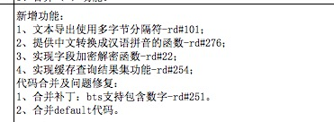 |
| 2018-03-06 10:10:27 | 你 | 1.6.6 |
| 2018-03-06 10:10:50 | 你 | 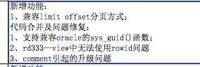 |
| 2018-03-06 10:10:56 | 你 | G6 |
| 2018-03-06 10:10:58 | 你 | 的 |
| 2018-03-06 10:11:03 | 你 | 不知道全不全啊 |
| 2018-03-06 10:11:11 | 你 | 有点老了 |
| 2018-03-06 10:11:24 | 你 | G6还加了一些 我给你找找 |
| 2018-03-06 10:11:25 | 我 | 现在赵总对发版内容呢 |
| 2018-03-06 10:11:39 | 你 | G6还有month as关键字 |
| 2018-03-06 10:12:13 | 我 | rd 号 |
| 2018-03-06 10:12:29 | 你 | 437、393 |
| 2018-03-06 10:13:25 | 你 | limit offset的是229 |
| 2018-03-06 10:13:44 | 我 | 👌 |
| 2018-03-06 10:27:54 | 你 | date数据类型的 跟一线沟通过了 可以做下假 把date改成datetime year to second就行 |
| 2018-03-06 10:28:10 | 我 | 👌 |
| 2018-03-06 10:28:24 | 你 | 但是是Server改 |
| 2018-03-06 10:28:40 | 你 | 不是迁移的时候改 用户看到的hai是date |
| 2018-03-06 11:05:30 | 我 | 赵总说以后需求组负责发版管理 |
| 2018-03-06 11:12:31 | 你 | 真的 啊 |
| 2018-03-06 11:12:43 | 我 | 嗯嗯 |
| 2018-03-06 11:19:09 | 我 | 忙啥呢 |
| 2018-03-06 11:19:20 | 我 | 涉及到我的过完了 |
| 2018-03-06 11:19:21 | 你 | 看那几个函数的需求的 |
| 2018-03-06 11:19:31 | 你 | 好吧 除了你的还有别人的吗 |
| 2018-03-06 11:19:42 | 你 | 昨天我在L2的会上跟王欣说版本的事了 |
| 2018-03-06 11:19:44 | 我 | 太兴奋了，表现完美 |
| 2018-03-06 11:19:51 | 你 | 厉害 |
| 2018-03-06 11:20:00 | 你 | 你也是工作做到那了 |
| 2018-03-06 11:20:11 | 我 | 赵总很满意 |
| 2018-03-06 11:20:19 | 你 | 嗯嗯 |
| 2018-03-06 11:20:20 | 你 | 不错 |
| 2018-03-06 11:20:26 | 我 | 完全压过老田和吕迅 |
| 2018-03-06 11:20:32 | 你 | 太好了 |
| 2018-03-06 11:20:49 | 你 | 咱俩就得默默的努力 |
| 2018-03-06 11:21:01 | 你 | 我跟你说 现在王总是对研发完全失控了 |
| 2018-03-06 11:21:04 | 我 | 嗯嗯 |
| 2018-03-06 11:21:16 | 我 | 其实赵总要的这些都在咱们的预计中 |
| 2018-03-06 11:21:17 | 你 | 他不信任你 更不信任老城 |
| 2018-03-06 11:21:19 | 你 | 陈 |
| 2018-03-06 11:21:21 | 我 | 是 |
| 2018-03-06 11:21:28 | 你 | 嗯嗯 |
| 2018-03-06 11:21:35 | 你 | 没扩大范围吧 |
| 2018-03-06 11:21:38 | 你 | 我得写需求 |
| 2018-03-06 11:22:07 | 我 | 我说的是赵总要版本规划，咱俩很早就策划了 |
| 2018-03-06 11:22:16 | 我 | 要不然今天也应对不上 |
| 2018-03-06 11:22:25 | 你 | 嗯嗯 |
| 2018-03-06 11:22:37 | 我 | 以后 N 版的发版规划你就主动做起来 |
| 2018-03-06 11:22:41 | 你 | 赵总怎么说的要需求管版本 |
| 2018-03-06 11:23:04 | 你 | 专门提的需求组吗 |
| 2018-03-06 11:23:21 | 我 | 赵总说以后每个版本的内容由需求组负责整理，以后开会就直接拿过来讨论就行 |
| 2018-03-06 11:23:26 | 你 | 只要我能跟一线的说上话 我就能排计划 |
| 2018-03-06 11:23:34 | 我 | 今天是一个一个过的，很浪费时间 |
| 2018-03-06 11:23:39 | 我 | 嗯嗯 |
| 2018-03-06 11:23:50 | 你 | 你说需求的会 都不叫上我 |
| 2018-03-06 11:23:52 | 你 | 唉 |
| 2018-03-06 11:24:01 | 你 | 我跟张道山问了 张道山说没啥 你干活吧 |
| 2018-03-06 11:24:04 | 我 | 是呢 |
| 2018-03-06 11:24:08 | 我 | 我不好喊你过来 |
| 2018-03-06 11:24:13 | 你 | 我知道 |
| 2018-03-06 11:24:22 | 你 | 所以我才跟张道山问得 |
| 2018-03-06 11:24:27 | 我 | 不过没关系，赵总安排王欣管这些 |
| 2018-03-06 11:24:31 | 你 | 我还得在王欣那边好好表现 |
| 2018-03-06 11:24:36 | 我 | 以后你直接和王欣联系就好了 |
| 2018-03-06 11:24:38 | 我 | 嗯嗯 |
| 2018-03-06 11:24:42 | 你 | 嗯嗯 |
| 2018-03-06 11:24:47 | 我 | 直接跳过张道山 |
| 2018-03-06 11:26:09 | 你 | 没事，机会有的是 |
| 2018-03-06 11:26:18 | 你 | 张道山浮，他下不去，所以很多事他不知道 |
| 2018-03-06 11:26:30 | 我 | 对，没错 |
| 2018-03-06 11:26:41 | 你 | 昨天我跟王欣说了版本乱的事 |
| 2018-03-06 11:26:50 | 你 | 没准她跟赵总说了 |
| 2018-03-06 11:27:13 | 你 | 我说现在版本还没有合并，这事正儿八经是王总负责 |
| 2018-03-06 11:27:20 | 你 | 我看一点动静都没有 |
| 2018-03-06 11:27:44 | 你 | 然后说了很多版本乱多不好不好的事情 |
| 2018-03-06 11:29:13 | 我 | 嗯嗯 |
| 2018-03-06 11:29:17 | 我 | 估计是说了 |
| 2018-03-06 11:29:38 | 我 | 不然今天不会讨论版本 |
| 2018-03-06 11:31:27 | 你 | 就是啊，以前也没见讨论版本的事 |
| 2018-03-06 12:13:56 | 你 | 我好像得奖了耶 |
| 2018-03-06 12:14:24 | 我 | ✌️👍👍👍 |
| 2018-03-06 12:14:47 | 你 | 不知道是提名还是真有奖 |
| 2018-03-06 12:15:23 | 我 | 应该有吧 |
| 2018-03-06 12:22:32 | 你 | 木有好看的衣服[流泪][流泪][流泪] |
| 2018-03-06 13:15:11 | 我 | 以后需求和问题的发版时间你需要管起来了 |
| 2018-03-06 13:15:32 | 你 | 恩 |
| 2018-03-06 13:16:37 | 我 | 你管的越多，赵总重用的可能性就越大 |
| 2018-03-06 13:17:00 | 我 | 等这些东西张道山和高杰都不知道的时候，就是你当 leader 的时候了 |
| 2018-03-06 13:24:35 | 你 | 457那个需求 除了要求保留时分秒信息外 还要支持字符串形式赋值 |
| 2018-03-06 13:24:53 | 你 | 目前8t仅支持用to_date函数赋值 |
| 2018-03-06 13:26:04 | 我 | 国防科大的吗 |
| 2018-03-06 13:26:11 | 你 | 是 |
| 2018-03-06 13:26:45 | 我 | 调研一下吧，时间上未必来得及 |
| 2018-03-06 13:27:35 | 我 | 其实像这种时间这么短的poc都不应该算需求，按需求流程都做不完 |
| 2018-03-06 13:27:51 | 你 | 那说下转成问题吧 |
| 2018-03-06 13:27:55 | 你 | 让旭明追 |
| 2018-03-06 13:32:20 | 我 | 爱福怎么去问老田了？ |
| 2018-03-06 13:50:42 | 你 | 我不知道啊 |
| 2018-03-06 13:50:49 | 你 | 他这个人咋回事 |
| 2018-03-06 13:50:52 | 我 | 老田还答应了 |
| 2018-03-06 13:51:04 | 你 | 上次他不是说迁移工具不行吗 |
| 2018-03-06 13:51:07 | 我 | 太好玩了 |
| 2018-03-06 15:00:31 | 你 | 今天老陈一来 我就特紧张 |
| 2018-03-06 15:00:40 | 你 | 还好把他绕了 |
| 2018-03-06 15:00:46 | 我 | 嗯嗯 |
| 2018-03-06 15:09:04 | 我 | 我最烦的就是高杰这种恨不得连喘口气都给你规定好一分钟喘几口的人。 |
| 2018-03-06 15:09:19 | 我 | 不是烦，是痛恨 |
| 2018-03-06 15:09:22 | 你 | 哈哈 |
| 2018-03-06 15:09:23 | 你 | 是 |
| 2018-03-06 15:09:35 | 你 | 这家伙把每个人的座位都做了 |
| 2018-03-06 15:10:56 | 你 | 说说今天评审吧 |
| 2018-03-06 15:11:06 | 你 | 感觉表现的不好 |
| 2018-03-06 15:11:22 | 你 | 虽然突突突的突突完了 |
| 2018-03-06 15:11:32 | 我 | 嗯，今天有点意外 |
| 2018-03-06 15:12:25 | 你 | 啥意外 |
| 2018-03-06 15:12:35 | 我 | 老陈和张道山 |
| 2018-03-06 15:12:40 | 你 | 我有点轻敌了 |
| 2018-03-06 15:12:46 | 你 | 我特别讨厌张道山那样 |
| 2018-03-06 15:12:55 | 你 | 上来就让我改这个改那个 |
| 2018-03-06 15:13:01 | 我 | 是 |
| 2018-03-06 15:13:20 | 你 | 结果转换为varchar和要求结果是varchar有啥区别 |
| 2018-03-06 15:13:31 | 你 | 唯一的区别就是把责任推给用户了 |
| 2018-03-06 15:13:41 | 你 | 但是需求不就代表用户了吗 |
| 2018-03-06 15:13:57 | 我 | 他们从来都是这样 |
| 2018-03-06 15:14:02 | 我 | 不负责任 |
| 2018-03-06 15:14:26 | 你 | 你没啥指点的了？ |
| 2018-03-06 15:14:35 | 你 | 那就算了吧 |
| 2018-03-06 15:14:37 | 你 | 就这样吧 |
| 2018-03-06 15:15:03 | 我 | 这两个团队的风格相差太大了 |
| 2018-03-06 15:15:19 | 我 | 你今天做的不好的地方是没让小孩讲 |
| 2018-03-06 15:15:44 | 我 | 你自己讲就意味着你自己把责任扛下来了 |
| 2018-03-06 15:16:00 | 你 | 用需是我自己写的 |
| 2018-03-06 15:16:11 | 你 | 软需本来是想让那个他们讲的 结果电视不行 |
| 2018-03-06 15:16:16 | 你 | 算了就这样吧 |
| 2018-03-06 15:16:21 | 你 | 是我太轻敌了 |
| 2018-03-06 15:16:31 | 你 | 没想到老陈会那么纠结 |
| 2018-03-06 15:16:42 | 你 | 我最近做需求也是有点每上心 |
| 2018-03-06 15:16:48 | 我 | 老陈今天这算是很客气了 |
| 2018-03-06 15:16:57 | 我 | 是非常非常客气的 |
| 2018-03-06 15:17:00 | 你 | 嗯嗯 |
| 2018-03-06 15:17:14 | 我 | 你没见过他真正纠结需求的样子 |
| 2018-03-06 15:17:16 | 你 | 我到不怕研发的严格 |
| 2018-03-06 15:17:25 | 你 | 严格对于我有好处 |
| 2018-03-06 15:17:39 | 你 | 会迫使我严格 |
| 2018-03-06 15:17:53 | 你 | 这才是开发中心的感觉 |
| 2018-03-06 15:17:55 | 你 | 哈哈 |
| 2018-03-06 16:34:04 | 我 | 国防科大我让旭明去管了 |
| 2018-03-06 16:44:26 | 我 | 还没结束呢 |
| 2018-03-06 17:10:03 | 你 | 你们讨论的怎么样了 |
| 2018-03-06 17:10:30 | 我 | 放到 N+1 |
| 2018-03-06 17:10:44 | 你 | 清大科越那呢 |
| 2018-03-06 17:10:46 | 你 | 做吗还 |
| 2018-03-06 17:10:48 | 我 | 眼前这个不知道怎么办 |
| 2018-03-06 17:11:06 | 我 | 就先把张杰做完的发过去吧 |
| 2018-03-06 17:11:15 | 你 | 你怎么老是我联系到一半的事 就半路转给旭明啊 |
| 2018-03-06 17:11:26 | 你 | 我觉得你这样做非常不尊重我 |
| 2018-03-06 17:11:43 | 我 | 我转的都是风险大的 |
| 2018-03-06 17:12:10 | 我 | 不是不尊重你，是来不及和你商量了 |
| 2018-03-06 17:12:29 | 你 | 转到他那以后呢 |
| 2018-03-06 17:12:43 | 我 | 出了事情他去背锅呗 |
| 2018-03-06 17:23:16 | 你 | 老王 我心好累啊 |
| 2018-03-06 17:23:19 | 你 | 我想歇歇 |
| 2018-03-06 17:23:25 | 我 | 嗯嗯 |
| 2018-03-06 17:23:26 | 你 | 也许我有点激进了 |
| 2018-03-06 17:23:33 | 我 | 赶紧歇歇吧 |
| 2018-03-06 17:23:45 | 我 | 没有呀，你做的很好呀 |
| 2018-03-06 17:23:57 | 你 | 不好 你别鼓励我了 |
| 2018-03-06 17:24:01 | 你 | 我想沉淀沉淀 |
| 2018-03-06 17:24:20 | 我 | 哈哈，沉淀也需要看时间呀 |
| 2018-03-06 17:24:30 | 我 | 现在这个点上沉淀不一定是好事 |
| 2018-03-06 17:24:41 | 你 | 唉 |
| 2018-03-06 17:24:49 | 我 | 等局势都稳定下来再沉淀也来得及 |
| 2018-03-06 17:25:05 | 你 | 你说的对 乱的时候 抢到就是自己的 |
| 2018-03-06 17:25:12 | 我 | 对呀 |
| 2018-03-06 17:25:30 | 我 | 等局势稳定了，蛋糕也分完了 |
| 2018-03-06 17:25:51 | 你 | 是 |
| 2018-03-06 17:25:52 | 我 | 我先去给研发开会，回来咱俩继续聊 |
| 2018-03-06 17:25:56 | 你 | 好 |
{kind=link}
{kind=link}
2018-03-07¶
| 2018-03-07 08:54:45 | 我 | 昨晚和李杰打电话 |
| 2018-03-07 08:54:53 | 你 | 你？？？ |
| 2018-03-07 08:54:57 | 我 | 她今天要去面试 |
| 2018-03-07 08:55:03 | 你 | 我知道 |
| 2018-03-07 08:55:05 | 你 | 今早 |
| 2018-03-07 08:55:26 | 我 | 昨天她找我给她指导一下 |
| 2018-03-07 08:55:57 | 你 | 恩 可找对人了 |
| 2018-03-07 08:56:00 | 我 | 最后我提了要帮他的事情，她兴趣也很大 |
| 2018-03-07 09:13:10 | 你 | 28s那几个函数放在s3吗？ |
| 2018-03-07 09:13:31 | 我 | 是 |
| 2018-03-07 09:14:44 | 我 | 如果要放轻量化里，轻量化的送测就会延后了 |
| 2018-03-07 09:15:14 | 你 | 没事，轻量化不要求这个 |
| 2018-03-07 09:15:19 | 你 | 直接发就行 |
| 2018-03-07 09:15:22 | 我 | 好 |
| 2018-03-07 09:15:42 | 你 | 不过这样轻量化的代码基就有问题了 |
| 2018-03-07 09:15:52 | 我 | 胖子偷看你呢 |
| 2018-03-07 09:16:13 | 我 | 是 |
| 2018-03-07 09:16:23 | 你 | 我知道，没事 |
| 2018-03-07 09:16:26 | 你 | 反正咱俩也在聊工作 |
| 2018-03-07 09:16:39 | 我 | 嗯 |
| 2018-03-07 09:16:40 | 你 | 让他看 |
| 2018-03-07 10:09:28 | 你 | 以后你要是总是这么官方的质问我 就不要做朋友了 |
| 2018-03-07 10:09:46 | 你 | 就都公事公办好了 |
| 2018-03-07 10:10:18 | 我 | 不是呀，这个不是你写的 |
| 2018-03-07 11:30:34 | 你 | 老王 我心情特别不好 |
| 2018-03-07 11:30:41 | 你 | 真的不骗你 |
| 2018-03-07 11:31:05 | 你 | 我现在都怀疑我是不是不合适带团队 我觉得一个人挺好的 |
| 2018-03-07 11:37:40 | 我 | 别这样，我以前也经历过这个阶段，觉得做研发比管人舒服 |
| 2018-03-07 11:38:31 | 我 | 其实这只不过是因为你从你的舒适区刚刚走出来的正常反应 |
| 2018-03-07 11:39:10 | 我 | 你天生是适合带团队的 |
| 2018-03-07 11:40:03 | 我 | 你和我还不太一样，我本性就内向，你本性外向，很有亲和力，天生就是带团队的好料子 |
| 2018-03-07 11:43:23 | 我 | 你不是普通的山石，你是一块璞玉，只是需要精雕细刻。我希望能把你打造成和氏璧[偷笑] |
| 2018-03-07 11:48:07 | 你 | 好吧 |
| 2018-03-07 11:48:12 | 你 | 难过死了 |
| 2018-03-07 11:49:44 | 我 | 哈哈，我刚才还在分析你呢 |
| 2018-03-07 11:50:59 | 你 | 我不吃饭了 |
| 2018-03-07 11:51:03 | 你 | 不想吃 没胃口 |
| 2018-03-07 11:51:45 | 你 | 唉 这个需求问题还不小 |
| 2018-03-07 11:51:53 | 你 | 你非得在那边呆着吗 |
| 2018-03-07 11:51:55 | 我 | 我想你有俩小人，一个超我一个本我。超我对本我说你看你做错了吧，本我很委屈的说我也不想做错呀 |
| 2018-03-07 12:15:36 | 我 | 然后超我就贬低本我，本我可难受了 |
| 2018-03-07 12:15:54 | 你 | 你跟杨丽颖走吗 |
| 2018-03-07 12:15:56 | 我 | 完了，我的思路断了 |
| 2018-03-07 12:16:12 | 我 | 你怎么走 |
| 2018-03-07 12:16:16 | 你 | 我把车放单位 |
| 2018-03-07 12:16:17 | 我 | 开车吗 |
| 2018-03-07 12:16:19 | 我 | 哦 |
| 2018-03-07 12:16:20 | 你 | 走去地铁 |
| 2018-03-07 12:16:30 | 我 | 我也坐地铁 |
| 2018-03-07 12:16:32 | 你 | 你要跟他走 我就自己走 |
| 2018-03-07 12:16:38 | 你 | 你跟她走吧 |
| 2018-03-07 12:16:42 | 我 | 我和你走吧 |
| 2018-03-07 12:16:46 | 你 | 不用了 |
| 2018-03-07 12:16:51 | 你 | 你们走习惯了都 |
| 2018-03-07 12:16:52 | 你 | 我没事 |
| 2018-03-07 12:56:31 | 我 | 到了吗 |
| 2018-03-07 13:02:09 | 你 | 到了，你到了吗 |
| 2018-03-07 13:02:23 | 我 | 地铁上 |
| 2018-03-07 13:02:45 | 你 | |
| 2018-03-07 13:03:01 | 我 | 人多吗 |
| 2018-03-07 13:03:58 | 你 | 现在不多， |
| 2018-03-07 13:04:03 | 你 | |
| 2018-03-07 13:04:13 | 你 | 每人给一条围巾 |
| 2018-03-07 13:04:21 | 我 | 好漂亮呀[色][色][色] |
| 2018-03-07 13:04:52 | 我 | 捡到大美女一枚[呲牙] |
| 2018-03-07 13:08:53 | 你 | |
| 2018-03-07 13:33:46 | 你 | 干嘛呢？ |
| 2018-03-07 13:33:49 | 你 | 无聊呢 |
| 2018-03-07 13:34:02 | 我 | 刷微博 |
| 2018-03-07 13:34:20 | 我 | 我看你和你的小伙伴玩的挺好的呀 |
| 2018-03-07 13:34:32 | 你 | 谁啊 |
| 2018-03-07 13:35:02 | 我 | 你的手下呀[偷笑] |
| 2018-03-07 13:37:49 | 你 | 没有吧 |
| 2018-03-07 13:37:56 | 你 | |
| 2018-03-07 13:38:29 | 我 | 唉，越发显得胖子丑了 |
| 2018-03-07 13:38:48 | 你 | 不丑，显得我好瘦 |
| 2018-03-07 13:39:13 | 我 | [动画表情] |
| 2018-03-07 15:03:59 | 我 | 崔总这是对王总有多不满呀 |
| 2018-03-07 15:04:16 | 你 | 怎么了 |
| 2018-03-07 15:04:24 | 你 | 今年他啥任务都没有 |
| 2018-03-07 15:04:32 | 你 | 也不颁奖也不讲话 |
| 2018-03-07 15:04:45 | 我 | 直接点名说8t不够拼 |
| 2018-03-07 15:04:51 | 你 | 哈哈 |
| 2018-03-07 15:04:53 | 你 | 是 |
| 2018-03-07 15:06:11 | 我 | 今年至少得加班了[流汗] |
| 2018-03-07 15:06:21 | 你 | 是 |
| 2018-03-07 15:06:34 | 我 | 唉，其实都是王总太笨 |
| 2018-03-07 15:06:38 | 你 | 是 |
| 2018-03-07 15:06:48 | 你 | 他太菜了 |
| 2018-03-07 15:06:54 | 我 | 要不然那至于的 |
| 2018-03-07 15:08:10 | 你 | 说啥呢 |
| 2018-03-07 15:08:25 | 你 | 又菜又笨 |
| 2018-03-07 15:08:41 | 我 | 嗯嗯 |
| 2018-03-07 15:08:45 | 你 | 结果人家张良总进emt了 |
| 2018-03-07 15:08:52 | 我 | 就是 |
| 2018-03-07 15:09:35 | 你 | 这奖也太集中了 |
| 2018-03-07 15:10:30 | 我 | 销售的就是这样，一切拿钱衡量 |
| 2018-03-07 15:10:38 | 你 | 是 |
| 2018-03-07 15:10:55 | 你 | 张良用太厉害了 |
| 2018-03-07 15:11:02 | 你 | 总 |
| 2018-03-07 15:11:09 | 我 | 是 |
| 2018-03-07 15:11:39 | 你 | 王总是捧得多高，摔的就多重 |
| 2018-03-07 15:11:56 | 我 | 没错 |
| 2018-03-07 15:13:29 | 你 | 一手好牌打成这样 |
| 2018-03-07 15:14:02 | 我 | 是，还是能力不行，眼高手低 |
| 2018-03-07 15:14:18 | 你 | 是 |
| 2018-03-07 15:14:36 | 你 | 今天又盯着我手下这3人，做什么网站 |
| 2018-03-07 15:14:42 | 你 | 真是没事闲的 |
| 2018-03-07 15:15:19 | 你 | 说一千道一万，就是能力不行 |
| 2018-03-07 15:15:37 | 我 | 就是，那个破东西能挣钱吗 |
| 2018-03-07 15:15:58 | 你 | 那个东西是给他自己看的 |
| 2018-03-07 15:16:07 | 你 | 真是笨到发光 |
| 2018-03-07 15:16:58 | 我 | 唉，我是第一次看见年会上被点名批评 |
| 2018-03-07 15:17:11 | 你 | 真丢人 |
| 2018-03-07 15:17:23 | 我 | 丢死人了 |
| 2018-03-07 15:17:31 | 你 | 崔总还说软件就得加班 |
| 2018-03-07 15:18:44 | 你 | 怎么今天这么赶？ |
| 2018-03-07 15:19:08 | 我 | 不知道，是不是奖项很多 |
| 2018-03-07 15:19:14 | 你 | 不知道 |
| 2018-03-07 15:20:12 | 我 | [链接] 王雪松和李杰的聊天记录 |
| 2018-03-07 15:20:45 | 你 | [强][强][强] |
| 2018-03-07 15:23:38 | 你 | 看这个小姑娘，多精神 |
| 2018-03-07 15:24:09 | 我 | 是 |
| 2018-03-07 15:24:23 | 我 | 去年也得奖了 |
| 2018-03-07 15:26:01 | 我 | 你看看老田穿的多土[呲牙] |
| 2018-03-07 15:27:02 | 你 | 我正想跟你说呢 |
| 2018-03-07 15:27:15 | 你 | 看老田那德性 |
| 2018-03-07 15:27:31 | 你 | 今年王洪越应该没得奖 |
| 2018-03-07 15:27:36 | 我 | 是 |
| 2018-03-07 15:27:57 | 你 | 像个二愣子 |
| 2018-03-07 15:27:59 | 你 | 老田 |
| 2018-03-07 15:28:17 | 我 | 说得太准了 |
| 2018-03-07 15:28:44 | 你 | 妈的，原型是咱们做的 |
| 2018-03-07 15:29:13 | 我 | 就是，鸠占鹊巢 |
| 2018-03-07 15:29:28 | 你 | 技术支持的肯定骂他们呢 |
| 2018-03-07 15:29:43 | 我 | 嗯嗯 |
| 2018-03-07 15:36:10 | 你 | 赵总节奏好像慢点了 |
| 2018-03-07 15:36:44 | 你 | 你看唐骞那样的 |
| 2018-03-07 15:36:55 | 你 | 李俊旗和王总好搭啊 |
| 2018-03-07 15:44:36 | 我 | 你咋坐我那呢 |
| 2018-03-07 15:45:05 | 你 | 你在哪呢 |
| 2018-03-07 15:45:09 | 你 | 我都没看见 |
| 2018-03-07 15:45:19 | 我 | 直线第二排 |
| 2018-03-07 15:45:46 | 你 | 妈的，国网怎么不写我呢 |
| 2018-03-07 15:45:50 | 你 | 气死我了 |
| 2018-03-07 15:46:07 | 我 | 高杰安排的 |
| 2018-03-07 16:01:27 | 你 | 赵总给我握手了[拥抱][拥抱][拥抱] |
| 2018-03-07 16:02:00 | 我 | [强][强][强][强][强][强] |
| 2018-03-07 16:04:49 | 我 | 太棒啦太棒啦 |
| 2018-03-07 16:06:26 | 你 | 好棒啊，好开心，我自己的文档奖 |
| 2018-03-07 16:06:29 | 你 | [拥抱][拥抱][拥抱] |
| 2018-03-07 16:06:36 | 你 | 请你吃饭哈 |
| 2018-03-07 16:07:09 | 我 | [拥抱][拥抱][拥抱][拥抱] |
| 2018-03-07 16:07:23 | 我 | 嗯嗯 |
| 2018-03-07 16:07:44 | 我 | 真的太高兴了，比我自己拿奖还高兴 |
| 2018-03-07 16:08:06 | 我 | 你真的太棒了👏👏👏👏👏 |
| 2018-03-07 16:08:39 | 你 | 真的啊 |
| 2018-03-07 16:08:50 | 你 | 我也好开心，这是我的小目标 |
| 2018-03-07 16:08:56 | 你 | 实现了，耶✌️ |
| 2018-03-07 16:09:00 | 我 | 嗯嗯 |
| 2018-03-07 16:09:09 | 你 | 以后还有更多的小目标 |
| 2018-03-07 16:09:16 | 我 | [动画表情] |
| 2018-03-07 16:10:08 | 我 | 回家抱着奖给我照张相 |
| 2018-03-07 16:10:20 | 你 | 没问题 |
| 2018-03-07 16:10:25 | 我 | 一定要穿最漂亮的衣服 |
| 2018-03-07 16:10:52 | 你 | 哈哈，没有漂亮的[玫瑰] |
| 2018-03-07 16:10:54 | 我 | 哈哈，我是不是太兴奋啦 |
| 2018-03-07 16:11:01 | 你 | 是 |
| 2018-03-07 16:11:07 | 我 | 太高兴了 |
| 2018-03-07 16:11:36 | 你 | 我也是，好高兴 |
| 2018-03-07 16:11:43 | 你 | 特别特别高兴 |
| 2018-03-07 16:11:56 | 我 | 嗯嗯 |
| 2018-03-07 16:12:17 | 我 | 明天正好放假，好好奖励一下自己 |
| 2018-03-07 16:12:50 | 你 | 嗯嗯，今天带妈妈去吃饭 |
| 2018-03-07 16:13:06 | 我 | [动画表情] |
| 2018-03-07 16:13:32 | 你 | 我超开心亲爱的 |
| 2018-03-07 16:13:44 | 我 | 我也超开心 |
| 2018-03-07 16:26:29 | 你 | 你看张良总那波人心多齐 |
| 2018-03-07 16:26:38 | 我 | 是 |
| 2018-03-07 16:32:26 | 你 | 都没有王总 |
| 2018-03-07 16:33:52 | 我 | 是，而且王总去年年会是和领导坐一起，今年就给他安排了一个偏座 |
| 2018-03-07 16:34:13 | 你 | 就没给他安排座位 |
| 2018-03-07 16:34:24 | 你 | 他那个座位是高杰给的 |
| 2018-03-07 16:34:57 | 我 | 是呢，高杰脑子进水，给王总安排一个单独的位置，更显得他孤单了 |
| 2018-03-07 16:34:58 | 你 | 说老陈和他推辞了半天 |
| 2018-03-07 16:35:16 | 你 | 高杰也很难做 |
| 2018-03-07 16:36:05 | 你 | 哇塞 |
| 2018-03-07 16:36:11 | 你 | 老杨唉 |
| 2018-03-07 16:36:18 | 我 | 嗯嗯 |
| 2018-03-07 16:41:34 | 我 | 你看看张道山的照片 |
| 2018-03-07 16:42:09 | 你 | 哪个 |
| 2018-03-07 16:42:29 | 我 | 下排中间 |
| 2018-03-07 16:43:54 | 你 | 哈哈 |
| 2018-03-07 16:44:24 | 你 | 好年轻啊 |
| 2018-03-07 16:46:54 | 我 | 武总嘴唇都破了 |
| 2018-03-07 16:47:30 | 你 | 武总特别暖 |
| 2018-03-07 16:47:36 | 你 | 特别沉稳 |
| 2018-03-07 16:47:41 | 我 | 是 |
| 2018-03-07 16:51:53 | 你 | 这是李朝阳 |
| 2018-03-07 16:55:06 | 我 | 是 |
| 2018-03-07 17:40:16 | 我 | 到公司了吗 |
| 2018-03-07 17:41:43 | 你 | 没呢 |
| 2018-03-07 17:41:53 | 你 | 刚到华苑 |
| 2018-03-07 17:42:17 | 你 | 你呢 |
| 2018-03-07 17:42:20 | 我 | 嗯，我下地铁了 |
| 2018-03-07 17:42:29 | 你 | 这么快啊？ |
| 2018-03-07 17:42:37 | 你 | 你不用倒吗？ |
| 2018-03-07 17:43:02 | 我 | 我换2号线 |
| 2018-03-07 17:43:29 | 你 | 不了解地铁结构 |
| 2018-03-07 17:43:58 | 我 | 我比你近 |
| 2018-03-07 17:45:36 | 你 | 比我还近啊 |
| 2018-03-07 17:46:58 | 我 | 是 |
| 2018-03-07 18:06:14 | 你 | 我要回家了 |
| 2018-03-07 18:06:29 | 我 | 嗯嗯 |
| 2018-03-07 18:06:31 | 你 | 明天再说吧 |
| 2018-03-07 18:06:40 | 我 | [动画表情] |
{kind=link}
{kind=link}
{kind=link}
{kind=link}
2018-03-08¶
| 2018-03-08 08:42:37 | 你 | 长话短说，我有事 |
| 2018-03-08 09:12:31 | 你 | 这事就按照8t规则做不就行了吗 |
| 2018-03-08 09:12:38 | 你 | 搞这么多事 |
| 2018-03-08 09:12:48 | 我 | 老陈是不想做 |
| 2018-03-08 09:13:27 | 我 | 不想做的原因是王总借口这边事多要老陈给人 |
| 2018-03-08 09:14:09 | 我 | 王总说plsql留俩人做就够了，剩下都做N版 |
| 2018-03-08 09:14:34 | 你 | 好么 |
| 2018-03-08 09:26:23 | 我 | G7承诺过现场时间吗 |
| 2018-03-08 09:26:31 | 你 | 5月底 |
| 2018-03-08 09:26:49 | 你 | 4.28出内测 |
| 2018-03-08 09:26:57 | 我 | 你问问G7发版时间，几轮测试 |
| 2018-03-08 09:27:05 | 你 | 好的 |
| 2018-03-08 09:27:07 | 我 | 我不适合问了 |
| 2018-03-08 09:27:59 | 你 | 嗯嗯 |
| 2018-03-08 09:32:39 | 你 | 等会我再问 |
| 2018-03-08 09:32:57 | 我 | 嗯 |
| 2018-03-08 09:42:20 | 你 | 真精彩 |
| 2018-03-08 09:42:26 | 你 | 太厉害了 |
| 2018-03-08 09:42:45 | 我 | 好玩吧 |
| 2018-03-08 09:43:30 | 你 | 太好玩了，说了半天一件事也没解决 |
| 2018-03-08 09:44:36 | 我 | 待会我再加点料，干脆把事整乱了 |
| 2018-03-08 09:44:52 | 你 | 好耶[强] |
| 2018-03-08 09:55:46 | 你 | 精彩精彩 |
| 2018-03-08 09:56:22 | 我 | 玩呗，谁怕谁呀 |
| 2018-03-08 09:56:40 | 你 | 就是 |
| 2018-03-08 11:34:11 | 我 | 你几点下班 |
| 2018-03-08 11:38:59 | 你 | 再说吧 |
| 2018-03-08 11:39:29 | 我 | 啊，你是不是没带饭呀 |
| 2018-03-08 11:39:52 | 你 | 没带饭 |
| 2018-03-08 11:40:15 | 我 | 还是早点回家吃吧 |
| 2018-03-08 13:01:28 | 你 | 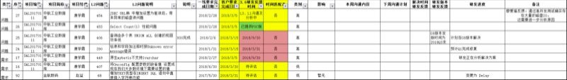 |
| 2018-03-08 15:59:47 | 我 | 你干啥去了 |
| 2018-03-08 16:25:00 | 我 | [链接] 群聊的聊天记录 |
| 2018-03-08 16:25:07 | 我 | 死了 |
| 2018-03-08 16:25:38 | 你 | 哎呀 这可不是小事啊 |
| 2018-03-08 16:25:48 | 你 | 不过才3页 |
| 2018-03-08 16:25:51 | 你 | 加油！！！ |
| 2018-03-08 16:25:58 | 你 | 我感觉我自己好聒噪啊 |
| 2018-03-08 16:26:09 | 我 | 没事 |
| 2018-03-08 17:26:05 | 你 | 你觉得老陈是想让你跟他统一口径，还是想让你认同他 |
| 2018-03-08 17:26:13 | 你 | 你俩本来是有分歧的 |
| 2018-03-08 17:26:18 | 我 | 都一样 |
| 2018-03-08 17:26:46 | 我 | 他是想把需求和研发分离，特别是他想退到研发 |
| 2018-03-08 17:27:00 | 我 | 从研发的角度去拷问需求 |
| 2018-03-08 17:30:44 | 你 | 拷问需求？ |
| 2018-03-08 17:31:18 | 我 | 是，就是大崔说的要拷问需求。 |
| 2018-03-08 17:31:33 | 我 | 就是说研发会对需求提出质疑 |
| 2018-03-08 17:33:22 | 你 | 嗯，拷问吧 |
| 2018-03-08 17:34:15 | 你 | 要照他这说法，还要什么副职 |
| 2018-03-08 17:34:28 | 你 | 就把自己定位成研发了 |
| 2018-03-08 17:34:51 | 我 | 是 |
| 2018-03-08 17:34:54 | 你 | 而且，我觉得现在矛盾并不在需求做的有多错上 |
| 2018-03-08 17:35:15 | 你 | 不了解dsd啊 |
| 2018-03-08 17:35:28 | 你 | 至少我没觉得dtd做的有多错 |
| 2018-03-08 17:35:33 | 我 | 你想偏了 |
| 2018-03-08 17:35:34 | 你 | 需求有多蔓延 |
| 2018-03-08 17:36:02 | 我 | 老陈不是怼需求，是怼王总 |
| 2018-03-08 17:36:17 | 你 | 我没想偏，他一说拷问张道山我就知道 |
| 2018-03-08 17:36:24 | 你 | 就咱们王总那样的 |
| 2018-03-08 17:36:34 | 你 | 还怼呢 |
| 2018-03-08 17:36:44 | 你 | 王总心思根本就不在需求 |
| 2018-03-08 17:37:09 | 你 | 需求做错他只会说需求做的不好，他也不会反思他有错 |
| 2018-03-08 17:37:16 | 你 | 只是需求做的不好 |
| 2018-03-08 17:37:54 | 我 | 老陈现在就是嫌王总瞎管，想逼王总去做需求 |
| 2018-03-08 17:38:11 | 你 | 那更不可能了 |
| 2018-03-08 17:38:32 | 你 | 逼急了，王总就撂挑子，管研发去了 |
| 2018-03-08 17:38:49 | 你 | 他那种人，什么都能做出来 |
| 2018-03-08 17:39:36 | 你 | 今早上还说，吕讯的问题，经过跟他一讨论，都清楚了 |
| 2018-03-08 17:40:11 | 你 | 你们看吧，我先低调点，把下边人带好 |
| 2018-03-08 17:40:13 | 我 | 唉，现在8t 这边都是在玩政治 |
| 2018-03-08 17:40:20 | 我 | 我觉得王总已经输了 |
| 2018-03-08 17:40:22 | 你 | 就是 |
| 2018-03-08 17:40:31 | 你 | 王总是必输无疑了 |
| 2018-03-08 17:40:34 | 你 | 他觉得自己研发很牛 |
| 2018-03-08 17:41:18 | 你 | 但是不知道那一天什么时候来 |
| 2018-03-08 17:41:22 | 你 | 会怎么来 |
| 2018-03-08 17:41:40 | 我 | 是 |
| 2018-03-08 17:41:56 | 你 | 唉 |
| 2018-03-08 17:42:03 | 我 | 老陈的想法有点不实际 |
| 2018-03-08 17:42:07 | 你 | 我们就在夹缝中生存吧 |
| 2018-03-08 17:42:16 | 你 | 我觉得老陈还不如王总 |
| 2018-03-08 17:42:27 | 你 | 他很多想法都特别天真 |
| 2018-03-08 17:42:38 | 你 | 而且非常执着 |
| 2018-03-08 17:42:39 | 我 | 是 |
| 2018-03-08 17:42:50 | 你 | 王总是啥也不懂， |
| 2018-03-08 17:43:04 | 你 | 但是他还能听别人的 |
| 2018-03-08 17:43:17 | 我 | 不过需求这事我觉得你也不用 care |
| 2018-03-08 17:43:26 | 你 | 老陈是有对有错，他谁也不听 |
| 2018-03-08 17:43:27 | 我 | 你前面有张道山 |
| 2018-03-08 17:43:29 | 你 | 我不 |
| 2018-03-08 17:43:33 | 你 | Care |
| 2018-03-08 17:43:45 | 你 | 我现在什么都跟张道山汇报 |
| 2018-03-08 17:43:52 | 你 | 出了事他顶 |
| 2018-03-08 17:43:55 | 我 | 现在咱们的策略就是旁观 |
| 2018-03-08 17:44:07 | 你 | 张道山还不错，不会把我推出去 |
| 2018-03-08 17:44:10 | 我 | 不去站他们任何一边 |
| 2018-03-08 17:44:15 | 你 | 是 |
| 2018-03-08 17:44:18 | 我 | 他们两个都不会赢 |
| 2018-03-08 17:44:22 | 你 | 是 |
| 2018-03-08 17:44:26 | 你 | 你说得对 |
| 2018-03-08 17:44:39 | 你 | 你跟老陈，一定要有自己的准备 |
| 2018-03-08 17:44:57 | 你 | 别太露底 |
| 2018-03-08 17:45:14 | 我 | 是，他现在还不知道我的底 |
| 2018-03-08 17:45:21 | 你 | 你今早上吵架，非常有节奏 |
| 2018-03-08 17:45:34 | 你 | 我还怕你一直说个没完呢 |
| 2018-03-08 17:45:44 | 我 | 或者说他来找我就是觉得我和他有分歧 |
| 2018-03-08 17:45:53 | 你 | 我觉得就是 |
| 2018-03-08 17:46:13 | 你 | 我不觉得他想跟你图谋什么，他只是想同化你 |
| 2018-03-08 17:46:38 | 你 | 让你认同他 |
| 2018-03-08 17:46:57 | 你 | 不过他想的很多事都不对 |
| 2018-03-08 17:47:02 | 我 | 是的 |
| 2018-03-08 17:47:06 | 你 | 咱们以后细说 |
| 2018-03-08 17:47:13 | 我 | 嗯嗯 |
| 2018-03-08 17:47:17 | 你 | 当然他肯定有他厉害的一面 |
| 2018-03-08 17:47:25 | 你 | 比如union这个需求 |
| 2018-03-08 17:47:50 | 你 | 我觉得他之所以这样我猜是掉过坑 |
| 2018-03-08 17:48:05 | 你 | 他只是比你更熟悉8t而已 |
| 2018-03-08 17:48:15 | 我 | 是的 |
| 2018-03-08 17:48:26 | 你 | 以后再谈吧 |
| 2018-03-08 17:48:33 | 你 | 老陈肯定是拉拢你 |
| 2018-03-08 17:48:41 | 你 | 王总现在也有这个趋势 |
| 2018-03-08 17:48:54 | 你 | 你一定站定了， |
| 2018-03-08 17:50:09 | 我 | 是，我肯定不会站边 |
| 2018-03-08 17:50:24 | 我 | 要站也得是赵总 |
| 2018-03-08 17:51:00 | 你 | |
| 2018-03-08 17:51:15 | 你 | |
| 2018-03-08 17:51:40 | 你 | |
| 2018-03-08 17:52:05 | 我 | 嗯嗯 |
{kind=link}
2018-03-09¶
| 2018-03-09 09:33:59 | 我 | 你昨天饿坏了吧 |
| 2018-03-09 09:35:36 | 你 | 你咋知道 |
| 2018-03-09 09:36:19 | 我 | 你大半天没吃饭还那么忙，我能不知道吗 |
| 2018-03-09 10:14:00 | 你 | 我有没有影响你的权威啊 |
| 2018-03-09 10:14:03 | 你 | 不好意思 啊 |
| 2018-03-09 10:14:07 | 你 | 刚才太气愤了 |
| 2018-03-09 10:14:09 | 你 | 没憋住 |
| 2018-03-09 10:21:16 | 我 | 没事，正好我接着这事收他们的权力，以后发版都得听我的，不能私自决定 |
| 2018-03-09 10:21:32 | 你 | 好吧 你决定吧 |
| 2018-03-09 10:21:38 | 你 | 国防科大的事我真的不知道 |
| 2018-03-09 10:21:44 | 你 | 没有故意不告诉你 |
| 2018-03-09 10:21:53 | 你 | update的事 你看旭明昨天晨会就没说 |
| 2018-03-09 10:21:58 | 我 | 没事，因为这个项目是大崔盯着的，我心里没底 |
| 2018-03-09 10:22:15 | 你 | 所以我今天问了一句 我问了也跟旭明说 下次让他跟 我不跟了 |
| 2018-03-09 10:22:24 | 我 | 嗯嗯 |
| 2018-03-09 11:05:25 | 你 | 你们发会议通知了吗 |
| 2018-03-09 11:05:27 | 你 | 没叫我 |
| 2018-03-09 11:05:33 | 我 | 没有 |
| 2018-03-09 11:05:52 | 我 | 刚才刘畅问我需求评审会 |
| 2018-03-09 11:05:57 | 我 | 我才问的 |
| 2018-03-09 14:48:40 | 你 | 你一直忙啥呢？给崔总写东西？ |
| 2018-03-09 14:51:12 | 我 | 对，就是昨天的 |
| 2018-03-09 14:51:36 | 我 | 中午给赵总看了，赵总让再改改 |
| 2018-03-09 14:51:56 | 我 | 想着开会前给赵总发过去 |
| 2018-03-09 15:36:13 | 你 | 嗯嗯 |
| 2018-03-09 15:36:17 | 你 | 老王 你干嘛呢 |
| 2018-03-09 15:36:27 | 我 | 改文档 |
| 2018-03-09 15:36:40 | 你 | 快改吧 |
| 2018-03-09 15:47:04 | 我 | 写完了，发给赵总了 |
| 2018-03-09 15:47:09 | 你 | 我看看 |
| 2018-03-09 15:47:10 | 我 | 不知道是不是还需要改 |
| 2018-03-09 15:47:15 | 你 | 没事 先歇会 |
| 2018-03-09 16:09:48 | 我 | 讨论发版计划变成了讨论bug |
| 2018-03-09 16:09:58 | 我 | 太无语了 |
| 2018-03-09 16:10:42 | 你 | 我也在想 |
| 2018-03-09 16:10:51 | 你 | 这个会就讨论这个事吗 |
| 2018-03-09 16:10:56 | 你 | 这么多的人 |
| 2018-03-09 16:12:45 | 你 | 我真晕 |
| 2018-03-09 16:20:01 | 你 | 这就是个大周会 |
| 2018-03-09 16:31:22 | 我 | 清大科越不是国网项目吗 |
| 2018-03-09 16:41:59 | 你 | 不是电厂吗 |
| 2018-03-09 16:42:37 | 我 | 是，电厂和国网不是一个系统 |
| 2018-03-09 17:37:43 | 你 | 这个王总，别人不乐意听什么他说什么 |
| 2018-03-09 17:38:00 | 我 | 嗯嗯 |
| 2018-03-09 17:47:01 | 我 | 唉，简直了，王总真是什么都不懂 |
| 2018-03-09 18:03:21 | 我 | 全翻了 |
2018-03-11¶
{kind=link}
2018-03-12¶
| 2018-03-12 08:45:16 | 我 | [链接] 群聊的聊天记录 |
| 2018-03-12 08:46:47 | 你 | 8tmpp的也没有王总啥事 |
| 2018-03-12 08:47:17 | 我 | 是没有他的事情，老陈这是让他背锅 |
| 2018-03-12 08:47:52 | 你 | 恩 |
| 2018-03-12 08:55:42 | 我 | 张道山发的版本规划你看了吗 |
| 2018-03-12 08:56:35 | 你 | 还没有呢 我看看 |
| 2018-03-12 09:21:23 | 你 | 你干嘛那么关心的眼神看我 |
| 2018-03-12 09:21:42 | 你 | 我只是咳了几句而已[调皮][调皮][调皮][调皮] |
| 2018-03-12 09:22:01 | 你 | 高杰那事你是故意说的么 |
| 2018-03-12 09:22:10 | 我 | 唉，没办法，谁让我这么在意你 |
| 2018-03-12 09:22:16 | 我 | 是 |
| 2018-03-12 09:22:19 | 你 | |
| 2018-03-12 09:22:24 | 你 | 我喜欢 |
| 2018-03-12 09:22:43 | 我 | [动画表情] |
| 2018-03-12 10:06:05 | 我 | 关于版本计划这事，你想管吗？我看张道山对管版本计划很抵触 |
| 2018-03-12 10:08:18 | 你 | 怎么抵触了 |
| 2018-03-12 10:08:25 | 你 | 想啊 当然想了 |
| 2018-03-12 10:09:00 | 我 | ˙张道山已经和老陈说了两次了，说他原来以为这些不是他的工作 |
| 2018-03-12 10:09:24 | 我 | 他要在明天的会上提他自己的岗位职责，说以前没说过要管这些 |
| 2018-03-12 10:19:00 | 你 | 咱们接着说 |
| 2018-03-12 10:19:08 | 你 | 这些信息是老陈跟你说的吗 |
| 2018-03-12 10:19:12 | 你 | 我来管我来管 |
| 2018-03-12 10:19:13 | 你 | 哈哈 |
| 2018-03-12 10:19:17 | 你 | 就爱干这事 |
| 2018-03-12 10:19:29 | 我 | 好，我告诉你应该怎么做 |
| 2018-03-12 10:19:35 | 你 | 好 |
| 2018-03-12 10:19:36 | 你 | 你说 |
| 2018-03-12 10:20:27 | 我 | 首先你要找个借口和老张说版本规划你来帮着他做 |
| 2018-03-12 10:21:02 | 你 | 跟张道山说是吗 |
| 2018-03-12 10:21:15 | 我 | 明天内部流程的会，你见机行事，在会上表示你可以帮着张工做 |
| 2018-03-12 10:21:21 | 我 | 嗯 |
| 2018-03-12 10:21:35 | 你 | 我直接找王总说我来做呢 |
| 2018-03-12 10:21:44 | 我 | 不好 |
| 2018-03-12 10:21:49 | 你 | 让他到时候开会的时候指给我 |
| 2018-03-12 10:22:19 | 我 | 上周的会上王总已经指给老张，今天老张也做了。要是开会再改这事老张会有想法 |
| 2018-03-12 10:22:27 | 你 | 嗯嗯 |
| 2018-03-12 10:22:29 | 你 | 说的对 |
| 2018-03-12 10:22:48 | 我 | 所以你的策略就是帮着老张把这事做了 |
| 2018-03-12 10:23:06 | 我 | 而且你也不能说老张不想做这事 |
| 2018-03-12 10:23:39 | 我 | 你得说反正你也整理需求，也需要反馈一线，正好把这些都做了 |
| 2018-03-12 10:23:58 | 你 | 嗯嗯 |
| 2018-03-12 10:24:07 | 我 | 怎么和老张起这个话头你想想办法把 |
| 2018-03-12 10:24:08 | 你 | 这样老张也有面子 |
| 2018-03-12 10:24:11 | 你 | 嗯嗯 |
| 2018-03-12 10:24:12 | 我 | 对 |
| 2018-03-12 10:24:24 | 你 | 我准备找找他发的那个表 |
| 2018-03-12 10:24:28 | 你 | 找几个小错误 |
| 2018-03-12 10:24:38 | 我 | 嗯嗯 |
| 2018-03-12 12:08:12 | 你 | 我跟张工聊了 |
| 2018-03-12 12:08:28 | 我 | 他咋说 |
| 2018-03-12 12:08:34 | 你 | 他想把这事推给项管 |
| 2018-03-12 12:08:48 | 我 | 呵呵 |
| 2018-03-12 12:09:02 | 你 | 他考虑的是他做了规划，研发不听，推不动 |
| 2018-03-12 12:09:19 | 你 | 我给他解释了下 |
| 2018-03-12 12:09:24 | 我 | 嗯，他们dsd就这样 |
| 2018-03-12 12:09:43 | 你 | 也跟他说以前dtd这边一直我跟你在做 |
| 2018-03-12 12:09:56 | 我 | 嗯嗯 |
| 2018-03-12 12:09:57 | 你 | 后来就说我在做，我可以帮着他做需求的 |
| 2018-03-12 12:10:11 | 你 | 他说让我先关注在需求这块 |
| 2018-03-12 12:10:29 | 你 | 他还跟我说了他想怎么做，这个小程序啥的， |
| 2018-03-12 12:10:49 | 你 | 我先说给他，这个事不是项管的事 |
| 2018-03-12 12:11:04 | 你 | 然后说我可以帮他做需求，他没应 |
| 2018-03-12 12:11:36 | 我 | 他头疼的是问题 |
| 2018-03-12 12:11:37 | 你 | 我说我帮他做需求，他做问题，他说问题有旭明呢，他就是跟踪 |
| 2018-03-12 12:11:53 | 我 | 他也不想管问题 |
| 2018-03-12 12:12:06 | 我 | 但是发版是必须管问题的 |
| 2018-03-12 12:12:15 | 你 | 我跟他说了 |
| 2018-03-12 12:12:23 | 我 | 不仅包括现场问题，还有内测的 |
| 2018-03-12 12:12:39 | 你 | 他最开始就是说怎么想的，后来就说想推给项管 |
| 2018-03-12 12:13:14 | 你 | 我就得给她解释，项管不行，不能让项管管，然后他说不想管的原因是推不动研发 |
| 2018-03-12 12:13:48 | 你 | 我也给他解释了，不会有推不动的事，我就说我帮他管，他说让我先关注需求 |
| 2018-03-12 12:13:58 | 你 | 也没说他管，也没说让我管 |
| 2018-03-12 12:14:12 | 你 | 后来就没什么了 |
| 2018-03-12 12:14:53 | 你 | 最开始他一直抱怨，这不是需求组的事，这干的不是需求的活 |
| 2018-03-12 12:15:27 | 你 | 大概就这些 |
| 2018-03-12 12:17:32 | 你 | 高杰和王总密谋一上午了 现在还在说 |
| 2018-03-12 12:20:06 | 我 | 嗯嗯 |
| 2018-03-12 12:20:14 | 我 | 刚才接电话 |
| 2018-03-12 12:20:57 | 我 | 张道山是不想管，而且是不光自己不想管，是整个组都不想管 |
| 2018-03-12 12:30:11 | 你 | 我看是有点 |
| 2018-03-12 12:30:40 | 你 | 反正死活也不能落到项管手里，否则我就得跟她汇报了 |
| 2018-03-12 12:30:49 | 我 | 没错 |
| 2018-03-12 12:31:27 | 我 | 这个一定要抓在自己手里 |
| 2018-03-12 12:31:45 | 你 | 轮也轮不到她 |
| 2018-03-12 12:31:53 | 我 | 没事的，明天开会我会一直坚持的 |
| 2018-03-12 12:32:05 | 你 | 咱们见机行事吧 |
| 2018-03-12 12:32:22 | 我 | 嗯嗯 |
| 2018-03-12 12:32:26 | 你 | 落在我手里，张道山也不放心 |
| 2018-03-12 12:32:39 | 你 | 他这个人还有点超我的团队意识 |
| 2018-03-12 12:32:47 | 我 | 嗯 |
| 2018-03-12 12:32:55 | 你 | 落在别人手里他最轻松 |
| 2018-03-12 12:33:07 | 我 | 没错 |
| 2018-03-12 12:33:59 | 我 | 咱们就坚持一点，必须能说清楚需求的必要性的。 |
| 2018-03-12 12:34:13 | 你 | 好 |
| 2018-03-12 12:34:22 | 我 | 项管没有相关技术能力，没办法讨论 |
| 2018-03-12 12:34:30 | 你 | 这个事本来就是产品经理的 |
| 2018-03-12 12:34:34 | 我 | 对呀 |
| 2018-03-12 12:35:06 | 你 | 产总不干，可以下放，放到哪也放不到项管啊 |
| 2018-03-12 12:35:09 | 你 | 简直可笑 |
| 2018-03-12 12:35:26 | 你 | 我睡觉了，你们不是一点开会么 |
| 2018-03-12 12:35:49 | 我 | 是 |
| 2018-03-12 13:38:19 | 我 | 困死我了 |
| 2018-03-12 13:38:35 | 你 | 我也是 可困了 |
| 2018-03-12 14:20:51 | 我 | 老杨给王总挖坑 |
| 2018-03-12 14:32:01 | 你 | 哈哈 |
| 2018-03-12 14:32:04 | 你 | 怎么挖的 |
| 2018-03-12 14:32:07 | 我 | 张道山傻了吧唧的把研发没评估的都放到会上 |
| 2018-03-12 14:32:19 | 我 | 结果让老杨抓住把柄了 |
| 2018-03-12 14:32:27 | 你 | 不就是周五过的那个表么 |
| 2018-03-12 14:32:51 | 我 | 是 |
| 2018-03-12 14:36:02 | 我 | 454的问题，我们现在还没有定位，王总觉得是 bug，老杨就忽悠王总，这个是 bug，赶紧修复就解决问题了。王总还一直说“是，这个应该修” |
| 2018-03-12 14:37:44 | 我 | 317张道山和你沟通过吗 |
| 2018-03-12 14:37:54 | 我 | 他现在说这个不合理 |
| 2018-03-12 14:39:32 | 你 | 沟通过 |
| 2018-03-12 14:39:37 | 你 | 这个需求确实不合理 |
| 2018-03-12 14:39:55 | 我 | 是 date 数据类型的事情吗 |
| 2018-03-12 14:40:10 | 你 | 不是 是to_date函数结果精度的问题 |
| 2018-03-12 14:40:24 | 我 | 好 |
| 2018-03-12 14:40:27 | 你 | to_date函数本身就是个类型转换 理论上没有精度的事 |
| 2018-03-12 14:40:39 | 我 | 好 |
| 2018-03-12 14:40:50 | 你 | 现场提的非得固定精度 而且固定到什么样子 他们还提不出来 |
| 2018-03-12 14:42:03 | 我 | 317，老杨又说让研发和用户沟通 |
| 2018-03-12 14:42:28 | 你 | 可以 |
| 2018-03-12 14:42:33 | 你 | 让张道山出差去 |
| 2018-03-12 14:43:00 | 你 | 去就去 张道山不去 那就我去 没事的 |
| 2018-03-12 14:43:06 | 我 | 嗯嗯 |
| 2018-03-12 14:43:09 | 你 | 这个需求不难 就是现场说不清楚 |
| 2018-03-12 14:43:25 | 我 | 明白了 |
| 2018-03-12 14:44:27 | 你 | 现场是赵益 他对Oracle是啥样不知道 8t是啥样也不知道 也不给测 净瞎说 |
| 2018-03-12 14:44:34 | 你 | 所以每次问 要的都不一样 |
| 2018-03-12 14:45:00 | 我 | 张道山就是态度不对，所有这些东西都让赵总来拍，结果老杨在这一阵瞎搅和，老张和王总也说不过他 |
| 2018-03-12 14:45:03 | 你 | 最后就是跟Oracle做成一样 Oracle不同客户端结果也不一样 究竟什么样 他要哪个 他也不知道 |
| 2018-03-12 14:45:22 | 你 | 唉 |
| 2018-03-12 14:45:44 | 你 | 这个事其实我心里一直盛着呢 要是技术一直不关闭 肯定就是去现场的命运 |
| 2018-03-12 14:45:58 | 你 | 因为技术根本说不清 |
| 2018-03-12 14:46:05 | 我 | 嗯嗯 |
| 2018-03-12 14:46:43 | 你 | 28s那四个函数 还做吗 |
| 2018-03-12 14:47:06 | 你 | 你不觉得老陈他们现在把什么都推给赵总 |
| 2018-03-12 14:47:25 | 我 | 他们原来就是这样 |
| 2018-03-12 14:47:26 | 你 | 什么决策也不做 |
| 2018-03-12 14:47:37 | 我 | 还没到28s 的事情呢 |
| 2018-03-12 14:47:56 | 你 | 嗯嗯 要是没有赵总 我这个做小需求的都不知道怎么干活 |
| 2018-03-12 14:48:01 | 你 | 这肯定是有问题的 |
| 2018-03-12 14:48:07 | 你 | 什么都是赵总拍 |
| 2018-03-12 14:56:28 | 我 | 唉，对张道山和王总我简直无话可说了 |
| 2018-03-12 14:56:35 | 我 | 28s 的接着做 |
| 2018-03-12 14:57:12 | 你 | 是按项目做还是产品做 |
| 2018-03-12 14:57:38 | 我 | 项目，但是放到主干里面 |
| 2018-03-12 14:57:44 | 你 | 我晕 |
| 2018-03-12 14:57:53 | 你 | 主干就是将来的党政军版对吧 |
| 2018-03-12 14:58:06 | 我 | 不是，那个是 N+1 |
| 2018-03-12 14:58:23 | 你 | 那我们现在的主干是什么版 |
| 2018-03-12 14:58:44 | 我 | N 版 |
| 2018-03-12 14:58:46 | 你 | 今早上我问张道山了 他说就是党政军版 |
| 2018-03-12 14:58:59 | 我 | 党政军是去 informix 的 |
| 2018-03-12 14:59:01 | 你 | N版不是有主干和国网么 |
| 2018-03-12 14:59:13 | 你 | 主干到底将来是啥 |
| 2018-03-12 14:59:34 | 我 | 带 informix 的 Oracle 兼容版 |
| 2018-03-12 14:59:52 | 我 | 现在王总打算把所有的兼容性都放到主干 |
| 2018-03-12 14:59:58 | 你 | 明白了 |
| 2018-03-12 15:00:55 | 你 | 今早上张道山说 主干就是党政军 |
| 2018-03-12 15:01:01 | 你 | 看来他也没搞明白 |
| 2018-03-12 15:01:16 | 我 | 他也不明白 |
| 2018-03-12 15:01:54 | 你 | 主干是Oracle兼容版 国网是DM兼容版 纯净版 党政军版 应该是4个大类版本 对吧 |
| 2018-03-12 15:09:10 | 你 | 咋样了 |
| 2018-03-12 15:10:24 | 我 | 回去和你详说 |
| 2018-03-12 15:21:36 | 你 | 483问题问问老冷的进度 |
| 2018-03-12 15:21:40 | 你 | 杨总在呢 |
| 2018-03-12 15:21:42 | 你 | 一直问 |
| 2018-03-12 15:22:04 | 我 | 正在评估呢 |
| 2018-03-12 15:22:14 | 我 | 这个可能需要改 Server |
| 2018-03-12 15:22:19 | 你 | 什么时候能评估完 |
| 2018-03-12 15:22:27 | 你 | 你给拍个时间得了 |
| 2018-03-12 15:22:30 | 我 | 王总主持讨论方案 |
| 2018-03-12 15:23:00 | 我 | 我没法拍，王总主持没谱 |
| 2018-03-12 15:23:07 | 你 | 好的 |
| 2018-03-12 15:23:08 | 你 | 知道了 |
| 2018-03-12 15:29:20 | 你 | 清大科越的要提前 |
| 2018-03-12 15:29:29 | 你 | 315、316的 |
| 2018-03-12 15:30:04 | 你 | 314、318的那版 |
| 2018-03-12 15:35:38 | 你 | 483 4月中旬 |
| 2018-03-12 15:45:35 | 你 | 老杨让我去华迪现场 |
| 2018-03-12 15:45:43 | 你 | 调研需求 |
| 2018-03-12 16:30:35 | 你 | 你听到我们吵什么了吗 |
| 2018-03-12 16:30:40 | 我 | 听到了 |
| 2018-03-12 16:30:46 | 你 | 现在王胜利可是有刘雪风撑腰了 |
| 2018-03-12 16:30:55 | 我 | 嗯嗯 |
| 2018-03-12 16:31:00 | 你 | 让我把隐式类型转换都写了 |
| 2018-03-12 16:31:23 | 我 | 呵呵 |
| 2018-03-12 16:31:42 | 你 | 简直太可笑了 |
| 2018-03-12 16:31:51 | 我 | 是，王总找我 |
| 2018-03-12 16:31:52 | 你 | 雪风也是没事找事 |
| 2018-03-12 16:31:55 | 我 | 我去一下 |
| 2018-03-12 16:31:57 | 你 | 好 |
| 2018-03-12 16:31:58 | 我 | 回来和你说 |
| 2018-03-12 18:21:26 | 我 | 你几点下班 |
| 2018-03-12 18:21:38 | 你 | 我还有个事没做 |
| 2018-03-12 18:24:20 | 你 | 张道山就是老狐狸 |
| 2018-03-12 18:24:33 | 我 | 没错 |
| 2018-03-12 18:56:38 | 我 | 今天王总找我和张杰，问现在方案设计，隐晦的表达了对老陈的不满 |
| 2018-03-12 18:56:54 | 你 | 嗨 他总是这样 |
| 2018-03-12 18:56:59 | 你 | 当初也是这么对你的 |
| 2018-03-12 18:57:01 | 你 | 你忘了 |
| 2018-03-12 18:57:18 | 我 | 我知道 |
| 2018-03-12 19:00:48 | 我 | 今天你和张道山是怎么回事 |
| 2018-03-12 19:01:56 | 你 | 没事 |
| 2018-03-12 19:02:04 | 你 | 就是雪风他们找事 |
| 2018-03-12 19:02:17 | 我 | 老张向着他们说话？ |
| 2018-03-12 19:02:20 | 你 | 我跟他说了 他让我按照雪风说的写需求 |
| 2018-03-12 19:02:24 | 你 | 我说我不写 |
| 2018-03-12 19:02:27 | 你 | 就是补充一句话 |
| 2018-03-12 19:02:30 | 你 | 我说我不写 |
| 2018-03-12 19:02:33 | 我 | 呵呵，我就知道 |
| 2018-03-12 19:02:35 | 你 | 我俩没吵架 |
| 2018-03-12 19:02:42 | 你 | 挺和谐的 |
| 2018-03-12 19:04:53 | 我 | 我觉得雪风就是成心的 |
| 2018-03-12 19:05:29 | 你 | 就是 |
| 2018-03-12 19:05:32 | 你 | 刷存在感 |
| 2018-03-12 19:05:36 | 你 | 他就是扯淡 |
| 2018-03-12 19:05:41 | 你 | 根本没它啥事 |
| 2018-03-12 19:05:47 | 我 | 推卸责任 |
| 2018-03-12 19:06:24 | 你 | 我觉得是 |
| 2018-03-12 19:06:39 | 你 | 虽然只是一句话 他让我加 我就不加 |
| 2018-03-12 19:06:56 | 你 | 你知道加啥吗？加精度需求不关心 不需要定义 |
| 2018-03-12 19:07:06 | 你 | 这种话为啥写到需求文档里 |
| 2018-03-12 19:07:09 | 你 | 我就不写 |
| 2018-03-12 19:07:16 | 你 | 张道山让我写 我说我不写 |
| 2018-03-12 19:07:17 | 我 | 对呀，哪有这么写的 |
| 2018-03-12 19:07:28 | 你 | 他说都是他把他们惯的 |
| 2018-03-12 19:07:31 | 你 | 我才不管呢 |
| 2018-03-12 19:07:44 | 你 | 这个事 闹到崔总那我也不写 |
| 2018-03-12 19:07:50 | 我 | 嗯嗯 |
| 2018-03-12 19:08:07 | 你 | 雪风就是刷存在感呢 |
| 2018-03-12 19:08:16 | 你 | 我也没往心里去 |
| 2018-03-12 19:08:39 | 你 | 你知道吗 我总是把雪风当小孩 |
| 2018-03-12 19:08:41 | 你 | 哈哈 |
| 2018-03-12 19:08:47 | 你 | 我觉得他特别像个孩子 |
| 2018-03-12 19:08:49 | 我 | 哈哈 |
| 2018-03-12 19:08:55 | 你 | 不是他不成熟啥的 |
| 2018-03-12 19:09:03 | 你 | 就是觉得他长的像小孩 |
| 2018-03-12 19:09:09 | 你 | 所以特别喜欢逗他 |
| 2018-03-12 19:09:14 | 你 | 我不跟他生气 |
| 2018-03-12 19:09:22 | 你 | 我这审美是不是非常奇葩 |
| 2018-03-12 19:09:32 | 我 | 没有 |
| 2018-03-12 19:09:50 | 你 | 我跟你说 王胜利那个烂人 就是借着测试的风 想压我 |
| 2018-03-12 19:10:01 | 你 | 你说他这个人是有多烂 |
| 2018-03-12 19:10:11 | 我 | 王胜利就是这样 |
| 2018-03-12 19:10:27 | 我 | 从见他的第一天我就知道他是这样 |
{kind=link}
2018-03-13¶
| 2018-03-13 08:50:55 | 你 | 李杰面试过了 你知道了吗 |
| 2018-03-13 08:51:03 | 你 | 现在就等着定级呢 |
| 2018-03-13 08:51:08 | 我 | 没有，他没和我说 |
| 2018-03-13 08:51:10 | 你 | 定薪资 |
| 2018-03-13 08:51:19 | 我 | 嗯嗯 |
| 2018-03-13 08:51:20 | 你 | 他也没跟我说 是我问她 她才告诉我的 |
| 2018-03-13 09:40:33 | 你 | 王总老是打断我说话 |
| 2018-03-13 09:41:01 | 我 | 是 |
| 2018-03-13 09:41:05 | 你 | Win开发者那个估计可以延期，我给问问 |
| 2018-03-13 09:41:13 | 我 | 嗯嗯 |
| 2018-03-13 09:42:39 | 我 | 雪风最常用的策略就是以偏概全 |
| 2018-03-13 09:42:54 | 你 | 说的对 |
| 2018-03-13 09:43:04 | 你 | 刀子嘴刀子心 |
| 2018-03-13 10:47:21 | 我 | 有空吗，和你说一件好玩的事情 |
| 2018-03-13 10:47:33 | 你 | 说吧 |
| 2018-03-13 10:47:36 | 你 | 有空 |
| 2018-03-13 10:47:50 | 我 | 今天开封闭的晨会，老陈不在 |
| 2018-03-13 10:47:56 | 你 | 嗯嗯 |
| 2018-03-13 10:48:02 | 你 | 大家是不是都盯着你哈 |
| 2018-03-13 10:48:15 | 你 | 还是王总的事 |
| 2018-03-13 10:48:21 | 我 | 雪风说他昨天测试，现场给的存储过程不能在达梦上执行 |
| 2018-03-13 10:48:43 | 我 | 结果引出了是和 Oracle 兼容还是和达梦兼容的问题 |
| 2018-03-13 10:48:49 | 你 | 嗯嗯 |
| 2018-03-13 10:49:09 | 我 | 吕迅就问是不是研发停下来，等需求搞清楚了再继续干活 |
| 2018-03-13 10:49:18 | 我 | 这个需求是雪风写的 |
| 2018-03-13 10:49:23 | 你 | 哈哈 |
| 2018-03-13 10:49:25 | 你 | 然后呢 |
| 2018-03-13 10:49:26 | 我 | 雪风就开始胡搅 |
| 2018-03-13 10:49:28 | 你 | 我知道 |
| 2018-03-13 10:49:33 | 我 | 说得去问问老张 |
| 2018-03-13 10:49:41 | 你 | 好玩 |
| 2018-03-13 10:50:00 | 我 | 吕迅就说反正研发就是等需求，不然做错了咋办 |
| 2018-03-13 10:50:24 | 我 | 结果开完会他们就都跑过来找老张了 |
| 2018-03-13 10:50:31 | 你 | 哈哈 |
| 2018-03-13 10:50:37 | 你 | 老张怎么说 |
| 2018-03-13 10:50:44 | 我 | 不知道，我去找王总了 |
| 2018-03-13 10:50:55 | 你 | 我跟你说 雪风和张道山他们根本不懂需求 |
| 2018-03-13 10:51:00 | 你 | 根本不懂 |
| 2018-03-13 10:51:05 | 我 | 就是你刚才和刘利说话的时候 |
| 2018-03-13 10:51:09 | 我 | 对呀 |
| 2018-03-13 10:51:16 | 你 | 你看到昨天张道山回复我的邮件了吧 |
| 2018-03-13 10:51:19 | 我 | 所以他们 dsd 乱 |
| 2018-03-13 10:51:25 | 我 | 看见了 |
| 2018-03-13 10:54:00 | 你 | 317那个 我建议你跟张道山要需求 |
| 2018-03-13 10:54:07 | 你 | 哪怕是邮件写几句也行 |
| 2018-03-13 10:54:13 | 我 | 我知道 |
| 2018-03-13 15:29:44 | 我 | 看见高杰发的会议要讨论的东西吗 |
| 2018-03-13 15:29:48 | 你 | 看完了 |
| 2018-03-13 15:29:53 | 你 | 正向跟你说呢 |
| 2018-03-13 15:30:00 | 我 | 今天的会不好开呀 |
| 2018-03-13 15:30:02 | 你 | 刘雪风一看工作就不饱和 |
| 2018-03-13 15:30:33 | 你 | 不然能管这么多事么 |
| 2018-03-13 15:31:08 | 你 | [链接] 李辉和张庭贺的聊天记录 |
| 2018-03-13 15:31:31 | 我 | 软件规格写的太模糊 |
| 2018-03-13 15:31:54 | 我 | 软件规格分软件需求规格和软件设计规格 |
| 2018-03-13 15:32:01 | 我 | 需求规格咱们有了 |
| 2018-03-13 15:32:18 | 我 | 设计规格是研发写 |
| 2018-03-13 15:32:31 | 我 | 他到底要什么 |
| 2018-03-13 15:32:59 | 我 | 测试理论上只看需求规格，不应该看设计规格 |
| 2018-03-13 15:33:23 | 我 | 今天可以提一提要评审测试用例 |
| 2018-03-13 15:34:16 | 我 | 测试现在有三个文档，测试大纲、测试方案、测试用例，现在是不是只评审一个？ |
| 2018-03-13 15:34:57 | 你 | 谁知道呢 写的那个方案根本没法看 |
| 2018-03-13 15:35:13 | 你 | 一般都是说方案评审 评到一半就转为大纲了 |
| 2018-03-13 15:35:31 | 你 | 刚才张工说把需求文档合为一份 |
| 2018-03-13 15:35:35 | 你 | 用需和软需 |
| 2018-03-13 15:35:53 | 我 | 呵呵，怎么合 |
| 2018-03-13 15:35:54 | 你 | 就是文档形式合二为一 |
| 2018-03-13 15:36:03 | 你 | 我说我没意见 |
| 2018-03-13 15:36:07 | 你 | 对于我都是一样的 |
| 2018-03-13 15:36:08 | 我 | 给用户看用例 |
| 2018-03-13 15:36:27 | 我 | 不一样呀，你写的东西不一样呀 |
| 2018-03-13 15:36:29 | 你 | 我说给用户确认的时候 用用需 |
| 2018-03-13 15:37:14 | 你 | 他说跟用户确认用啥 研发的别管 |
| 2018-03-13 15:37:47 | 你 | 不能合并 |
| 2018-03-13 15:37:54 | 我 | 这个和研发有啥关系 |
| 2018-03-13 15:37:55 | 你 | 流程上有个可行性评估 |
| 2018-03-13 15:38:08 | 我 | 这是流程上的事情 |
| 2018-03-13 15:38:12 | 你 | 是 |
| 2018-03-13 15:38:26 | 我 | 研发评估不依赖用需 |
| 2018-03-13 15:38:49 | 我 | 以前开发中心都是先评估后用需 |
| 2018-03-13 15:39:01 | 你 | 啊 |
| 2018-03-13 15:39:14 | 你 | 那还有什么不合并的理由吗 |
| 2018-03-13 15:39:36 | 我 | 用需是给用户确认并存档用的 |
| 2018-03-13 15:39:54 | 我 | 不然你怎么确认需求的输入？ |
| 2018-03-13 15:39:55 | 你 | 张工的意思是合并成一个 内容不少 减少评审次数 |
| 2018-03-13 15:40:00 | 你 | 优化效率 |
| 2018-03-13 15:40:38 | 你 | 我确认需求的输入也不是靠文档的啊？没明白你的意思 |
| 2018-03-13 15:40:46 | 我 | 简单一句，软需是输出物，对应的输入是什么 |
| 2018-03-13 15:41:11 | 我 | 评审输出对输入的复合度评什么 |
| 2018-03-13 15:42:03 | 我 | 输入如何证明没有错误，如何事后审查和追溯 |
| 2018-03-13 15:42:21 | 我 | 这些都是流程管理上的 |
| 2018-03-13 15:42:54 | 我 | 大家都在说讨论流程，可是没有一个是流程专家，都在瞎讨论 |
| 2018-03-13 15:44:10 | 你 | [链接] 李辉和张庭贺的聊天记录 |
| 2018-03-13 15:45:41 | 你 | 我也不知道他想合并的真正原因 |
| 2018-03-13 15:46:02 | 你 | 我就是跟你说下 你有个准备 |
| 2018-03-13 15:46:17 | 你 | 在座的对流程肯定没有专家 要是陈总在就好了 |
| 2018-03-13 15:46:33 | 你 | 肯定属你最专业了 |
| 2018-03-13 15:46:41 | 你 | 你就使劲说吧 关键点我支持你 |
| 2018-03-13 15:46:45 | 我 | 今天我的重点不是需求 |
| 2018-03-13 15:46:46 | 你 | 雪风就是没事找事 |
| 2018-03-13 15:46:54 | 我 | 是项管 |
| 2018-03-13 15:46:58 | 你 | 哦哦 |
| 2018-03-13 15:47:05 | 我 | 首先我会反对立项 |
| 2018-03-13 15:47:10 | 你 | 刚才高杰还给赵益打电话了 |
| 2018-03-13 15:47:15 | 我 | 坚持以产品为中心 |
| 2018-03-13 15:47:21 | 你 | 说3.15的版本发布了 |
| 2018-03-13 15:47:28 | 你 | 这事是她该管的么 |
| 2018-03-13 15:47:35 | 我 | 不管她 |
| 2018-03-13 15:47:38 | 你 | 王胜利那块就是问题坑 |
| 2018-03-13 15:47:47 | 你 | 涉及他的就有问题 |
| 2018-03-13 15:47:52 | 你 | 我帮着你 |
| 2018-03-13 15:47:54 | 你 | 放心吧 |
| 2018-03-13 15:47:59 | 我 | 嗯嗯 |
| 2018-03-13 15:48:00 | 你 | 我肯定帮着你 |
| 2018-03-13 15:48:55 | 我 | 你还记得我给你说过的面向项目管理和面向产品管理的区别吗 |
| 2018-03-13 15:49:05 | 你 | 大概知道 |
| 2018-03-13 15:49:21 | 你 | 项目就是一个个项目 是有头的 |
| 2018-03-13 15:49:32 | 你 | 做完就拉倒 顶多维护一阵 |
| 2018-03-13 15:49:38 | 我 | 项目和项目之间是割裂的 |
| 2018-03-13 15:49:40 | 你 | 产品是要一直做下去的 |
| 2018-03-13 15:49:44 | 你 | 哦 |
| 2018-03-13 15:49:58 | 你 | 我们肯定是产品的 赵总都拍了 |
| 2018-03-13 15:50:04 | 我 | 没错 |
| 2018-03-13 15:50:35 | 你 | 这一点我肯定向着你说 |
| 2018-03-13 15:51:05 | 我 | 所以我坚决反对有所谓的立项，我们就是产品发版，发版以产品经理为中心，研发、测试协助产品经理制定发版计划，项管负责跟踪计划的实施 |
| 2018-03-13 15:51:34 | 我 | 那么雪风说的所谓的项目管理就是产品经理 |
| 2018-03-13 15:51:46 | 我 | 项目本身就是发版规划 |
| 2018-03-13 15:51:52 | 你 | 是 |
| 2018-03-13 15:51:57 | 你 | 一定是这样的 |
| 2018-03-13 15:52:29 | 我 | 我们就不会出现多个项目经理以及资源竞争的情况 |
| 2018-03-13 15:52:40 | 你 | 是 |
| 2018-03-13 15:52:46 | 你 | 项目经理管啥啊 |
| 2018-03-13 15:52:55 | 你 | 而且还要指定项目经理 何必呢 |
| 2018-03-13 15:53:07 | 我 | 基于项目，项目经理就是最高负责人 |
| 2018-03-13 15:53:28 | 我 | 规划、时间、资源都是项目经理管 |
| 2018-03-13 15:53:55 | 你 | 简直就是生搬硬套 |
| 2018-03-13 15:54:06 | 你 | 做数据库的 能这么做吗 |
| 2018-03-13 15:54:21 | 你 | 就一条 项目和项目之间的关系 我们不考虑就不行 |
| 2018-03-13 15:54:45 | 我 | 雪风就是耍滑头，有了所谓的项目经理，他就可以推责任了，有事找项目经理去 |
| 2018-03-13 15:54:57 | 你 | 基于项目制的话 高杰有啥好处 |
| 2018-03-13 15:55:44 | 我 | 高杰最后会以大总管的身份管部门 |
| 2018-03-13 15:56:07 | 我 | 去年高杰就想推，让我给拦住了。今年还想搞 |
| 2018-03-13 16:14:53 | 我 | 他们是研发当产品经理 |
| 2018-03-13 16:15:03 | 你 | 是 |
| 2018-03-13 16:15:04 | 我 | 或者说项目经理 |
| 2018-03-13 16:15:12 | 你 | 是 |
| 2018-03-13 16:15:18 | 你 | 他们有什么产品经理 |
| 2018-03-13 16:26:39 | 我 | 高杰哑巴了。王总不支持项目制 |
| 2018-03-13 17:01:28 | 你 | 你竟然说我需求太弱 |
| 2018-03-13 17:01:57 | 你 | 这个点不好 |
| 2018-03-13 17:02:00 | 我 | 老虎也有打盹的时候 |
| 2018-03-13 17:02:21 | 我 | 评审就是由一个人负责变成集体负责 |
| 2018-03-13 17:02:36 | 我 | 简单说是给需求减责任 |
| 2018-03-13 17:02:46 | 我 | 只是这话不能说 |
| 2018-03-13 17:03:05 | 你 | 那也不能说需求太弱 |
| 2018-03-13 17:03:20 | 我 | 没有别的借口了 |
| 2018-03-13 17:03:34 | 你 | 原谅你了， |
| 2018-03-13 17:03:53 | 你 | 以后别这么说了，我很伤心 |
| 2018-03-13 17:04:01 | 我 | [动画表情] |
| 2018-03-13 17:09:23 | 你 | 他俩就是鸡同鸭讲 |
| 2018-03-13 17:09:32 | 我 | 是 |
| 2018-03-13 17:09:36 | 你 | 王总根本没听明白张道山的问题 |
| 2018-03-13 17:09:54 | 我 | 张道山其实是隐藏了他的目的 |
| 2018-03-13 17:09:59 | 你 | 是 |
| 2018-03-13 17:10:09 | 我 | 他做事总是藏着掖着 |
| 2018-03-13 17:10:13 | 你 | 是 |
| 2018-03-13 17:10:37 | 你 | 唉 |
| 2018-03-13 17:10:51 | 你 | 质量差也是我的问题 |
| 2018-03-13 17:11:25 | 我 | 随便找借口，他压根就没有看过你写的东西 |
| 2018-03-13 17:11:29 | 你 | 我真是无奈了，反正需求就是不行 |
| 2018-03-13 17:11:30 | 你 | 是 |
| 2018-03-13 17:11:36 | 我 | 鸡蛋里挑骨头太容易了 |
| 2018-03-13 17:11:41 | 你 | 根本没看过 |
| 2018-03-13 17:31:19 | 你 | 估计搅和不过去了 |
| 2018-03-13 17:32:06 | 我 | 没事，至少让王总觉得他们瞎搅和 |
| 2018-03-13 17:32:34 | 你 | 哈哈，王总比谁都能搅合， |
| 2018-03-13 17:32:45 | 你 | 测试就是矫情 |
| 2018-03-13 17:32:50 | 我 | 对 |
| 2018-03-13 17:32:56 | 你 | 连用户意识都没有 |
| 2018-03-13 17:33:07 | 你 | 该做测试leader 呢 |
| 2018-03-13 17:33:11 | 你 | 还 |
| 2018-03-13 17:33:17 | 我 | 他就是推卸责任 |
| 2018-03-13 17:33:21 | 你 | 是 |
| 2018-03-13 17:38:25 | 我 | [链接] 群聊的聊天记录 |
| 2018-03-13 17:38:55 | 我 | 这个是大崔在看的 |
| 2018-03-13 18:10:18 | 你 | 王胜利成你的猪队友了 |
| 2018-03-13 18:10:50 | 我 | 正好我可以实施我的计划 |
| 2018-03-13 18:11:04 | 你 | 
|
2018-03-14¶
| 2018-03-14 08:50:22 | 你 | 你跟李杰都聊啥了 |
| 2018-03-14 08:51:58 | 我 | 就是聊了提升层次，主要是针对她昨天纠结薪资 |
| 2018-03-14 08:52:11 | 你 | 不是没下来吗 |
| 2018-03-14 08:52:12 | 我 | 告诉她提升一个层次怎么看问题 |
| 2018-03-14 08:52:16 | 你 | 嗯嗯 |
| 2018-03-14 08:52:29 | 我 | 然后就谈了谈各种提升层次的事情 |
| 2018-03-14 08:52:42 | 我 | 你知道吗，她说话和你一模一样 |
| 2018-03-14 08:53:02 | 我 | 语气、用词、句式、情绪、关注点 |
| 2018-03-14 08:53:08 | 我 | 完完全全一样 |
| 2018-03-14 08:53:09 | 你 | 哈哈 |
| 2018-03-14 08:53:12 | 你 | 真的啊 |
| 2018-03-14 08:53:37 | 我 | 是，当时我都有点幻觉，感觉是在和两年前的你聊天 |
| 2018-03-14 08:53:58 | 你 | 两年前的我哈 |
| 2018-03-14 08:54:07 | 你 | 这种体验也不是谁都有的 你很幸运啊 |
| 2018-03-14 08:54:11 | 我 | 嗯嗯 |
| 2018-03-14 08:54:55 | 你 | 就跟两年前的我一模一样啊 |
| 2018-03-14 08:54:59 | 你 | 你有记录吗 |
| 2018-03-14 08:55:02 | 你 | 我想看看 |
| 2018-03-14 08:55:06 | 我 | 是的，连思维方式都一样 |
| 2018-03-14 08:55:14 | 我 | 没有，我俩打的电话 |
| 2018-03-14 08:55:26 | 我 | 她也和你当年一样特别关注细节 |
| 2018-03-14 08:55:40 | 你 | 打的电话啊 |
| 2018-03-14 08:55:41 | 我 | 而且也是只关注工作 |
| 2018-03-14 08:56:05 | 我 | 嗯，她在地铁上，打电话比较方便 |
| 2018-03-14 08:56:56 | 你 | O 你们打电话不断吗 |
| 2018-03-14 08:57:03 | 你 | 她给你打的吗 |
| 2018-03-14 08:57:10 | 我 | 断，我给她打 |
| 2018-03-14 09:19:08 | 你 | 领导都去干嘛？ |
| 2018-03-14 09:21:54 | 我 | 不知道 |
| 2018-03-14 10:49:29 | 我 | 483现场需求有变化，扩大需求了 |
| 2018-03-14 10:49:40 | 我 | 时间评估可能不准 |
| 2018-03-14 10:49:45 | 你 | 嗯嗯 |
| 2018-03-14 10:49:53 | 你 | 扩大后的评估了吗 |
| 2018-03-14 10:49:59 | 你 | 我还没跟产品线的汇报呢 |
| 2018-03-14 10:50:54 | 我 | 正在和老冷讨论 |
| 2018-03-14 10:51:17 | 你 | 那我再拖拖 |
| 2018-03-14 10:51:23 | 我 | 再加一周行不行 |
| 2018-03-14 10:51:34 | 你 | 那是2周还是3周 |
| 2018-03-14 10:52:02 | 你 | 我问问4.15是研发的deadline还是客户的deadline |
| 2018-03-14 10:52:03 | 我 | 研发两周 |
| 2018-03-14 10:52:06 | 你 | OK |
| 2018-03-14 10:52:14 | 我 | 看看需不需要测试 |
| 2018-03-14 10:52:25 | 你 | 不需要吧 |
| 2018-03-14 10:52:30 | 你 | GCI就没测试过 |
| 2018-03-14 10:52:36 | 你 | 现在这么急 还要测试啊 |
| 2018-03-14 10:53:17 | 我 | 随便吧，我现在也没办法控制，要是老张说要那就得测呀 |
| 2018-03-14 10:53:30 | 你 | 嗯嗯 知道了 |
| 2018-03-14 10:53:38 | 你 | 研发就是2周 |
| 2018-03-14 10:53:47 | 我 | 对 |
| 2018-03-14 10:54:04 | 你 | 厦门凯亚 陈总都接受发POC了 别的还有什么不能妥协的 |
| 2018-03-14 10:54:21 | 我 | [动画表情] |
| 2018-03-14 11:10:58 | 你 | 照着老陈那做法 做做的把自己的路都堵死了 |
| 2018-03-14 11:11:11 | 你 | 老是难为一线 水火不相容的 |
| 2018-03-14 11:27:16 | 你 | hostname的事 我跟刘辉说了 刘辉说可以 |
| 2018-03-14 11:27:23 | 你 | 那个bug就不用修了先 |
| 2018-03-14 11:27:51 | 我 | 嗯嗯 |
| 2018-03-14 11:29:34 | 你 | 我回头要把windows 上的bug发给一线，是你给我描述，还是我跟刘雪风要 |
| 2018-03-14 11:29:47 | 你 | 厦门凯亚的 |
| 2018-03-14 11:30:21 | 我 | 这事下午咱俩商量一下，畅泉应该有几个修复了 |
| 2018-03-14 11:31:48 | 你 | 好的 |
| 2018-03-14 11:32:00 | 你 | 那我就不搭理雪风了 |
| 2018-03-14 11:32:08 | 我 | 嗯 |
| 2018-03-14 13:28:43 | 你 | 雪风也太危言耸听了 |
| 2018-03-14 13:28:48 | 你 | 还以为多大事呢都 |
| 2018-03-14 13:29:56 | 我 | 雪风不就是以偏概全 |
| 2018-03-14 13:30:07 | 我 | 他每次都这样 |
| 2018-03-14 13:30:31 | 我 | 你看待会开会还是这样 |
| 2018-03-14 13:45:03 | 你 | 你咋了 |
| 2018-03-14 13:58:38 | 我 | [链接] 分享自 数据观 |
| 2018-03-14 14:01:45 | 你 | 今天张道山跟我说让我把文档发给他，他参加评审 |
| 2018-03-14 14:02:12 | 我 | 嗯嗯 |
| 2018-03-14 14:54:16 | 你 | 你看雪风老实的 |
| 2018-03-14 14:54:28 | 我 | [动画表情] |
| 2018-03-14 15:20:17 | 你 | 我发现你今天特别俊 |
| 2018-03-14 15:20:41 | 我 | 啊，为啥呀 |
| 2018-03-14 15:21:20 | 你 | 就是刚才那个角度看过去，你，张工，雪风 |
| 2018-03-14 15:21:31 | 你 | 感觉你好俊啊 |
| 2018-03-14 15:21:38 | 我 | [动画表情] |
| 2018-03-14 15:22:25 | 你 | 我特怕你跟张工怼 |
| 2018-03-14 15:22:37 | 你 | 你以后尽量别搭理他，我来说他行不 |
| 2018-03-14 15:22:43 | 我 | 怕你受气？ |
| 2018-03-14 15:23:09 | 我 | 没事的，我心里有数，其实是老张自己没谱 |
| 2018-03-14 15:23:10 | 你 | 我也不知道，需求和研发的事，都能通过咱俩解决 |
| 2018-03-14 15:23:15 | 你 | 我知道 |
| 2018-03-14 15:23:23 | 你 | 他有的时候就是那样 |
| 2018-03-14 15:23:35 | 我 | 他欺负季业，当然我就得怼他了 |
| 2018-03-14 15:23:44 | 你 | 嗯嗯 |
| 2018-03-14 15:23:49 | 你 | 怼吧 |
| 2018-03-14 15:24:12 | 你 | 就是别太激烈，我害怕 |
| 2018-03-14 15:24:25 | 我 | 不会的，怎么可能呢 |
| 2018-03-14 15:24:27 | 你 | 或者我看你们太激烈，我就制止你们 |
| 2018-03-14 15:24:35 | 我 | 你就放心吧 |
| 2018-03-14 15:24:36 | 你 | 嗯嗯 |
| 2018-03-14 15:24:38 | 你 | 好 |
| 2018-03-14 15:24:43 | 我 | 我就是让他知道我的态度 |
| 2018-03-14 15:24:53 | 我 | 不能让他在会上瞎说 |
| 2018-03-14 15:25:10 | 你 | 恩 表达式那事 我觉得你说的对 |
| 2018-03-14 15:25:12 | 你 | 他说的不对 |
| 2018-03-14 15:25:22 | 你 | 有点胡搅蛮缠了 |
| 2018-03-14 15:25:25 | 我 | 他后来自己也往回找了 |
| 2018-03-14 15:25:29 | 你 | 是 |
| 2018-03-14 15:25:30 | 我 | 他就是欺负季业 |
| 2018-03-14 15:25:37 | 你 | 那必然的 |
| 2018-03-14 15:25:40 | 你 | 你看雪风 |
| 2018-03-14 15:25:43 | 你 | 他就是欺负我 |
| 2018-03-14 15:25:57 | 你 | 今天张工在 他一句狠话都没说 还帮着需求说研发 |
| 2018-03-14 15:26:04 | 我 | 是 |
| 2018-03-14 15:26:10 | 你 | 你不知道那天张工跟尹志军说话也是 |
| 2018-03-14 15:26:13 | 你 | 特别冲 |
| 2018-03-14 15:26:21 | 你 | 他从来都没跟我那样说过话 |
| 2018-03-14 15:26:31 | 你 | 后来我还给打圆场了 |
| 2018-03-14 15:26:41 | 你 | 职场老人估计都有点 |
| 2018-03-14 15:27:24 | 你 | 你竟然不搭理我！！！！！ |
| 2018-03-14 15:27:56 | 我 | 我刚才回个邮件 |
| 2018-03-14 15:28:21 | 我 | 老张是个老油条，经常咋呼 |
| 2018-03-14 15:28:28 | 你 | 是 |
| 2018-03-14 15:28:35 | 我 | 他咋呼的时候大多是心里没有底 |
| 2018-03-14 15:28:42 | 你 | 哈哈 |
| 2018-03-14 15:28:47 | 你 | 也是哈 |
| 2018-03-14 15:37:34 | 我 | 王总不会又开始单独谈话了吧 |
| 2018-03-14 15:39:48 | 我 | 我刚才突然想到一个规律，你帮我分析一下 |
| 2018-03-14 15:40:23 | 我 | 现在崔总安排 MPP 测试，我现在特别有压力，就亲自推动这事，老陈和王总都当甩手掌柜 |
| 2018-03-14 15:40:58 | 我 | 可是刚才我突然想，对崔总来说，这事的负责人其实是赵总 |
| 2018-03-14 15:41:01 | 你 | 嗯嗯 |
| 2018-03-14 15:41:53 | 我 | 赵总并没有亲自去干 |
| 2018-03-14 15:51:47 | 我 | 看看我对晓亮多支持😁 |
| 2018-03-14 15:51:51 | 我 | 接着说 |
| 2018-03-14 15:51:54 | 你 | 嗯嗯 |
| 2018-03-14 15:51:58 | 你 | 接着说 |
| 2018-03-14 15:52:17 | 我 | 赵总没有亲自干，那么你说他放心吗？ |
| 2018-03-14 15:52:34 | 我 | 其实他放不放心对他来说都没有办法，因为他不能亲自干 |
| 2018-03-14 15:52:55 | 我 | 所以就算他不放心，我估计他也磨练得很放心了 |
| 2018-03-14 15:53:12 | 我 | 剩下的就是安排工作的时候找靠谱的人 |
| 2018-03-14 15:53:48 | 我 | 就像大崔安排工作喜欢找赵总一样，赵总就是大崔的靠谱的人 |
| 2018-03-14 15:54:02 | 你 | 对的 |
| 2018-03-14 15:54:06 | 我 | 那么现在剩下的问题就是我安排的人是不是靠谱了 |
| 2018-03-14 15:54:17 | 你 | 然后呢 |
| 2018-03-14 15:54:31 | 你 | 你想说的是 你是赵总认为最靠谱的人 |
| 2018-03-14 15:54:39 | 我 | 旭明干活还行，写 PPT 肯定不靠谱 |
| 2018-03-14 15:54:41 | 你 | 至少对于8tMPP是的 |
| 2018-03-14 15:54:46 | 我 | 是 |
| 2018-03-14 15:54:52 | 你 | 我觉得也是 |
| 2018-03-14 15:55:07 | 你 | 你还有说的么 |
| 2018-03-14 15:55:38 | 我 | 没啦 |
| 2018-03-14 17:33:15 | 我 | 让王总把关PPT，结果人家给我们两个讲起PPT了[擦汗] |
| 2018-03-14 17:34:03 | 你 | 他根本就不会写PPT |
| 2018-03-14 17:34:10 | 你 | 跟他说就是浪费时间 |
| 2018-03-14 17:34:33 | 我 | 是呢，可是崔总这事我必须拉上他 |
| 2018-03-14 17:34:43 | 你 | 拉吧 |
| 2018-03-14 17:34:55 | 你 | 这样他也会信任你 你眼里有他 |
| 2018-03-14 17:35:05 | 你 | 你看赵总什么事都不找他了已经 |
| 2018-03-14 17:35:34 | 我 | 你说的没错 |
| 2018-03-14 17:47:02 | 我 | 你几点下班 |
| 2018-03-14 17:47:24 | 你 | 不知道呢 |
| 2018-03-14 17:47:29 | 你 | 估计不会太晚 |
| 2018-03-14 17:48:12 | 我 | 嗯嗯，咱俩现在连聊天都没空了 |
| 2018-03-14 17:48:23 | 你 | 是 太忙了 |
2018-03-15¶
| 2018-03-15 09:38:38 | 我 | 困死了 |
| 2018-03-15 09:43:09 | 你 | 中午快睡会 |
| 2018-03-15 09:43:54 | 我 | 嗯嗯 |
| 2018-03-15 09:59:53 | 你 | [链接] 李辉和孙晓亮的聊天记录 |
| 2018-03-15 10:07:57 | 我 | KEEP 这个你就坚持要 |
| 2018-03-15 10:08:15 | 我 | 我是瞎搅和 |
| 2018-03-15 10:08:16 | 你 | 没问题 |
| 2018-03-15 10:08:18 | 你 | OK |
| 2018-03-15 10:08:25 | 我 | 说别的需求没分量 |
| 2018-03-15 10:08:38 | 你 | 有你这话我就没有后顾之忧了 |
| 2018-03-15 10:08:48 | 你 | 现阶段我肯定维护晓亮的利益 |
| 2018-03-15 10:08:53 | 我 | keep 是我想做的 |
| 2018-03-15 10:10:09 | 你 | OK |
| 2018-03-15 10:10:21 | 你 | 咱俩现在太好玩了 |
| 2018-03-15 10:10:32 | 我 | 咋好玩呀 |
| 2018-03-15 10:10:52 | 你 | 就是串通好了 折腾上边 |
| 2018-03-15 10:11:03 | 我 | 嗯嗯 |
| 2018-03-15 10:19:04 | 我 | 对了，昨天有件事忘了和你说了。刘利还有一点你要注意，就是他对那个小女孩的影响太大，你作为领导，要警惕这种情况，否则他们两个抱团了你就不好搞了 |
| 2018-03-15 10:19:41 | 你 | 嗯嗯 知道了 |
| 2018-03-15 10:47:35 | 我 | 耶，这脸打的太漂亮了 |
| 2018-03-15 10:47:43 | 你 | 咋了 |
| 2018-03-15 10:48:01 | 我 | 你刚才和张道山说的呀 |
| 2018-03-15 10:48:22 | 你 | 刘雪风昨天自己说的 |
| 2018-03-15 10:48:23 | 我 | 他们在评审会上瞎说，没想到咱们会这么认真 |
| 2018-03-15 10:48:34 | 你 | 今天问他说他也不会写 |
| 2018-03-15 10:48:36 | 你 | 就是瞎说 |
| 2018-03-15 10:48:45 | 我 | 没错 |
| 2018-03-15 10:48:54 | 你 | 你们家季业也是 |
| 2018-03-15 10:49:01 | 你 | 这事还需要我带着他去招人 |
| 2018-03-15 10:49:03 | 你 | 找人 |
| 2018-03-15 10:49:09 | 你 | 自己就不会找吗 |
| 2018-03-15 10:49:21 | 我 | 我们家季业太腼腆了 |
| 2018-03-15 10:49:31 | 我 | 脸皮太薄了，不好意思 |
| 2018-03-15 10:49:35 | 我 | 😁 |
| 2018-03-15 10:49:46 | 你 | 我脸皮厚啊！！！ |
| 2018-03-15 10:50:35 | 我 | 你是女王，靠的是气势，你一站那，他们就全都跪拜了 |
| 2018-03-15 10:50:53 | 你 | 哈哈 |
| 2018-03-15 10:50:55 | 你 | 这话我爱听 |
| 2018-03-15 10:51:03 | 你 | 你看我跟张道山说话多冲啊 |
| 2018-03-15 10:51:08 | 你 | 估计他拿我也没办法 |
| 2018-03-15 10:51:10 | 我 | 嗯嗯 |
| 2018-03-15 11:04:24 | 你 | http://blog.csdn.net/dufufd/article/details/51315395 |
| 2018-03-15 12:35:13 | 我 | 告诉你一个消息，一定要保密 |
| 2018-03-15 12:35:29 | 你 | 恩 |
| 2018-03-15 12:35:31 | 你 | 咋了 |
| 2018-03-15 12:36:21 | 我 | 今年emt张良和老杨都是备选，结果张良上了。老杨今年年会的奖是安慰奖 |
| 2018-03-15 12:36:39 | 你 | 哦 |
| 2018-03-15 12:36:54 | 你 | 老杨进去也是迟早的事 |
| 2018-03-15 12:37:01 | 你 | 都改成T了 |
| 2018-03-15 12:37:05 | 你 | team吗 |
| 2018-03-15 12:37:16 | 你 | 而且大崔也说了 后继要有人 |
| 2018-03-15 12:37:22 | 我 | 不好说了，这个是需要董事会批准的 |
| 2018-03-15 12:37:43 | 你 | 恩 |
| 2018-03-15 12:38:02 | 我 | 至少短期内没机会了 |
| 2018-03-15 12:38:08 | 我 | 太可惜了 |
| 2018-03-15 12:38:09 | 你 | 是 |
| 2018-03-15 12:38:19 | 你 | emt肯定不是说变就变的 |
| 2018-03-15 12:38:25 | 我 | 嗯 |
| 2018-03-15 12:38:30 | 你 | 不过老杨还年轻 |
| 2018-03-15 12:38:37 | 你 | 前途无量 |
| 2018-03-15 12:38:41 | 我 | 是 |
| 2018-03-15 12:38:54 | 你 | 说实话 我觉得老杨从能力上比GMO还差点 |
| 2018-03-15 12:38:59 | 你 | 不了解张良总啊 |
| 2018-03-15 12:39:22 | 你 | 老杨那一套 做局是做不了的感觉 |
| 2018-03-15 12:39:35 | 你 | 你看8t技术支持 他带的多差 |
| 2018-03-15 12:39:39 | 我 | 是 |
| 2018-03-15 12:39:45 | 你 | 要不是赵总年初上来 大刀阔斧的 |
| 2018-03-15 12:39:55 | 你 | 我觉得杨总也改变不了什么 |
| 2018-03-15 12:40:03 | 你 | 我瞎说的 不了解 |
| 2018-03-15 12:40:31 | 我 | 这还叫瞎说 |
| 2018-03-15 12:40:34 | 你 | 老杨跟我聊天的时候总说他太简单 我都能看透他 |
| 2018-03-15 12:40:38 | 你 | 就是随便聊的 |
| 2018-03-15 12:40:42 | 我 | 几乎都说到点子上了 |
| 2018-03-15 12:41:08 | 你 | 其实我还想跟你说说你昨天说MPP的事呢 |
| 2018-03-15 12:41:30 | 我 | 你现在的能力提高的不是一星半点 |
| 2018-03-15 12:41:38 | 我 | 说吧 |
| 2018-03-15 12:41:47 | 你 | 昨天没说完 |
| 2018-03-15 12:41:52 | 你 | 没细致的说 |
| 2018-03-15 12:42:12 | 我 | 嗯 |
| 2018-03-15 12:42:30 | 你 | 我觉得站在赵总的角度 他带8t 他最缺的就是人 |
| 2018-03-15 12:42:41 | 你 | 技术支持有老杨 |
| 2018-03-15 12:42:50 | 你 | 他需要8t研发有一个老杨 |
| 2018-03-15 12:42:54 | 我 | 是 |
| 2018-03-15 12:43:07 | 你 | 而且他也在不断的物色或者培养这个人 |
| 2018-03-15 12:43:13 | 你 | 现在王总肯定是没戏了 |
| 2018-03-15 12:43:18 | 你 | 剩下的就是你和老陈了 |
| 2018-03-15 12:43:22 | 你 | 张道山也没戏 |
| 2018-03-15 12:43:32 | 我 | 嗯嗯 |
| 2018-03-15 12:46:51 | 我 | 唉，老陈是典型的稀缺心态 |
| 2018-03-15 12:47:57 | 你 | 老陈真的是不让王总 |
| 2018-03-15 12:48:17 | 你 | 我就想看看 王总和陈总PK的结果 |
| 2018-03-15 12:48:21 | 你 | 想确定一件事 |
| 2018-03-15 12:48:32 | 我 | 嗯嗯，咱们静观其变就好 |
| 2018-03-15 12:48:37 | 你 | 就是 |
| 2018-03-15 12:49:03 | 你 | 当初王总也是用的同样的招数对付你的 |
| 2018-03-15 12:49:10 | 你 | 他也就这一招 |
| 2018-03-15 12:49:13 | 我 | 是 |
| 2018-03-15 12:49:28 | 你 | 我倒要看看老陈怎么接招 |
| 2018-03-15 12:49:39 | 你 | 最好是他俩撕破脸 |
| 2018-03-15 12:49:47 | 你 | 到时候你在赵总那就有机会了 |
| 2018-03-15 12:50:12 | 你 | 老陈我觉得也就是个这了 他永远也成不了赵总的杨伟伟 |
| 2018-03-15 12:50:43 | 我 | 没错 |
| 2018-03-15 12:50:51 | 你 | 要是老陈和王总和好了 就不好玩了 |
| 2018-03-15 12:51:05 | 我 | 他俩绝不会 |
| 2018-03-15 12:51:13 | 你 | 他俩拧成一股绳 咱们就都没机会了 |
| 2018-03-15 12:51:18 | 你 | 我觉得也是 |
| 2018-03-15 12:51:20 | 我 | 从王总来公司他俩就结仇了 |
| 2018-03-15 12:51:24 | 你 | 是 |
| 2018-03-15 12:51:31 | 你 | 老陈是个非常记仇的人 |
| 2018-03-15 12:51:40 | 你 | 你别看他人高马大 其实心眼很小 |
| 2018-03-15 12:51:56 | 我 | 老陈不是记仇，是傲，不肯低头吃亏 |
| 2018-03-15 12:52:02 | 你 | 是 |
| 2018-03-15 12:52:07 | 我 | 王总是记仇的人 |
| 2018-03-15 12:52:12 | 你 | 不管什么 都是吃亏 |
| 2018-03-15 12:52:28 | 你 | 老陈比你蠢多了 |
| 2018-03-15 12:52:35 | 我 | 是 |
| 2018-03-15 12:52:36 | 你 | 你说的对 他就是傲 |
| 2018-03-15 12:52:40 | 你 | 不服王总 |
| 2018-03-15 12:53:06 | 我 | 他连崔总都不服 |
| 2018-03-15 12:53:10 | 你 | 哈哈 |
| 2018-03-15 12:53:27 | 你 | 你看良辰啥的 |
| 2018-03-15 12:53:32 | 你 | 还回复老陈 |
| 2018-03-15 12:53:41 | 你 | 研发的就是蠢 |
| 2018-03-15 12:53:48 | 我 | 没错 |
| 2018-03-15 12:53:58 | 我 | 要回也得私下里回 |
| 2018-03-15 12:54:06 | 你 | 王总是个特别没底线的人 |
| 2018-03-15 12:54:12 | 你 | 我最讨厌他这样 |
| 2018-03-15 12:54:16 | 我 | 是 |
| 2018-03-15 12:54:30 | 你 | 能力有限 还没底线 见到美女就走不动道 |
| 2018-03-15 12:54:37 | 你 | 这样的做什么大领导 |
| 2018-03-15 12:54:39 | 我 | 没错没错 |
| 2018-03-15 12:55:03 | 你 | 你别说话啊 |
| 2018-03-15 12:55:06 | 我 | 说的太对了 |
| 2018-03-15 12:55:08 | 你 | 啥也别说 |
| 2018-03-15 12:55:12 | 我 | 嗯嗯 |
| 2018-03-15 12:55:18 | 你 | 昨天下午跟王璇聊一下午 |
| 2018-03-15 12:55:29 | 你 | 你说他俩有啥正经事聊 |
| 2018-03-15 12:55:43 | 我 | 😄 |
| 2018-03-15 12:57:51 | 你 | 在赵总那 稍微表现下也没事 |
| 2018-03-15 12:58:01 | 你 | 别畏首畏尾的 |
| 2018-03-15 12:58:11 | 你 | 别表现的太过哈 |
| 2018-03-15 12:58:14 | 我 | 我知道 |
| 2018-03-15 12:58:15 | 你 | 自己把握 |
| 2018-03-15 13:12:27 | 我 | 现在电话接入李俊旗和康学霞，康学霞现在怼赵总呢 |
| 2018-03-15 13:13:14 | 你 | 啊！！！怎么怼的 |
| 2018-03-15 13:13:39 | 我 | 赵总让现场测试一下全文索引，康学霞说你测吧 |
| 2018-03-15 13:13:52 | 你 | 真的啊！！！ |
| 2018-03-15 13:13:54 | 你 | 然后呢 |
| 2018-03-15 13:14:00 | 你 | 都是谁参会了 |
| 2018-03-15 13:14:02 | 我 | 赵总没理他 |
| 2018-03-15 13:14:05 | 你 | 杨总在吗 |
| 2018-03-15 13:14:06 | 我 | 赵总、老杨 |
| 2018-03-15 13:14:23 | 我 | 还有8a 的 |
| 2018-03-15 13:14:35 | 你 | 这个康学霞 |
| 2018-03-15 13:14:54 | 我 | 快把老杨气疯了 |
| 2018-03-15 13:15:14 | 你 | 真的啊 |
| 2018-03-15 13:15:24 | 我 | 赵总训康学霞了 |
| 2018-03-15 13:16:14 | 你 | 怎么训的 快说说 |
| 2018-03-15 13:16:39 | 我 | 赵总说了：找个说话明白人来 |
| 2018-03-15 13:17:03 | 你 | 哈哈 |
| 2018-03-15 13:17:07 | 你 | 赵益呢 |
| 2018-03-15 13:22:55 | 我 | 没有赵益，是李俊旗 |
| 2018-03-15 13:56:15 | 你 | 我刚才测试过了 咱们的隐式转换规则很多跟Oracle的都一样 |
| 2018-03-15 13:56:37 | 我 | 嗯嗯 |
| 2018-03-15 13:56:59 | 我 | 咱们是不是就差字符和数值之间的转换 |
| 2018-03-15 13:57:41 | 你 | 字符和数值也很多都一样 |
| 2018-03-15 13:58:01 | 你 | 我们的日期和字符几乎是等价的 |
| 2018-03-15 13:58:35 | 我 | 你测试的是什么场景 |
| 2018-03-15 13:58:46 | 你 | ‘2017-01-01’这种字符和to_date(‘2017-01-01’,’yyyy-mm-dd) |
| 2018-03-15 13:58:51 | 你 | 我发给你 |
| 2018-03-15 14:01:35 | 你 | 错了 |
| 2018-03-15 14:02:16 | 我 | 我是说数值和字符的转换，我现在认为这个转换咱们没有 |
| 2018-03-15 14:03:06 | 你 | 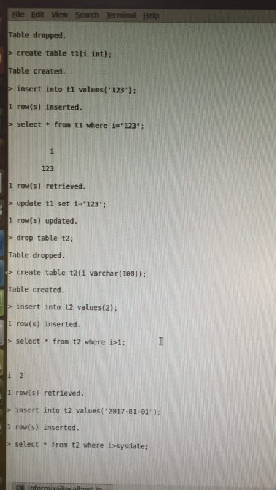 |
| 2018-03-15 14:03:54 | 你 | 数值和字符转换跟ora的差不多 |
| 2018-03-15 14:03:59 | 你 | 字符和日期的不行 |
| 2018-03-15 14:05:03 | 我 | 这个图片是咱们的还是 Oracle 的 |
| 2018-03-15 14:05:09 | 你 | 8t |
| 2018-03-15 14:05:58 | 你 | 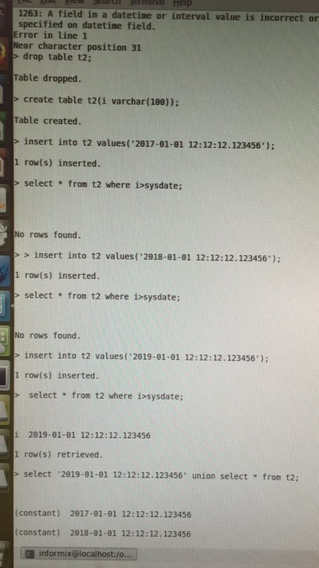 |
| 2018-03-15 14:08:57 | 你 | 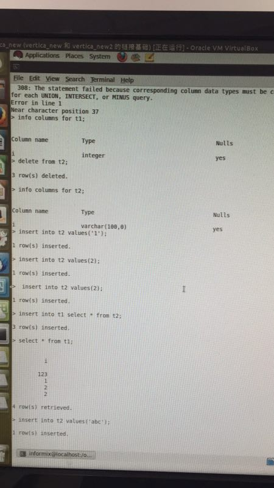 |
| 2018-03-15 14:09:13 | 你 | 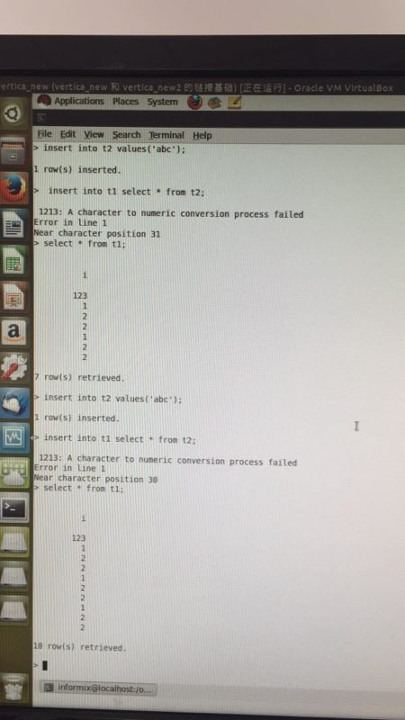 |
| 2018-03-15 14:10:11 | 我 | 亲，我现在真没空看了，赵总一直和我说话 |
| 2018-03-15 14:10:25 | 你 | 没事 你先忙你的 |
| 2018-03-15 14:10:27 | 你 | 我没事 |
| 2018-03-15 14:10:35 | 你 | 就是跟你说下 你心里有个数就行 |
| 2018-03-15 14:19:24 | 我 | 嗯嗯，待会开会就靠你啦😄 |
| 2018-03-15 14:19:55 | 你 | 靠我不行啊 我不知道你想说啥 |
| 2018-03-15 14:20:44 | 我 | 其实我就是想逼王总定一个方向，咱们是要和 Oracle 兼容还是 DM 兼容 |
| 2018-03-15 14:21:06 | 我 | 这次我就是整的动静大点 |
| 2018-03-15 14:22:47 | 你 | 我觉得不是你整的动静大 |
| 2018-03-15 14:22:51 | 你 | 是王总整的 |
| 2018-03-15 14:23:15 | 你 | 没事 一会见招拆招 现在隐式类型转换啥样 只有我测试了 别人都不知道 |
| 2018-03-15 14:23:27 | 我 | 嗯嗯 |
| 2018-03-15 14:23:28 | 你 | 你就记住 我们跟ora差别不是特别大 |
| 2018-03-15 14:23:32 | 你 | DM的还没测 |
| 2018-03-15 14:23:43 | 我 | 好 |
| 2018-03-15 14:24:03 | 你 | 会上别一直说这事做起来要一年两年的就好 |
| 2018-03-15 14:24:16 | 你 | 难度大之类的也别说 |
| 2018-03-15 14:24:23 | 你 | 就说方向的事 |
| 2018-03-15 14:24:30 | 你 | 调研的工作 回头我给做 |
| 2018-03-15 14:24:37 | 我 | 嗯嗯，我不说 |
| 2018-03-15 14:24:38 | 你 | 你们研发的等我的结论就行 |
| 2018-03-15 14:24:55 | 你 | 哦啦 |
| 2018-03-15 14:25:53 | 你 | |
| 2018-03-15 15:08:33 | 我 | 唉，这个会一时半会完不了了 |
| 2018-03-15 15:08:44 | 你 | 你被问了吗 |
| 2018-03-15 15:08:58 | 你 | 我给你发个表格看看 |
| 2018-03-15 15:09:04 | 你 | 隐式类型转换的 |
| 2018-03-15 15:09:07 | 你 | 看吗 |
| 2018-03-15 15:13:18 | 我 | 好的，发给我吧 |
| 2018-03-15 15:17:04 | 我 | 现在我们讨论454，王总要多条腿走路，同时几个方向去优化，惦记从PLSQL调人呢 |
| 2018-03-15 15:34:29 | 你 | 这个刘正超气死我了 |
| 2018-03-15 15:34:36 | 我 | 咋了 |
| 2018-03-15 15:34:45 | 你 | 刚才老陈来了 |
| 2018-03-15 15:35:05 | 你 | 跟张工密谋呢 |
| 2018-03-15 15:35:08 | 你 | 不知道说啥 |
| 2018-03-15 15:35:32 | 我 | 哦 |
| 2018-03-15 15:35:52 | 你 | 王总就是惦记PLSQL的人 |
| 2018-03-15 15:35:58 | 我 | 刘正超不长眼，找你说话吧 |
| 2018-03-15 15:36:02 | 你 | 一直想停那个任务 |
| 2018-03-15 15:36:19 | 你 | 我让他做个时间日期的测试 任务说了3遍了 |
| 2018-03-15 15:36:44 | 你 | 今天提交给我的结果 测试的那几条跟我给他的都是重的 |
| 2018-03-15 15:37:41 | 我 | 呵呵 |
| 2018-03-15 15:51:47 | 你 | 你们还在开会啊 |
| 2018-03-15 15:52:19 | 我 | 是 |
| 2018-03-15 15:52:39 | 我 | 吕迅也被喊过来了 |
| 2018-03-15 16:01:02 | 我 | 王总说讨论了半天，他还没搞清楚这个问题 |
| 2018-03-15 16:01:07 | 我 | 简直了 |
| 2018-03-15 16:01:16 | 你 | 真晕 |
| 2018-03-15 16:01:21 | 你 | 你们讨论啥呢 |
| 2018-03-15 16:01:29 | 你 | 太搞笑了 |
| 2018-03-15 16:01:36 | 我 | 454 |
| 2018-03-15 16:01:37 | 你 | 王总每次都不聚焦 |
| 2018-03-15 16:10:43 | 我 | 哈哈，老杨被气走了 |
| 2018-03-15 16:11:10 | 你 | 咋了 |
| 2018-03-15 16:11:11 | 你 | 说说 |
| 2018-03-15 16:11:13 | 你 | 快说说 |
| 2018-03-15 16:12:10 | 我 | 赵总被崔总喊走了 |
| 2018-03-15 16:12:49 | 我 | 老杨就主持会议，让大家提有什么需要现场收集的 |
| 2018-03-15 16:13:45 | 我 | 结果王总和郑黎辉俩人瞎指挥 |
| 2018-03-15 16:14:14 | 我 | 老杨就怒了，说不伺候了。 |
| 2018-03-15 16:29:01 | 我 | 忙吗 |
| 2018-03-15 16:32:53 | 你 | 不忙了 |
| 2018-03-15 16:32:59 | 你 | 刚才跟小姑娘说话呢 |
| 2018-03-15 16:33:11 | 你 | 给他安排个活 他不知道怎么做 |
| 2018-03-15 16:33:20 | 我 | 嗯嗯，我好无聊 |
| 2018-03-15 16:33:29 | 你 | 咱们聊天吧 |
| 2018-03-15 16:33:36 | 我 | 好呀 |
| 2018-03-15 16:34:04 | 你 | 王总和郑黎辉俩人瞎指挥啥了 |
| 2018-03-15 16:34:13 | 你 | 老杨走了 你们怎么开啊 |
| 2018-03-15 16:34:38 | 我 | 都让老杨收集这个收集那个，还不停提问 |
| 2018-03-15 16:35:22 | 我 | 现在是王欣主持，王总和李俊旗打电话呢 |
| 2018-03-15 16:36:11 | 我 | 我已经不听了 |
| 2018-03-15 16:36:27 | 我 | 没啥有营养的 |
| 2018-03-15 16:37:03 | 我 | 真的对王总无语了 |
| 2018-03-15 16:38:02 | 我 | 人家仔细教李俊旗怎么操作，可是去现场的是刘冠举 |
| 2018-03-15 16:38:19 | 我 | 几乎是一步一步的教 |
| 2018-03-15 18:18:28 | 我 | 你今天是不是又早走不了了 |
| 2018-03-15 18:18:50 | 你 | 是 |
| 2018-03-15 18:25:17 | 我 | 唉，今年怎么会这么忙 |
| 2018-03-15 18:25:28 | 你 | 因为赵总 |
| 2018-03-15 18:52:55 | 你 | 继保这个项目信息你知道的全麻 |
| 2018-03-15 18:52:57 | 你 | 吗 |
| 2018-03-15 18:53:08 | 我 | 不知道，你得问晓亮 |
| 2018-03-15 18:53:12 | 你 | 我都知道 |
| 2018-03-15 18:53:15 | 你 | 我已经问过了 |
| 2018-03-15 18:53:33 | 你 | 我现在终于把国网这些个项目搞的差不多了 |
| 2018-03-15 18:53:41 | 我 | 嗯嗯 |
| 2018-03-15 18:53:46 | 你 | 我想跟你说下 |
| 2018-03-15 18:53:50 | 你 | 你去隔壁屋吧 |
| 2018-03-15 18:53:52 | 我 | 好呀好呀 |
| 2018-03-15 18:53:56 | 你 | 我不想让张道山听到 |
| 2018-03-15 18:54:07 | 你 | 随便找个理由 我一会追过你去 |
| 2018-03-15 18:54:12 | 我 | 好 |
| 2018-03-15 19:06:22 | 我 | 今天老陈还要找我呢，我等你走以后再去找他 |
| 2018-03-15 19:06:48 | 你 | 我没什么跟你说的了 你去吧 |
| 2018-03-15 19:07:35 | 我 | 我不去，我要看着你，欣赏一下美女，放松一下 |
{kind=link}
{kind=link}
{kind=link}
{kind=link}
{kind=link}
2018-03-16¶
| 2018-03-16 08:53:02 | 我 | 昨天和老陈聊天，说咱们也要定岗定员了。你要考虑一下你手下留谁的问题了 |
| 2018-03-16 08:53:18 | 我 | 销售的定岗定员已经完成了 |
| 2018-03-16 08:53:28 | 我 | 现在正在做行销部的 |
| 2018-03-16 08:53:32 | 你 | 啥叫定岗定员 |
| 2018-03-16 08:53:45 | 我 | 裁员的马甲 |
| 2018-03-16 08:53:53 | 你 | 哦 |
| 2018-03-16 08:54:01 | 你 | 好的 |
| 2018-03-16 08:54:12 | 我 | 销售今年离职的就够完成指标的了 |
| 2018-03-16 08:54:29 | 你 | 明白了 |
| 2018-03-16 08:54:34 | 我 | 行销部据说要把 POC 合并到研发的测试 |
| 2018-03-16 08:54:46 | 你 | 真的假的 |
| 2018-03-16 08:54:56 | 我 | 真的，我从严丹那里听说的 |
| 2018-03-16 08:54:57 | 你 | 老杨能同意？ |
| 2018-03-16 08:55:31 | 我 | 据说是大崔推动的，别说老杨，赵总都很不好办 |
| 2018-03-16 09:06:30 | 你 | 陈总为啥不接电话 |
| 2018-03-16 09:06:33 | 你 | 好奇怪 |
| 2018-03-16 09:06:56 | 我 | 不知道 |
| 2018-03-16 09:44:30 | 你 | 1.6.6估计不能延期了 |
| 2018-03-16 09:44:37 | 你 | 至少rh版不行 |
| 2018-03-16 09:45:16 | 我 | rh 其实没有问题了 |
| 2018-03-16 09:54:58 | 我 | [链接] 群聊的聊天记录 |
| 2018-03-16 09:55:22 | 你 | 唉 |
| 2018-03-16 09:55:26 | 你 | 又提新要求了 |
| 2018-03-16 09:55:48 | 我 | 正常 |
| 2018-03-16 09:56:23 | 我 | 昨天和老陈聊，赵总这次损失比较大 |
| 2018-03-16 09:56:45 | 你 | 怎么讲 |
| 2018-03-16 09:57:07 | 我 | POC相当于给了武总 |
| 2018-03-16 09:57:27 | 我 | 那可是赵总的嫡系 |
| 2018-03-16 09:57:36 | 我 | 老杨的根本 |
| 2018-03-16 09:57:37 | 你 | 8t的POC归8t测试组吗 |
| 2018-03-16 09:57:39 | 你 | 是啊 |
| 2018-03-16 09:57:45 | 我 | 没听说 |
| 2018-03-16 09:57:59 | 你 | 这个变化好大啊 |
| 2018-03-16 09:58:11 | 你 | 那以后怎么池化 |
| 2018-03-16 09:59:04 | 我 | 不知道，我觉得池化就是赵总想出来保团队的说法 |
| 2018-03-16 09:59:25 | 我 | 这种变动赵总应该早就知道 |
| 2018-03-16 12:23:36 | 你 | 你刚才没明白我的意思 |
| 2018-03-16 12:28:01 | 我 | 你说 |
| 2018-03-16 12:32:51 | 你 | 不想说了 |
| 2018-03-16 12:33:00 | 你 | 没什么大事，反正下午就开会了 |
| 2018-03-16 12:33:09 | 你 | 刚才看到一张图 |
| 2018-03-16 12:33:13 | 你 | |
| 2018-03-16 12:33:42 | 我 | 嗯嗯 |
| 2018-03-16 12:33:58 | 我 | 有感触？ |
| 2018-03-16 12:34:13 | 我 | 是因为我不懂你？ |
| 2018-03-16 12:34:25 | 你 | 当然不是 |
| 2018-03-16 12:34:34 | 你 | 你怎么会不懂我呢 |
| 2018-03-16 12:34:51 | 你 | 你是这世界上最懂我的人，没有之一[调皮] |
| 2018-03-16 12:34:52 | 我 | [动画表情] |
| 2018-03-16 12:35:08 | 我 | 太高兴了 |
| 2018-03-16 12:35:12 | 你 | 最近都太忙了 |
| 2018-03-16 12:35:46 | 你 | 都看不到 |
| 2018-03-16 12:35:50 | 我 | 没错 |
| 2018-03-16 12:36:08 | 我 | 都没空欣赏你了 |
| 2018-03-16 12:36:15 | 你 | 我现在觉得一些鸡汤都是束手束脚的 |
| 2018-03-16 12:36:18 | 你 | 你发现了吗 |
| 2018-03-16 12:36:45 | 你 | 什么跟别人说话的时候别说，你听懂了吗，要说我说清楚了吗之类的 |
| 2018-03-16 12:37:40 | 我 | 说的太对了 |
| 2018-03-16 12:37:41 | 你 | 其实我们不改为了所谓的礼仪道德束缚自己，尤其是不能束缚自己的思想 |
| 2018-03-16 12:37:51 | 你 | 否则还谈什么自由 |
| 2018-03-16 12:37:58 | 我 | 没错没错 |
| 2018-03-16 12:38:07 | 你 | 这跟你说安全屋也有关 |
| 2018-03-16 12:38:14 | 我 | 这就是我经常和你说的道理 |
| 2018-03-16 12:38:21 | 你 | 随性的前提是清楚的知道边界 |
| 2018-03-16 12:39:45 | 你 | 在自己能够cover住的前提下，管什么礼仪道德 |
| 2018-03-16 12:39:53 | 我 | 没错 |
| 2018-03-16 12:40:11 | 我 | 能cover就是安全屋 |
| 2018-03-16 12:40:33 | 你 | 是 |
| 2018-03-16 12:40:35 | 你 | 没错 |
| 2018-03-16 12:41:16 | 我 | 哈哈，你是什么时候想明白的 |
| 2018-03-16 12:41:37 | 我 | 你真的太聪明了 |
| 2018-03-16 12:41:46 | 你 | 最近想的 |
| 2018-03-16 12:42:14 | 我 | 嗯嗯 |
| 2018-03-16 12:42:36 | 你 | 我最近发现我自己的想法和做法有点冲突 |
| 2018-03-16 12:42:48 | 我 | 这个想明白了，好多事情就顺了 |
| 2018-03-16 12:42:55 | 我 | 怎么冲突了 |
| 2018-03-16 12:42:56 | 你 | 我想的就是自由啊 放飞自己啊 啥的 |
| 2018-03-16 12:43:07 | 你 | 但是我做事的时候却有点束手束脚 |
| 2018-03-16 12:43:37 | 你 | 比如我会跟你问我是不是聒噪啊 还比如昨天跟你说的怕你张道山怼什么的 |
| 2018-03-16 12:44:05 | 你 | 我今天想了想 我为什么会怕 我怕什么 |
| 2018-03-16 12:44:36 | 你 | 然后最近不是挺流行的那个 你的三观我很喜欢漫画么 |
| 2018-03-16 12:44:42 | 我 | 嗯嗯 |
| 2018-03-16 12:44:48 | 你 | 联系一下就想明白了 |
| 2018-03-16 12:45:12 | 你 | 我没什么害怕的 很多人写的东西说的话都是基于自己被束缚的前提写的 |
| 2018-03-16 12:45:25 | 你 | 无外乎教人礼仪道德 |
| 2018-03-16 12:45:37 | 你 | 有的是名人 有的是长辈 |
| 2018-03-16 12:45:50 | 我 | 对对对 |
| 2018-03-16 12:46:15 | 你 | 细分析他们说的在他的层次看来非常正确 他也因为这样做得到了一些小实惠 |
| 2018-03-16 12:46:21 | 你 | 所以就夸夸其谈 |
| 2018-03-16 12:46:48 | 你 | 但如果再细想 其实根本就是错的 |
| 2018-03-16 12:47:15 | 你 | 听了的话 只会让自己越来越错 而且会不断的委屈本我 去迎合超我 |
| 2018-03-16 12:48:24 | 我 | 太对了👍👍👍👍 |
| 2018-03-16 12:48:35 | 你 | 我说的冲突 其实是我接受认可的 『自由理论思想』和原来『仁义礼智信思想』的冲突 所以能看出来 我已经破了 正在立的过程中 |
| 2018-03-16 12:48:54 | 你 | 如果真立了 也就不会有冲突了 |
| 2018-03-16 12:49:41 | 我 | 对 |
| 2018-03-16 12:50:25 | 你 | 你昨天说 你不教我工作 从另一个侧面教 回头应用到工作中 这条路简直不能再清晰 |
| 2018-03-16 12:50:38 | 你 | 工作真的是简单到不行 |
| 2018-03-16 12:50:45 | 我 | 嗯嗯 |
| 2018-03-16 12:51:41 | 你 | 而且我把你说的自由的理论 和克氏说的观察理论结合到一起了 |
| 2018-03-16 12:51:56 | 你 | 我现在清楚的发现克氏理论隐去的那部分 |
| 2018-03-16 12:52:06 | 你 | 不知道是故意不说的 还是他没想明白 |
| 2018-03-16 12:52:17 | 我 | 嗯嗯 |
| 2018-03-16 12:52:51 | 你 | 真想当着你的面说 |
| 2018-03-16 12:53:18 | 我 | 嗯嗯，我也特别想 |
| 2018-03-16 12:53:22 | 你 | 这部分等我以后跟你说吧 |
| 2018-03-16 12:53:31 | 你 | 是一整套的 |
| 2018-03-16 12:53:39 | 我 | 我感觉你离突破不远了 |
| 2018-03-16 12:53:51 | 我 | 很快就有自己的道了 |
| 2018-03-16 12:54:29 | 你 | 我已经突破了 |
| 2018-03-16 12:54:35 | 你 | 现在就是在实践 |
| 2018-03-16 12:54:41 | 你 | 你说的很多话我又明白了 |
| 2018-03-16 12:55:08 | 你 | 现在是在拿想明白的 验证的过程 |
| 2018-03-16 12:55:11 | 我 | 太好了 |
| 2018-03-16 12:58:58 | 你 | 跟道比起来，技巧，方法太微弱了 |
| 2018-03-16 12:59:31 | 我 | 没错，就是这感觉 |
| 2018-03-16 12:59:35 | 你 | 这让我想起了张振鹏， |
| 2018-03-16 13:00:05 | 你 | 那时候，测试组懈怠，他老是跟我说怕压的狠会有人走 |
| 2018-03-16 13:00:08 | 你 | 吓得不行 |
| 2018-03-16 13:00:31 | 你 | 当时他跟我说的时候，我觉得他说的也有道理 |
| 2018-03-16 13:01:04 | 你 | 不过我始终认为，留下的才是对的，我不怕下边人走 |
| 2018-03-16 13:01:22 | 我 | 嗯嗯 |
| 2018-03-16 13:01:27 | 你 | 现在我完全知道他的痛苦和完成他痛苦的原因 |
| 2018-03-16 13:01:33 | 你 | 造成 |
| 2018-03-16 13:41:41 | 我 | 你今天晚上能晚点走吗？我有些事情想和你说 |
| 2018-03-16 13:41:52 | 你 | 我今天去北京 |
| 2018-03-16 13:41:56 | 你 | 下了班去 |
| 2018-03-16 13:42:01 | 你 | 不能晚走 |
| 2018-03-16 13:42:06 | 你 | 我准备6点走 |
| 2018-03-16 13:42:07 | 我 | 对，我忘了 |
| 2018-03-16 13:42:15 | 你 | 会开不完我也走 |
| 2018-03-16 13:42:21 | 我 | 嗯嗯 |
| 2018-03-16 13:42:27 | 你 | 啥事啊 |
| 2018-03-16 13:42:33 | 你 | 能透漏点不 |
| 2018-03-16 13:42:51 | 我 | 一个是公司最近的变动，一个是你昨天和我说的国网的情况 |
| 2018-03-16 13:43:08 | 我 | 不行明天打电话说吧 |
| 2018-03-16 13:43:13 | 你 | 东东也去 |
| 2018-03-16 13:43:21 | 你 | 一会找个机会说 |
| 2018-03-16 13:43:22 | 我 | 我先和你大概说一下 |
| 2018-03-16 13:43:26 | 你 | 嗯嗯 |
| 2018-03-16 13:43:29 | 你 | 你说吧 |
| 2018-03-16 13:44:06 | 我 | 公司现在会有大变动，到现在今年新的组织架构还没有公布 |
| 2018-03-16 13:44:20 | 我 | 听说行销部要缩减 |
| 2018-03-16 13:44:27 | 你 | 嗯嗯 |
| 2018-03-16 13:44:43 | 你 | 缩减是好事 |
| 2018-03-16 13:44:53 | 你 | 把那些废人都开了 |
| 2018-03-16 13:45:04 | 我 | POC 去研发测试，L2的职责给 L3 |
| 2018-03-16 13:45:24 | 你 | 哦哦 |
| 2018-03-16 13:45:31 | 你 | 这么大的事啊 |
| 2018-03-16 13:45:34 | 我 | 行销部出35个人给研发 |
| 2018-03-16 13:45:41 | 你 | 我的天啊 |
| 2018-03-16 13:45:51 | 你 | 涉及到8t的呢 |
| 2018-03-16 13:46:13 | 我 | 这35个人据说要成立一个新公司，从事外包服务 |
| 2018-03-16 13:46:31 | 我 | 8t 这块我还不知道，8a 的基本上定了 |
| 2018-03-16 13:46:44 | 你 | 外包干啥啊 |
| 2018-03-16 13:47:24 | 你 | 真能折腾 |
| 2018-03-16 13:48:20 | 我 | 这事应该是因为公司上市 |
| 2018-03-16 13:48:35 | 我 | 大崔亲自抓的 |
| 2018-03-16 13:48:44 | 你 | 行销部的事是谁起的头 |
| 2018-03-16 13:48:49 | 我 | 大崔 |
| 2018-03-16 13:48:50 | 你 | 这水是越来越混了 |
| 2018-03-16 13:48:58 | 我 | 嗯嗯 |
| 2018-03-16 13:49:07 | 我 | 另一件事情 |
| 2018-03-16 13:49:19 | 我 | 你知道老张他们现在干的事情吗 |
| 2018-03-16 13:49:25 | 你 | 不知道 |
| 2018-03-16 13:49:29 | 你 | 没人跟我说 |
| 2018-03-16 13:49:55 | 我 | 我听来的消息，是大崔让整理8t 各个市场的需求 |
| 2018-03-16 13:50:03 | 你 | 好像是 |
| 2018-03-16 13:50:08 | 我 | 老张和高杰在整的 PPT 是给大崔看的 |
| 2018-03-16 13:50:17 | 你 | 这事赵总快催死张工了 |
| 2018-03-16 13:50:28 | 你 | 王总就差站在张工旁边看 |
| 2018-03-16 13:50:47 | 我 | 还有就是听说赵总让把开放市场的需求给武总，让武总去确认 |
| 2018-03-16 13:50:48 | 你 | 他们一直说 项目 需求 top10啥的 |
| 2018-03-16 13:50:57 | 我 | 嗯嗯 |
| 2018-03-16 13:51:10 | 我 | 你昨天不是和我说了国网的事情吗 |
| 2018-03-16 13:51:25 | 你 | 恩 |
| 2018-03-16 13:51:46 | 我 | 你昨天说的东西你最好整理一个文档，我觉得你整理的内容大崔会非常感兴趣 |
| 2018-03-16 13:52:15 | 你 | 啊 这些信息大崔应该知道啊 |
| 2018-03-16 13:52:19 | 我 | 就是国网应用开放商的分类等等这些东西 |
| 2018-03-16 13:52:32 | 我 | 不一定，没人给他一个整理后的 |
| 2018-03-16 13:52:35 | 你 | 那我整理下 |
| 2018-03-16 13:52:42 | 我 | 其实老张他们做的就是这个 |
| 2018-03-16 13:52:58 | 我 | 你昨天和我说的那些还不够 |
| 2018-03-16 13:53:10 | 我 | 等你整理完，我看看还缺什么 |
| 2018-03-16 13:53:22 | 你 | 这些信息理论上都来自项目经理的日报 |
| 2018-03-16 13:53:34 | 你 | 只是咱们收不到 所以项目信息都是碎片化的 |
| 2018-03-16 13:53:42 | 我 | 对，太碎了 |
| 2018-03-16 13:53:45 | 你 | 我就是比较感兴趣 不愿意糊里糊涂 |
| 2018-03-16 13:53:58 | 你 | 所以我才追着这几个要好的问得 |
| 2018-03-16 13:54:06 | 我 | 嗯嗯 |
| 2018-03-16 13:54:11 | 你 | 我整理下吧 |
| 2018-03-16 13:54:14 | 你 | 信息也不多 |
| 2018-03-16 13:54:18 | 我 | 说明你很有战略眼光 |
| 2018-03-16 13:54:26 | 你 | 嗨 |
| 2018-03-16 13:54:29 | 我 | 没事，缺的东西再问 |
| 2018-03-16 13:54:45 | 你 | 啥战略眼光 这事之所以做成现在这样 |
| 2018-03-16 13:54:55 | 你 | 要么就是领导捂着 故意不让给研发 |
| 2018-03-16 13:55:11 | 你 | 要么就是管理混乱 信息没到咱们这 |
| 2018-03-16 13:55:31 | 我 | 不是这样的，现在就是缺你整理的这样的信息 |
| 2018-03-16 13:55:39 | 我 | 大崔看不见全貌 |
| 2018-03-16 13:55:46 | 我 | 他又不可能自己去整理 |
| 2018-03-16 13:55:49 | 你 | 那就是管理混乱 |
| 2018-03-16 13:55:53 | 我 | 没错 |
| 2018-03-16 13:56:05 | 你 | 有用信息传输过程中丢了 |
| 2018-03-16 13:56:10 | 我 | 是 |
| 2018-03-16 13:56:20 | 你 | 我先整理下吧 |
| 2018-03-16 13:56:24 | 我 | 所以我才说你有战略眼光 |
| 2018-03-16 13:56:28 | 你 | 这些项目信息 简单的很 |
| 2018-03-16 14:03:37 | 我 | 我现在怎么这么耐你呀，看着你说话就那么可爱 |
| 2018-03-16 14:46:02 | 我 | 老张完全就是研发思维 |
| 2018-03-16 14:46:16 | 你 | 是 |
| 2018-03-16 14:46:25 | 你 | 上来就是怎么实现的 |
| 2018-03-16 14:47:06 | 我 | 你知道吗，我现在难以抑制兴奋的心情 |
| 2018-03-16 14:47:22 | 你 | 咋了 |
| 2018-03-16 14:47:33 | 你 | 说说 啥让你这么兴奋 |
| 2018-03-16 14:47:36 | 我 | 你中午和我说的 |
| 2018-03-16 14:47:40 | 你 | 哦哦 |
| 2018-03-16 14:47:43 | 你 | 是吧 |
| 2018-03-16 14:48:03 | 我 | 其它的在我眼里都是浮云 |
| 2018-03-16 14:48:59 | 你 | 哈哈 |
| 2018-03-16 14:49:04 | 你 | 只有我不是耶 |
| 2018-03-16 14:49:10 | 我 | 对呀 |
| 2018-03-16 14:49:27 | 你 | 其实我还有一点没跟你说呢 |
| 2018-03-16 14:49:39 | 你 | 你听了肯定会更兴奋 |
| 2018-03-16 14:49:40 | 我 | 嗯嗯 |
| 2018-03-16 14:49:48 | 你 | 我知道你演戏的事了 |
| 2018-03-16 14:49:50 | 你 | 哈哈 |
| 2018-03-16 14:50:01 | 我 | 哈哈 |
| 2018-03-16 14:50:03 | 你 | 我的所有情绪 我都知道了 |
| 2018-03-16 14:50:22 | 你 | 就是我知道 观察者是什么视角 |
| 2018-03-16 14:53:53 | 我 | 太棒了 |
| 2018-03-16 14:54:14 | 我 | 以后咱俩可以做心灵交流了 |
| 2018-03-16 14:54:21 | 你 | 最重要的 我能以观察者的视角 观察我自己 |
| 2018-03-16 14:55:01 | 我 | 嗯嗯，你的自我开始形成了 |
| 2018-03-16 14:55:10 | 你 | 是 |
| 2018-03-16 14:55:16 | 你 | 说的真对 |
| 2018-03-16 14:55:20 | 我 | 真正的自我 |
| 2018-03-16 15:14:47 | 我 | 你听见隔壁马姐说话吗 |
| 2018-03-16 15:14:54 | 你 | 听见了 |
| 2018-03-16 16:02:09 | 你 | 我没听明白 |
| 2018-03-16 16:03:09 | 我 | 没事，回来我给你写吧 |
| 2018-03-16 16:03:17 | 我 | 你胃疼吗 |
| 2018-03-16 16:04:07 | 你 | 不是胃 |
| 2018-03-16 16:04:14 | 你 | 我没听明白 气死我了 |
| 2018-03-16 16:04:34 | 我 | 有空再说吧 |
| 2018-03-16 16:04:46 | 你 | 好吧 没事 |
| 2018-03-16 16:05:29 | 你 | 不开心不开心不开心 |
| 2018-03-16 16:06:24 | 你 | 先开会吧 |
| 2018-03-16 16:06:27 | 你 | 等着走呢 |
| 2018-03-16 16:06:43 | 我 | 嗯嗯 |
| 2018-03-16 16:23:07 | 你 | GCI的现在老冷写送测邮件吗 |
| 2018-03-16 16:23:28 | 我 | 是 |
| 2018-03-16 16:25:39 | 你 | 我怎么老是听不懂陈总说话 |
| 2018-03-16 16:25:43 | 你 | 是我的问题吗 |
| 2018-03-16 16:26:24 | 你 | 怎么推进这事 怎么还是研发的推销售啊 |
| 2018-03-16 16:28:06 | 我 | 唉，你不熟悉他的工作方式 |
| 2018-03-16 16:32:47 | 我 | 不让你参加赵总的会，老张不参加你们的会 |
| 2018-03-16 16:32:58 | 我 | 这些信息大家都不知道 |
| 2018-03-16 16:35:54 | 你 | 拆能解决这个问题吗 |
| 2018-03-16 16:35:58 | 你 | 真好笑 |
| 2018-03-16 16:36:08 | 我 | 不是 |
| 2018-03-16 16:36:30 | 我 | 老陈和老张都推卸 |
| 2018-03-16 17:00:36 | 我 | 老张经常把自己绕里头 |
| 2018-03-16 17:05:42 | 你 | 是 |
| 2018-03-16 17:05:45 | 你 | 特别好玩 |
| 2018-03-16 17:05:53 | 你 | 他有时候挺耿直的 |
| 2018-03-16 17:06:14 | 我 | 时间正好 |
{kind=link}
2018-03-19¶
| 2018-03-19 09:11:18 | 你 | 他们dsd的连晨会都不会开 |
| 2018-03-19 09:11:26 | 你 | 每次都得培训 |
| 2018-03-19 09:11:39 | 我 | 嗯嗯 |
| 2018-03-19 09:18:12 | 我 | 哈哈，怼上了 |
| 2018-03-19 09:18:34 | 你 | 我们怎么问销售啊 |
| 2018-03-19 09:18:50 | 我 | 项管去问 |
| 2018-03-19 09:19:01 | 你 | 哦哦 |
| 2018-03-19 09:19:10 | 我 | 这是项目管理，不是需求 |
| 2018-03-19 09:24:33 | 你 | 这个刘正超是个废物点心 |
| 2018-03-19 09:24:50 | 我 | 哈哈，不行就不要了 |
| 2018-03-19 09:25:03 | 你 | T3_414_用户需求说明书_华云项目_支持FIRST、LAST分析函数_v1.0_20180313_ll.docx |
| 2018-03-19 09:27:20 | 你 | 你现在看吗 你看的话我等你看完再发评审 |
| 2018-03-19 09:27:46 | 你 | 回头我把NF项目给你讲下背景 |
| 2018-03-19 09:27:57 | 你 | 这个你清楚吗 |
| 2018-03-19 09:28:04 | 我 | 你直接发评审吧 |
| 2018-03-19 09:28:11 | 你 | 也行 |
| 2018-03-19 09:28:15 | 我 | NF 我不清楚，回来你给我讲讲吧 |
| 2018-03-19 09:28:22 | 你 | 我先发给张道山 |
| 2018-03-19 09:28:26 | 我 | 嗯 |
| 2018-03-19 09:36:34 | 你 | 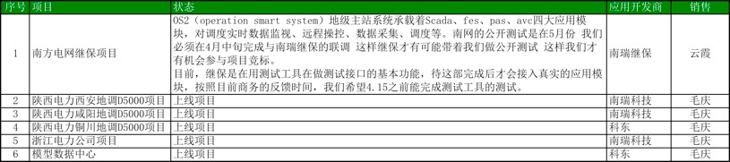 |
| 2018-03-19 09:36:41 | 你 | 我就知道继保的前因后果 |
| 2018-03-19 09:36:51 | 你 | D5000的知道的也不多 |
| 2018-03-19 09:37:14 | 你 | 等我下午跟赵益和晓亮再问问 |
| 2018-03-19 10:05:48 | 我 | 咋啦，今天心情不好吗 |
| 2018-03-19 10:05:53 | 你 | 没有 |
| 2018-03-19 10:21:33 | 你 | 张道山改了一版我写的用需 |
| 2018-03-19 10:21:39 | 你 | 我没看出来哪改了 |
| 2018-03-19 10:21:48 | 你 | 改的就是的、了之类的 |
| 2018-03-19 10:22:36 | 我 | 哈哈 |
| 2018-03-19 10:22:51 | 你 | 你今天有时间吗 我发给你看看 |
| 2018-03-19 10:22:55 | 你 | 你有空吗 |
| 2018-03-19 10:23:03 | 我 | 有 |
| 2018-03-19 10:23:08 | 我 | 你发给我吧 |
| 2018-03-19 10:23:14 | 你 | 你帮我看看张道山的思路 |
| 2018-03-19 10:23:23 | 我 | 嗯嗯 |
| 2018-03-19 10:25:07 | 你 | T3_92_用户需求说明书_南瑞D5000_提供与Oracle兼容的order by用法_v1.0_20180312_lh.docx |
| 2018-03-19 10:25:33 | 你 | T3_92_用户需求说明书_南瑞D5000_提供与Oracle兼容的order by用法_v1.0_20180312_zds.docx |
| 2018-03-19 10:25:41 | 你 | 你看下 我没看出来有多大的区别 |
| 2018-03-19 10:28:17 | 你 | 你帮我看下 先别干别的事了 |
| 2018-03-19 10:28:24 | 你 | 我就烦这种多事的人 |
| 2018-03-19 10:28:26 | 我 | 嗯嗯 |
| 2018-03-19 10:34:44 | 你 | 你说说 |
| 2018-03-19 10:34:47 | 你 | 看完了吗 |
| 2018-03-19 10:34:57 | 我 | 稍等，我给你一份 |
| 2018-03-19 10:35:02 | 你 | 好 |
| 2018-03-19 10:36:18 | 我 | GBase加载工具支持指定列值–比较.docx |
| 2018-03-19 10:45:54 | 你 | 我最近又有点新体会 |
| 2018-03-19 10:46:09 | 我 | 什么新体会 |
| 2018-03-19 10:46:33 | 你 | 一句说不清楚 |
| 2018-03-19 10:46:57 | 你 | 项目的事 张道山让高杰做去了 |
| 2018-03-19 10:47:07 | 我 | 嗯嗯，这样最好 |
| 2018-03-19 10:47:09 | 你 | 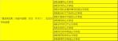 |
| 2018-03-19 10:47:18 | 你 | 我跟你说说NF项目 |
| 2018-03-19 10:47:35 | 你 | 这个表格都是NF项目需要适配的应用 |
| 2018-03-19 10:47:44 | 我 | 嗯 |
| 2018-03-19 10:52:49 | 我 | 这个是你问来的还是从张道山那里得到的 |
| 2018-03-19 10:53:00 | 你 | 是张道山给我的 |
| 2018-03-19 10:53:04 | 你 | 我问的张道山 |
| 2018-03-19 10:53:19 | 你 | 他说半天做不了 |
| 2018-03-19 10:53:30 | 我 | 嗯嗯 |
| 2018-03-19 10:53:37 | 你 | 我跟他说 这没什么做不了的 你有应用的列表吗 |
| 2018-03-19 10:53:40 | 你 | 他就发给我了 |
| 2018-03-19 10:53:49 | 你 | 我说我给做下 他说让高杰做 |
| 2018-03-19 10:54:02 | 我 | 嗯嗯，我知道张道山是怎么回事，我本来今天还想和你仔细说说呢 |
| 2018-03-19 10:54:30 | 你 | 其实我大概齐也知道 |
| 2018-03-19 10:54:39 | 我 | 张道山现在在防着你 |
| 2018-03-19 10:54:59 | 我 | 我觉得 PLSQL 那事让他感觉到了威胁 |
| 2018-03-19 10:55:17 | 你 | 有可能 DSD项目的事 他都没跟我说 |
| 2018-03-19 10:55:28 | 你 | 不过我想知道的 都问他了 他也没不告诉我 |
| 2018-03-19 10:55:39 | 我 | 现在不光是 DSD，连咱们原来的他都不让你管了 |
| 2018-03-19 10:55:52 | 我 | 名义上他是产总，应该他管 |
| 2018-03-19 10:56:01 | 我 | 现在他拉着高杰管 |
| 2018-03-19 10:56:27 | 你 | 是 |
| 2018-03-19 10:56:28 | 我 | 就是说这些你想管的大事，他都让高杰去做了 |
| 2018-03-19 10:57:04 | 你 | 今早上你也看出来了 陈总也不知道问谁要这些信息 所以项管 L3 需求他都说了 |
| 2018-03-19 10:57:07 | 我 | 张道山这个老狐狸摆了你一道 |
| 2018-03-19 10:57:20 | 你 | 回来高杰就找张道山问怎么做 |
| 2018-03-19 10:57:25 | 我 | 对，其实老陈这么说也是对张道山不满 |
| 2018-03-19 10:57:26 | 你 | 他就说了一堆废话 |
| 2018-03-19 10:57:46 | 你 | 然后我就说 把NF适配的应用列表他那有没有 |
| 2018-03-19 10:57:50 | 你 | 他就直接发给我了 |
| 2018-03-19 10:58:09 | 你 | 我说我给挨个去问 不管问销售还是项目经理 |
| 2018-03-19 10:58:16 | 你 | 他就马上说让高杰去问 |
| 2018-03-19 10:58:23 | 我 | 嗯嗯 |
| 2018-03-19 10:58:34 | 你 | 我就立马转到高杰 让她到时候跟陈总对接 |
| 2018-03-19 10:58:37 | 你 | 高杰答应了 |
| 2018-03-19 10:58:56 | 你 | 其实我并没有想管这事 我就是想看看张道山的态度 |
| 2018-03-19 10:58:58 | 我 | 现在看张道山是防着你，就只让你做需求，把你压在下面 |
| 2018-03-19 10:59:09 | 你 | 我就担心这个 |
| 2018-03-19 10:59:16 | 你 | 我今早就是试探他 |
| 2018-03-19 10:59:23 | 你 | 没有想着我去做这事 |
| 2018-03-19 10:59:45 | 你 | 而且 你放心吧 跟技术支持对接的 我想知道的信息 高杰问不到 我能问到 |
| 2018-03-19 10:59:52 | 我 | 嗯嗯 |
| 2018-03-19 11:00:04 | 你 | 我只是想看看张道山的态度 |
| 2018-03-19 11:00:09 | 我 | 你先把国网整清楚，不要让张道山知道 |
| 2018-03-19 11:00:13 | 你 | 他又改我写的文档 |
| 2018-03-19 11:00:23 | 你 | 我知道 所以这些事我都防着他做的 |
| 2018-03-19 11:00:28 | 你 | 只跟你说了 |
| 2018-03-19 11:00:46 | 我 | 找机会把国网的情况和王总、王欣他们说说 |
| 2018-03-19 11:00:51 | 你 | 嗯嗯 |
| 2018-03-19 11:01:06 | 我 | 张道山估计也是怕你搭上赵总这条线 |
| 2018-03-19 11:01:18 | 你 | 要是张道山想压我 我以后就得靠王总这跟大树了 |
| 2018-03-19 11:01:23 | 你 | 我不知道 |
| 2018-03-19 11:01:42 | 你 | 你知道 优化器那事 王欣非得今天优先级的会 她叫我参加 |
| 2018-03-19 11:01:46 | 你 | 我给拒绝了 |
| 2018-03-19 11:01:56 | 我 | 王总你先不要想着靠他，他的位置不一定保得住 |
| 2018-03-19 11:02:07 | 我 | 王欣和赵总这条线你一定要维持住 |
| 2018-03-19 11:02:12 | 你 | 嗯嗯 |
| 2018-03-19 11:02:26 | 我 | 现在我已经打定主意了，王总我全面放弃了，只是利用他 |
| 2018-03-19 11:02:30 | 你 | 我看看最近L2的那会 张道山参加不参加 我心里就知道大概 |
| 2018-03-19 11:02:41 | 你 | 我肯定也是利用他 |
| 2018-03-19 11:02:45 | 你 | 我才看不上他呢 |
| 2018-03-19 11:03:04 | 我 | 公司后面有大动作，不排除王总去一线，部门由赵总管 |
| 2018-03-19 11:03:13 | 你 | 嗯嗯 |
| 2018-03-19 11:03:40 | 我 | 现在咱们部门的工作就是赵总直接安排的 |
| 2018-03-19 11:03:45 | 你 | 是 |
| 2018-03-19 11:03:49 | 我 | 研发这边是安排给我和老陈 |
| 2018-03-19 11:03:59 | 我 | 需求就安排给老张了 |
| 2018-03-19 11:04:04 | 你 | 嗯嗯 |
| 2018-03-19 11:04:21 | 我 | 名义上需求是安排给王总和老张，但是赵总总是跳过王总 |
| 2018-03-19 11:04:28 | 我 | 高杰是王总安排进来的 |
| 2018-03-19 11:04:59 | 你 | 嗯嗯 |
| 2018-03-19 11:05:15 | 我 | 我感觉赵总是想把王总挤走，如果挤不走，那么就把需求从王总手里收走，然后让老杨管 |
| 2018-03-19 11:05:29 | 我 | 老杨今年算是损失比较惨重的 |
| 2018-03-19 11:05:36 | 你 | 嗯嗯 |
| 2018-03-19 11:05:53 | 我 | 把需求给老杨了，老杨的位置也不会太尴尬了 |
| 2018-03-19 11:06:05 | 你 | 嗯嗯 |
| 2018-03-19 13:35:05 | 你 | 还没开完啊 |
| 2018-03-19 13:35:31 | 我 | 快了 |
| 2018-03-19 13:40:30 | 我 | 唉，老张和老杨又扯上了 |
| 2018-03-19 13:40:46 | 你 | 扯上啊 |
| 2018-03-19 13:41:08 | 我 | 拆需求单，谁负责拆 |
| 2018-03-19 13:41:59 | 你 | 优化器那事怎么结论 |
| 2018-03-19 13:42:14 | 我 | 就是这事 |
| 2018-03-19 13:42:27 | 你 | 我知道 |
| 2018-03-19 13:43:13 | 我 | 排在Q3 |
| 2018-03-19 13:43:19 | 我 | 吕迅做 |
| 2018-03-19 13:43:43 | 你 | to_number呢 |
| 2018-03-19 13:43:59 | 我 | 不做了 |
| 2018-03-19 13:44:38 | 你 | 恩 |
| 2018-03-19 15:14:54 | 我 | 忙吗 |
| 2018-03-19 15:15:13 | 你 | 还行 |
| 2018-03-19 15:15:33 | 我 | 聊会天？ |
| 2018-03-19 15:15:53 | 你 | 我先弄下表格 待会我找你吧 |
| 2018-03-19 15:16:00 | 我 | 嗯 |
| 2018-03-19 15:41:02 | 我 | 咋了，紧缩眉头 |
| 2018-03-19 15:41:07 | 你 | 没事 |
| 2018-03-19 16:08:03 | 我 | 你今天怎么了 |
| 2018-03-19 16:18:08 | 你 | 以后张道山做需求，可有你们受的了 |
| 2018-03-19 16:18:49 | 你 | 他又开始说设计了 |
| 2018-03-19 16:19:59 | 我 | 呵呵 |
| 2018-03-19 16:25:07 | 你 | 他写的文档 一个字都不让改 |
| 2018-03-19 16:25:21 | 我 | 刚才评审的是他写的？ |
| 2018-03-19 16:25:28 | 你 | 以后他愿意说就让他说吧 |
| 2018-03-19 16:25:35 | 你 | 正好我也懒得跟他们矫情 |
| 2018-03-19 16:25:45 | 我 | 无所谓，研发看的是软需，不是用需 |
| 2018-03-19 16:25:52 | 我 | 我们按照软需写的做 |
| 2018-03-19 16:25:57 | 你 | 是在评审软需 |
| 2018-03-19 16:26:03 | 你 | 有个异常 其实是应该写的 |
| 2018-03-19 16:26:06 | 你 | 他没让写 |
| 2018-03-19 16:26:17 | 你 | 说 order by只要是合法的就行 |
| 2018-03-19 16:26:24 | 你 | 只说这一句话就行 |
| 2018-03-19 16:26:26 | 你 | 我晕 |
| 2018-03-19 16:26:32 | 你 | 那我们写什么劲啊 |
| 2018-03-19 16:26:40 | 你 | 就一句话就行呗 肯定没错 |
| 2018-03-19 16:26:48 | 我 | 哈哈 |
| 2018-03-19 16:26:49 | 你 | 就是瞎说 |
| 2018-03-19 16:26:56 | 我 | 我今天没管 |
| 2018-03-19 16:27:37 | 我 | 其实中间他问研发嵌套聚集函数的时候，我就想说，你把你刚才说的写文档里面 |
| 2018-03-19 16:27:54 | 你 | 他写的还不如我写的呢 |
| 2018-03-19 16:27:59 | 你 | 还一直解释 |
| 2018-03-19 16:28:02 | 我 | 差远了 |
| 2018-03-19 16:28:06 | 你 | 就这样吧 |
| 2018-03-19 16:28:23 | 你 | 这都是小事 关键order by这种 直接写一句话的 我实在是受不了 |
| 2018-03-19 16:28:34 | 你 | 总这么做下去 还不做成DSD了 |
| 2018-03-19 16:28:38 | 你 | 需求就是一句话 |
| 2018-03-19 16:28:44 | 你 | 就这样吧 |
| 2018-03-19 16:28:47 | 你 | 懒得想 |
| 2018-03-19 16:28:48 | 我 | 嗯嗯 |
| 2018-03-19 16:28:52 | 你 | 他乐意怎么就怎么 |
| 2018-03-19 16:29:00 | 我 | 没事，反正研发有我呢 |
| 2018-03-19 16:29:08 | 我 | 大不了和他打呗 |
| 2018-03-19 16:29:17 | 你 | 随便吧 |
| 2018-03-19 16:33:39 | 你 | 你先跟他打 回头我给你们改状态 |
| 2018-03-19 16:33:50 | 我 | 嗯嗯 |
| 2018-03-19 16:38:35 | 你 | 以后所有文档都让张道山审 累死他 |
| 2018-03-19 16:38:50 | 我 | 嗯嗯 |
| 2018-03-19 19:18:12 | 你 | 改天再说吧 |
| 2018-03-19 19:18:18 | 我 | 嗯嗯 |
{kind=link}
{kind=link}
2018-03-20¶
| 2018-03-20 08:59:28 | 我 | 你今天打球吗 |
| 2018-03-20 09:14:34 | 你 | 打 |
| 2018-03-20 09:15:00 | 我 | 嗯 |
| 2018-03-20 09:36:31 | 你 | 你看高杰 有观点吗 |
| 2018-03-20 09:36:34 | 你 | 一会这一会那 |
| 2018-03-20 09:36:55 | 我 | 她就这样 |
| 2018-03-20 09:38:03 | 你 | 我得说服张工 不然以后计划我都不知道 |
| 2018-03-20 09:38:24 | 我 | 说服什么？ |
| 2018-03-20 09:38:59 | 你 | 没啥 |
| 2018-03-20 09:39:13 | 你 | 上次胡畅泉发的那个邮件 我没怎么看懂 |
| 2018-03-20 09:39:21 | 你 | 是说的加解密有限制对吗 |
| 2018-03-20 09:39:25 | 我 | 计划你可以直接找他们要呀 |
| 2018-03-20 09:39:43 | 我 | 是，畅泉那个你就忽略吧 |
| 2018-03-20 09:39:56 | 你 | 哦 行 那我就不找他了 |
| 2018-03-20 09:40:03 | 你 | 我本来是想找他问问的 |
| 2018-03-20 09:40:13 | 我 | 你不用找，研发这边我都能 cover |
| 2018-03-20 09:40:19 | 你 | 好 |
| 2018-03-20 09:40:33 | 我 | 以后研发的事情你直接找我就行 |
| 2018-03-20 09:40:48 | 你 | 我没找过别人吧 |
| 2018-03-20 09:40:59 | 你 | 我不愿意跟研发的说话 |
| 2018-03-20 09:41:01 | 你 | 说不清楚 |
| 2018-03-20 09:41:04 | 我 | 嗯嗯 |
| 2018-03-20 09:41:25 | 我 | 刚才我和张杰确认了，轻量化你说两个 bug 都在里面 |
| 2018-03-20 09:41:46 | 我 | 不过关于计划，我觉得你有点轻敌了 |
| 2018-03-20 09:41:54 | 我 | 张道山不是不懂 |
| 2018-03-20 09:42:08 | 我 | 他是和高杰一起在糊弄你 |
| 2018-03-20 09:42:16 | 我 | 高杰反而是不明白的主 |
| 2018-03-20 09:42:25 | 你 | 我没觉得张道山不懂啊 |
| 2018-03-20 09:42:46 | 你 | 我觉得我跟张道山最大的区别在于做事的方式 |
| 2018-03-20 09:42:50 | 我 | 不是 |
| 2018-03-20 09:42:56 | 你 | 他也没什么懂得比我少或者比我多 |
| 2018-03-20 09:43:07 | 我 | 我现在感觉张道山对你就像我对王胜利 |
| 2018-03-20 09:43:15 | 我 | 只要是你想要的就不给你 |
| 2018-03-20 09:43:25 | 你 | 哦 |
| 2018-03-20 09:43:42 | 你 | 但是我不是王胜利 只要是我想要的 我就会要 |
| 2018-03-20 09:44:02 | 我 | 恐怕你给他的底牌太多了 |
| 2018-03-20 09:44:13 | 你 | 这个有可能 |
| 2018-03-20 09:45:04 | 我 | 张道山太狡猾，说话从来不会直奔主题，正好和你的风格不一样 |
| 2018-03-20 09:45:35 | 你 | 我知道 |
| 2018-03-20 09:49:27 | 我 | 你现在根本就不知道张道山想干啥 |
| 2018-03-20 09:49:34 | 你 | 是 |
| 2018-03-20 09:49:35 | 你 | 我不知道 |
| 2018-03-20 09:49:43 | 我 | 这是你现在被动的主要原因 |
| 2018-03-20 09:49:47 | 你 | 是 |
| 2018-03-20 09:49:55 | 你 | 我知道这个现状 |
| 2018-03-20 09:50:14 | 你 | 你知道他的想法吗 |
| 2018-03-20 09:50:28 | 我 | 不知道，我是从他的行为猜的 |
| 2018-03-20 09:50:36 | 你 | 我也不知道 |
| 2018-03-20 09:50:48 | 你 | 我现在做事的原则就是做自己想做的任何事 |
| 2018-03-20 09:50:53 | 你 | 不怕与他有冲突 |
| 2018-03-20 09:51:10 | 你 | 然后看他的反应 |
| 2018-03-20 09:51:38 | 我 | 嗯嗯 |
| 2018-03-20 09:51:39 | 你 | 然后在日常中 树立一个想让他知道的自己的形象 |
| 2018-03-20 09:51:48 | 我 | 这个没看懂 |
| 2018-03-20 09:52:13 | 你 | 就是他会在与我的沟通中判定我是一个什么样的人 |
| 2018-03-20 09:52:19 | 你 | 比如我会发脾气 |
| 2018-03-20 09:52:23 | 你 | 会特别执着 |
| 2018-03-20 09:52:27 | 你 | 会怼他 |
| 2018-03-20 09:52:33 | 你 | 会很实在啥都跟他说 |
| 2018-03-20 09:52:37 | 我 | 唉 |
| 2018-03-20 09:52:38 | 你 | 等等这一些的吧 |
| 2018-03-20 09:52:46 | 我 | 你说的都是战术 |
| 2018-03-20 09:52:57 | 你 | 是战术啊 |
| 2018-03-20 09:53:04 | 你 | 我没说是别的啊 |
| 2018-03-20 09:53:14 | 我 | 对付你这些战术非常简单，就一条战略，什么都不让你知道 |
| 2018-03-20 09:53:25 | 我 | 他现在也是这么做的 |
| 2018-03-20 09:53:37 | 我 | 今天我在会上特意提到了这一点 |
| 2018-03-20 09:54:10 | 我 | 现在看老张对你和我的关系还不是太清楚，但是他也知道我是向着你的 |
| 2018-03-20 09:54:35 | 我 | 你现在的问题是战略不清晰 |
| 2018-03-20 09:55:19 | 你 | 我明白你的意思了 |
| 2018-03-20 09:55:49 | 你 | 我什么都不告诉他 他一定会有感觉 就会更防着我 |
| 2018-03-20 09:56:08 | 你 | 我知道的信息 对他价值大吗 |
| 2018-03-20 09:56:20 | 你 | 项目的信息我也没跟他说 |
| 2018-03-20 09:56:36 | 你 | 他对我们的规则 流程 其实根本不care |
| 2018-03-20 09:56:41 | 我 | 先说说他现在是不是防着你呢 |
| 2018-03-20 09:56:55 | 你 | 是 |
| 2018-03-20 09:57:04 | 你 | 但是我想知道的问他 他都告诉我了 |
| 2018-03-20 09:57:09 | 我 | 你的战略是想让他不防着你？ |
| 2018-03-20 09:57:27 | 你 | 我只想知道他的想法 |
| 2018-03-20 09:57:44 | 你 | 对于这个目标 我的战略是 做我想做的事 |
| 2018-03-20 09:57:55 | 你 | 逼出他的底线 |
| 2018-03-20 09:58:13 | 你 | 我不在乎他防着我 |
| 2018-03-20 09:58:44 | 我 | 所以我才说，你是把战术当战略了 |
| 2018-03-20 09:59:20 | 我 | 你要做产总，你要说话算数，这个是你的目标 |
| 2018-03-20 09:59:43 | 我 | 所以你才会关注产品规划，才会关注产品发版 |
| 2018-03-20 09:59:59 | 我 | 你关注的这些都是信息 |
| 2018-03-20 10:00:22 | 你 | 那我不需要关注张道山的想法对吗 |
| 2018-03-20 10:00:33 | 我 | 问题是，这些信息的来源都是张道山 |
| 2018-03-20 10:00:53 | 你 | 他没有主动跟我说 都是我跟他问的 |
| 2018-03-20 10:00:57 | 我 | 如果你也参加赵总的会，你可以完全不用 care 他 |
| 2018-03-20 10:01:14 | 我 | 他告诉你的是他想让你知道的 |
| 2018-03-20 10:01:32 | 你 | 我现在参加不了赵总的会 |
| 2018-03-20 10:01:40 | 我 | 对 |
| 2018-03-20 10:01:55 | 你 | 那怎么办啊 |
| 2018-03-20 10:02:05 | 我 | 先搞清楚你的战略 |
| 2018-03-20 10:02:33 | 我 | 以你现在的位置，是没有办法挑战张道山的 |
| 2018-03-20 10:02:42 | 我 | 只能是迂回战术 |
| 2018-03-20 10:02:56 | 你 | 然后呢 |
| 2018-03-20 10:04:55 | 我 | 那么现在战略上有两个选择：一个是你和他打游击战，以隐蔽对付隐蔽。另一个就是正面的阵地战，明枪明剑 |
| 2018-03-20 10:05:27 | 你 | 肯定是得打游击战了 |
| 2018-03-20 10:05:53 | 你 | 本身我就处于劣势 |
| 2018-03-20 10:06:01 | 我 | 那么你现在的战术呢？ |
| 2018-03-20 10:06:48 | 你 | 不知道 |
| 2018-03-20 10:06:55 | 你 | 隐蔽不是战略么 |
| 2018-03-20 10:07:17 | 我 | 你现在的战术是正面战的 |
| 2018-03-20 10:07:34 | 你 | 你是想让我承认错误吗 |
| 2018-03-20 10:07:41 | 我 | 不是的 |
| 2018-03-20 10:07:45 | 你 | 你不是说我没有战略了么 |
| 2018-03-20 10:07:57 | 你 | 现在战略找出来了 还要我说我的战术不符合战略 |
| 2018-03-20 10:08:13 | 我 | 不是的 |
| 2018-03-20 10:08:40 | 我 | 我是带着你把这些事情分析清楚 |
| 2018-03-20 10:09:43 | 我 | 我其实最想说的是你本身战略不明，你自己的战术是正面战的战术 |
| 2018-03-20 10:09:56 | 你 | 是 |
| 2018-03-20 10:10:00 | 你 | 我已经知道了 |
| 2018-03-20 10:10:05 | 我 | 这就是自发而不是自觉 |
| 2018-03-20 10:10:06 | 你 | 你一说我就明白了 |
| 2018-03-20 10:10:17 | 我 | 嗯嗯 |
| 2018-03-20 10:10:27 | 我 | 后面就简单了 |
| 2018-03-20 10:10:37 | 我 | 战术原则就一条：骗 |
| 2018-03-20 10:10:44 | 我 | 兵不厌诈 |
| 2018-03-20 10:11:00 | 我 | 对付张道山就是骗，不能让他看见你的底牌 |
| 2018-03-20 10:11:24 | 我 | 关于这些信息，我会尽量同步给你 |
| 2018-03-20 10:11:35 | 我 | 你需要自己去判断如何运用 |
| 2018-03-20 10:11:51 | 我 | 我替你做出来的战术永远不是你自己的 |
| 2018-03-20 10:11:52 | 你 | 这个我不太会啊 |
| 2018-03-20 10:12:03 | 我 | 你也需要在失败中成长 |
| 2018-03-20 10:12:12 | 我 | 我会一直在你身后保护你 |
| 2018-03-20 10:12:37 | 你 | 嗯嗯 |
| 2018-03-20 10:12:42 | 你 | 我想想 |
| 2018-03-20 10:13:00 | 你 | 『我替你做出来的战术永远不是你自己的』 |
| 2018-03-20 10:13:03 | 我 | 对，你先想，想好了可以和我来讨论 |
| 2018-03-20 10:13:04 | 你 | 这句话是什么意思 |
| 2018-03-20 10:13:16 | 你 | 这个战略是你帮我想的对吗 |
| 2018-03-20 10:13:22 | 我 | 我现在已经有一套适合你的战术 |
| 2018-03-20 10:13:36 | 我 | 我不想告诉你 |
| 2018-03-20 10:13:46 | 你 | 你先回答我的问题 |
| 2018-03-20 10:13:48 | 我 | 我希望你自己能够历练 |
| 2018-03-20 10:13:56 | 我 | 战略不是我想出来的 |
| 2018-03-20 10:14:04 | 你 | 首先 战略是你帮我想的 至少是你帮我分析的 对吧 |
| 2018-03-20 10:14:12 | 你 | 那我自己就没看清楚 |
| 2018-03-20 10:14:15 | 我 | 是已经摆在那里的，我帮你找的的 |
| 2018-03-20 10:14:18 | 你 | 或者不知都 |
| 2018-03-20 10:14:31 | 你 | 嗯嗯 因为你知道我要什么 |
| 2018-03-20 10:14:37 | 你 | 所以你提醒了我对吗 |
| 2018-03-20 10:14:41 | 我 | 对 |
| 2018-03-20 10:14:43 | 你 | 你先回答我的问题 |
| 2018-03-20 10:15:05 | 你 | 然后 战略清晰以后 才是想战术 |
| 2018-03-20 10:15:09 | 你 | 是这个过程嘛 |
| 2018-03-20 10:15:10 | 你 | 吗 |
| 2018-03-20 10:15:11 | 你 | ？ |
| 2018-03-20 10:15:36 | 我 | 没错，先有战略，再有战术，这个次序决不能错 |
| 2018-03-20 10:15:43 | 你 | 嗯嗯 |
| 2018-03-20 10:16:01 | 我 | 即使你自己没有战略，你的战术也会产生一个战略 |
| 2018-03-20 10:16:22 | 你 | 我的战略是打游击战 因为我明敌暗？ |
| 2018-03-20 10:16:30 | 我 | 这个产生的战略就太不可控了 |
| 2018-03-20 10:16:36 | 你 | 因为他处于优势 |
| 2018-03-20 10:16:58 | 我 | 没错，你可以想想《论持久战》里面是怎么说的 |
| 2018-03-20 10:17:09 | 你 | 我不记得啊 |
| 2018-03-20 10:17:16 | 你 | 我哪记得这些 |
| 2018-03-20 10:17:18 | 我 | 好吧 |
| 2018-03-20 10:17:42 | 你 | 我上学的时候 历史课都是睡过来的 |
| 2018-03-20 10:18:36 | 我 | 简单说就是对于处于优势的敌人，只能通过游击战不停的削弱敌人的实力才能获胜 |
| 2018-03-20 10:19:04 | 你 | 那如何消弱敌人的实力呢 |
| 2018-03-20 10:19:15 | 你 | 好迷糊啊 |
| 2018-03-20 10:19:40 | 我 | 哈哈，战争时期就很简单，打游击战呗 |
| 2018-03-20 10:19:53 | 你 | 一点点击破嘛 |
| 2018-03-20 10:19:56 | 我 | 现在你的情况就不那么明示了 |
| 2018-03-20 10:20:04 | 你 | 一个村一个村的对吧 |
| 2018-03-20 10:20:50 | 我 | 对 |
| 2018-03-20 10:21:01 | 我 | 你现在的情况的核心是信息 |
| 2018-03-20 10:21:20 | 我 | 首先是信息分类，然后一个一个的吃掉 |
| 2018-03-20 10:21:39 | 你 | 啥意思 |
| 2018-03-20 10:21:43 | 我 | 就是每个专门的领域，你能掌控信息 |
| 2018-03-20 10:22:06 | 我 | 信息分类就是找维度切分信息 |
| 2018-03-20 10:22:13 | 我 | 比如国网，就是项目维度 |
| 2018-03-20 10:22:24 | 你 | 你说的太细了 |
| 2018-03-20 10:22:33 | 你 | 我知道啥叫信息分类 |
| 2018-03-20 10:22:34 | 我 | 时间，就是项管维度 |
| 2018-03-20 10:22:37 | 我 | 嗯嗯 |
| 2018-03-20 10:22:49 | 你 | 为什么我现在的核心是信息 |
| 2018-03-20 10:22:55 | 我 | 每个分类后的领域里面的信息你要掌控 |
| 2018-03-20 10:23:14 | 我 | 比如国网，和国网相关的信息你都要知道 |
| 2018-03-20 10:23:21 | 你 | 『每个分类后的领域里面的信息你要掌控』–这个是啥意思 |
| 2018-03-20 10:23:49 | 我 | 项目起止时间、项目性质、现场需求、现场问题等等 |
| 2018-03-20 10:24:16 | 我 | 信息的价值在于整合（大数据） |
| 2018-03-20 10:24:32 | 我 | 任何碎片的信息价值都不高 |
| 2018-03-20 10:24:38 | 你 | 这个我知道 |
| 2018-03-20 10:24:58 | 你 | 接着说 我掌握了这些信息以后呢 |
| 2018-03-20 10:25:11 | 我 | 我注意到最近老张就是在整理他领域你的相关信息，不停的从你和其他人那里收集咱们原来的信息 |
| 2018-03-20 10:25:25 | 你 | 这个我知道 |
| 2018-03-20 10:25:34 | 你 | 他前些日子一直问 |
| 2018-03-20 10:25:35 | 我 | 你掌握了这些信息以后就要想办法把这些信息对老张屏蔽 |
| 2018-03-20 10:25:41 | 你 | 流程、规则的 |
| 2018-03-20 10:26:00 | 你 | 屏蔽他以后呢 |
| 2018-03-20 10:26:38 | 我 | 屏蔽以后你就会获得局部战略优势 |
| 2018-03-20 10:26:55 | 你 | 嗯嗯 明白了 |
| 2018-03-20 10:27:02 | 我 | 等适当的机会让赵总知道你才是掌握信息的人 |
| 2018-03-20 10:27:18 | 你 | 明白了 |
| 2018-03-20 10:27:44 | 我 | 就这样一个领域一个领域吃下来 |
| 2018-03-20 10:28:13 | 你 | 这个只是其中的一个领域而已 |
| 2018-03-20 10:28:33 | 我 | 从你熟悉的领域入手，总结出经验后就要进入老张的领域 |
| 2018-03-20 10:28:49 | 你 | 他有啥领域啊 |
| 2018-03-20 10:28:52 | 我 | 封闭市场就是老张的领域 |
| 2018-03-20 10:28:56 | 你 | 嗯嗯 |
| 2018-03-20 10:28:58 | 你 | 你说的对 |
| 2018-03-20 10:29:03 | 你 | 没错 |
| 2018-03-20 10:29:17 | 我 | 现在他也基本上是同一套方法 |
| 2018-03-20 10:29:27 | 我 | 现在他想进入国网领域 |
| 2018-03-20 10:29:38 | 我 | 而且 NF 他不想让你插手 |
| 2018-03-20 10:29:45 | 你 | 是 |
| 2018-03-20 10:29:54 | 你 | AQ的也不想啊 |
| 2018-03-20 10:30:08 | 你 | 不过AQ我是插手了 |
| 2018-03-20 10:30:09 | 我 | 没错 |
| 2018-03-20 10:30:26 | 你 | 其实到这一层 我大致就知道一些了 |
| 2018-03-20 10:30:30 | 我 | 不过他现在也不好直接拒绝你 |
| 2018-03-20 10:30:33 | 我 | 嗯嗯 |
| 2018-03-20 10:30:53 | 你 | 一是对于信息入口这块 |
| 2018-03-20 10:31:30 | 你 | 本来我是想垄断的 但是他突然把这个事交给高杰 我就感觉到点什么了 |
| 2018-03-20 10:31:40 | 你 | 另一个是他改需求文档这件事 |
| 2018-03-20 10:31:46 | 我 | 嗯嗯 |
| 2018-03-20 10:32:03 | 你 | 包括 他想捋版本依赖的信息这件事 |
| 2018-03-20 10:32:07 | 你 | 也交给高杰了 |
| 2018-03-20 10:32:25 | 你 | 这三件事就足以表明他对我是有防备的 |
| 2018-03-20 10:32:27 | 你 | 不放心了 |
| 2018-03-20 10:32:31 | 我 | 对 |
| 2018-03-20 10:32:50 | 我 | 其实我是上届产品经理，他应该过来和我交接 |
| 2018-03-20 10:32:59 | 我 | 但是他总是尽量不来问我 |
| 2018-03-20 10:33:03 | 你 | 是 |
| 2018-03-20 10:33:20 | 你 | 他现在是通过高杰 让我得不到 |
| 2018-03-20 10:33:42 | 你 | 而且这事一旦交给高杰 高杰又不跟我说 我就没什么好借口跟高杰要了 |
| 2018-03-20 10:34:09 | 我 | 没错 |
| 2018-03-20 10:34:12 | 你 | 他想捋版本依赖的信息这件事–我给你说下这件事 |
| 2018-03-20 10:34:24 | 你 | 你知道原来DSD的版本是没有分支信息的 |
| 2018-03-20 10:34:36 | 你 | 所以张道山维护一张图 |
| 2018-03-20 10:34:41 | 我 | 嗯嗯 |
| 2018-03-20 10:34:42 | 你 | 版本的前身 |
| 2018-03-20 10:34:44 | 你 | 就这样 |
| 2018-03-20 10:34:52 | 你 | 刘畅维护的是一个表格 |
| 2018-03-20 10:35:01 | 你 | 他换成了一个树形的图 |
| 2018-03-20 10:35:04 | 你 | 仅此而已 |
| 2018-03-20 10:35:19 | 你 | 这个信息 怎么可能名正言顺的派给高杰做呢 |
| 2018-03-20 10:35:47 | 你 | 周五的时候我跟他说过 明确的说 我和刘畅可以做 |
| 2018-03-20 10:35:54 | 你 | 但是很多信息是高杰那得 |
| 2018-03-20 10:36:03 | 你 | 结果他今天就让高杰做 |
| 2018-03-20 10:36:07 | 你 | 只是提了一句 |
| 2018-03-20 10:36:25 | 你 | 反正 就三件事 让我感觉到了威胁 |
| 2018-03-20 10:36:43 | 你 | 你怎么不说话了 |
| 2018-03-20 10:37:14 | 我 | 我抢票呢，你接着说 |
| 2018-03-20 10:37:22 | 你 | 你先忙你的 |
| 2018-03-20 10:37:25 | 你 | 我没啥事了 |
| 2018-03-20 10:37:32 | 我 | 周末去参加我儿子的成人礼 |
| 2018-03-20 10:37:40 | 你 | 恩 |
| 2018-03-20 10:39:40 | 我 | 亲，这么说吧。现在的局势对你不利，但是也不是一点希望都没有 |
| 2018-03-20 10:40:01 | 我 | 老张找高杰说明他可用的人就不多 |
| 2018-03-20 10:40:41 | 我 | 而且高杰本身也防着老张 |
| 2018-03-20 10:40:45 | 你 | 恩 其实我都没觉得对我利还是不利 |
| 2018-03-20 10:41:01 | 你 | 可能我一直都很乐观吧 |
| 2018-03-20 10:41:18 | 我 | 你以后可以从 DTD DSD 的角度多和高杰抱怨一下 |
| 2018-03-20 10:41:19 | 你 | 我的感觉就是局面一直不明朗 |
| 2018-03-20 10:41:29 | 我 | 因为王总现在还是这么想的 |
| 2018-03-20 10:41:46 | 我 | 这样就可以阻止高杰和老张串通一气 |
| 2018-03-20 10:41:56 | 你 | 知道了 |
| 2018-03-20 10:41:59 | 你 | 我会的 |
| 2018-03-20 10:42:03 | 我 | 本身王总对老张也不满，我觉得高杰知道 |
| 2018-03-20 10:42:10 | 你 | 是 |
| 2018-03-20 10:42:31 | 我 | 不过王总真的是不值得依靠，只能把他当做工具 |
| 2018-03-20 10:42:37 | 你 | 你看王总公开场合 以开玩笑的口吻要求谁的话 就是对这个不满 |
| 2018-03-20 10:42:42 | 你 | 是 |
| 2018-03-20 10:43:00 | 你 | 这样的话 跟张道山已经说过很多次 |
| 2018-03-20 10:43:10 | 你 | 让他把版本管起来 |
| 2018-03-20 10:43:58 | 我 | 离间高杰和老张是你的战术，但是这个难度实施起来很大，你自己要把控好，千万别让他们看出来 |
| 2018-03-20 10:45:42 | 你 | 嗯嗯 知道了 |
| 2018-03-20 10:45:46 | 你 | 明白了 |
| 2018-03-20 13:19:27 | 你 | 困死了 |
| 2018-03-20 13:19:38 | 我 | 没睡好吗 |
| 2018-03-20 13:19:54 | 你 | 睡好了 |
| 2018-03-20 13:20:04 | 我 | 再歇会吧 |
| 2018-03-20 13:20:07 | 你 | 就是特别困 |
| 2018-03-20 13:20:13 | 我 | 这几天太累了吧 |
| 2018-03-20 13:20:25 | 你 | 不累 晚上看电视看太晚 |
| 2018-03-20 13:20:34 | 我 | 哦，看到几点 |
| 2018-03-20 13:20:43 | 你 | 11点半吧 |
| 2018-03-20 13:20:54 | 我 | 什么电视 |
| 2018-03-20 13:21:06 | 你 | 少年天子 |
| 2018-03-20 13:21:10 | 你 | 可好看了 |
| 2018-03-20 13:21:14 | 我 | 嗯嗯 |
| 2018-03-20 13:21:30 | 你 | 你知道人家张工 自己给自己提rd的事吗 |
| 2018-03-20 13:21:40 | 你 | 搞得我这边都没办法跟 |
| 2018-03-20 13:21:53 | 我 | 知道，他这是为了自己好跟踪 |
| 2018-03-20 13:22:07 | 你 | 而且他不提全了 |
| 2018-03-20 13:22:17 | 你 | 感觉突然想起来就提一个 |
| 2018-03-20 13:22:23 | 你 | 想不起来 就不提 |
| 2018-03-20 13:22:28 | 我 | 不是的，他提的都是深思熟虑的 |
| 2018-03-20 13:22:38 | 我 | 有风险的他都不提 |
| 2018-03-20 13:22:45 | 我 | 必须做的他才提 |
| 2018-03-20 13:23:01 | 你 | 那以前的单子别关了不就行了 |
| 2018-03-20 13:23:11 | 你 | 非得以前的刚关了 他就提个新的 |
| 2018-03-20 13:23:34 | 我 | 你不要小看老张，这家伙老奸巨猾，干活没啥本事，干这些人家想的可全了 |
| 2018-03-20 13:23:58 | 我 | 我给你说个事情吧 |
| 2018-03-20 13:24:21 | 我 | 昨天赵总的会上，赵总要看后面的发版计划，结果老张没有做 |
| 2018-03-20 13:25:38 | 我 | 人家愣是凭着以前王欣发的一个 Excel，给赵总讲了十分钟，说的还是头头是道的，弄得赵总也不好指责他，只说了句下周要看详细的，需求、研发、测试要拉平 |
| 2018-03-20 13:26:15 | 你 | 现在赵总就要啊 |
| 2018-03-20 13:26:48 | 我 | 上周赵总就说了，本来是说让我和吕迅做，老陈说交给老张做，我就没做 |
| 2018-03-20 13:26:56 | 你 | 现在你们那个优先级会 就跟8t的周会一样 |
| 2018-03-20 13:27:07 | 我 | 对，就是赵总开的周会 |
| 2018-03-20 13:27:13 | 你 | 做详细的计划吗 |
| 2018-03-20 13:27:18 | 我 | 不做 |
| 2018-03-20 13:27:19 | 你 | 雪风都参加对吧 |
| 2018-03-20 13:27:22 | 我 | 是 |
| 2018-03-20 13:27:28 | 你 | 那就是周会 |
| 2018-03-20 13:27:31 | 你 | 什么优先级会 |
| 2018-03-20 13:27:42 | 你 | 定了多少优先级的事啊 |
| 2018-03-20 13:28:07 | 我 | 现在没有多少了，每次都是李志刚说一下重要的问题和需求 |
| 2018-03-20 13:28:21 | 你 | 嗯嗯 赵总要的是啥 |
| 2018-03-20 13:28:40 | 我 | 赵总关注的是项目推进是否顺利 |
| 2018-03-20 13:28:53 | 我 | 发版计划以及发版内容 |
| 2018-03-20 13:29:04 | 你 | 这个会谁主持 |
| 2018-03-20 13:29:07 | 你 | 王欣吗 |
| 2018-03-20 13:29:17 | 你 | 测试的参加干嘛 |
| 2018-03-20 13:29:18 | 我 | 王欣 |
| 2018-03-20 13:29:26 | 我 | 听着 |
| 2018-03-20 13:29:52 | 你 | 都住要说什么 你跟我说下 |
| 2018-03-20 13:30:03 | 你 | 逐条过rd吗还 |
| 2018-03-20 13:30:07 | 我 | 两个事情 |
| 2018-03-20 13:30:11 | 你 | 旭明也不参加这个会对吧 |
| 2018-03-20 13:30:15 | 我 | 一个重点问题和需求 |
| 2018-03-20 13:30:17 | 我 | 不参加 |
| 2018-03-20 13:30:34 | 你 | 旭明对这个也挺不满意的 |
| 2018-03-20 13:30:36 | 你 | 他跟我说过 |
| 2018-03-20 13:30:43 | 我 | 李志刚负责说，如果有问题，赵总负责组织大家一起讨论，找解决办法 |
| 2018-03-20 13:31:03 | 我 | 国防科大和中航的就是这么解决的 |
| 2018-03-20 13:31:04 | 你 | 这个主要是rd上的事情对吧 |
| 2018-03-20 13:31:09 | 我 | 对 |
| 2018-03-20 13:31:33 | 我 | 因为行销部也归赵总管，所以比较容易就解决了 |
| 2018-03-20 13:31:50 | 我 | L3的那个会，很多事情都解决不了 |
| 2018-03-20 13:31:54 | 你 | 明白 卡哪了也有办法一起解决 |
| 2018-03-20 13:32:04 | 我 | 你们那个会只能处理一些简单的问题 |
| 2018-03-20 13:32:15 | 我 | 其实就是赵总拍板 |
| 2018-03-20 13:32:20 | 你 | 你接着说 |
| 2018-03-20 13:32:37 | 我 | 另外一块赵总就是关注研发发版 |
| 2018-03-20 13:32:51 | 我 | 或者说以发版为中心的信息 |
| 2018-03-20 13:33:12 | 你 | 其实就是版本计划吧 |
| 2018-03-20 13:33:13 | 我 | 研发提供发版计划和发版内容，行销体系负责对应上项目 |
| 2018-03-20 13:33:26 | 你 | 知道了 |
| 2018-03-20 13:33:43 | 我 | 赵总想的是打造从前到后一条龙的模式 |
| 2018-03-20 13:33:52 | 你 | 就是闭环的模式 |
| 2018-03-20 13:33:58 | 我 | 所有的点都要求对上 |
| 2018-03-20 13:34:13 | 我 | 这就是赵总要的信息 |
| 2018-03-20 13:34:18 | 你 | 嗯嗯 |
| 2018-03-20 13:34:36 | 我 | 现在老张还没有领会赵总的要求 |
| 2018-03-20 13:34:39 | 我 | 老杨也没有 |
| 2018-03-20 13:34:40 | 你 | 知道了 |
| 2018-03-20 13:40:48 | 你 | 咱们接着说 |
| 2018-03-20 13:40:53 | 你 | 我准备做个东西 |
| 2018-03-20 13:40:56 | 你 | 就是版本计划的 |
| 2018-03-20 13:40:59 | 我 | 嗯嗯 |
| 2018-03-20 13:41:12 | 你 | 你记得以前你让我做的配置项管理那个表格吗 |
| 2018-03-20 13:41:21 | 你 | 我准备把那个表格做下去 |
| 2018-03-20 13:41:28 | 我 | 我现在知道赵总要啥，老张和老杨就算知道，他们也只是为自己的利益考虑 |
| 2018-03-20 13:41:37 | 你 | 但是我改良了一下 |
| 2018-03-20 13:41:41 | 我 | 对，那个一定要做下去 |
| 2018-03-20 13:41:44 | 你 | 是 |
| 2018-03-20 13:42:07 | 我 | 另外你要学会从全局考虑 |
| 2018-03-20 13:42:19 | 我 | 就是找赵总要的信息 |
| 2018-03-20 13:42:23 | 你 | 我发现原来的条框太多，改良了一版简单的 但想要的信息都包括 |
| 2018-03-20 13:42:32 | 我 | 嗯嗯 |
| 2018-03-20 13:42:40 | 你 | 知道了 |
| 2018-03-20 13:43:18 | 你 | 配置项管理.xlsx |
| 2018-03-20 13:43:21 | 你 | 你看一下 |
| 2018-03-20 13:43:29 | 你 | 看第二个sheet页 |
| 2018-03-20 13:44:26 | 你 | 我最近这两天正在做这个事 我准备把所有roadmap的项目填进去 |
| 2018-03-20 13:44:33 | 我 | 嗯嗯 |
| 2018-03-20 13:44:38 | 我 | 这样挺好 |
| 2018-03-20 13:44:42 | 你 | 这样赵总要的东西大致就出来了 |
| 2018-03-20 13:44:52 | 你 | 以后再根据情况调整即可 |
| 2018-03-20 13:44:58 | 我 | 还不全，差项目信息 |
| 2018-03-20 13:45:16 | 我 | 就是哪个版本对应哪些项目 |
| 2018-03-20 13:45:23 | 我 | 还有一个就是发版时间 |
| 2018-03-20 13:46:07 | 你 | 恩 |
| 2018-03-20 13:46:08 | 你 | 加上 |
| 2018-03-20 14:01:04 | 你 | 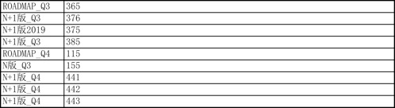 |
| 2018-03-20 14:01:23 | 你 | 你看下 这个N版本和N+1版本和roadmap是啥关系啊 |
| 2018-03-20 14:01:39 | 我 | 没啥关系 |
| 2018-03-20 14:01:49 | 我 | 你就看最后的时间 |
| 2018-03-20 14:02:03 | 我 | 一般说 N+1就是吕迅他们做，N 是咱们做 |
| 2018-03-20 14:02:16 | 我 | 但是不一定，里面有些东西是乱的 |
| 2018-03-20 14:02:27 | 你 | 那roadmap呢 |
| 2018-03-20 14:02:52 | 我 | 就是打算做，只给出时间了，没有具体分支 |
| 2018-03-20 14:03:29 | 你 | N和N+1有版本吗 |
| 2018-03-20 14:04:34 | 我 | 现在 N 和 N+1变成类似分支的情况了，N 就是咱们现在应对现场的所有分支的总称，N+1是吕迅他们做的 PLSQL 等等未来的总和 |
| 2018-03-20 14:05:05 | 我 | 赵总希望 N+1 年底前发生产版本 |
| 2018-03-20 14:05:16 | 你 | n,n+1应该都有roadmap吧 |
| 2018-03-20 14:05:19 | 你 | 好吧 |
| 2018-03-20 14:06:07 | 我 | 对，N 基本上是一季度一版 |
| 2018-03-20 14:06:14 | 我 | 你注意听他们说话 |
| 2018-03-20 14:07:24 | 我 | 他们说的应该就是崔总要的 |
| 2018-03-20 14:07:30 | 你 | 是 |
| 2018-03-20 14:07:46 | 我 | 赵总不会要 PPT，Excel 就够了 |
| 2018-03-20 14:08:08 | 你 | 王总说的 OBg |
| 2018-03-20 14:08:12 | 你 | 的需求 |
| 2018-03-20 14:08:15 | 你 | 是啥意思 |
| 2018-03-20 14:08:22 | 我 | 开放市场 |
| 2018-03-20 14:08:25 | 你 | 是过原来DSD的需求吗 |
| 2018-03-20 14:08:27 | 你 | 我知道 |
| 2018-03-20 14:08:32 | 你 | 不知道他说的是啥 |
| 2018-03-20 14:08:35 | 你 | 过什么 |
| 2018-03-20 14:08:43 | 你 | 张道山那有很多表 |
| 2018-03-20 14:08:55 | 我 | 就是现在 rd 里面所有的需求 |
| 2018-03-20 14:09:03 | 我 | 属于 obg 的 |
| 2018-03-20 14:09:13 | 我 | 可能还有 rd 里面没有提的 |
| 2018-03-20 14:09:41 | 我 | 听意思好像还要细分市场，对应到行业 |
| 2018-03-20 14:09:59 | 你 | 二营是销售信息 |
| 2018-03-20 14:10:16 | 我 | 对，对应到行业就对应到销售了 |
| 2018-03-20 14:24:14 | 你 | 上午我就看到了 |
| 2018-03-20 14:24:31 | 我 | 这太明显了，就是把你排除在外了 |
| 2018-03-20 14:24:36 | 你 | 刘畅把原来我么写的版本信息 本来都是简写的 都补齐了 |
| 2018-03-20 14:25:04 | 我 | 这个老张太坏了 |
| 2018-03-20 14:25:17 | 你 | enen |
| 2018-03-20 14:27:22 | 你 | 你知道刘畅从什么时候开始的吗 |
| 2018-03-20 14:27:35 | 我 | 不知道 |
| 2018-03-20 14:27:38 | 你 | 就是早上我们跟高杰说完版本号要写全开始的 |
| 2018-03-20 14:27:48 | 我 | 嗯嗯 |
| 2018-03-20 14:27:49 | 你 | 张工就布置这个任务了 |
| 2018-03-20 14:27:57 | 我 | 你说的时候老张听见了？ |
| 2018-03-20 14:27:58 | 你 | 我现在大概齐知道张道山啥想法 |
| 2018-03-20 14:28:07 | 你 | 就是跟张工一起说的 |
| 2018-03-20 14:28:12 | 我 | 嗯嗯 |
| 2018-03-20 14:28:21 | 你 | 张工并没有想一直退 推我上去 |
| 2018-03-20 14:28:26 | 你 | 他一直都很小心 |
| 2018-03-20 14:28:39 | 我 | 是 |
| 2018-03-20 14:28:44 | 你 | 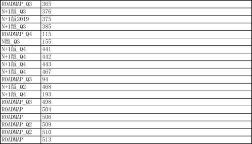 |
| 2018-03-20 14:28:51 | 你 | 你看看这个怎么分类啊 |
| 2018-03-20 14:29:09 | 你 | 是按照Q？还是按照N,N+1，还是roadmap啊 |
| 2018-03-20 14:29:56 | 你 | 按照Q比较好 |
| 2018-03-20 14:30:00 | 我 | 先按照 Q 分，后面加一列，就是对应的版本信息，回来我再给你分 |
| 2018-03-20 14:30:19 | 你 | 啥叫对应的版本信息啊 |
| 2018-03-20 14:30:33 | 我 | 就是这里面写的 N、R |
| 2018-03-20 14:30:37 | 你 | 知道了 |
| 2018-03-20 14:34:16 | 我 | 482 我看你和晓亮商量 delay 了 |
| 2018-03-20 14:34:27 | 我 | 我给你安排到 Q3行不行 |
| 2018-03-20 14:34:50 | 你 | 我准备G8做 |
| 2018-03-20 14:34:52 | 你 | 可以 |
| 2018-03-20 14:35:05 | 我 | 好，那我就先安排进我的计划里面 |
| 2018-03-20 14:35:48 | 你 | 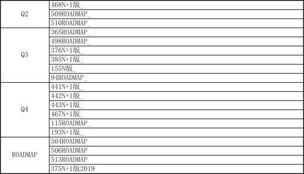 |
| 2018-03-20 14:36:13 | 我 | 嗯嗯，这样就可以了 |
| 2018-03-20 14:36:24 | 你 | 我给你加上项目信息 |
| 2018-03-20 14:36:34 | 你 | 这个是我从rd上扒下来的所有 |
| 2018-03-20 14:36:37 | 我 | 好 |
| 2018-03-20 14:36:40 | 你 | 别的我就不知道了 |
| 2018-03-20 14:36:51 | 我 | 没事 |
| 2018-03-20 14:36:52 | 你 | 你们跟赵总过的Excel 你有吗 |
| 2018-03-20 14:36:57 | 我 | 没有 |
| 2018-03-20 14:37:24 | 我 | 等下周吧，现在老张手里的也不是最新版 |
| 2018-03-20 14:37:43 | 你 | 嗯嗯 |
| 2018-03-20 14:38:07 | 你 | N，N+1其实就是roadmap更细的纬度对不对 |
| 2018-03-20 14:38:16 | 我 | 对 |
| 2018-03-20 14:38:28 | 你 | 其实都是roadmap 但是把谁负责和质量说了一下 |
| 2018-03-20 14:38:40 | 你 | N+1的吕讯负责 且质量要求不高 |
| 2018-03-20 14:38:48 | 你 | 不是生产版 |
| 2018-03-20 14:38:57 | 我 | 是 |
| 2018-03-20 14:39:31 | 你 | 老王 |
| 2018-03-20 14:39:40 | 我 | 嗯？ |
| 2018-03-20 14:39:46 | 你 | 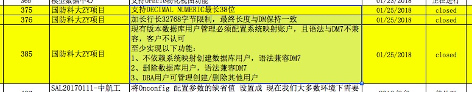 |
| 2018-03-20 14:39:57 | 你 | 要是张道山不瞎整 我的需求列表能记录这些 |
| 2018-03-20 14:40:15 | 你 | 现在他一整的 搞得我有点对应不上了 |
| 2018-03-20 14:40:18 | 你 | 你看这几个任务 |
| 2018-03-20 14:40:21 | 我 | 嗯嗯 |
| 2018-03-20 14:40:26 | 我 | 这就是他要的效果 |
| 2018-03-20 14:40:29 | 你 | 他只把376开了新号 |
| 2018-03-20 14:41:51 | 你 | 你知道这样会有个啥效果吗 |
| 2018-03-20 14:42:27 | 我 | 你所知道的东西要么是过时的，要么是错的 |
| 2018-03-20 14:42:39 | 你 | 不是 |
| 2018-03-20 14:42:46 | 你 | 我给你说下 这个逻辑有点长 |
| 2018-03-20 14:42:51 | 我 | 嗯嗯 |
| 2018-03-20 14:42:59 | 你 | 这几个需求rd上都是closed状态 |
| 2018-03-20 14:43:12 | 你 | 但是实际上根本没在产品中有对应的代码 |
| 2018-03-20 14:43:33 | 你 | 就像你说的 他只把好做的 或想做的 提在了rd上 |
| 2018-03-20 14:43:46 | 你 | 这个只有他自己操作 别人都没法操作 |
| 2018-03-20 14:44:01 | 你 | 提到rd上的就是所谓的将来会规划到产品里的 |
| 2018-03-20 14:44:03 | 你 | 但是。。。 |
| 2018-03-20 14:44:31 | 你 | 他没提的那些 已经都置为closed状态 将来王欣就找不到了 |
| 2018-03-20 14:44:42 | 你 | 王欣只统计非closed的 |
| 2018-03-20 14:44:44 | 我 | 嗯嗯 |
| 2018-03-20 14:45:24 | 你 | 但是基于他的判断 开着的那些 或着关着的那些 并不是来自于一线 |
| 2018-03-20 14:45:40 | 你 | 也就是说 开着的 有可能一线不想要 关了的 有可能一线想要 |
| 2018-03-20 14:46:07 | 你 | 到时候 这些基础信息 就在他的毁在他手里了 |
| 2018-03-20 14:46:52 | 你 | 到时候就成了17年底plsql的状态 |
| 2018-03-20 14:47:10 | 你 | 赵总看到的就是 一线一直嚷嚷8t问题多 但是研发的不知道做啥 |
| 2018-03-20 14:47:23 | 你 | 还得找专门的人 再通过别的途径收集需求 |
| 2018-03-20 14:47:47 | 你 | 我得破他的功 哈哈 |
| 2018-03-20 14:47:50 | 你 | 我太坏了 |
| 2018-03-20 14:47:53 | 我 | 嗯嗯 |
| 2018-03-20 14:47:59 | 你 | 而且我会把这个事找机会跟王欣说 |
| 2018-03-20 14:48:01 | 我 | 这么做才对呀 |
| 2018-03-20 14:48:11 | 你 | 怎么做才对 |
| 2018-03-20 14:48:16 | 你 | 你说他做的对吗？ |
| 2018-03-20 14:48:19 | 我 | 破他呀 |
| 2018-03-20 14:48:23 | 你 | 哈哈 |
| 2018-03-20 14:48:24 | 你 | 必须的 |
| 2018-03-20 14:48:27 | 我 | 当然是你做得对啦 |
| 2018-03-20 15:09:34 | 你 | 我真是太聪明啦 哈哈 |
| 2018-03-20 15:09:55 | 我 | [动画表情] |
| 2018-03-20 15:10:11 | 你 | 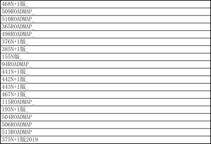 |
| 2018-03-20 15:10:27 | 你 | 我把这个的项目信息补上 就知道到Q4要规划几个版本了 |
| 2018-03-20 15:10:41 | 我 | 嗯嗯 |
| 2018-03-20 15:10:53 | 你 | 项目信息补上以后 就知道发哪个分支的 |
| 2018-03-20 15:11:02 | 你 | 版本不就出来了吗 |
| 2018-03-20 15:11:09 | 我 | 对 |
| 2018-03-20 15:28:14 | 我 | 还有一件事我想问你，就是98 Union 类型自动转换的事情，是不是 Oracle 也不支持？ |
| 2018-03-20 15:28:22 | 你 | 是 |
| 2018-03-20 15:28:26 | 你 | 只有DM支持 |
| 2018-03-20 16:01:09 | 你 | 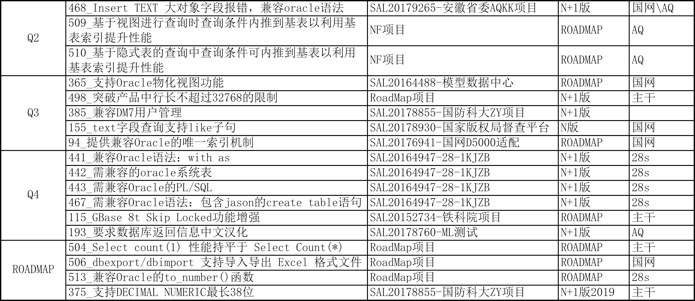 |
| 2018-03-20 16:01:28 | 你 | 你看看 |
| 2018-03-20 16:01:41 | 我 | 嗯嗯 |
| 2018-03-20 16:01:54 | 你 | 现在有个问题 AQKK的版最后会自己成一版还是合并到咱们的分支上来 |
| 2018-03-20 16:02:05 | 我 | 自己 |
| 2018-03-20 16:02:22 | 我 | 应该是去informix版 |
| 2018-03-20 16:02:31 | 你 | dbt版是吧 |
| 2018-03-20 16:02:44 | 我 | 恩 |
| 2018-03-20 16:31:14 | 你 | 你在哪呢？ |
| 2018-03-20 16:31:18 | 你 | 有个问题跟你说 |
| 2018-03-20 16:31:37 | 我 | 处理ddl的事情 |
| 2018-03-20 16:31:48 | 我 | 老田发邮件找事 |
| 2018-03-20 16:31:53 | 你 | 这个不是做完了吗 |
| 2018-03-20 17:15:06 | 我 | 你一碰上王胜利，大象就失控。 |
| 2018-03-20 17:16:30 | 你 | 好的，那在用需中补充over子句的定义，并注明本次不需支持，软需中也不体现。将带over子句的FIRSTLAST函数纳入RoadMap。 |
| 2018-03-20 17:16:42 | 你 | 这么回行吗 |
| 2018-03-20 17:16:47 | 你 | 我懒得搭理他 |
| 2018-03-20 17:16:51 | 我 | 可以，非常好 |
| 2018-03-20 17:17:26 | 我 | 这样从邮件上就避免了王胜利那个问题了 |
| 2018-03-20 17:17:31 | 你 | 嗯嗯 |
| 2018-03-20 17:17:33 | 你 | 唉 |
| 2018-03-20 17:21:25 | 你 | 你怎么走了 |
| 2018-03-20 17:25:02 | 你 | 你怎么回来了 |
| 2018-03-20 17:25:03 | 你 | 哈哈 |
| 2018-03-20 17:25:07 | 你 | 我一会打球去了 |
| 2018-03-20 17:25:14 | 我 | 你喊我当然回来啦 |
| 2018-03-20 17:25:45 | 你 | 版本的那个先这样行吗 |
| 2018-03-20 17:25:50 | 我 | 可以 |
| 2018-03-20 17:25:54 | 我 | 你回来发给我 |
| 2018-03-20 17:25:59 | 你 | 好的 |
| 2018-03-20 17:26:06 | 你 | 对了 国网还有点信息 |
| 2018-03-20 17:26:40 | 你 | 国网的省调早已经结束 里边只有达梦和金仓 |
| 2018-03-20 17:26:49 | 你 | 我们签约的都是低调 |
| 2018-03-20 17:26:53 | 你 | 地调 |
| 2018-03-20 17:26:54 | 我 | 哦 |
| 2018-03-20 17:26:59 | 你 | 国调是调控云 |
| 2018-03-20 17:27:08 | 我 | 一共有多少个地调 |
| 2018-03-20 17:27:14 | 你 | 这个不知道 |
| 2018-03-20 17:27:20 | 你 | 今年上半年只有2个 |
| 2018-03-20 17:27:26 | 你 | 铜川和西安 |
| 2018-03-20 17:27:34 | 你 | 咸阳是D5000的第一个 |
| 2018-03-20 17:27:50 | 你 | 地调D5000的第一个 |
| 2018-03-20 17:27:59 | 我 | 嗯嗯 |
| 2018-03-20 17:28:43 | 你 | 发给你了 第二个sheet页 |
| 2018-03-20 17:28:57 | 我 | 嗯嗯 |
| 2018-03-20 17:31:32 | 我 | 你几点去打球 |
| 2018-03-20 17:31:40 | 你 | 6点半吧 |
| 2018-03-20 17:31:51 | 我 | 嗯嗯，我去给他们开会 |
| 2018-03-20 17:31:58 | 你 | 去吧 |
| 2018-03-20 18:06:13 | 我 | 亲，你去哪了 |
| 2018-03-20 18:07:31 | 你 | 刘志增叫我 |
| 2018-03-20 18:07:47 | 我 | 恩 |
| 2018-03-20 18:22:03 | 我 | 我等你走了我再去干活 |
| 2018-03-20 18:22:11 | 你 | 你去干吧 |
| 2018-03-20 18:22:29 | 我 | 不去，舍不得 |
{kind=link}
{kind=link}
{kind=link}
{kind=link}
{kind=link}
{kind=link}
2018-03-21¶
| 2018-03-21 08:46:33 | 你 | 你看看这个邮件 |
| 2018-03-21 08:48:26 | 我 | 看完了 |
| 2018-03-21 08:48:37 | 你 | 这个要汇报吗 |
| 2018-03-21 08:48:40 | 你 | 在晨会上 |
| 2018-03-21 08:48:56 | 我 | 汇报，今天晨会会非常精彩 |
| 2018-03-21 08:49:04 | 你 | 怎么了 |
| 2018-03-21 08:49:08 | 你 | 那我就说说 |
| 2018-03-21 08:49:13 | 你 | 这个邮件没有张道山 |
| 2018-03-21 08:51:52 | 我 | 昨天王总说要让王旭去支持 PICC，那么现在28s 的就没人做了，我要建议停止 S3的研发 |
| 2018-03-21 08:57:28 | 你 | 只有王旭抽调了是吗 |
| 2018-03-21 08:58:04 | 我 | 现在是，看王总怎么提吧 |
| 2018-03-21 09:05:47 | 我 | 你看老张就是想躲 |
| 2018-03-21 09:12:02 | 你 | 老杨对这个问题特别生气 |
| 2018-03-21 09:12:13 | 你 | 昨天一直说 |
| 2018-03-21 09:12:30 | 你 | 说开会的时候都甩脸子了 |
| 2018-03-21 09:12:49 | 我 | 没事，让王总顶锅吧 |
| 2018-03-21 09:20:03 | 我 | 问你个事 |
| 2018-03-21 09:20:29 | 我 | 昨天我握你手，你啥感觉 |
| 2018-03-21 09:21:25 | 你 | 当时怕被别人看到， |
| 2018-03-21 09:21:46 | 我 | 被吓到了吗 |
| 2018-03-21 09:21:47 | 你 | 别的就是你的小手太软了 |
| 2018-03-21 09:22:01 | 你 | 嗯 |
| 2018-03-21 09:22:06 | 你 | 挺吓人的 |
| 2018-03-21 09:22:20 | 我 | 嗯嗯 |
| 2018-03-21 09:23:04 | 你 | 一会我也参加赵总那个obg需求的会，嘻嘻 |
| 2018-03-21 09:23:16 | 你 | 估计是王总叫的我 |
| 2018-03-21 09:23:19 | 我 | 嗯嗯 |
| 2018-03-21 09:23:50 | 我 | [链接] 群聊的聊天记录 |
| 2018-03-21 09:24:06 | 我 | 这是昨天王欣发的 |
| 2018-03-21 09:24:32 | 我 | 我看了一下，有些东西不对，回来和你细说 |
| 2018-03-21 09:37:03 | 我 | keep新写的用需好像没有讲over的行为，只是加了一句不需支持，这样不太好吧 |
| 2018-03-21 09:37:25 | 你 | 我看看 |
| 2018-03-21 09:37:30 | 你 | 没写吗 |
| 2018-03-21 09:37:43 | 我 | 我没找到 |
| 2018-03-21 09:37:48 | 我 | 你看看吧 |
| 2018-03-21 09:37:57 | 你 | 4) OVER子句：可省略，与现有分析函数中OVER子句保持一致。 本次需求仅需实现以上描述的1)、2)、3)部分功能。关于OVER子句部分本次不需支持，软需中也不体现。将带OVER子句的FIRST|LAST函数纳入RoadMap。 |
| 2018-03-21 09:38:11 | 你 | 用户需求最后边有 |
| 2018-03-21 09:38:41 | 我 | partition的行为不需要说吗？ |
| 2018-03-21 09:38:49 | 你 | OVER子句：可省略，与现有分析函数中OVER子句保持一致。 这句话写的稍微有点不准确 |
| 2018-03-21 09:38:50 | 你 | 是 |
| 2018-03-21 09:39:03 | 你 | 这个我让他改一版本吧 |
| 2018-03-21 09:39:08 | 我 | 另外结果集也不一样吧 |
| 2018-03-21 09:39:52 | 你 | 你是说把功能那部分 把over子句加上的结果集也描述一下是吧 |
| 2018-03-21 09:39:55 | 你 | 行 |
| 2018-03-21 09:40:08 | 你 | 你要不回邮件说？ |
| 2018-03-21 09:40:29 | 我 | 不用了，你和刘利说一下吧 |
| 2018-03-21 09:40:43 | 我 | 我说性质就不一样了 |
| 2018-03-21 09:41:31 | 你 | 好 |
| 2018-03-21 09:45:08 | 你 | 刘利最后这句话就抄的我邮件的 真晕 |
| 2018-03-21 09:45:37 | 我 | 是 |
| 2018-03-21 09:45:50 | 你 | 连改都不改 |
| 2018-03-21 09:46:24 | 我 | 他够聪明，但是就是不干活 |
| 2018-03-21 09:47:04 | 我 | 你需要搞清楚他是本身懒还是因为不服你 |
| 2018-03-21 09:47:13 | 你 | 恩 知道了 |
| 2018-03-21 10:03:33 | 我 | 你去赵总那开会了吗 |
| 2018-03-21 10:03:51 | 你 | 现在开l2的会呢 |
| 2018-03-21 10:04:27 | 我 | 去开赵总的会 |
| 2018-03-21 10:05:51 | 你 | 现在开赵总的会了 |
| 2018-03-21 10:05:59 | 你 | 耿燕跟张工吵起来了 |
| 2018-03-21 10:06:09 | 你 | 我说清大科越的赶紧提单子 |
| 2018-03-21 10:06:26 | 我 | 嗯嗯 |
| 2018-03-21 10:06:27 | 你 | 张工一直强调 没收到消息 只有王总的一个截图 |
| 2018-03-21 10:06:36 | 你 | 我没跟他说日报抄送我的事 |
| 2018-03-21 10:06:49 | 我 | 恩 |
| 2018-03-21 10:06:53 | 你 | 我昨天还回复了 应该抄送张工的 |
| 2018-03-21 10:06:59 | 我 | 让他们吵吧 |
| 2018-03-21 10:07:11 | 我 | 老张就是往后躲 |
| 2018-03-21 10:07:12 | 你 | 我现在纠结要不要把邮件转给张工 |
| 2018-03-21 10:07:14 | 你 | 纠结 |
| 2018-03-21 10:07:23 | 我 | 不转 |
| 2018-03-21 10:07:36 | 我 | 反正已经这样了 |
| 2018-03-21 10:07:41 | 你 | 不转 到时候别人转的话 会发现有我 |
| 2018-03-21 10:07:48 | 你 | 而且我还说话了 |
| 2018-03-21 10:08:03 | 你 | 别人不会给张工转 但是我担心王总会转 |
| 2018-03-21 10:08:11 | 我 | 给张工发邮件是他们的事情，不是你的事情 |
| 2018-03-21 10:08:22 | 你 | 也是哈 |
| 2018-03-21 10:08:23 | 我 | 再说了，现在老张这么忌惮你 |
| 2018-03-21 10:08:34 | 我 | 就像当初王总老是防着我一样 |
| 2018-03-21 10:08:46 | 我 | 你转不转结果都一样 |
| 2018-03-21 10:09:07 | 我 | 你先开会吧 |
| 2018-03-21 10:09:23 | 你 | 好的 |
| 2018-03-21 10:29:43 | 你 | 先做OBG，做完出模式以后再完成ZBG的，从而得出8t资源投入方向。 |
| 2018-03-21 10:30:03 | 你 | 得出8t研发资源投入方向 |
| 2018-03-21 10:30:07 | 我 | 嗯嗯 |
| 2018-03-21 10:30:12 | 你 | 这个是赵总开这个会的目的 |
| 2018-03-21 10:30:22 | 你 | 王总现在跟赵总一直在说454那个问题 |
| 2018-03-21 10:30:29 | 我 | [动画表情] |
| 2018-03-21 10:30:41 | 你 | 赵总已经表现出不想听了 |
| 2018-03-21 10:35:24 | 你 | 王总一直说细节 |
| 2018-03-21 10:35:31 | 你 | 赵总一直拉回她来 |
| 2018-03-21 10:35:49 | 我 | 恩 |
| 2018-03-21 10:35:50 | 你 | 张道山也是 |
| 2018-03-21 10:37:22 | 我 | 你趁机插几次话，赵总就会对你感兴趣了 |
| 2018-03-21 10:38:49 | 你 | 这个事他们做的根本不是赵总想要的 |
| 2018-03-21 10:39:07 | 你 | 但是后续张道山让不让我插手 还是个事呢 |
| 2018-03-21 10:39:11 | 我 | 嗯嗯 |
| 2018-03-21 10:39:30 | 我 | 先别管让不让你插手 |
| 2018-03-21 10:39:47 | 我 | 你先搞清楚赵总的需求 |
| 2018-03-21 10:42:47 | 你 | 我搞清楚了 今天这会是赵总让我参加的 |
| 2018-03-21 10:42:54 | 你 | 我跟高杰问的 |
| 2018-03-21 10:43:02 | 你 | 现在这个事 张道山根本不让我插手 |
| 2018-03-21 10:43:19 | 你 | 本来是上周五 赵总就要 结果到现在都没做出来他想要的东西 |
| 2018-03-21 10:43:27 | 我 | 嗯嗯，这样你可以直接找王欣了 |
| 2018-03-21 10:43:29 | 你 | 赵总今天一直对着我说话 |
| 2018-03-21 10:43:45 | 你 | 说让需求组做这个事 |
| 2018-03-21 10:43:51 | 我 | 哈哈，太好啦 |
| 2018-03-21 10:43:58 | 我 | 正是我希望的 |
| 2018-03-21 10:44:02 | 你 | 但是张道山一直没让我管 |
| 2018-03-21 10:44:07 | 你 | 表格都没告诉我 |
| 2018-03-21 10:44:19 | 你 | 我开完会就出来了 给张道山脸色看 |
| 2018-03-21 10:45:58 | 你 | 我什么时候找下王欣 |
| 2018-03-21 10:46:48 | 我 | 你先理清楚 |
| 2018-03-21 10:47:55 | 你 | 张道山明确表示不让我做，你先别回我微信，他在我旁边呢 |
| 2018-03-21 10:51:06 | 你 | 太可笑了 |
| 2018-03-21 10:51:25 | 我 | 先别着急，我想想 |
| 2018-03-21 10:51:34 | 你 | 我不着急 |
| 2018-03-21 10:51:37 | 你 | 我也不打算做了 |
| 2018-03-21 10:52:44 | 你 | 我现在急需你的帮助 |
| 2018-03-21 10:53:13 | 我 | 嗯嗯 |
| 2018-03-21 10:53:26 | 你 | 刚才王总来了 说让我参与进来 |
| 2018-03-21 10:53:31 | 你 | 张道山说不需要 |
| 2018-03-21 10:53:45 | 你 | 说打杂的事 祸害他就行 需要我做需求 |
| 2018-03-21 10:53:52 | 你 | 然后王总说这可不是打杂的事 |
| 2018-03-21 10:53:58 | 你 | 然后就嘻嘻哈哈 |
| 2018-03-21 10:54:07 | 我 | 让王总先对付他 |
| 2018-03-21 10:54:25 | 你 | 我说我做了纪要 回头发给高杰 黄鑫 |
| 2018-03-21 10:54:34 | 你 | 张道山说让他俩帮着他做 |
| 2018-03-21 10:55:00 | 你 | 王总没说啥 就说这事张道山进度慢了 本来上周五就该出来的 |
| 2018-03-21 10:55:09 | 你 | 我说我干啥都行 你们定吧 |
| 2018-03-21 10:55:32 | 你 | 你说我是参与还是不参与 |
| 2018-03-21 10:56:29 | 我 | 现在看老张就是明着要压你 |
| 2018-03-21 10:56:38 | 我 | 我觉得你可以先做着 |
| 2018-03-21 10:56:41 | 你 | 是 |
| 2018-03-21 10:56:44 | 我 | 别让老张知道 |
| 2018-03-21 10:56:46 | 你 | 我没有数据 做不了 |
| 2018-03-21 10:56:54 | 你 | 不行我就直接找王总 |
| 2018-03-21 10:56:59 | 你 | 或者就不参与 |
| 2018-03-21 10:57:03 | 你 | 先想想 |
| 2018-03-21 10:57:10 | 你 | 关键 赵总以为是我做的 |
| 2018-03-21 10:57:18 | 我 | 咱们先说战略 |
| 2018-03-21 10:57:25 | 我 | 这事你应该做 |
| 2018-03-21 10:57:26 | 你 | 其实赵总的要求特别简单 我肯定能做 |
| 2018-03-21 10:57:43 | 你 | 我先把纪要发给你 |
| 2018-03-21 10:57:45 | 你 | 你看下 |
| 2018-03-21 10:57:48 | 我 | 嗯嗯 |
| 2018-03-21 10:57:56 | 你 | 然后你判断下我能不能做 我觉得我没问题 |
| 2018-03-21 10:58:19 | 你 | 会议纪要_20180321.docx |
| 2018-03-21 11:06:36 | 我 | 这里面怎么还有武总的事情 |
| 2018-03-21 11:06:53 | 你 | 就是定8t研发自研投入方向 |
| 2018-03-21 11:07:08 | 你 | 武总说informix值钱的是高可用 |
| 2018-03-21 11:07:15 | 我 | 武总的意见是谁转述的 |
| 2018-03-21 11:07:19 | 你 | 赵总 |
| 2018-03-21 11:07:48 | 你 | 然后大崔 赵总这边对8t研发资源投入都很糊涂 所以想让需求组做个报表 |
| 2018-03-21 11:07:54 | 你 | 基于现有需求做分析 |
| 2018-03-21 11:08:03 | 你 | 他们现在分析的纬度都不是赵总想要的 |
| 2018-03-21 11:08:10 | 我 | 是已经投入的，还是未来要投入的 |
| 2018-03-21 11:08:41 | 你 | 投入产出比这块 王欣负责提供基础数据 |
| 2018-03-21 11:08:48 | 你 | 对了 这个会王欣没参与 |
| 2018-03-21 11:09:02 | 你 | 比如国网项目 CRM里有签约金额 |
| 2018-03-21 11:09:17 | 你 | 研发负责统计投入 |
| 2018-03-21 11:09:22 | 你 | 比如工时什么的 |
| 2018-03-21 11:09:23 | 我 | 那就是基于项目 Top10进行分析啦？ |
| 2018-03-21 11:09:34 | 你 | 没有 所有项目都要分析 |
| 2018-03-21 11:09:39 | 你 | 没提top10的事 |
| 2018-03-21 11:09:42 | 你 | 这次没提 |
| 2018-03-21 11:09:46 | 你 | 可能以前提了 |
| 2018-03-21 11:09:49 | 我 | 时间界限呢 |
| 2018-03-21 11:09:55 | 你 | 越快越好 |
| 2018-03-21 11:09:59 | 你 | 出来就发给赵总 |
| 2018-03-21 11:10:16 | 你 | 基础数据都是基于rd的 |
| 2018-03-21 11:10:26 | 我 | 不是，我是说分析项目的时间界限，是从去年开始计算吗 |
| 2018-03-21 11:10:32 | 你 | 对 |
| 2018-03-21 11:10:37 | 你 | 去年的 |
| 2018-03-21 11:10:47 | 你 | 就是rd有了以后 再案的 |
| 2018-03-21 11:10:57 | 我 | close 的算不算 |
| 2018-03-21 11:11:06 | 你 | 算 |
| 2018-03-21 11:11:14 | 你 | 已完成的 未完成的 |
| 2018-03-21 11:11:26 | 你 | 已完成的算投入产出比 |
| 2018-03-21 11:11:38 | 我 | 咱们先说项目 |
| 2018-03-21 11:11:39 | 你 | 基于所有的算8t的主要需求在哪 |
| 2018-03-21 11:11:44 | 你 | 好 |
| 2018-03-21 11:11:56 | 我 | 你手里应该没有 DSD 的项目 |
| 2018-03-21 11:12:06 | 你 | rd上的能拿出来 |
| 2018-03-21 11:12:12 | 你 | 基本没有DSD的 |
| 2018-03-21 11:12:36 | 我 | 所以先按照项目这个维度，整理 rd，看看有多少需求 |
| 2018-03-21 11:12:57 | 你 | 他们现在手里那个表 已完成的72个 未完成的56个 |
| 2018-03-21 11:13:06 | 你 | 我现在需求库里需求154个已经 |
| 2018-03-21 11:13:08 | 你 | 比他们的还多 |
| 2018-03-21 11:13:20 | 你 | 这个是大数据分析 丢一个两个的 不算啥 |
| 2018-03-21 11:13:33 | 你 | 我不知道他们那些数据是从哪来的 |
| 2018-03-21 11:13:50 | 我 | 那么下一步是不是就是分析项目属于OBG 还是 ZBG |
| 2018-03-21 11:14:19 | 你 | 福建高清是ZBG的 他们按照OBG统计的 |
| 2018-03-21 11:14:25 | 你 | 赵总一眼就看出来了 |
| 2018-03-21 11:14:32 | 我 | 在下一步就是分析项目属于哪个行业？ |
| 2018-03-21 11:14:38 | 你 | 是 |
| 2018-03-21 11:15:11 | 我 | 你先整理出你的项目列表来，然后问问王欣，看看他能不能帮你区分是开放还是封闭 |
| 2018-03-21 11:17:40 | 你 | 王欣必然是知道的 |
| 2018-03-21 11:17:45 | 你 | 其实我都知道个大概 |
| 2018-03-21 11:17:58 | 我 | 那就好，你先做 |
| 2018-03-21 11:18:05 | 我 | 就是我说的两步 |
| 2018-03-21 11:18:24 | 我 | 有了这个，后面是统计金额还是投入就好办了 |
| 2018-03-21 11:20:36 | 你 | 是 |
| 2018-03-21 11:20:38 | 你 | 好 |
| 2018-03-21 11:21:08 | 我 | 剩下的事情我再想想，主要就是你和老张之间的关系 |
| 2018-03-21 11:21:15 | 你 | 嗯嗯 |
| 2018-03-21 11:21:23 | 你 | 这个活 我先自己干着 |
| 2018-03-21 11:21:31 | 你 | 你帮我想想政治关系 |
| 2018-03-21 11:21:37 | 我 | 嗯嗯 |
| 2018-03-21 11:28:13 | 我 | 首先有个大原则，就是你现在做事要尽量瞒着老张 |
| 2018-03-21 11:28:24 | 你 | 恩 知道了 |
| 2018-03-21 11:30:11 | 我 | 第二个是表面上要看起来是王总等人安排的，不是你自己要来的 |
| 2018-03-21 11:30:26 | 你 | 我知道 |
| 2018-03-21 11:32:05 | 你 | 王总把日报转给我和张道山了 |
| 2018-03-21 11:32:10 | 你 | 你看 我就说这个烂人 |
| 2018-03-21 11:32:22 | 你 | 随便吧 张道山这么明目张胆的压着我 |
| 2018-03-21 11:32:33 | 你 | 呵呵 |
| 2018-03-21 11:34:56 | 我 | 第三 需求文档这部分你不能放松，以免给老张口实 |
| 2018-03-21 11:35:05 | 你 | 知道了 |
| 2018-03-21 11:35:12 | 你 | 你说的对 |
| 2018-03-21 11:35:33 | 你 | 其实这件事 做与不做 我都知道张道山是什么人了 |
| 2018-03-21 11:35:38 | 你 | 是吧 |
| 2018-03-21 11:35:46 | 我 | 你把日报给我 |
| 2018-03-21 11:35:49 | 我 | 是 |
| 2018-03-21 11:35:55 | 你 | 我转给你了 |
| 2018-03-21 11:35:58 | 你 | 早上 |
| 2018-03-21 11:36:05 | 我 | 嗯嗯 |
| 2018-03-21 11:36:19 | 你 | 在转一份 |
| 2018-03-21 11:36:23 | 你 | 杨总说话了 |
| 2018-03-21 11:36:33 | 我 | 看见了 |
| 2018-03-21 14:16:41 | 我 | 王欣应该是同一件事情呀 |
| 2018-03-21 14:16:51 | 你 | 就是这事 |
| 2018-03-21 14:16:52 | 我 | 这样对你是利好呀 |
| 2018-03-21 14:16:55 | 你 | 咱们中午说的 |
| 2018-03-21 14:16:57 | 我 | 赶紧做 |
| 2018-03-21 14:17:01 | 你 | 啊 |
| 2018-03-21 14:17:21 | 我 | 不管老张 |
| 2018-03-21 14:17:25 | 你 | 嗯嗯 |
| 2018-03-21 14:17:26 | 你 | 知道了 |
| 2018-03-21 14:35:02 | 你 | 老王 我不想做了 |
| 2018-03-21 14:35:06 | 你 | 你的意见呢 |
| 2018-03-21 14:35:09 | 你 | 懒得做 |
| 2018-03-21 14:35:15 | 我 | 不做就不做 |
| 2018-03-21 14:35:18 | 我 | 无所谓 |
| 2018-03-21 14:35:23 | 你 | 你会不会觉得我懒 a |
| 2018-03-21 14:35:28 | 你 | 我懒得做了 |
| 2018-03-21 14:35:37 | 我 | 反正机会有的是 |
| 2018-03-21 14:35:39 | 你 | 等下一个机会吧 |
| 2018-03-21 14:35:41 | 你 | 嗯嗯 |
| 2018-03-21 14:35:42 | 我 | 嗯嗯 |
| 2018-03-21 14:35:48 | 你 | 哈哈 |
| 2018-03-21 14:35:50 | 你 | 好轻松 |
| 2018-03-21 14:35:52 | 你 | 哈哈 |
| 2018-03-21 14:35:59 | 我 | 嗯嗯 |
| 2018-03-21 14:36:02 | 我 | 聊天吧 |
| 2018-03-21 14:36:08 | 你 | 我不忙了 咱们还能聊聊风花雪月 |
| 2018-03-21 14:36:14 | 你 | 跟我想的一样 |
| 2018-03-21 14:36:17 | 我 | 对呀对呀 |
| 2018-03-21 14:36:40 | 你 | 我想问问王欣 让把项目日报抄送给研发 |
| 2018-03-21 14:36:47 | 你 | 你觉得呢 |
| 2018-03-21 14:36:50 | 你 | 我就问一句 |
| 2018-03-21 14:36:55 | 你 | 看能不能行 |
| 2018-03-21 14:37:15 | 你 | 或者问问老杨 |
| 2018-03-21 14:37:33 | 我 | 先问王欣吧 |
| 2018-03-21 14:37:38 | 你 | 好 |
| 2018-03-21 14:37:45 | 你 | 一会发微信问问她 |
| 2018-03-21 14:37:49 | 我 | 嗯嗯 |
| 2018-03-21 14:37:56 | 你 | 我现在没啥事了 |
| 2018-03-21 14:38:43 | 我 | 聊天吧 |
| 2018-03-21 14:39:20 | 你 | 好 |
| 2018-03-21 14:39:23 | 你 | 聊天吧 |
| 2018-03-21 14:39:24 | 我 | 我刚才还在想，等你不忙了，咱俩好好聊聊你最近的突破 |
| 2018-03-21 14:39:30 | 你 | 嗯嗯 |
| 2018-03-21 14:39:33 | 你 | 聊天吧 |
| 2018-03-21 14:39:46 | 你 | 我现在也觉得工作不如跟你聊天好玩 |
| 2018-03-21 14:39:57 | 我 | 哈哈 |
| 2018-03-21 14:40:07 | 你 | 我前天生你气了 |
| 2018-03-21 14:40:13 | 我 | 啊 |
| 2018-03-21 14:40:17 | 我 | 为啥生气呀 |
| 2018-03-21 14:40:21 | 你 | 不过我想让你帮我分析分析 我为什么生气 |
| 2018-03-21 14:40:30 | 我 | 嗯嗯 |
| 2018-03-21 14:40:47 | 你 | 生你和杨丽莹的气 |
| 2018-03-21 14:40:53 | 我 | 说说场景 |
| 2018-03-21 14:41:14 | 你 | 就是我去开会 回来的时候 正好去找杨丽莹要DCC的文档 |
| 2018-03-21 14:41:25 | 你 | 看到你在她旁边坐着 |
| 2018-03-21 14:41:28 | 你 | 我就生气了 |
| 2018-03-21 14:41:47 | 我 | 只是因为看见我坐她旁边？ |
| 2018-03-21 14:42:04 | 你 | 嗯嗯 看见你坐在他旁边 没说话 |
| 2018-03-21 14:42:10 | 你 | 就是旭明那个位置 |
| 2018-03-21 14:42:23 | 我 | 嗯嗯，我知道了 |
| 2018-03-21 14:42:35 | 你 | 我心里想的是 你没事就非得挨着她座吗 |
| 2018-03-21 14:43:37 | 我 | 嗯嗯 |
| 2018-03-21 14:43:48 | 我 | 这个我也有想过 |
| 2018-03-21 14:43:53 | 我 | 咱俩一起来分析吧 |
| 2018-03-21 14:44:27 | 我 | 不过需要有一个前提，就是分析过程中，咱俩需要抽出来，作为独立的第三方来分析这件事情 |
| 2018-03-21 14:44:44 | 我 | 不然让自己的情绪介入，可能结果就不一定对了 |
| 2018-03-21 14:44:56 | 你 | 我知道 |
| 2018-03-21 14:45:12 | 你 | 我现在已经抽出来了 前天你给我分析 我是不会说的 |
| 2018-03-21 14:45:28 | 我 | 嗯嗯 |
| 2018-03-21 14:45:41 | 我 | 我试图给这件事情建立模型 |
| 2018-03-21 14:45:50 | 我 | 现在看有一个模型比较符合 |
| 2018-03-21 14:46:35 | 你 | OK |
| 2018-03-21 14:46:38 | 我 | 简单说就是你心底里喜欢我。或者说你潜意识里面喜欢我。 |
| 2018-03-21 14:47:09 | 我 | 这种喜欢是在比较深的潜意识里面 |
| 2018-03-21 14:47:48 | 我 | 平时是表现不出来的，甚至你自己都意识不到 |
| 2018-03-21 14:48:12 | 我 | 但是一旦有适合的条件，就会激活相关的情绪 |
| 2018-03-21 14:48:30 | 我 | 和杨丽莹是一种情绪，抱我是另一种情绪 |
| 2018-03-21 14:49:10 | 你 | 是 |
| 2018-03-21 14:49:25 | 你 | 你是说我喜欢你 |
| 2018-03-21 14:49:32 | 你 | 可是『喜欢』是个什么概念 |
| 2018-03-21 14:49:41 | 我 | 对，你问到点上了 |
| 2018-03-21 14:50:07 | 我 | 有三种可能性，正好咱们今天分析一下，我也没有想清楚 |
| 2018-03-21 14:50:34 | 我 | 1、爱情；2、友情、3、亲情 |
| 2018-03-21 14:50:41 | 我 | 第一种可能性不大 |
| 2018-03-21 14:51:14 | 我 | 第二种有些行为不一定符合，比如杨丽莹这事就不太符合 |
| 2018-03-21 14:52:05 | 我 | 第三种是一种类似家庭的关系，就是我能给你提供安全感，使你对我有一种心理上的依赖 |
| 2018-03-21 14:52:13 | 我 | 我觉得这种可能性最大 |
| 2018-03-21 14:52:41 | 你 | 我跟王欣聊天呢 |
| 2018-03-21 14:52:44 | 你 | 一会发给你 |
| 2018-03-21 14:52:50 | 我 | 嗯嗯，你们聊 |
| 2018-03-21 14:52:52 | 你 | 你先跟我说说 爱情是什么感觉 |
| 2018-03-21 14:53:31 | 我 | 爱情简单一点说就是你和东东这种，或者说是你和东东以前 |
| 2018-03-21 14:53:52 | 我 | 基本上是本能驱动，没有什么道理，就是看着顺眼 |
| 2018-03-21 14:54:20 | 我 | 咱俩之间的关系应该还不是这种 |
| 2018-03-21 14:54:48 | 我 | 虽然有时候我自己会有这种冲动，就是看着你怎么看都觉得好，就是训人都觉得你漂亮极了 |
| 2018-03-21 14:55:11 | 你 | [链接] 李辉和产品行销 王欣的聊天记录 |
| 2018-03-21 14:55:17 | 我 | 不过这毕竟只是少数情况 |
| 2018-03-21 14:56:32 | 我 | 嗯嗯，你和王欣的沟通非常好 |
| 2018-03-21 14:56:45 | 你 | 恩 我觉得王欣对我还不错 |
| 2018-03-21 14:56:50 | 你 | 一直都不错 |
| 2018-03-21 14:56:54 | 我 | 是的 |
| 2018-03-21 14:56:56 | 你 | 不说他了 |
| 2018-03-21 14:57:00 | 你 | 这事就算解决了 |
| 2018-03-21 14:57:04 | 我 | 嗯嗯 |
| 2018-03-21 14:57:13 | 你 | 咱们接着说 |
| 2018-03-21 14:57:16 | 我 | 好 |
| 2018-03-21 14:57:23 | 你 | 那应该不是爱情 |
| 2018-03-21 14:57:49 | 你 | 其实我也经常会想你 但是不是爱情的那种 偶尔也会有 就像你说的 |
| 2018-03-21 14:57:59 | 你 | 比如你给大伙培训的时候 我觉得你好帅啊 |
| 2018-03-21 14:58:23 | 你 | 但大部分时间不是 |
| 2018-03-21 14:58:24 | 我 | 嗯嗯 |
| 2018-03-21 14:58:28 | 你 | 那说友情吧 |
| 2018-03-21 14:58:36 | 你 | 友情肯定不是 |
| 2018-03-21 14:58:42 | 你 | 我昨天也想这个来着 |
| 2018-03-21 14:58:48 | 我 | 你说说 |
| 2018-03-21 14:58:58 | 你 | 我也自己尝试分析了下 |
| 2018-03-21 14:59:07 | 你 | 从我前天生气 我就自己分析 |
| 2018-03-21 14:59:17 | 你 | 你记得你那天问我怎么了 |
| 2018-03-21 14:59:21 | 你 | 我说没事 |
| 2018-03-21 14:59:24 | 你 | 其实生你气呢 |
| 2018-03-21 14:59:41 | 我 | 嗯 |
| 2018-03-21 15:00:23 | 你 | 等我昨天不太生气 我就开始自己分析 |
| 2018-03-21 15:00:42 | 你 | 一说友情 我就想到了我和小宁 或者晓亮 |
| 2018-03-21 15:00:54 | 你 | 再一对比 很明显和你不是 |
| 2018-03-21 15:01:50 | 我 | 继续说 |
| 2018-03-21 15:02:19 | 你 | 后来我的分析主要是对我自己的 |
| 2018-03-21 15:02:29 | 你 | 我想着 我没想太多 我和你的关系 |
| 2018-03-21 15:03:22 | 你 | 我觉得我是不是太霸道了 |
| 2018-03-21 15:03:26 | 你 | 喜欢专宠 |
| 2018-03-21 15:03:36 | 我 | 这个只是表象，不是本质 |
| 2018-03-21 15:03:44 | 你 | 还有就是 我是不是不够自信 |
| 2018-03-21 15:03:58 | 我 | 同样这不是本质 |
| 2018-03-21 15:04:02 | 我 | 你继续说 |
| 2018-03-21 15:04:07 | 我 | 别让我打断了 |
| 2018-03-21 15:04:09 | 你 | 其实我心里觉得杨丽莹比我优秀 |
| 2018-03-21 15:04:25 | 你 | 或者我没她好 |
| 2018-03-21 15:04:33 | 你 | 比如 性格没她好 |
| 2018-03-21 15:04:39 | 你 | 没她漂亮 |
| 2018-03-21 15:04:42 | 你 | 之类的吧 |
| 2018-03-21 15:05:07 | 你 | 然后 我得的结论大概就是这个 |
| 2018-03-21 15:05:31 | 我 | 嗯嗯 |
| 2018-03-21 15:05:36 | 你 | 就是自己不够自信 然后不能正视自己 不够爱自己 |
| 2018-03-21 15:05:38 | 你 | 之类的 |
| 2018-03-21 15:05:44 | 我 | 你分析的有一定道理 |
| 2018-03-21 15:06:01 | 你 | 差不多这些吧 |
| 2018-03-21 15:06:08 | 你 | 就到这 就没往下想 |
| 2018-03-21 15:06:16 | 我 | 不过就你分析的这个原因，其实还是可以继续深挖后面的原因 |
| 2018-03-21 15:07:20 | 我 | 可能是因为你不太懂心理学，有些东西你不知道 |
| 2018-03-21 15:08:16 | 你 | 我就不懂 |
| 2018-03-21 15:08:27 | 你 | 等会我自己再分析分析 |
| 2018-03-21 15:08:42 | 我 | 嗯 |
| 2018-03-21 15:09:03 | 你 | 如果接着挖的话应该是我为什么不自信 |
| 2018-03-21 15:09:13 | 我 | 对 |
| 2018-03-21 15:09:24 | 你 | 为什么不认可自己对不对 |
| 2018-03-21 15:09:38 | 你 | 而且会在她这体现出来 |
| 2018-03-21 15:09:53 | 你 | 为什么是她？ |
| 2018-03-21 15:10:27 | 你 | 你说是不是跟她这种性格的，在我的意识里总是被认可 |
| 2018-03-21 15:10:39 | 你 | 因为我家里人都是我这种性格的 |
| 2018-03-21 15:10:46 | 你 | 包括我姑姑，我妈妈 |
| 2018-03-21 15:10:59 | 你 | 没有像杨丽颖这种温柔的 |
| 2018-03-21 15:11:22 | 你 | 而我家人们也总是夸这种人性格斯文 |
| 2018-03-21 15:11:29 | 你 | 性格好之类的 |
| 2018-03-21 15:11:41 | 你 | 而我自己又做不到那样 |
| 2018-03-21 15:11:59 | 你 | 也不全对 |
| 2018-03-21 15:12:35 | 我 | 哈哈，你看你自己现在已经会分析了 |
| 2018-03-21 15:13:06 | 我 | 其实吧，我觉得就你现在这种状态，你是分析不出结果的，因为你没有跳出来 |
| 2018-03-21 15:13:26 | 我 | 为啥说你没有跳出来呢，我给你举几个例子 |
| 2018-03-21 15:13:45 | 你 | 好 |
| 2018-03-21 15:13:51 | 你 | 我信你说的 |
| 2018-03-21 15:13:55 | 你 | 你说的我都信 |
| 2018-03-21 15:13:59 | 我 | 第一，你说他脾气好，你霸道。这个不对，他脾气比你差 |
| 2018-03-21 15:14:17 | 我 | 这个不是哄你，是客观的评价 |
| 2018-03-21 15:14:43 | 我 | 第二，你说他比你漂亮，这个也不对。你比他漂亮 |
| 2018-03-21 15:14:58 | 你 | 真的假的 |
| 2018-03-21 15:15:03 | 我 | 真的 |
| 2018-03-21 15:15:06 | 你 | 我觉得他挺好看的 温温柔柔的 |
| 2018-03-21 15:15:15 | 你 | 文文静静的 |
| 2018-03-21 15:15:31 | 我 | 先不纠结这些细节，这些细节是因为你没有跳出来 |
| 2018-03-21 15:16:05 | 你 | 嗯嗯 |
| 2018-03-21 15:16:18 | 我 | 你见过我和杨丽莹争吵，我和你说过我会生他的气 |
| 2018-03-21 15:16:25 | 我 | 我从来没有生过你的气 |
| 2018-03-21 15:16:28 | 你 | 王欣把日报也发给张道山了 |
| 2018-03-21 15:16:32 | 我 | 嗯嗯 |
| 2018-03-21 15:16:43 | 我 | 长相我们先不评价 |
| 2018-03-21 15:16:46 | 你 | 你接着说 |
| 2018-03-21 15:16:49 | 你 | 好 |
| 2018-03-21 15:17:11 | 我 | 但是我一直觉得你比他漂亮，当然这个主观因素更多 |
| 2018-03-21 15:17:24 | 我 | 我关注的不是这些，是为啥你自己那么认为你自己 |
| 2018-03-21 15:17:42 | 你 | 是 |
| 2018-03-21 15:17:47 | 我 | 我认为在你成长的一段时期里，你有过很强的自卑 |
| 2018-03-21 15:18:06 | 你 | 嗯嗯 是 |
| 2018-03-21 15:18:10 | 我 | 比较容易猜的就是长相 |
| 2018-03-21 15:18:24 | 我 | 你可能有一段时间没有现在漂亮 |
| 2018-03-21 15:18:31 | 你 | 哈哈 |
| 2018-03-21 15:18:56 | 我 | 这个时间恰恰又是你形成独立人格的时候 |
| 2018-03-21 15:19:07 | 我 | 大体上是高中、大学阶段 |
| 2018-03-21 15:19:16 | 你 | 嗯嗯 |
| 2018-03-21 15:19:24 | 我 | 我不太了解那时候的你，所以我说不准 |
| 2018-03-21 15:19:41 | 你 | 嗯嗯 |
| 2018-03-21 15:19:46 | 我 | 还有另外一种情况 |
| 2018-03-21 15:19:51 | 你 | 你说说 |
| 2018-03-21 15:20:11 | 你 | 有关系应该 我觉得我之所以自卑 都是因为李杰应该 |
| 2018-03-21 15:20:36 | 你 | 李杰一直比我好看 这个我跟你说过好像 而且老师同学都喜欢她 |
| 2018-03-21 15:20:40 | 我 | 我正想说这个 |
| 2018-03-21 15:20:50 | 我 | 就是你一直有一个参照物 |
| 2018-03-21 15:20:53 | 你 | 你知道我们的高中同学 都喜欢她 |
| 2018-03-21 15:20:56 | 你 | 没有喜欢我的 |
| 2018-03-21 15:20:57 | 你 | 哈哈 |
| 2018-03-21 15:21:10 | 你 | 不过我有我的世界哈 我没嫉妒过她 |
| 2018-03-21 15:21:21 | 我 | 这个参照物给你的压力导致你会不自觉的寻找自己的缺陷 |
| 2018-03-21 15:21:26 | 你 | 而且我上大学的时候 有点胖 |
| 2018-03-21 15:21:33 | 你 | 嗯嗯 |
| 2018-03-21 15:21:35 | 你 | 说的对 |
| 2018-03-21 15:21:43 | 我 | 当发现这种缺陷无法弥补的时候导致了自卑 |
| 2018-03-21 15:21:49 | 你 | 我俩照镜子的时候 总是我没有李杰好看 always |
| 2018-03-21 15:22:00 | 我 | 而且这种自卑还导致你有一定程度的自闭 |
| 2018-03-21 15:22:35 | 我 | 最典型就是你生气的时候拒绝和任何人交流 |
| 2018-03-21 15:23:03 | 你 | 是差距导致的自卑呢 |
| 2018-03-21 15:23:05 | 你 | 吗 |
| 2018-03-21 15:23:09 | 我 | 不是 |
| 2018-03-21 15:23:10 | 你 | 或者说比较 |
| 2018-03-21 15:23:23 | 我 | 我刚才说了，是在你独立人格形成的时期 |
| 2018-03-21 15:23:37 | 我 | 这个是最重要的 |
| 2018-03-21 15:24:06 | 我 | 就是这些外界的东西影响了你的人格，导致你有自卑倾向 |
| 2018-03-21 15:24:41 | 我 | 比较是永远存在的 |
| 2018-03-21 15:24:54 | 我 | 关键是人对比较的结果的看法 |
| 2018-03-21 15:24:57 | 你 | 人格 应该是对事情的看法 对吗 |
| 2018-03-21 15:25:04 | 我 | 不是，是对自己的看法 |
| 2018-03-21 15:25:10 | 你 | 嗯嗯 |
| 2018-03-21 15:25:18 | 我 | 对事情的看法是世界观等等 |
| 2018-03-21 15:25:46 | 你 | 就是这些外界的看法 影响了我客观的看待自己 |
| 2018-03-21 15:25:51 | 我 | 说个极端的例子 |
| 2018-03-21 15:26:12 | 你 | 不是外界的看法 是外界的东西 |
| 2018-03-21 15:26:31 | 我 | 在有家庭暴力的孩子容易形成扭曲的人格，强烈的否定自己，或者否定社会 |
| 2018-03-21 15:26:33 | 你 | 我也有个例子说给你 |
| 2018-03-21 15:26:37 | 我 | 嗯嗯 |
| 2018-03-21 15:26:38 | 你 | 明白了 |
| 2018-03-21 15:26:51 | 你 | 我上大学以后 跟李杰分开了 |
| 2018-03-21 15:27:08 | 你 | 当时我在大学也挺招人喜欢的 |
| 2018-03-21 15:27:17 | 你 | 我最胖的时候 是跟东东搞对象 |
| 2018-03-21 15:27:20 | 我 | 嗯 |
| 2018-03-21 15:27:27 | 你 | 但是在东东之前也有人追 |
| 2018-03-21 15:27:35 | 你 | 其实我那时候 就觉得自己不漂亮 |
| 2018-03-21 15:27:57 | 你 | 而且每当我假期见到李杰的时候 就更印证这个想法 |
| 2018-03-21 15:28:11 | 我 | 嗯 |
| 2018-03-21 15:28:21 | 你 | 就是不跟李杰在一块的时候 由于有人喜欢 所以会觉得自己挺好的 |
| 2018-03-21 15:28:30 | 你 | 一到一块 就又回到原点 |
| 2018-03-21 15:28:44 | 我 | 对，就是这种感觉 |
| 2018-03-21 15:28:50 | 你 | 这个会对我认识自己有干扰 |
| 2018-03-21 15:28:58 | 我 | 没错 |
| 2018-03-21 15:29:23 | 你 | 你看我在学校的时候 我学习好 总是很受欢迎 |
| 2018-03-21 15:29:36 | 你 | 但是一回到家里 我就又变成灰姑娘 |
| 2018-03-21 15:29:44 | 你 | 而且 你记得你说过我 |
| 2018-03-21 15:30:20 | 你 | 我总是很顾家的原因 是因为我只有在这一方面做的比李杰好 |
| 2018-03-21 15:30:26 | 我 | 嗯嗯 |
| 2018-03-21 15:30:54 | 你 | 然后再说 自卑为什么会导致自闭 |
| 2018-03-21 15:31:21 | 我 | 这个稍微复杂一点，我慢慢说 |
| 2018-03-21 15:31:39 | 我 | 人的本我都是喜欢赞扬，不喜欢批评的 |
| 2018-03-21 15:31:50 | 我 | 或者说喜欢好，不喜欢坏 |
| 2018-03-21 15:32:06 | 你 | 是 |
| 2018-03-21 15:32:18 | 我 | 自卑其实就是自己知道有坏的地方 |
| 2018-03-21 15:32:29 | 你 | 是 |
| 2018-03-21 15:32:36 | 我 | 本能上人都会去保护这种地方 |
| 2018-03-21 15:32:40 | 你 | 是 |
| 2018-03-21 15:32:44 | 你 | 或者掩饰 |
| 2018-03-21 15:32:49 | 我 | 对 |
| 2018-03-21 15:33:15 | 我 | 可是一旦被别人触及到了，首先带来的就是巨大的痛苦 |
| 2018-03-21 15:33:29 | 我 | 这时候本能就会去保护、掩饰 |
| 2018-03-21 15:33:47 | 我 | 这种保护和掩饰做到极致就是自闭 |
| 2018-03-21 15:33:55 | 我 | 就是拒绝任何交流 |
| 2018-03-21 15:34:17 | 我 | 这样也就断绝了任何再次触及痛处的可能 |
| 2018-03-21 15:34:24 | 你 | 是 |
| 2018-03-21 15:35:04 | 你 | 可是一旦被别人触及到了，首先带来的就是巨大的痛苦—这个是因为本我受到了指责？ |
| 2018-03-21 15:35:11 | 你 | 这个有点没转过来 |
| 2018-03-21 15:35:31 | 我 | 这么看吧，自卑是由于本我的弱点 |
| 2018-03-21 15:35:48 | 我 | 这些弱点又是没有办法弥补的 |
| 2018-03-21 15:36:05 | 我 | 所以这些弱点就变成了痛点 |
| 2018-03-21 15:36:06 | 你 | 那是在本我看来是『这些弱点又是没有办法弥补的』 |
| 2018-03-21 15:36:09 | 你 | 这个认识是错的 |
| 2018-03-21 15:36:15 | 我 | 不是 |
| 2018-03-21 15:36:34 | 我 | 我说的无法弥补是本我认为无法弥补 |
| 2018-03-21 15:36:53 | 我 | 比如你自己觉得不如李杰好看，你能做到比李杰好看吗 |
| 2018-03-21 15:37:17 | 你 | 稍等 |
| 2018-03-21 15:37:19 | 你 | 我想想 |
| 2018-03-21 15:37:47 | 你 | 那『本我认为是无法弥补的』这件事是对的吗 |
| 2018-03-21 15:38:18 | 我 | 无所谓对错呀 |
| 2018-03-21 15:38:25 | 你 | 你接着说吧 |
| 2018-03-21 15:38:28 | 我 | 本我就是这么认为的 |
| 2018-03-21 15:38:40 | 我 | 本我是不讲逻辑的 |
| 2018-03-21 15:38:43 | 你 | 我大致知道了 |
| 2018-03-21 15:39:18 | 我 | 痛点就像伤口，碰不得 |
| 2018-03-21 15:39:41 | 你 | 我的意思是 『本我为什么会认为的我和李杰的差距是无法弥补』的 |
| 2018-03-21 15:39:48 | 你 | 这个背后有逻辑吗 |
| 2018-03-21 15:40:08 | 我 | 你能控制自己的长相吗 |
| 2018-03-21 15:40:27 | 你 | 哈哈 |
| 2018-03-21 15:40:41 | 你 | 也就是背后没逻辑了 |
| 2018-03-21 15:40:51 | 我 | 其实这个举得有点极端 |
| 2018-03-21 15:41:00 | 你 | 就跟你看着范冰冰没我好看一样 |
| 2018-03-21 15:41:05 | 我 | 大多数是本我给懒找借口 |
| 2018-03-21 15:41:09 | 你 | 全凭个人喜好 |
| 2018-03-21 15:41:25 | 我 | 比如说我就是学不好，或者我就是长不高等等 |
| 2018-03-21 15:41:45 | 我 | 其实是有办法的，但是本我就是不承认是自己的问题 |
| 2018-03-21 15:42:11 | 你 | 嗯嗯 |
| 2018-03-21 15:42:25 | 我 | 这就变成了本我的弱点 |
| 2018-03-21 15:42:40 | 我 | 然后弱点变成痛点 |
| 2018-03-21 15:42:57 | 我 | 伤口可以愈合，可是这些痛点却不好愈合 |
| 2018-03-21 15:43:04 | 你 | 嗯嗯 |
| 2018-03-21 15:43:38 | 我 | 现在这个逻辑链连上了吗 |
| 2018-03-21 15:43:42 | 你 | 那是不是 本我从最开始没认为 我没有李杰好看的话 就没有自卑、自闭之事了 |
| 2018-03-21 15:44:07 | 你 | 这个事的头在哪？ |
| 2018-03-21 15:44:32 | 我 | 在你没有办法左右自己的时候，童年 |
| 2018-03-21 15:44:57 | 我 | 外界环境对你的影响在心灵深处留下了烙印 |
| 2018-03-21 15:46:10 | 我 | 有时可能就是一句玩笑，但是孩子不懂，就把这当成事实，永远记下来了 |
| 2018-03-21 15:46:32 | 你 | 嗯嗯 说得对 |
| 2018-03-21 15:47:03 | 你 | 我在问一个问题 |
| 2018-03-21 15:47:26 | 你 | 是每个人在我和李杰对比的环境 都会像我一样产生自卑吗 |
| 2018-03-21 15:47:55 | 我 | 不一定，这个和先天的性格有关，和生活的环境有关 |
| 2018-03-21 15:47:59 | 你 | 而且发生在人格塑成期 |
| 2018-03-21 15:48:21 | 我 | 简单说就是影响因素太多，没有办法简化 |
| 2018-03-21 15:48:38 | 你 | 明白了 |
| 2018-03-21 15:48:42 | 你 | 咱们接着说 |
| 2018-03-21 15:48:44 | 我 | 其实从小就开始了 |
| 2018-03-21 15:49:07 | 我 | 但是在人格形成的时候不加以纠正，那么就会定型了 |
| 2018-03-21 15:49:20 | 我 | 以后再纠正就很困难了 |
| 2018-03-21 15:49:36 | 我 | 你看你现在只要一生气就自闭，已经很难纠正了 |
| 2018-03-21 15:49:41 | 你 | 是 |
| 2018-03-21 15:49:45 | 你 | 是 |
| 2018-03-21 15:50:38 | 我 | 国外有比较专业的心理治疗师，对这些情况是可以进行心理干预和治疗的 |
| 2018-03-21 15:50:48 | 我 | 国内现在没有合格的 |
| 2018-03-21 15:51:27 | 你 | 嗯嗯 |
| 2018-03-21 15:51:39 | 你 | 咱们接着说 |
| 2018-03-21 15:52:07 | 你 | 基本就是知道了 我在人格塑成期有过很强的自卑 |
| 2018-03-21 15:53:31 | 我 | 说一句比较扫兴的话，知道是一回事，解决是另一回事 |
| 2018-03-21 15:53:45 | 你 | 我知道 |
| 2018-03-21 15:53:48 | 你 | 不扫兴 |
| 2018-03-21 15:53:55 | 你 | 知道了 跟解决没啥关系 |
| 2018-03-21 15:54:03 | 我 | 杨丽莹这件事情，你现在知道了，可是下次你还是一样的 |
| 2018-03-21 15:54:30 | 你 | 杨丽莹这事还没完呢 |
| 2018-03-21 15:54:35 | 你 | 这只是说了我 |
| 2018-03-21 15:54:38 | 你 | 还没说你呢 |
| 2018-03-21 15:54:47 | 你 | 别人跟他好 我也没觉得怎么着啊 |
| 2018-03-21 15:54:54 | 我 | 对 |
| 2018-03-21 15:55:03 | 你 | 还有半边没说呢 |
| 2018-03-21 15:55:04 | 我 | 这是另外一个核心点 |
| 2018-03-21 15:55:14 | 我 | 就涉及到今天一开始的主题 |
| 2018-03-21 15:55:33 | 我 | 你已经否定了爱情和友情 |
| 2018-03-21 15:55:41 | 我 | 那么就剩下亲情了 |
| 2018-03-21 15:55:59 | 我 | 亲情可以解释为依赖感和安全感 |
| 2018-03-21 15:56:18 | 你 | 恩 |
| 2018-03-21 15:56:19 | 我 | 从这个角度讲，可以部分解释你生气的原因 |
| 2018-03-21 15:56:21 | 你 | 是亲情吗 |
| 2018-03-21 15:56:28 | 我 | 对 |
| 2018-03-21 15:56:33 | 你 | 好吧 |
| 2018-03-21 15:56:43 | 我 | 给你举一个例子 |
| 2018-03-21 15:57:02 | 你 | 好 |
| 2018-03-21 15:57:25 | 我 | 小孩看见自己父母抱别的孩子的时候，都会去要父母抱自己，如果这时候不抱，小孩就会哭了 |
| 2018-03-21 15:57:36 | 你 | 是 |
| 2018-03-21 15:57:47 | 我 | 这就是这种亲情的情绪化的表现 |
| 2018-03-21 15:58:01 | 我 | 也就是失去了安全感 |
| 2018-03-21 15:58:17 | 你 | 嗯嗯 |
| 2018-03-21 15:58:21 | 你 | 跟这个很像 |
| 2018-03-21 15:58:33 | 我 | 你的安全感来自于我而不是别人，所以你会生我的气 |
| 2018-03-21 15:58:36 | 你 | 这个刘正超 不但自己做错 还篡改我的 |
| 2018-03-21 15:58:38 | 你 | 气死我了 |
| 2018-03-21 15:58:43 | 我 | 哈哈 |
| 2018-03-21 15:58:51 | 你 | 是 |
| 2018-03-21 15:59:03 | 你 | 这个是接近本能的了 |
| 2018-03-21 15:59:10 | 我 | 是 |
| 2018-03-21 15:59:29 | 你 | 从这可以看出 我跟你是有多亲哈 |
| 2018-03-21 15:59:33 | 你 | 是不是啊 |
| 2018-03-21 15:59:39 | 我 | 是呀 |
| 2018-03-21 16:00:00 | 我 | 所以你每次和我生气，我都会尽全力哄你 |
| 2018-03-21 16:00:07 | 我 | 我要对得起你对我的依赖 |
| 2018-03-21 16:00:40 | 你 | 哈哈 |
| 2018-03-21 16:00:44 | 你 | 累了吧 |
| 2018-03-21 16:00:49 | 你 | 说这么半天 |
| 2018-03-21 16:00:51 | 我 | 不累呀 |
| 2018-03-21 16:00:57 | 我 | 和你聊天从来都不会累 |
| 2018-03-21 16:01:18 | 你 | 那接着说 |
| 2018-03-21 16:01:22 | 我 | 嗯嗯 |
| 2018-03-21 16:01:23 | 你 | 以后怎么办啊 |
| 2018-03-21 16:01:25 | 你 | 哈哈 |
| 2018-03-21 16:01:34 | 你 | 你能帮我吗 |
| 2018-03-21 16:01:38 | 我 | 当然啦 |
| 2018-03-21 16:01:43 | 我 | 这个我一定要帮你 |
| 2018-03-21 16:01:49 | 我 | 只是。。。 |
| 2018-03-21 16:01:50 | 你 | 我怎么自救呢 |
| 2018-03-21 16:01:59 | 你 | 其实我不想你帮我 |
| 2018-03-21 16:02:03 | 我 | 无法做到自救 |
| 2018-03-21 16:02:04 | 我 | 啊 |
| 2018-03-21 16:02:09 | 我 | 为啥呀 |
| 2018-03-21 16:02:17 | 你 | 因为麻烦你啊会 |
| 2018-03-21 16:02:22 | 你 | 我想自己解决 |
| 2018-03-21 16:02:32 | 我 | 如果你只是这么想，那我就放心了 |
| 2018-03-21 16:02:56 | 我 | 我请求你不要怕麻烦我 |
| 2018-03-21 16:03:19 | 我 | 因为我既然和你说了这些的原因，那么这些也就是我的一部分责任了 |
| 2018-03-21 16:03:26 | 我 | 这是我应该做的 |
| 2018-03-21 16:03:47 | 我 | 而且恰好我还有办法[偷笑] |
| 2018-03-21 16:04:06 | 你 | 啥办法 说说 |
| 2018-03-21 16:04:18 | 你 | 我不想麻烦你是真的 |
| 2018-03-21 16:04:25 | 你 | 不是害怕耽误你 |
| 2018-03-21 16:04:35 | 你 | 是想得到自我独立 |
| 2018-03-21 16:04:38 | 我 | 简单说就是消除你的自卑 |
| 2018-03-21 16:04:43 | 你 | 嗯嗯 |
| 2018-03-21 16:04:48 | 你 | 这才是我想要的 |
| 2018-03-21 16:04:55 | 你 | 我不是想要你满足我的自卑 |
| 2018-03-21 16:05:04 | 我 | 当然不会啦 |
| 2018-03-21 16:05:06 | 你 | 比如 不理杨丽莹了啥的 |
| 2018-03-21 16:05:12 | 你 | 这些解决不了我的问题 |
| 2018-03-21 16:05:15 | 我 | 这样不解决问题 |
| 2018-03-21 16:05:18 | 我 | 嗯嗯 |
| 2018-03-21 16:05:22 | 你 | 现在是杨丽莹 将来还有别人 |
| 2018-03-21 16:05:27 | 我 | 没错 |
| 2018-03-21 16:06:24 | 我 | 不过你这个情况还有点复杂 |
| 2018-03-21 16:06:31 | 我 | 主因是你的自卑 |
| 2018-03-21 16:06:57 | 我 | 辅因是你对我的依赖 |
| 2018-03-21 16:07:24 | 我 | 不能解决掉你对我的依赖吧[呲牙] |
| 2018-03-21 16:07:48 | 你 | ？ |
| 2018-03-21 16:07:51 | 你 | 什么意思 |
| 2018-03-21 16:08:07 | 我 | 哈哈，开个玩笑 |
| 2018-03-21 16:08:33 | 我 | 刚才咱俩分析了，是有一部分亲情在里面 |
| 2018-03-21 16:09:09 | 我 | 这部分其实是要加强的，就是加强你的安全感 |
| 2018-03-21 16:09:37 | 我 | 自卑是解决你自己如何正确认识自己和他人的关系 |
| 2018-03-21 16:10:15 | 我 | 从这两个方面入手，基本就可以解决这个问题 |
| 2018-03-21 16:10:21 | 你 | 恩 |
| 2018-03-21 16:10:47 | 你 | 加强你的安全感 |
| 2018-03-21 16:10:54 | 你 | 这指什么 |
| 2018-03-21 16:11:01 | 你 | 让我越来越依赖你吗 |
| 2018-03-21 16:11:22 | 我 | 不是，让你幼小的心灵长大😁 |
| 2018-03-21 16:11:34 | 我 | 给你解释一下吧 |
| 2018-03-21 16:11:38 | 你 | 好 |
| 2018-03-21 16:11:52 | 我 | 刚才我举了抱小孩的例子 |
| 2018-03-21 16:12:19 | 我 | 这种行为一般只发生在儿童时期，等到少年时期就不会有了 |
| 2018-03-21 16:12:46 | 我 | 原因就是少年时期已经知道什么是正确的依赖了 |
| 2018-03-21 16:13:24 | 我 | 所以才说让你和儿童时期相同的心灵成长为少年时期的心灵 |
| 2018-03-21 16:14:09 | 你 | 好吧 |
| 2018-03-21 16:14:25 | 你 | 看来我还有一颗幼小的心 |
| 2018-03-21 16:14:40 | 我 | 嗯嗯[呲牙] |
| 2018-03-21 16:14:58 | 你 | 这个挺难的吧 |
| 2018-03-21 16:15:07 | 我 | 嗯嗯 |
| 2018-03-21 16:15:13 | 我 | 需要精心呵护 |
| 2018-03-21 16:15:21 | 我 | 其实我一直在做这件事情 |
| 2018-03-21 16:16:09 | 你 | 呵护的我对你都依赖了 |
| 2018-03-21 16:16:14 | 你 | 我还没跟你算账呢 |
| 2018-03-21 16:16:32 | 我 | 😁 |
| 2018-03-21 16:16:49 | 我 | 算吧，我好幸福 |
| 2018-03-21 16:17:20 | 你 | 一会再聊 |
| 2018-03-21 16:17:25 | 你 | 我先忙会 |
| 2018-03-21 16:17:29 | 你 | 你也忙会 |
| 2018-03-21 16:17:35 | 我 | 嗯嗯 |
| 2018-03-21 16:18:20 | 我 | 我去看看他们研发，你可以随时喊我 |
| 2018-03-21 16:18:27 | 你 | 好 |
| 2018-03-21 17:36:23 | 我 | 我去开会 |
| 2018-03-21 17:36:40 | 你 | 我今天要给他们培训 |
| 2018-03-21 17:36:48 | 你 | 准备培训一小时 |
| 2018-03-21 17:36:51 | 你 | 6点开始 |
| 2018-03-21 17:36:55 | 我 | 嗯嗯 |
| 2018-03-21 17:37:04 | 我 | 真想去听听 |
| 2018-03-21 17:37:09 | 你 | 哈哈 |
2018-03-22¶
| 2018-03-22 08:37:37 | 我 | [链接] 王雪松和李辉的聊天记录 |
| 2018-03-22 09:21:26 | 你 | 矫情了 |
| 2018-03-22 09:21:39 | 我 | 是 |
| 2018-03-22 09:22:00 | 我 | 他们原来都没有release notes |
| 2018-03-22 09:22:12 | 我 | 这都是咱们建立的 |
| 2018-03-22 09:22:33 | 我 | 看着他们都觉得自己是专家 |
| 2018-03-22 09:28:55 | 你 | 矫情矫情 |
| 2018-03-22 09:29:08 | 我 | 就是 |
| 2018-03-22 09:29:48 | 我 | 咱们以前排计划从来都有测试 |
| 2018-03-22 09:30:24 | 我 | 每次开会我都会说测试时间来不及 |
| 2018-03-22 09:56:42 | 我 | 老陈最大的问题就是老挑老板的毛病 |
| 2018-03-22 09:57:00 | 你 | 是 |
| 2018-03-22 10:10:04 | 我 | 老张情绪这么大 |
| 2018-03-22 10:10:21 | 你 | 昨天他跟耿燕吵起来了 |
| 2018-03-22 10:10:28 | 你 | 到现在还不释怀呢 |
| 2018-03-22 10:10:32 | 我 | 哈哈 |
| 2018-03-22 10:10:36 | 你 | 一直说质控的 干的破事 |
| 2018-03-22 10:10:41 | 你 | 没有用 |
| 2018-03-22 10:10:49 | 我 | 耿燕，公司里面没有几个人能搞的定她 |
| 2018-03-22 10:11:01 | 你 | 他们DSD没一个懂质控的 |
| 2018-03-22 10:11:07 | 我 | 我是唯一一个不靠职位就可以压得住她的人 |
| 2018-03-22 10:11:11 | 你 | 是 |
| 2018-03-22 10:11:17 | 你 | 你比他懂 |
| 2018-03-22 10:11:24 | 你 | 她那大脾气发起来 |
| 2018-03-22 10:12:19 | 我 | 耿燕有时候是胡搅，不过她那一套在大领导那里非常吃得开，是因为她说的都是大领导关心的主题 |
| 2018-03-22 10:12:32 | 我 | 咱们关心的大领导其实都不关心 |
| 2018-03-22 10:12:48 | 你 | 是 |
| 2018-03-22 10:13:03 | 我 | PK 耿燕最重要的是指出她逻辑上的错误 |
| 2018-03-22 10:13:24 | 我 | 而且要和她一个层次 |
| 2018-03-22 10:13:30 | 你 | 我觉得吧 耿燕在张道山眼里 就是笨蛋 |
| 2018-03-22 10:13:41 | 你 | 他不知道耿燕多好 |
| 2018-03-22 10:13:47 | 你 | 就觉得她很无聊 |
| 2018-03-22 10:13:50 | 我 | 是 |
| 2018-03-22 10:14:11 | 我 | 老张根本就不懂质量管理，认为质量管理就是浪费钱 |
| 2018-03-22 10:14:20 | 你 | 是 |
| 2018-03-22 10:14:22 | 你 | 就是 |
| 2018-03-22 10:14:25 | 你 | 你是懂的 |
| 2018-03-22 10:14:31 | 你 | 而且耿燕也认可你 |
| 2018-03-22 10:14:35 | 我 | 嗯嗯 |
| 2018-03-22 10:17:01 | 你 | 这不是我跟你说的 |
| 2018-03-22 10:17:06 | 你 | 老张就是瞎整 |
| 2018-03-22 10:17:10 | 我 | 没错 |
| 2018-03-22 10:17:16 | 你 | 到时候rd让他搅和的乱七八糟 |
| 2018-03-22 10:17:29 | 我 | 我现在是不想理这些事情 |
| 2018-03-22 10:17:37 | 我 | 老陈知道了肯定急眼 |
| 2018-03-22 10:17:43 | 你 | 这都是刘辉的毛病 |
| 2018-03-22 10:18:00 | 我 | 这样在领导眼里咱们得多出来多少需求 |
| 2018-03-22 10:18:18 | 我 | 关键是在赵总看，这样挺好，这样省得忘了 |
| 2018-03-22 10:18:27 | 你 | 不是 |
| 2018-03-22 10:18:32 | 你 | 老张提的不全 |
| 2018-03-22 10:18:36 | 我 | 可是考核的时候就说研发不给力，还有好些没有完成的 |
| 2018-03-22 10:18:47 | 你 | 是 |
| 2018-03-22 10:18:58 | 我 | 我的意思不是他不全，是这些都被领导统计里面了 |
| 2018-03-22 10:19:36 | 你 | 我觉得这件事他就是欺上瞒下 |
| 2018-03-22 10:19:44 | 我 | 对 |
| 2018-03-22 10:19:57 | 你 | 要是为了赵总省的忘 就把POC的都补充了 |
| 2018-03-22 10:20:07 | 我 | 嗯嗯 |
| 2018-03-22 10:20:18 | 你 | 但都补充了 研发的工作量就被抹去了 |
| 2018-03-22 10:20:27 | 你 | 他现在是有选择的补 |
| 2018-03-22 10:20:46 | 你 | 赵总那看着 省得忘了 老陈那看着 这些需求挺重要 |
| 2018-03-22 10:20:58 | 你 | 其实赵总亏的最大 |
| 2018-03-22 10:21:00 | 我 | 我觉得你可以提 RoadMap 项目不要统计 |
| 2018-03-22 10:21:07 | 我 | 老张提的都是 RoadMap 项目 |
| 2018-03-22 10:21:28 | 你 | roadmap有一部分是老张提的 有一部分是赵总订的 |
| 2018-03-22 10:21:52 | 你 | 我自己的需求库里 我把poc将来要做到产品的单独拿出来留底了 |
| 2018-03-22 10:22:05 | 你 | 也就是对于赵总来说 全的 |
| 2018-03-22 10:22:17 | 我 | 不是，我是说“未提供发版时间和过期未解决列表”这个维度里面，把 RoadMap 项目的删掉 |
| 2018-03-22 10:22:41 | 你 | 删掉以后 POC的任务痕迹都没有了 |
| 2018-03-22 10:22:50 | 你 | 删了吧 |
| 2018-03-22 10:22:52 | 你 | 删了最好 |
| 2018-03-22 10:23:02 | 你 | 我想着回头找王欣解释一下这事 |
| 2018-03-22 10:23:06 | 我 | 嗯嗯 |
| 2018-03-22 11:10:13 | 你 | [链接] LAF和李辉的聊天记录 |
| 2018-03-22 11:13:13 | 我 | 爱福简直是胡搅 |
| 2018-03-22 12:31:08 | 你 | 赵总弄的那个表，王总跟张工问情况，他啥也不知道，让问高杰 |
| 2018-03-22 12:31:23 | 你 | 你看吧，这个事搞砸的可能性太大了 |
| 2018-03-22 12:31:57 | 我 | 搞砸了更好 |
| 2018-03-22 12:32:23 | 我 | 对咱们来说，乱才好 |
| 2018-03-22 12:33:25 | 我 | 我早上给你发的聊天记录看了吗 |
| 2018-03-22 12:33:34 | 你 | 那肯定的，赵总要的是投入产出比，要这个是第二层筛子 |
| 2018-03-22 12:33:35 | 你 | 第一层是需求，o兼容的多，还是别的多 |
| 2018-03-22 12:33:40 | 你 | 看了 |
| 2018-03-22 12:33:52 | 你 | 非搞砸了不可他们 |
| 2018-03-22 12:35:12 | 你 | 我不是跟王欣要日报了吗，欣姐把昨天一个项目的发给我和张道山了，一线的日报提了几个问题，结果人家张道山把那个问题都回复，日报会给欣姐了，好好笑 |
| 2018-03-22 12:35:27 | 我 | 呵呵呀 |
| 2018-03-22 12:35:50 | 你 | 赵总的事不干，这个事倒是积极 |
| 2018-03-22 12:36:17 | 我 | 我觉得老张这回是彻底完了 |
| 2018-03-22 12:36:29 | 你 | 你发现了吗？他们dsd的总是觉得领导做的事无聊 |
| 2018-03-22 12:36:40 | 我 | 对 |
| 2018-03-22 12:36:58 | 你 | 到现在都不明白赵总要啥 |
| 2018-03-22 12:37:28 | 我 | 我觉得其实他们明白 |
| 2018-03-22 12:37:36 | 我 | 但是他们不屑 |
| 2018-03-22 12:37:47 | 我 | 所以不执行 |
| 2018-03-22 12:38:14 | 你 | 也有可能，谁知道呢，可是我觉得赵总要的东西很有用啊 |
| 2018-03-22 12:38:56 | 我 | 老陈他们的视野被自己的工作所限制了 |
| 2018-03-22 12:42:23 | 你 | 是 |
| 2018-03-22 12:44:53 | 我 | 所以视野很重要 |
| 2018-03-22 14:58:39 | 你 | 王胜利脑子里全是shit |
| 2018-03-22 14:58:48 | 我 | 是 |
| 2018-03-22 15:09:42 | 我 | 王胜利脑子里全是shit |
| 2018-03-22 15:20:56 | 你 | 咖啡好难喝 |
| 2018-03-22 15:21:10 | 我 | 你的水不热吧 |
| 2018-03-22 15:21:19 | 你 | 高杰给我的咖啡 |
| 2018-03-22 15:21:20 | 我 | 咖啡需要开水冲 |
| 2018-03-22 15:23:43 | 你 | 你们要干啥啊 写的那是什么 |
| 2018-03-22 15:24:18 | 我 | 你说的是哪个 |
| 2018-03-22 15:39:10 | 你 | 大小写那个设计 奇葩到没朋友 |
| 2018-03-22 15:39:17 | 我 | 是 |
| 2018-03-22 17:04:05 | 你 | 参数滥用 这么低级的错误 主管还在犯 |
| 2018-03-22 17:04:51 | 我 | 王胜利脑子里全是shit |
| 2018-03-22 17:04:59 | 你 | 哈哈 |
| 2018-03-22 17:05:06 | 你 | 你回来啊 |
| 2018-03-22 17:05:12 | 我 | 嗯嗯 |
| 2018-03-22 17:05:14 | 你 | 他还没听懂咱俩说的呢 |
| 2018-03-22 17:05:26 | 你 | 挂在白板上了 |
| 2018-03-22 17:23:56 | 你 | 你对李杰那么好 是因为我吗？ |
| 2018-03-22 17:24:04 | 我 | 对呀 |
| 2018-03-22 17:36:43 | 我 | 我去开会，回来聊天 |
| 2018-03-22 17:36:49 | 你 | 好 去吧 |
| 2018-03-22 18:49:12 | 你 | 我下班了哈 |
| 2018-03-22 18:49:26 | 我 | 哦，我还以为可以聊天呢 |
| 2018-03-22 18:49:53 | 我 | 赶紧回家吧，今天早点回去，早点休息 |
| 2018-03-22 18:50:00 | 你 | 好 |
| 2018-03-22 18:50:08 | 你 | 待会再走 |
| 2018-03-22 18:50:13 | 你 | 还得看一篇文档 |
| 2018-03-22 18:50:17 | 我 | 嗯 |
2018-03-23¶
| 2018-03-23 09:18:55 | 你 | 这个项目信息，我不想管了，反正我也知道怎么做，以后丢给高杰或张道山吧，what do you think |
| 2018-03-23 09:19:08 | 我 | 可以呀 |
| 2018-03-23 09:19:26 | 你 | 那我会下就跟张道山说去 |
| 2018-03-23 09:19:49 | 你 | 正好陈总也说让张道山问去 |
| 2018-03-23 09:19:54 | 我 | 嗯嗯 |
| 2018-03-23 09:19:57 | 我 | 对 |
| 2018-03-23 09:20:00 | 你 | 这也不是啥重要的事 |
| 2018-03-23 09:20:11 | 我 | 以后让老陈去问老张 |
| 2018-03-23 09:20:12 | 你 | 免得老是挨骂 |
| 2018-03-23 09:20:15 | 你 | shi |
| 2018-03-23 09:20:39 | 我 | 本来老陈也是想让高杰去收集这些项目信息 |
| 2018-03-23 09:20:53 | 你 | 他才不关心呢 |
| 2018-03-23 09:21:49 | 你 | 这些事王总都不关心，他操的可是部门经理的心 |
| 2018-03-23 09:21:59 | 你 | 王总傻了吧唧的啥也不知道 |
| 2018-03-23 09:22:17 | 我 | 是 |
| 2018-03-23 09:39:25 | 你 | 欣姐每天都把日报发给我和张道山 |
| 2018-03-23 09:39:40 | 你 | 刘凡梁这个任务立项金额是200万 |
| 2018-03-23 09:39:50 | 我 | 嗯嗯 |
| 2018-03-23 09:40:50 | 我 | 这个是 GIS 的 |
| 2018-03-23 09:40:55 | 你 | 是 |
| 2018-03-23 09:41:31 | 我 | 让老张去沟通项目信息吧 |
| 2018-03-23 09:48:32 | 你 | [链接] 李辉和张庭贺的聊天记录 |
| 2018-03-23 09:50:05 | 我 | 最后还是你做？ |
| 2018-03-23 09:50:30 | 你 | 应该是吧 |
| 2018-03-23 11:07:52 | 你 | 你说我准备发评审的需求文档 还发给张道山让他看一遍吗 |
| 2018-03-23 11:08:58 | 我 | 我建议是不发，按照老张的脾气，不论你写的怎么样他都会提意见，你说你是改还是不改，改完了还给不给他看？ |
| 2018-03-23 11:09:13 | 你 | 那就不发了 我早懒得给他发了 |
| 2018-03-23 11:09:18 | 我 | 嗯嗯 |
| 2018-03-23 11:14:34 | 你 | 人家张道山把欣姐发的日报转发给我 还抄送了王总和陈总 |
| 2018-03-23 11:14:38 | 你 | 真可笑 |
| 2018-03-23 11:14:58 | 我 | 他这就是不想担责任 |
| 2018-03-23 11:15:11 | 你 | 而且还主送的我 |
| 2018-03-23 11:15:41 | 我 | 估计就是想让你继续管项目信息 |
| 2018-03-23 11:16:41 | 你 | 我不搭理他 想管就管 不限管就不管 |
| 2018-03-23 11:16:53 | 我 | 对 |
| 2018-03-23 11:19:01 | 我 | 493 旭明已经和我说了，月底人家希望有 POC，5月底之前拿到正式版。 |
| 2018-03-23 11:19:25 | 我 | 我没和老张说，让他自己去排吧 |
| 2018-03-23 11:19:39 | 你 | 知道了 |
| 2018-03-23 11:19:52 | 你 | 这个是CSDK 依赖Server吗 |
| 2018-03-23 11:20:04 | 我 | 可以单独发 CSDK |
| 2018-03-23 11:20:16 | 你 | 你想排在哪个版本 |
| 2018-03-23 11:20:32 | 你 | G8？ |
| 2018-03-23 11:20:41 | 我 | 首先是要单独一个 POC 版，然后放在 G7里面 |
| 2018-03-23 11:21:11 | 我 | 我让旭明今天下午会上提了，主要还是看测试，我这边应该快做完了。 |
| 2018-03-23 11:23:55 | 你 | 研发没事就行 |
| 2018-03-23 11:24:05 | 你 | 测试的不干 让张工延呗 |
| 2018-03-23 11:24:10 | 我 | 对呀 |
| 2018-03-23 11:24:20 | 我 | 就喜欢看他们打架 |
| 2018-03-23 11:24:24 | 你 | 我也是 |
| 2018-03-23 11:24:26 | 你 | 跟我一样 |
| 2018-03-23 11:24:31 | 我 | 哈哈 |
| 2018-03-23 13:41:17 | 我 | 102被关了，我们都快做完了[抓狂][抓狂] |
| 2018-03-23 13:41:35 | 你 | 啊 |
| 2018-03-23 13:41:56 | 我 | 这到底是怎么回事呀 |
| 2018-03-23 13:42:24 | 你 | 不知道 |
| 2018-03-23 13:42:31 | 你 | 估计是张道山让关的 |
| 2018-03-23 13:43:17 | 我 | 原来发版计划里有的，纯净版的，太瞎整了吧 |
| 2018-03-23 13:43:40 | 你 | 我知道 |
| 2018-03-23 13:43:48 | 你 | 这个下午开会的时候问问 |
| 2018-03-23 13:44:07 | 我 | 算了，我也懒得问了 |
| 2018-03-23 16:31:50 | 你 | 就是扯淡 |
| 2018-03-23 16:32:09 | 你 | 全是扯淡 |
| 2018-03-23 16:32:11 | 我 | 没错 |
| 2018-03-23 16:32:31 | 你 | 跟品线这么说，杨总还不骂死 |
| 2018-03-23 16:32:53 | 你 | 3.15左右 |
| 2018-03-23 16:32:54 | 我 | 那就让王总和老张去挨骂吧 |
| 2018-03-23 16:32:57 | 你 | 嗯嗯 |
| 2018-03-23 16:33:01 | 你 | 不说了 |
| 2018-03-23 16:41:12 | 你 | [链接] 穷人的真相：从7点忙到23点的上班者 |
| 2018-03-23 17:03:09 | 你 | 要是耿燕在，王总还不稀罕死他 |
| 2018-03-23 17:04:23 | 我 | 😄 |
| 2018-03-23 17:06:41 | 我 | 王总还真没写过代码😄 |
| 2018-03-23 17:08:31 | 我 | 让他们两个吵挺好 |
| 2018-03-23 17:11:08 | 我 | 王总这么说太得罪研发了 |
| 2018-03-23 17:11:09 | 你 | 鸡同鸭讲 |
| 2018-03-23 17:11:17 | 你 | 王总就是说的态度 |
| 2018-03-23 17:11:23 | 我 | 反而有利于我推行流程 |
| 2018-03-23 17:11:42 | 你 | 让他们吵吧 |
| 2018-03-23 17:11:49 | 我 | 嗯嗯 |
| 2018-03-23 17:14:59 | 我 | 小心黑板 |
| 2018-03-23 17:15:38 | 你 | 我离它还有距离[得意][得意][得意] |
| 2018-03-23 17:43:28 | 你 | 王总混了 |
| 2018-03-23 17:43:35 | 你 | 老陈脑子清楚 |
| 2018-03-23 17:43:48 | 我 | 没错 |
| 2018-03-23 17:46:07 | 我 | 这是高杰整的事情 |
| 2018-03-23 17:55:29 | 你 | 这个事简直了 |
| 2018-03-23 17:56:01 | 我 | 现在已经很明显了，就是高杰为了自己 |
| 2018-03-23 17:59:04 | 你 | 没跟我谈 |
| 2018-03-23 17:59:09 | 你 | 哈哈 |
| 2018-03-23 17:59:30 | 我 | 使劲打他脸 |
| 2018-03-23 17:59:51 | 你 | 他自己管理的事，自己都没想好， |
| 2018-03-23 18:00:04 | 你 | 所以决策也做不了 |
| 2018-03-23 18:00:15 | 我 | 他有屁管理 |
| 2018-03-23 18:00:33 | 你 | 是呢 |
| 2018-03-23 18:00:51 | 你 | 管理能调动积极性吗 |
| 2018-03-23 18:01:05 | 你 | 他怎么总是这么天真 |
| 2018-03-23 18:01:40 | 我 | 孩子叫天真，他叫蠢 |
| 2018-03-23 18:01:48 | 你 | 是吧 |
| 2018-03-23 18:05:55 | 你 | 没rd代码的任务呢 |
| 2018-03-23 18:11:28 | 我 | 我就在瞎搅和 |
| 2018-03-23 18:11:41 | 我 | 越乱越好 |
| 2018-03-23 18:54:24 | 你 | 你明天去石家庄吗 |
| 2018-03-23 18:54:40 | 我 | 是 |
| 2018-03-23 18:54:45 | 你 | 成人礼据说特别煽情，你可别没出息，哇哇的哭啊 |
| 2018-03-23 18:55:00 | 我 | 我赶不上[流泪][流泪][流泪] |
| 2018-03-23 18:55:14 | 你 | 哈哈 |
| 2018-03-23 18:55:23 | 我 | 他们8点开始，我8点上车 |
| 2018-03-23 18:55:35 | 你 | 好吧 |
| 2018-03-23 18:55:41 | 你 | 据说特别煽情 |
| 2018-03-23 18:55:47 | 我 | 嗯嗯 |
| 2018-03-23 18:55:51 | 你 | 我姨家弟弟就是 |
| 2018-03-23 20:29:37 | 我 | 亲，没生气吧 |
| 2018-03-23 20:29:57 | 你 | 生气了 |
| 2018-03-23 20:30:10 | 你 | 你竟然撵我走 |
| 2018-03-23 20:30:13 | 你 | 气死我了 |
| 2018-03-23 20:30:16 | 我 | 对不起，我可想和你聊呢 |
| 2018-03-23 20:30:23 | 你 | 我没看出来 |
| 2018-03-23 20:30:30 | 我 | 不是的，是真的担心你 |
| 2018-03-23 20:30:47 | 你 | 我不相信 |
| 2018-03-23 20:30:54 | 我 | 我不敢放开我的自我，不然你真的回不了家了 |
| 2018-03-23 20:31:22 | 我 | 我的自我一直在警告我，切不可因小失大 |
| 2018-03-23 20:31:34 | 我 | 就像东东发现你和我聊天 |
| 2018-03-23 20:32:12 | 我 | 你也可以认为这是安全屋的一种形式吧 |
| 2018-03-23 20:32:48 | 我 | 真的真的不骗你 |
| 2018-03-23 20:34:47 | 你 | |
| 2018-03-23 20:37:08 | 你 | |
| 2018-03-23 20:44:14 | 你 | [电话] |
| 2018-03-23 20:44:27 | 你 | |
| 2018-03-23 20:44:48 | 我 | |
| 2018-03-23 20:44:53 | 你 | |
| 2018-03-23 20:44:58 | 你 | |
| 2018-03-23 20:45:22 | 我 | [动画表情] |
| 2018-03-23 20:45:34 | 你 |
2018-03-24¶
| 2018-03-24 10:54:25 | 你 | @Yunming 王总： 关于5月4号ZC环境数据中心测试，本月底（3月31日）需研发协助完成“兼容text数据类型直接插入/更新字符串的SQL”。 以下是昨日围绕需求探讨大致内容： 本周由POC刘凡梁提了两条需求分别为： 1、兼容text数据类型直接插入/更新字符串的SQL 2、兼容byte数据类型直接插入、更新的SQL 后经与超擎协商，第二条需求由超擎采用替代方案解决，第一条需求由南大通用3月31日前完成。 |
| 2018-03-24 10:55:56 | 我 | 好 |
| 2018-03-24 12:51:59 | 你 | 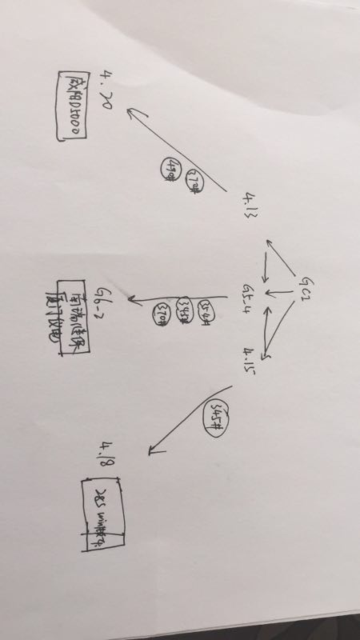 |
| 2018-03-24 12:52:07 | 你 | Gci版本 |
| 2018-03-24 12:53:07 | 我 | 好 |
| 2018-03-24 12:53:18 | 我 | 我给你传一个聊天记录 |
| 2018-03-24 12:53:34 | 我 | [链接] 群聊的聊天记录 |
| 2018-03-24 12:54:00 | 你 | 疑问？ |
| 2018-03-24 12:54:04 | 你 | 这个是谁给你发给 |
| 2018-03-24 12:54:18 | 我 | 王总 |
| 2018-03-24 12:54:30 | 你 | 呵呵 这个是ZC那个项目的群 |
| 2018-03-24 12:54:36 | 我 | [链接] 群聊的聊天记录 |
| 2018-03-24 12:54:41 | 你 | 我在里边 |
| 2018-03-24 12:55:09 | 你 | 呵呵 |
| 2018-03-24 12:55:46 | 你 | 那边问为什么不用老8s 销售直接跟王总说 这个问题不讨论 就差直接跟王总说『shut up』了 |
| 2018-03-24 12:56:00 | 我 | 是 |
| 2018-03-24 12:56:01 | 你 | 然后就把赵总拉进来 |
| 2018-03-24 12:57:25 | 你 | zc那个群 我也是被王总拉进去的 但是王总没拉张道山 |
| 2018-03-24 12:57:33 | 你 | 我准备潜水哈 |
| 2018-03-24 13:04:31 | 你 | 王总总是惦记plsql的人 |
| 2018-03-24 13:10:28 | 我 | 没错 |
| 2018-03-24 14:41:25 | 你 | [链接] Yunming和李辉的聊天记录 |
| 2018-03-24 14:42:23 | 你 | [链接] 李辉和Yunming的聊天记录 |
| 2018-03-24 14:42:32 | 你 | 你看看王总 |
| 2018-03-24 14:42:42 | 你 | 他跟高杰就是绝配 |
| 2018-03-24 14:43:38 | 你 | 他跟人聊天从来不听别人说的 只听跟自己意见一致的 高杰那样的只会拍马屁 竟说顺着他的 |
| 2018-03-24 14:44:43 | 你 | 你注意看 现在高杰中午都不吃饭了，吃饭也是12点以后走 |
| 2018-03-24 14:45:02 | 你 | 王总老是纠结中午这么点时间干嘛 |
| 2018-03-24 14:45:21 | 你 | 不说了 一会东东回来 |
{kind=link}
2018-03-26¶
| 2018-03-26 08:54:33 | 我 | 今天会有很多有意思的事情 |
| 2018-03-26 08:54:39 | 你 | 是吗 |
| 2018-03-26 08:54:52 | 你 | 对了 我还想跟你说呢 我周末是不是闯祸了 |
| 2018-03-26 08:55:01 | 我 | 刚才王欣说赵总要找下面具体干活的人了解技术方案 |
| 2018-03-26 08:55:06 | 你 | 好像助纣为虐 |
| 2018-03-26 08:55:15 | 你 | 王欣找你了么 |
| 2018-03-26 08:55:27 | 我 | 是 |
| 2018-03-26 08:55:39 | 我 | 周末那事是小事，没啥关系 |
| 2018-03-26 08:55:44 | 我 | 你收一下邮件 |
| 2018-03-26 08:56:01 | 你 | 那就还 |
| 2018-03-26 08:56:05 | 你 | 好 |
| 2018-03-26 08:56:16 | 我 | 这个邮件是赵总要的，昨天他们做了一天 |
| 2018-03-26 08:57:28 | 我 | 赵总这回真的是直接管理了，已经想管具体的研发了 |
| 2018-03-26 08:57:37 | 你 | 是 |
| 2018-03-26 09:12:16 | 你 | 刚才忘说了一个事 |
| 2018-03-26 09:12:36 | 我 | 没事，最后说吧 |
| 2018-03-26 09:12:39 | 你 | 你记得去年林杰说的要龙芯8t的事吗 |
| 2018-03-26 09:12:45 | 我 | 记得 |
| 2018-03-26 09:12:50 | 你 | 规划是q3 |
| 2018-03-26 09:12:58 | 你 | 现在变成5.15了 |
| 2018-03-26 09:13:05 | 你 | 我给你转个邮件 |
| 2018-03-26 09:13:08 | 我 | 哈哈 |
| 2018-03-26 09:13:59 | 你 | 5月份，不是5.15 |
| 2018-03-26 09:14:14 | 你 | @张旭明 旭明，南瑞继保 申请研发现场支持。解决一下 try catch问题。跟我们一起继续往后测。看还有没有其他问题。 |
| 2018-03-26 09:14:27 | 你 | 晓亮发的 |
| 2018-03-26 09:14:41 | 我 | 好，这样更好 |
| 2018-03-26 09:59:40 | 你 | 我看张道山是我做啥他做啥 |
| 2018-03-26 09:59:54 | 你 | 504那个群没他 所以他这些信息都不知道 |
| 2018-03-26 09:59:58 | 我 | 哈哈 |
| 2018-03-26 10:16:01 | 我 | 赵总果然是直接插手技术了 |
| 2018-03-26 10:16:09 | 你 | 嗯嗯 |
| 2018-03-26 10:16:13 | 你 | 直接找你了 |
| 2018-03-26 10:16:15 | 你 | 哈哈 |
| 2018-03-26 10:16:16 | 我 | 现在正在问张杰技术细节 |
| 2018-03-26 10:16:19 | 你 | 啊 |
| 2018-03-26 10:16:23 | 你 | 张杰也找去了啊 |
| 2018-03-26 10:18:39 | 我 | 对，专门问text这事 |
| 2018-03-26 10:20:41 | 你 | text的事你知道吗 |
| 2018-03-26 10:20:48 | 你 | 老陈给你同步信息了吗 |
| 2018-03-26 10:21:16 | 我 | 知道 |
| 2018-03-26 10:32:46 | 我 | 现在彻底乱了 |
| 2018-03-26 10:32:56 | 你 | 我觉得要是 |
| 2018-03-26 10:32:57 | 我 | 赵总直接指挥研发 |
| 2018-03-26 10:33:00 | 你 | 彻底乱了 |
| 2018-03-26 10:33:09 | 你 | 说啥了 |
| 2018-03-26 10:33:45 | 我 | 制定方案，要求写方案 |
| 2018-03-26 10:34:24 | 我 | 这是赵总要的 |
| 2018-03-26 10:34:38 | 你 | 这么短的时间还要写方案哈 |
| 2018-03-26 10:42:54 | 我 | [链接] 群聊的聊天记录 |
| 2018-03-26 10:54:15 | 你 | 哦哦 |
| 2018-03-26 10:54:17 | 你 | 这个不错 |
| 2018-03-26 10:54:30 | 你 | 这就是群策群力了 |
| 2018-03-26 10:54:38 | 我 | 我觉得赵总就是想做 scrum 了 |
| 2018-03-26 10:54:52 | 你 | POC可以 |
| 2018-03-26 10:55:03 | 你 | 你们一边做着 一边问着 |
| 2018-03-26 10:55:10 | 我 | 对 |
| 2018-03-26 10:58:17 | 我 | 不行以后你就和我一起 scrum 吧😁 |
| 2018-03-26 10:58:29 | 你 | 肯定没问题啊 |
| 2018-03-26 10:58:44 | 你 | poc的我看你都丢给旭明了 |
| 2018-03-26 10:58:54 | 你 | 只有POC的能做吧 |
| 2018-03-26 10:59:07 | 我 | 不是 |
| 2018-03-26 10:59:21 | 我 | 旭明是测试定位验证 |
| 2018-03-26 10:59:38 | 我 | 应用场景旭明根本就搞不定 |
| 2018-03-26 11:00:16 | 我 | 今天赵总还说了，今年要培养5个架构师水平的人，所以他要仔细听一下方案汇报 |
| 2018-03-26 11:00:38 | 你 | 哦哦 |
| 2018-03-26 11:00:43 | 你 | 5个哈！！！！！ |
| 2018-03-26 11:07:36 | 你 | 现阶段在苏州现场与超擎适配，目前基本完成需求梳理，后续按客户测试要求完成适配工作并内测，5月4日去客户现场测试。 |
| 2018-03-26 11:11:19 | 你 | 刚才聊到哪了 |
| 2018-03-26 11:11:27 | 你 | 5个架构师 |
| 2018-03-26 11:11:32 | 我 | 是 |
| 2018-03-26 11:11:50 | 你 | 采用新8s主要考虑： 老8s没有spatial和负载均衡能力。高可用方面需要借助第三方软件。本次测试要测试这些方面。 其他考虑就是： 1,该项目将来数据量会比较大（500g矢量，200t影像）对数据库性能要求比较高。 2,将来有可能会有多级数据中心（测试要求里头说的） 3,该系统是军队系统里头很核心的系统，对稳定性，高可用性有较高的要求。 4,从将来架构的扩展性来讲，新版的8s功能更强大些（尤其在集群构建方面），有利于应对二期，三期时候扩展需求。 |
| 2018-03-26 11:45:38 | 你 | Decode函数的需求有点问题哈 |
| 2018-03-26 11:46:06 | 我 | 什么问题 |
| 2018-03-26 11:46:16 | 你 | 咱们的to date返回值是datetime |
| 2018-03-26 11:46:40 | 我 | 嗯 |
| 2018-03-26 11:46:41 | 你 | |
| 2018-03-26 11:46:51 | 你 | |
| 2018-03-26 11:47:06 | 你 | |
| 2018-03-26 11:47:22 | 我 | 什么冲突 |
| 2018-03-26 11:47:39 | 你 | |
| 2018-03-26 11:47:57 | 你 | |
| 2018-03-26 11:48:12 | 你 | |
| 2018-03-26 11:48:56 | 我 | 嗯嗯，就是要求日期时间类型之间要有隐式类型转换 |
| 2018-03-26 11:50:07 | 你 | |
| 2018-03-26 11:51:06 | 你 | |
| 2018-03-26 11:52:21 | 我 | 算，就像整数和浮点数支持隐式转换 |
| 2018-03-26 11:56:19 | 你 | 好吧 |
| 2018-03-26 12:28:33 | 你 | 527的说json的可以 |
| 2018-03-26 12:29:07 | 我 | 谁说的 |
| 2018-03-26 12:29:32 | 你 | 凡梁 |
| 2018-03-26 12:29:46 | 你 | 刚测了下json，从已知的需求看基本可以满足客户 |
| 2018-03-26 12:29:52 | 我 | 那就没有问题了 |
| 2018-03-26 12:30:06 | 你 | 不错不错 少件事 |
| 2018-03-26 12:30:15 | 我 | 是 |
| 2018-03-26 13:13:34 | 我 | 困死了，眼皮打架 |
| 2018-03-26 13:14:09 | 你 | 啊， |
| 2018-03-26 13:14:54 | 你 | 这群人，太懈怠了 |
| 2018-03-26 13:15:14 | 我 | 今天连咖啡都没空喝 |
| 2018-03-26 13:15:27 | 我 | 他们是不是又不干活了 |
| 2018-03-26 13:15:51 | 你 | 是 |
| 2018-03-26 13:16:02 | 你 | 我让旭明看看，旭明睡觉了 |
| 2018-03-26 13:16:08 | 你 | 看手机呢 |
| 2018-03-26 13:16:23 | 我 | 旭明就是这样，很懒 |
| 2018-03-26 13:16:35 | 我 | 干活得盯着他 |
| 2018-03-26 13:16:46 | 你 | 都不干活 |
| 2018-03-26 13:16:56 | 你 | 反正也没人听我的 |
| 2018-03-26 13:17:27 | 我 | 你先别管了 |
| 2018-03-26 13:17:37 | 你 | 我才不管呢 |
| 2018-03-26 13:17:41 | 你 | 干我什么事 |
| 2018-03-26 13:17:45 | 我 | 这件事情赵总很重视 |
| 2018-03-26 13:17:48 | 你 | 我就是想知道结果 |
| 2018-03-26 13:17:52 | 你 | 说啥呢 |
| 2018-03-26 13:17:58 | 你 | 陈总也重视啊 |
| 2018-03-26 13:18:00 | 我 | 成出了事情让他们背锅 |
| 2018-03-26 13:19:04 | 你 | 嗨 |
| 2018-03-26 13:19:25 | 你 | 你说我们底层机制是超长截断的 |
| 2018-03-26 13:20:24 | 你 | 跟insert的时候检测长度有关系不 |
| 2018-03-26 13:20:47 | 我 | 有，可能有前置检查 |
| 2018-03-26 13:21:05 | 你 | 就是现在看在insert的时候就检测了 |
| 2018-03-26 13:21:20 | 我 | 没错 |
| 2018-03-26 13:21:28 | 你 | 但是为什么是报错不是截断呢 |
| 2018-03-26 13:21:43 | 你 | 老毛测试的是单列吧 |
| 2018-03-26 13:21:50 | 我 | 这个需要再看看 |
| 2018-03-26 13:25:59 | 你 | 现在需要测试下lvarchar会不会超过32k报错 |
| 2018-03-26 13:26:23 | 我 | 嗯嗯 |
| 2018-03-26 13:39:05 | 你 | 都报错 |
| 2018-03-26 13:39:21 | 你 | 报的都是超过32k的错 |
| 2018-03-26 13:39:50 | 我 | 嗯嗯，有可能是一个点 |
| 2018-03-26 13:42:33 | 你 | 就是系统边界，应该对大对象做处理，结果没做 |
| 2018-03-26 13:43:04 | 你 | Json和普通字段表现都是一样的 |
| 2018-03-26 13:45:00 | 我 | 你测的是dbaccess |
| 2018-03-26 13:47:38 | 你 | 是 |
| 2018-03-26 13:47:45 | 我 | OK |
| 2018-03-26 13:47:54 | 你 | 老毛测试prepare呢 |
| 2018-03-26 13:48:02 | 你 | 都是老毛测试的 |
| 2018-03-26 13:49:47 | 我 | 是，旭明现在是管理者、Leader、大拿，人家可牛呢，这些琐碎的事情都是手下干 |
| 2018-03-26 13:50:13 | 你 | 刚才测试的是odbc |
| 2018-03-26 13:50:52 | 我 | 嗯嗯 |
| 2018-03-26 13:55:35 | 你 | 测试出一个边界值 |
| 2018-03-26 13:55:44 | 你 | 65534=32767*2 |
| 2018-03-26 13:56:14 | 你 | 这个是prepare方式的 可以超过32k，最大是65534，再超 实际入库的数据就不对了 |
| 2018-03-26 13:56:32 | 我 | 👍 |
| 2018-03-26 13:56:45 | 你 | 但是这个没啥用 |
| 2018-03-26 13:57:16 | 你 | 老毛就是靠谱 让陈彪测试个东西 到现在库都建不起来 老毛直接写测试代码 |
| 2018-03-26 13:57:24 | 你 | 坑坑坑 一会搞定 |
| 2018-03-26 13:57:38 | 你 | 一会旭明会跟你说估计 |
| 2018-03-26 13:57:43 | 我 | 😄 |
| 2018-03-26 14:00:09 | 你 | 我给你总结一下： 1、非prepare方式，json格式跟字符类型表现一致，边界都是32k，超过32k直接报错，小于32k直接入库，且数据正确。 2、prepare方式，超过32k不报错，但超过65534（char数据类型边界的2倍值）就会出现入库数据丢失的情况。 |
| 2018-03-26 14:05:04 | 你 | 一会他们说的时候 你就装不知道哈 别显得我跟报信的似的 |
| 2018-03-26 14:05:10 | 你 | |
| 2018-03-26 14:05:16 | 我 | 嗯嗯 |
| 2018-03-26 14:05:38 | 你 | 我然他们测试高可用呢 |
| 2018-03-26 14:05:45 | 你 | 也不知道测没测 我就过来了 |
| 2018-03-26 14:05:57 | 我 | 嗯 |
| 2018-03-26 14:07:16 | 你 | 你们开会有事吗 |
| 2018-03-26 14:27:25 | 我 | 高杰被赵总说了 |
| 2018-03-26 14:30:44 | 你 | 说啥了 |
| 2018-03-26 14:31:28 | 我 | 赵总问研发多少人，有多少封闭研发，有多少没有封闭 |
| 2018-03-26 14:31:54 | 我 | 已经算半小时了，还没算清楚呢 |
| 2018-03-26 14:32:32 | 你 | 呵呵，心思都花到拍马屁上啦 |
| 2018-03-26 14:32:52 | 我 | 赵总已经有点急眼了 |
| 2018-03-26 14:33:29 | 你 | 你们这会开这么久 |
| 2018-03-26 14:33:41 | 我 | 嫌高杰数不清人 |
| 2018-03-26 14:33:48 | 我 | 两个会 |
| 2018-03-26 14:33:58 | 你 | 两个？ |
| 2018-03-26 14:34:35 | 我 | 优先级和研发资源 |
| 2018-03-26 14:35:04 | 你 | 哦，知道了，要不呢 |
| 2018-03-26 14:56:33 | 你 | 张道山怎么回来了 |
| 2018-03-26 15:00:06 | 我 | 今天好好的打了高杰的脸 |
| 2018-03-26 15:00:15 | 我 | ✌️✌️✌️ |
| 2018-03-26 15:00:17 | 你 | 怎么了 跟我说说 |
| 2018-03-26 15:00:19 | 你 | 跟我说说 |
| 2018-03-26 15:00:26 | 你 | 你不能独乐乐啊 |
| 2018-03-26 15:00:34 | 我 | 我不是做了计划吗 |
| 2018-03-26 15:02:29 | 我 | 赵总会上急眼，让高杰做精确到人的计划 |
| 2018-03-26 15:02:36 | 我 | 我说我这有 |
| 2018-03-26 15:02:51 | 我 | 然后就给赵总看了一眼 |
| 2018-03-26 15:05:00 | 你 | 哦 |
| 2018-03-26 15:05:54 | 我 | 赵总对我的计划很满意，让高杰做到这种程度 |
| 2018-03-26 15:06:16 | 你 | 那下次高杰还不让你给他提计划 |
| 2018-03-26 15:07:39 | 我 | 还有吕迅他们的，最后我们肯定汇总到黄鑫那 |
| 2018-03-26 15:08:14 | 我 | 反正这是赵总要的，关键是赵总现在知道高杰做不了，只有我能做 |
| 2018-03-26 15:08:33 | 你 | 是 |
| 2018-03-26 15:08:35 | 我 | 以后高杰给的赵总也会认为是我做的 |
| 2018-03-26 15:08:41 | 你 | 棒 你现在全能 |
| 2018-03-26 15:08:46 | 你 | 是 |
| 2018-03-26 15:08:52 | 你 | 太棒了 |
| 2018-03-26 15:09:03 | 我 | 😄专家组长不是白当的 |
| 2018-03-26 15:14:42 | 你 | 那是 |
| 2018-03-26 15:39:49 | 你 | select null那个需求评估的怎么样了 |
| 2018-03-26 15:40:00 | 你 | 520 |
| 2018-03-26 15:40:42 | 我 | 可以做，和416一起做 |
| 2018-03-26 15:41:03 | 你 | 好的 |
| 2018-03-26 15:54:50 | 你 | 527怎么样了 |
| 2018-03-26 15:54:54 | 你 | insert text的 |
| 2018-03-26 15:54:58 | 你 | json可以用不 |
| 2018-03-26 15:55:18 | 我 | 可以，张杰已经改了，今天打版试试 |
| 2018-03-26 15:55:27 | 你 | 好的 |
| 2018-03-26 18:14:30 | 你 | 这个日志要是实施起来 这家伙 高杰啥都知道了 |
| 2018-03-26 18:14:36 | 你 | 而且是全员的 |
| 2018-03-26 18:14:40 | 你 | 而且是大数据 |
| 2018-03-26 18:15:02 | 我 | 没错 |
| 2018-03-26 18:15:12 | 我 | 所以我才反对 |
| 2018-03-26 18:15:15 | 你 | 我们都不知道的 |
| 2018-03-26 18:15:30 | 我 | 咱们都没有权限 |
| 2018-03-26 18:15:49 | 我 | 所以给他填的时候就要少东西 |
| 2018-03-26 18:15:55 | 我 | 越少越好 |
| 2018-03-26 18:15:57 | 你 | 是 |
| 2018-03-26 18:16:10 | 你 | 他写的可细了 |
| 2018-03-26 18:16:38 | 我 | 她写的就是她想要的 |
| 2018-03-26 18:16:44 | 你 | 是 |
| 2018-03-26 18:16:57 | 我 | 不过以她的能力，不一定能用好这些数据 |
| 2018-03-26 18:17:13 | 你 | 谁知道呢 我觉得这数据相当可观啊 |
| 2018-03-26 18:17:18 | 我 | 今天赵总就让她整一个人员列表，就整了半小时 |
| 2018-03-26 18:17:19 | 你 | 包含的内容太多了 |
| 2018-03-26 18:17:40 | 你 | 这要是分析统计起来 出来的结果谁都预测不好 |
| 2018-03-26 18:17:47 | 你 | 不过大概齐也差不多 |
| 2018-03-26 18:17:48 | 我 | 再看吧 |
| 2018-03-26 18:17:55 | 你 | 嗯嗯 |
| 2018-03-26 18:17:57 | 你 | 再看吧 |
| 2018-03-26 18:18:16 | 我 | 其实这些东西需要有数据分析能力的人，就像李杰那样的 |
| 2018-03-26 18:18:25 | 我 | 咱们没有几个有这个能力的 |
| 2018-03-26 18:18:34 | 你 | 嗯嗯 |
| 2018-03-26 18:18:44 | 我 | 她以为分得细就可以全，其实错了 |
| 2018-03-26 18:18:55 | 你 | 不过赵总要看的 肯定是有了 |
| 2018-03-26 18:19:06 | 我 | 数据越多，矛盾越大 |
| 2018-03-26 18:19:15 | 你 | 不管了 随便吧 |
| 2018-03-26 18:19:22 | 我 | 恩 |
| 2018-03-26 18:21:45 | 你 | 今天评审buglist 我看测试的提的那些bug简直了 |
| 2018-03-26 18:21:57 | 你 | 就是个排列组合 一点分析都没有 |
| 2018-03-26 18:21:59 | 我 | 你收集一下问题，回来一起以邮件的形式发出来，抄给王总、老张、老陈等人 |
| 2018-03-26 18:22:15 | 你 | 我收集啥问题啊 |
| 2018-03-26 18:22:20 | 我 | 让王总知道日志不是那么简单的 |
| 2018-03-26 18:22:26 | 我 | 写日志的问题 |
| 2018-03-26 18:22:32 | 你 | 不简单现在也得做了 |
| 2018-03-26 18:22:37 | 我 | 不是的 |
| 2018-03-26 18:22:40 | 你 | 我现在提的是优化系统的 |
| 2018-03-26 18:22:46 | 我 | 这就是战术了 |
| 2018-03-26 18:22:56 | 你 | 你叫我收集啊 |
| 2018-03-26 18:23:05 | 你 | 这不是什么好差事啊 |
| 2018-03-26 18:23:07 | 我 | 我也让旭明去收集 |
| 2018-03-26 18:23:10 | 你 | 王总还不气死 |
| 2018-03-26 18:23:20 | 你 | 旭明都私下告诉高杰了 |
| 2018-03-26 18:23:42 | 我 | 告诉没事，关键是让王总知道 |
| 2018-03-26 18:44:15 | 我 | 你还不走吗 |
| 2018-03-26 18:44:22 | 你 | 不走 |
| 2018-03-26 18:44:24 | 你 | 待一会 |
| 2018-03-26 18:44:34 | 你 | 我看份文档 |
| 2018-03-26 18:44:38 | 我 | 嗯嗯 |
{kind=link}
2018-03-27¶
| 2018-03-27 09:19:09 | 我 | 你回来看看informix的加密是啥样子的 |
| 2018-03-27 09:19:45 | 你 | 就是我说的样子 |
| 2018-03-27 09:19:54 | 你 | 张道山净瞎说 |
| 2018-03-27 09:20:22 | 我 | 那你就坚持，就说原来的定义就是这样 |
| 2018-03-27 09:20:44 | 我 | 这个只是咱们重新实现加解密 |
| 2018-03-27 09:20:57 | 我 | 不是新写 |
| 2018-03-27 10:02:30 | 你 | 你看咱们王总 |
| 2018-03-27 10:02:45 | 你 | 见到美女非得显显他不可 |
| 2018-03-27 10:02:59 | 我 | 没错 |
| 2018-03-27 10:46:53 | 你 | 畅泉干的这是啥事啊 |
| 2018-03-27 10:47:10 | 你 | 被他坑了 |
| 2018-03-27 10:47:12 | 我 | ？ |
| 2018-03-27 10:47:17 | 我 | 细说一下 |
| 2018-03-27 10:48:43 | 你 | 16个0 和15个0 一个1的问题没解决 |
| 2018-03-27 11:06:39 | 我 | 哦 |
| 2018-03-27 12:45:39 | 我 | 你是去遛弯了吗 |
| 2018-03-27 13:07:03 | 你 | 洗车 |
| 2018-03-27 13:07:04 | 我 | 嗯嗯 |
| 2018-03-27 15:57:47 | 我 | 这事你别插嘴 |
| 2018-03-27 15:58:17 | 我 | 刘畅说的不对 |
| 2018-03-27 15:59:01 | 我 | 刘畅这是找死，老陈是专家 |
| 2018-03-27 16:02:55 | 你 | 我不插嘴 |
| 2018-03-27 16:03:02 | 你 | 我就是觉得好笑 |
| 2018-03-27 16:03:09 | 你 | 老陈特别可爱 |
| 2018-03-27 16:03:33 | 你 | 像是任职资格答辩 |
| 2018-03-27 16:03:44 | 我 | 哈哈，老陈这种态度说明他不满意，开始挑错了 |
| 2018-03-27 16:05:14 | 我 | 果然王总什么都不懂 |
| 2018-03-27 16:05:19 | 你 | 是 |
| 2018-03-27 16:05:28 | 我 | POC当然有配置项 |
| 2018-03-27 16:05:31 | 你 | 越说越露底 |
| 2018-03-27 16:16:47 | 你 | 你咋不说话 |
| 2018-03-27 16:17:00 | 我 | 让他们表演吧 |
| 2018-03-27 16:41:47 | 你 | 到时候累死他们 |
| 2018-03-27 16:42:03 | 你 | 天天走流程 |
| 2018-03-27 16:42:05 | 我 | 嗯嗯 |
| 2018-03-27 16:42:28 | 我 | 我不管，只要不要折腾研发就行 |
| 2018-03-27 16:47:06 | 你 | 老陈就是要把流程做成空中花园 |
| 2018-03-27 16:47:24 | 我 | 不是，是刘畅太糊涂 |
| 2018-03-27 17:26:11 | 我 | 王总其实说的对，但是不够抽象 |
| 2018-03-27 17:26:29 | 我 | 刘畅就说不出来😄 |
| 2018-03-27 17:27:46 | 你 | 是 |
| 2018-03-27 17:27:55 | 你 | 真是太好玩了 |
| 2018-03-27 17:28:23 | 我 | 是，要是耿燕在这就不一样了 |
| 2018-03-27 17:34:11 | 我 | 老陈急了 |
| 2018-03-27 17:34:58 | 你 | 哈哈 |
| 2018-03-27 17:47:13 | 你 | 我觉得这个流程对需求有个坑 |
| 2018-03-27 17:47:19 | 你 | 但是没想太好 |
| 2018-03-27 17:47:30 | 我 | 你说说 |
| 2018-03-27 17:47:39 | 你 | 我手机就剩6百分之电 |
| 2018-03-27 17:48:00 | 我 | 啊 |
| 2018-03-27 17:48:30 | 你 | 现在总是buglist评审后让我改需求 |
| 2018-03-27 17:48:45 | 我 | 去拿充电器，这里有电源 |
| 2018-03-27 18:05:12 | 我 | 哈哈，王总又着急回家了 |
| 2018-03-27 18:07:59 | 你 | 是 |
| 2018-03-27 18:43:19 | 你 | 去趟畅泉那，我有时跟你说 |
| 2018-03-27 18:43:21 | 你 | 事 |
| 2018-03-27 18:43:46 | 我 | 好 |
| 2018-03-27 18:48:03 | 你 | 你为什么一直看西屋啊 |
| 2018-03-27 18:48:06 | 你 | 你看什么呢 |
| 2018-03-27 18:48:53 | 我 | 我找老毛有事 |
| 2018-03-27 19:19:13 | 你 | 你刚才都笑出声了 |
| 2018-03-27 19:19:22 | 我 | 是 |
| 2018-03-27 19:19:38 | 你 | 笑张道山？ |
| 2018-03-27 19:19:48 | 我 | 对呀 |
| 2018-03-27 19:20:13 | 你 | 他说不过我 |
| 2018-03-27 19:20:31 | 我 | 是 |
| 2018-03-27 19:20:41 | 我 | 脑子不清楚 |
| 2018-03-27 19:20:51 | 你 | 是 |
| 2018-03-27 19:21:25 | 你 | 我回家了哈 |
| 2018-03-27 19:22:15 | 我 | [动画表情] |
2018-03-28¶
| 2018-03-28 08:19:33 | 你 | 我今天也可能晚点， |
| 2018-03-28 08:19:36 | 你 | 加油来了 |
| 2018-03-28 08:19:41 | 我 | 好的 |
| 2018-03-28 08:19:42 | 你 | 人很多 |
| 2018-03-28 08:20:03 | 我 | 没事，你和老张说一下就行 |
| 2018-03-28 08:20:24 | 你 | 你帮我拍一张最新rd的照片 |
| 2018-03-28 08:20:41 | 你 | 我知道，晚的话我会跟张工说的 |
| 2018-03-28 08:21:21 | 我 | 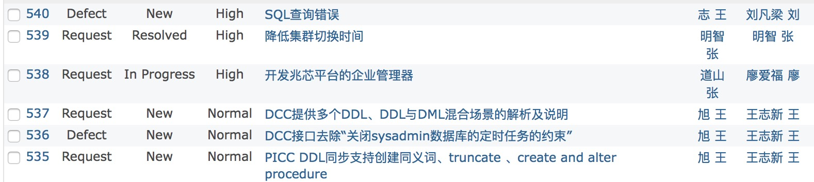 |
| 2018-03-28 08:21:25 | 我 | 这样行吗 |
| 2018-03-28 08:21:44 | 你 | 好，多谢[呲牙][呲牙] |
| 2018-03-28 08:21:59 | 我 | 😄 |
| 2018-03-28 09:32:37 | 你 | 越过山丘，才发现无人等候 |
| 2018-03-28 09:32:53 | 我 | 嗯嗯 |
| 2018-03-28 11:02:54 | 我 | 老陈也讲细节 |
| 2018-03-28 11:03:03 | 我 | 这会没完没了 |
| 2018-03-28 11:03:10 | 你 | 恩 |
| 2018-03-28 11:03:39 | 我 | [链接] 张杰与娜的聊天记录 |
| 2018-03-28 11:03:46 | 我 | [链接] 张杰与娜的聊天记录 |
| 2018-03-28 11:05:01 | 你 | 张杰发给你的？ |
| 2018-03-28 11:05:27 | 我 | 是 |
| 2018-03-28 11:05:36 | 我 | 估计他头疼死了 |
| 2018-03-28 11:06:32 | 你 | 恩 |
| 2018-03-28 11:06:38 | 你 | 我看都挺厉害的 |
| 2018-03-28 11:06:42 | 你 | 那还能头疼 |
| 2018-03-28 11:06:53 | 我 | 哈哈 |
| 2018-03-28 11:12:11 | 你 | 你知道我刚才跟研发的吵什么吗 |
| 2018-03-28 11:12:23 | 你 | 你是听见我说话过去的么 |
| 2018-03-28 11:12:45 | 我 | 是的 |
| 2018-03-28 11:13:17 | 你 | 你们研发的都合起伙来欺负我了 你都不管 |
| 2018-03-28 11:13:36 | 我 | 他们怎么欺负你了 |
| 2018-03-28 11:13:43 | 我 | 我去训他们 |
| 2018-03-28 11:13:51 | 你 | 杨丽莹没跟你说吗 |
| 2018-03-28 11:14:37 | 我 | 没有，我们说王旭和新加的需求 |
| 2018-03-28 12:24:49 | 你 | 你们研发提变更的理由是与DM不兼容 |
| 2018-03-28 12:25:10 | 你 | 那以后需求就直接写与DM兼容吧 |
| 2018-03-28 12:25:19 | 我 | 呵呵 |
| 2018-03-28 12:25:21 | 你 | 大家都省事 |
| 2018-03-28 12:25:33 | 我 | 笨到家了 |
| 2018-03-28 12:27:31 | 我 | 你别管了 |
| 2018-03-28 12:27:43 | 我 | 这事我来处理吧 |
| 2018-03-28 12:28:50 | 你 | 矫情需求变更对你们一点好处都没有 |
| 2018-03-28 12:29:11 | 你 | 私下处理 怎么都行 非得上纲上线 那就得说的说的 |
| 2018-03-28 12:29:27 | 你 | 变不变还是个事 |
| 2018-03-28 12:29:33 | 我 | 是 |
| 2018-03-28 12:29:48 | 我 | 季业已经被胜利带坏了 |
| 2018-03-28 12:30:02 | 你 | 虚拟表达式 |
| 2018-03-28 12:30:08 | 你 | 这是什么鬼 |
| 2018-03-28 12:30:13 | 你 | 术语也不定义 |
| 2018-03-28 12:31:05 | 我 | 是 |
| 2018-03-28 12:31:10 | 你 | 表达式为非实体列且不包含别名的情况，目前仅能够兼容已下场景： 1. 常量字符串或数字。(基本覆盖现场大部分SQL场景) 2. 表达式或函数最终结果为非常量结果。(ex: a + 1, abs(a) …) |
| 2018-03-28 12:31:20 | 我 | 瞎定义 |
| 2018-03-28 12:31:36 | 你 | 那天季业跟咱们说的时候发的邮件 我没细看 |
| 2018-03-28 12:31:42 | 你 | 感觉写的不对啊 |
| 2018-03-28 12:32:02 | 我 | 你把邮件转给我 |
| 2018-03-28 12:33:30 | 你 | 老王 你们设计方案写的走风漏气 你可以自己看看 现在大家都不惹事 就得了 |
| 2018-03-28 12:34:22 | 你 | 姑且不说设计做的多好 就从文档上来说 就不合格 每句话都不完整 |
| 2018-03-28 12:34:28 | 你 | 研发的写文档你是知道的 |
| 2018-03-28 12:34:36 | 你 | 何必非得这样呢 |
| 2018-03-28 12:35:07 | 我 | 哈哈，你使劲说他们 |
| 2018-03-28 12:35:24 | 你 | 我没说 我想着大概过去就得了 |
| 2018-03-28 12:35:31 | 你 | 但与需求不符合我得说吧 |
| 2018-03-28 12:35:34 | 我 | 我就是要让他们知道自己做错了 |
| 2018-03-28 12:35:48 | 我 | 不然我就没法变 |
| 2018-03-28 12:35:54 | 你 | 我现在说了跟需求不符 就开始矫情变需求 |
| 2018-03-28 12:40:27 | 我 | 哈哈，正好呀，昨天老陈不是说了，只有研发leader才能提变更，轮不到他季业提 |
| 2018-03-28 12:40:56 | 你 | 好吧 |
| 2018-03-28 12:41:11 | 你 | 你看吧 会议纪要已经发出来了 |
| 2018-03-28 12:41:48 | 我 | 我看了，一句话 输出不符合输入 |
| 2018-03-28 12:43:33 | 你 | 你看啥了 |
| 2018-03-28 12:44:59 | 你 | 研发的提需求变更，只能证明研发评估不准确，或者评估错误，王胜利还以为是什么好事呢 |
| 2018-03-28 12:45:17 | 你 | 真是傻到冒烟 |
| 2018-03-28 12:45:22 | 我 | 会议纪要呀，设计和需求不符不就是输出不符合输入吗 |
| 2018-03-28 12:45:47 | 你 | 设计和需求不符，所以研发的提了需求变更 |
| 2018-03-28 12:46:11 | 我 | 提不提需求变更不是他说了算 |
| 2018-03-28 12:47:03 | 你 | 今天我本来没生气 |
| 2018-03-28 12:47:49 | 你 | 后来王胜利就一直矫情，我的说法就是改下说法，再后来杨丽颖也跟着说，我立马就来气了 |
| 2018-03-28 12:47:58 | 我 | 嗯嗯 |
| 2018-03-28 12:48:44 | 你 | 现在研发的看到需求第一个反应不是按照需求去设计，第一个反应是按照自己想的去设计，设计不出来的话就改需求，哪有这种道理 |
| 2018-03-28 12:48:53 | 我 | 是 |
| 2018-03-28 12:49:07 | 你 | 需不需要和达梦兼容研发的说了算么 |
| 2018-03-28 12:49:45 | 我 | 所以才说王胜利傻 |
| 2018-03-28 12:50:30 | 你 | 这个需求研发的评审，该杨丽颖参与吗 |
| 2018-03-28 12:50:36 | 你 | 评委有她吗 |
| 2018-03-28 12:50:48 | 我 | 该 |
| 2018-03-28 12:51:00 | 我 | 这是我安排的 |
| 2018-03-28 12:51:09 | 你 | 她不是和王胜利平级么 |
| 2018-03-28 12:51:35 | 你 | 季业做，两个主管review啊 |
| 2018-03-28 12:51:42 | 我 | 对，现在我要压着王胜利 |
| 2018-03-28 12:51:49 | 你 | 你的安排不错[强][强][强][强] |
| 2018-03-28 12:51:59 | 你 | 净起好作用 |
| 2018-03-28 12:52:55 | 我 | 你是被王胜利气到了 |
| 2018-03-28 12:55:02 | 我 | 你去吃饭了吗 |
| 2018-03-28 12:55:12 | 你 | 没有 |
| 2018-03-28 13:03:24 | 你 | 是不是我让你生的气啊 |
| 2018-03-28 13:03:36 | 我 | 不是呀，是研发 |
| 2018-03-28 13:03:49 | 我 | 一群猪 |
| 2018-03-28 13:04:16 | 你 | 反正我的气也撒完了 |
| 2018-03-28 13:04:25 | 你 | 现在看看怎么收拾吧 |
| 2018-03-28 13:04:33 | 我 | 我已经回邮件了 |
| 2018-03-28 13:04:37 | 你 | 我看了 |
| 2018-03-28 13:04:41 | 我 | 嗯嗯 |
| 2018-03-28 13:04:58 | 你 | 你需要了解细节吗 |
| 2018-03-28 13:05:31 | 我 | 我先看看方案 |
| 2018-03-28 13:45:05 | 我 | 都是猪队友呀 |
| 2018-03-28 13:45:15 | 你 | 真坑 |
| 2018-03-28 13:46:06 | 你 | 都是蠢货 |
| 2018-03-28 13:46:11 | 我 | 我昨天还在会上和老陈争，让下面研发可以直接提变更，我批准就得了。结果今天就被季业打脸了，这肯定被老陈抓着做反面典型呀 |
| 2018-03-28 13:46:12 | 你 | 自己写的啥都不知道 |
| 2018-03-28 13:46:30 | 你 | 唉 |
| 2018-03-28 13:46:33 | 你 | 真是麻烦 |
| 2018-03-28 13:46:50 | 我 | 真是蠢到家的一群人 |
| 2018-03-28 13:47:04 | 我 | 哪怕来问我一声 |
| 2018-03-28 13:47:19 | 你 | 蠢死得了 |
| 2018-03-28 13:47:25 | 我 | 所以这次我也不留情面，邮件上直接回 |
| 2018-03-28 13:47:32 | 你 | 嗯嗯 |
| 2018-03-28 13:48:26 | 你 | 真是气死我了 |
| 2018-03-28 13:48:42 | 我 | 算了，别生气了 |
| 2018-03-28 13:48:54 | 你 | 我当时看了 一想 怎么就写出来这么低级的问题 |
| 2018-03-28 13:48:59 | 你 | 我还说了他一顿 |
| 2018-03-28 13:49:13 | 你 | 其实不是 |
| 2018-03-28 13:49:25 | 你 | 其实是考虑的对 写出来变味了 |
| 2018-03-28 13:49:33 | 我 | 是 |
| 2018-03-28 13:53:30 | 你 | 你准备怎么处理季业这事 |
| 2018-03-28 13:53:37 | 你 | 王胜利肯定觉得你向着我 |
| 2018-03-28 13:53:43 | 你 | 你信不 就那猪脑子 |
| 2018-03-28 13:53:48 | 我 | 我才不会管他呢 |
| 2018-03-28 13:54:19 | 我 | 这事简单处理，就是当成研发和产品两个组之间的事情，公事公办 |
| 2018-03-28 13:54:27 | 你 | 季业是服你还是服胜利 下边有胜利的follower吗 |
| 2018-03-28 13:54:41 | 我 | 我不会去找你，我去找老张 |
| 2018-03-28 13:54:56 | 你 | 好吧 |
| 2018-03-28 13:54:58 | 我 | 季业肯定是服胜利 |
| 2018-03-28 13:55:07 | 我 | 但是他不敢逆着我 |
| 2018-03-28 13:55:46 | 你 | 知道了 |
| 2018-03-28 14:13:22 | 你 | 刘畅， 对于b，在无from子句的情况下，设计实现与需求不一致，需求要求为报错，当前设计实现为不报错，行为与DM保持一致。 —需求要求报错的场景是：投影列包含列名的前提下，from子句的表不包括投影列的列名或省略from子句 。 请确认是否为这个场景的设计实现与需求不一致，如果是，这个点建议按照需求实现！ |
| 2018-03-28 14:13:25 | 你 | 你看下 |
| 2018-03-28 14:13:30 | 你 | 是不是太阴了 |
| 2018-03-28 14:13:32 | 你 | 哈哈 |
| 2018-03-28 14:15:00 | 我 | 把从 如果是开始的都删掉 |
| 2018-03-28 14:15:37 | 我 | 这里面有一个潜台词就是“如果不是，需求做更改”，这样就不对了 |
| 2018-03-28 14:15:53 | 我 | 先问是不是，等有了回答再说 |
| 2018-03-28 14:37:00 | 你 | 我错了 |
| 2018-03-28 14:37:28 | 我 | 没事 |
| 2018-03-28 15:32:44 | 你 | 怎么需求这么费劲呢 |
| 2018-03-28 16:16:39 | 你 | 简直了 |
| 2018-03-28 16:16:49 | 你 | 你也这么糊涂 |
| 2018-03-28 16:16:56 | 你 | 以后就这样吧 |
| 2018-03-28 16:17:05 | 我 | 我哪里糊涂了 |
| 2018-03-28 16:17:06 | 你 | 真是懒得发声了 |
| 2018-03-28 16:18:20 | 我 | 我没有糊涂，我知道你想的，只是现在形势比人强 |
| 2018-03-28 16:19:06 | 我 | 简单说我不是从需求的角度看这次评审，是从政治的角度看这次评审 |
| 2018-03-28 16:19:22 | 你 | 好，我相信你 |
| 2018-03-28 16:19:30 | 我 | 张杰本身对改代码有抵触，我希望改代码 |
| 2018-03-28 16:20:01 | 你 | 明天晚上晓亮来，我请你和旭明还有晓亮吃饭[强][强][强][强] |
| 2018-03-28 16:20:51 | 我 | 我做计划的时候我都计划了张杰做完POC后继续做315，上周我和他提这事的时候，他就非常抵触 |
| 2018-03-28 16:21:08 | 你 | 没事，不用解释，我相信你 |
| 2018-03-28 16:21:12 | 我 | 你写的需求我比你还想做全呢 |
| 2018-03-28 16:21:24 | 我 | 嗯嗯 |
| 2018-03-28 16:21:37 | 你 | 我不纠结做全 |
| 2018-03-28 16:21:51 | 你 | 我根本不care做全 |
| 2018-03-28 16:22:11 | 你 | 张杰说让我改的那个根本不是需求纬度 |
| 2018-03-28 16:22:18 | 我 | 是 |
| 2018-03-28 16:22:20 | 你 | 那个完全是研发纬度 |
| 2018-03-28 16:22:26 | 我 | 没错 |
| 2018-03-28 16:22:32 | 我 | 他不懂需求 |
| 2018-03-28 16:22:35 | 你 | 同样的，第二个就不用补 |
| 2018-03-28 16:22:47 | 你 | 我以为你会正声 |
| 2018-03-28 16:22:56 | 你 | 算了，无所谓 |
| 2018-03-28 16:23:33 | 我 | 最近肯定不行，我正在拉张杰 |
| 2018-03-28 16:23:51 | 我 | 得等我完全掌控研发以后再说 |
| 2018-03-28 16:24:44 | 我 | 而且现在王总还不停的插手，我对研发的掌控能力现在还远没到当初开发中心的程度 |
| 2018-03-28 16:24:58 | 你 | 嗯嗯，你说的对 |
| 2018-03-28 16:25:18 | 你 | 我明白 |
| 2018-03-28 16:34:35 | 我 | 这个需求我要好好评，不能让王胜利做主 |
| 2018-03-28 16:41:06 | 你 | 你能别挑这种次了吗 |
| 2018-03-28 16:41:56 | 我 | 没事，替你教育小孩 |
| 2018-03-28 16:42:00 | 你 | 再挑打死你 |
| 2018-03-28 16:42:02 | 你 | 不用 |
| 2018-03-28 17:48:35 | 你 | 我特别想哭 |
| 2018-03-28 17:48:58 | 我 | 就因为我说你了？ |
| 2018-03-28 17:49:46 | 你 | 没有 |
| 2018-03-28 17:49:48 | 你 | 你开会吧 |
| 2018-03-28 17:49:54 | 你 | 嘿嘿 |
| 2018-03-28 17:50:08 | 我 | 你说吧 |
| 2018-03-28 17:50:27 | 你 | 我什么也不想说 |
| 2018-03-28 17:50:32 | 你 | 我没什么说的 |
| 2018-03-28 17:51:30 | 我 | 哦，肯定是生我气了 |
| 2018-03-28 17:52:06 | 你 | 真没有 |
| 2018-03-28 17:52:41 | 我 | 那为啥想哭 |
| 2018-03-28 18:06:38 | 我 | 你去哪了 |
| 2018-03-28 18:07:36 | 你 | 我真没事 |
| 2018-03-28 18:08:20 | 我 | 嗯嗯 |
| 2018-03-28 19:18:36 | 我 | 你咋没回来 |
| 2018-03-28 19:35:21 | 你 | 明天吃饭哈 |
| 2018-03-28 19:35:22 | 我 | 你要走了呀 |
| 2018-03-28 19:35:25 | 我 | 好呀好呀 |
| 2018-03-28 19:35:30 | 你 | 嗯嗯 |
| 2018-03-28 19:35:34 | 我 | 明天中午还是晚上 |
| 2018-03-28 19:35:39 | 你 | 晚上 |
| 2018-03-28 19:35:43 | 我 | 嗯嗯 |
| 2018-03-28 19:35:45 | 你 | 中午晓亮出不来 |
| 2018-03-28 19:35:56 | 你 | 咱们4个，说好我请哈 |
| 2018-03-28 19:36:01 | 我 | 好 |
| 2018-03-28 19:36:10 | 你 | 为了我得奖 |
| 2018-03-28 19:36:28 | 我 | 嗯嗯 |
| 2018-03-28 19:38:59 | 我 | 我在和李杰聊天 |
| 2018-03-28 19:39:15 | 我 | 她问我咱俩吵架的事情 |
| 2018-03-28 19:39:28 | 你 | 啊！ |
| 2018-03-28 19:39:34 | 你 | 我今天特别累 |
| 2018-03-28 19:39:46 | 我 | 太走脑子了 |
| 2018-03-28 19:39:52 | 你 | 心累 |
| 2018-03-28 19:40:02 | 我 | 啊 |
| 2018-03-28 19:40:10 | 我 | 是因为我吗 |
| 2018-03-28 19:40:22 | 你 | 只能说有关系 |
| 2018-03-28 19:40:56 | 我 | 哦 |
| 2018-03-28 20:00:37 | 你 | |
| 2018-03-28 20:01:00 | 我 | 当然没有啦，我还特别后悔呢 |
| 2018-03-28 20:01:13 | 你 | |
| 2018-03-28 20:01:18 | 我 | 以后我不那样和你说话了，是我态度不好 |
| 2018-03-28 20:01:49 | 我 | 是我的态度 |
| 2018-03-28 20:02:08 | 我 | 事情本身没有关系，是我的态度不好 |
| 2018-03-28 20:02:10 | 你 | |
| 2018-03-28 20:02:43 | 我 | 说完了我就担心死了，怕吓到你 |
| 2018-03-28 20:02:49 | 你 | |
| 2018-03-28 20:03:01 | 你 | |
| 2018-03-28 20:03:10 | 你 | |
| 2018-03-28 20:03:27 | 你 | |
| 2018-03-28 20:03:55 | 你 | |
| 2018-03-28 20:04:09 | 你 | |
| 2018-03-28 20:04:22 | 你 | |
| 2018-03-28 20:04:34 | 你 | |
| 2018-03-28 20:04:43 | 你 | |
| 2018-03-28 20:05:08 | 你 | |
| 2018-03-28 20:05:30 | 我 | 没有啦 |
| 2018-03-28 20:05:35 | 我 | 你挺好的 |
| 2018-03-28 20:06:14 | 你 | |
| 2018-03-28 20:06:24 | 你 | |
| 2018-03-28 20:06:40 | 我 | 嗯嗯，我知道，我错了 |
| 2018-03-28 20:06:44 | 你 | |
| 2018-03-28 20:06:58 | 你 | |
| 2018-03-28 20:07:09 | 你 | |
| 2018-03-28 20:07:57 | 我 | 嗯嗯 |
| 2018-03-28 20:08:13 | 我 | 你给我发那条的时候，我特别感动 |
| 2018-03-28 20:09:35 | 你 | |
| 2018-03-28 20:10:10 | 我 | 当然不骗你啦 |
| 2018-03-28 20:10:24 | 我 | 真的不能再真了 |
| 2018-03-28 20:10:41 | 我 | 瞬间感觉你是最懂我的人 |
| 2018-03-28 20:10:42 | 你 | |
| 2018-03-28 20:10:55 | 我 | 嗯嗯 |
| 2018-03-28 20:12:14 | 你 |
{kind=link}
2018-03-29¶
| 2018-03-29 09:26:17 | 你 | 陈总一碰到张建就跟我碰到王胜利似的 |
| 2018-03-29 09:26:34 | 我 | 明知道张建就是这种人，老陈还让他做leader |
| 2018-03-29 09:26:44 | 我 | 这就是他的妇人之仁 |
| 2018-03-29 09:27:00 | 你 | 是吧 |
| 2018-03-29 09:27:03 | 我 | 和你与胜利之间不一样 |
| 2018-03-29 09:27:20 | 我 | 你和胜利是死对头 |
| 2018-03-29 09:27:33 | 你 | 嗯嗯 |
| 2018-03-29 09:27:41 | 我 | 老陈和张建是恨铁不成钢 |
| 2018-03-29 09:27:55 | 你 | 好么 |
| 2018-03-29 09:27:57 | 我 | 张建也是老陈的老部下了 |
| 2018-03-29 09:28:08 | 你 | 张道山这眼神 |
| 2018-03-29 09:28:13 | 你 | 简直了 |
| 2018-03-29 09:28:20 | 我 | 哈哈 |
| 2018-03-29 09:30:37 | 我 | 昨天说不准谈细节，今天自己大谈细节 |
| 2018-03-29 10:33:17 | 你 | GCI我建议你们早点送 |
| 2018-03-29 10:33:25 | 我 | 524吗 |
| 2018-03-29 10:33:27 | 你 | 这个不定测出来多少问题呢 |
| 2018-03-29 10:33:28 | 你 | 是 |
| 2018-03-29 10:33:33 | 我 | 没问题 |
| 2018-03-29 10:33:47 | 你 | 你有送测问题列表吗 |
| 2018-03-29 10:34:00 | 我 | 没有 |
| 2018-03-29 10:34:07 | 你 | 老冷有吗 |
| 2018-03-29 10:34:22 | 我 | 不知道，他应该有 |
| 2018-03-29 10:34:42 | 你 | 基于哪个版送啊 是在G5_4上合并 还是继保的也合进去 |
| 2018-03-29 10:34:53 | 你 | 这个应该是张道山操心的事 理论上 |
| 2018-03-29 10:35:11 | 你 | 老冷现在忙吗 我去找他 |
| 2018-03-29 10:35:20 | 我 | 老冷已经把所有的都合并到主干上了 |
| 2018-03-29 10:35:27 | 我 | 不过继保的比较麻烦 |
| 2018-03-29 10:35:38 | 我 | 边界不好确定 |
| 2018-03-29 10:35:41 | 你 | 我上次听你说 不建议合并继保 |
| 2018-03-29 10:35:50 | 我 | 我打算让他只送524 |
| 2018-03-29 10:36:08 | 我 | 代码所有的都有，送测邮件只写524 |
| 2018-03-29 10:36:42 | 你 | 这不是。。。。掩耳盗铃么。。。。[呲牙] |
| 2018-03-29 10:36:49 | 你 | 只是测试的不测！！！ |
| 2018-03-29 10:37:00 | 我 | 对 |
| 2018-03-29 10:37:19 | 我 | 继保那些函数都没有做全 |
| 2018-03-29 10:37:26 | 你 | 我是怕测试的测的少 到现场出问题 打研发的板子 |
| 2018-03-29 10:37:37 | 我 | 如果测试测，就需要写一份详细的实现功能文档 |
| 2018-03-29 10:37:41 | 你 | 那就直接拉分支 |
| 2018-03-29 10:37:52 | 你 | 在G5_4上和524 |
| 2018-03-29 10:44:57 | 你 | 我数了下 从G5_4往后有27个gci的问题 rd上 |
| 2018-03-29 10:45:17 | 我 | 这么多 |
| 2018-03-29 10:45:21 | 你 | 是 |
| 2018-03-29 10:45:43 | 我 | 现在GCI 最新的 G6_3当初没有测 |
| 2018-03-29 10:46:07 | 我 | 要是这样就得把 G6上的都测试一遍 |
| 2018-03-29 10:46:20 | 你 | G_3把以前的问题都合并了 这话是冷卫杰说的 但是我特别不相信[呲牙] |
| 2018-03-29 10:46:35 | 我 | 我知道 |
| 2018-03-29 10:48:28 | 你 | 你知道我怕啥吗 我怕一个项目提了问题 老冷就在项目现场用的版本上直接修复 |
| 2018-03-29 10:48:34 | 你 | 然后就没下文了 |
| 2018-03-29 10:48:49 | 我 | 这种情况无法排除 |
| 2018-03-29 10:48:50 | 你 | 有的甚至版本号都没升 |
| 2018-03-29 10:49:02 | 我 | 现在只是他自己说都合并了 |
| 2018-03-29 10:49:03 | 你 | G5_4之前就有过 |
| 2018-03-29 10:49:10 | 我 | 没有办法验证他说的 |
| 2018-03-29 10:49:24 | 我 | 我回来让他整理一个列表吧 |
| 2018-03-29 10:49:30 | 你 | 我想找他把rd上的任务过一遍 |
| 2018-03-29 10:49:45 | 你 | 或者把这些问题列出来 让他填版本号 |
| 2018-03-29 10:49:51 | 我 | 这事我来做吧，有些是没有 rd 的 |
| 2018-03-29 10:50:01 | 你 | 啊！！！！还有没有rd的啊 |
| 2018-03-29 10:50:05 | 你 | 真够劲 |
| 2018-03-29 10:50:07 | 我 | 对 |
| 2018-03-29 10:50:12 | 你 | 好吧 |
| 2018-03-29 10:50:22 | 我 | 厦门仪电就有这样的 |
| 2018-03-29 10:50:30 | 你 | 你还是先弄这个表吧 让测试的先启动测试用例编写 |
| 2018-03-29 10:50:34 | 我 | 就用一个号解决了一堆问题 |
| 2018-03-29 10:50:43 | 你 | 不然你们送之前 他们啥也没有 耽误时间 |
| 2018-03-29 10:51:58 | 我 | 好 |
| 2018-03-29 10:53:29 | 我 | 你帮我问问，GCI G6是不是没有测试过 |
| 2018-03-29 10:53:58 | 你 | 问谁 |
| 2018-03-29 10:54:03 | 你 | 肯定没测过 |
| 2018-03-29 10:54:07 | 我 | 张振鹏吧 |
| 2018-03-29 10:54:41 | 我 | 这就有问题了，我们写是写 G5以后的还是 G6_3以后的 |
| 2018-03-29 10:54:51 | 我 | 最后一次测试 GCI 是哪个版本？ |
| 2018-03-29 10:55:25 | 你 | 我问问 稍等 |
| 2018-03-29 10:56:24 | 你 | 如果测试过 库里都没有 |
| 2018-03-29 10:57:20 | 我 | G6_3应该入库了，在受控库里面 |
| 2018-03-29 10:57:24 | 我 | 就是没有测试 |
| 2018-03-29 10:57:43 | 你 | G6_3什么时候送的 |
| 2018-03-29 10:58:43 | 我 | 3月19日 |
| 2018-03-29 10:59:05 | 我 | 没有测试，是 POC 送测 |
| 2018-03-29 11:00:05 | 你 | 最后测试的正式版GCI 是G5_4 |
| 2018-03-29 11:00:11 | 你 | G6的没测过 |
| 2018-03-29 11:00:36 | 你 | 你还让我问张振鹏 他跟我说正式测过 |
| 2018-03-29 11:00:55 | 你 | 我问他谁测的 他说葛娜 我刚才问葛娜 葛娜说没测过 |
| 2018-03-29 11:00:58 | 我 | 呵呵 |
| 2018-03-29 11:01:24 | 你 | 整天糊里糊涂的 |
| 2018-03-29 11:01:30 | 你 | 一问八不知 |
| 2018-03-29 11:02:06 | 我 | 哈哈 |
| 2018-03-29 11:02:59 | 我 | 受控库里应该有G6_3，测试过的应该是 G5_4或者 G5_3 |
| 2018-03-29 11:03:10 | 你 | 对 |
| 2018-03-29 11:03:23 | 你 | G5_4应该是 |
| 2018-03-29 11:04:03 | 我 | G6_1和 G6_2修复345，G6_3修复483、500、501 |
| 2018-03-29 11:05:36 | 你 | 别的 370、490呢 |
| 2018-03-29 11:05:41 | 你 | 搞到别的分支去了 |
| 2018-03-29 11:05:45 | 你 | 唉 |
| 2018-03-29 11:05:50 | 你 | 真是没办法 |
| 2018-03-29 11:06:28 | 我 | 这个我得去确认，我是从送测邮件上看见的，这两个没准已经修了 |
| 2018-03-29 11:07:10 | 我 | 490 已经解决：GBaseGCI_4.10_1.6.4.20.RHEL6_x86 |
| 2018-03-29 11:08:34 | 你 | 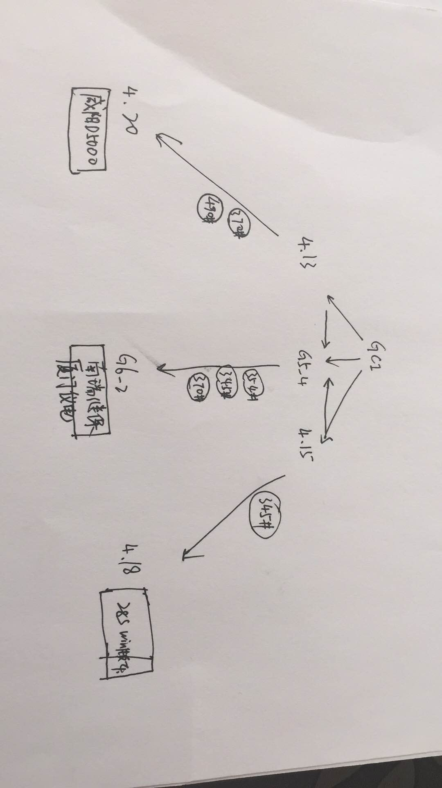 |
| 2018-03-29 11:10:09 | 你 | 你听听高杰说话 |
| 2018-03-29 11:10:22 | 你 | 净给我挖坑 |
| 2018-03-29 11:10:31 | 我 | 是，现在我特别讨厌她 |
| 2018-03-29 11:10:36 | 你 | 是 |
| 2018-03-29 11:10:44 | 我 | 我和她势不两立 |
| 2018-03-29 11:10:51 | 我 | 你就说这个得听产品线的 |
| 2018-03-29 11:11:47 | 我 | 发工资了 |
| 2018-03-29 11:12:02 | 你 | 老王 你说我该和王总说调薪的事吗 |
| 2018-03-29 11:12:06 | 你 | 我纠结好几天了 |
| 2018-03-29 11:12:12 | 你 | 你给我分析分析 |
| 2018-03-29 11:12:14 | 我 | 当然该说啦 |
| 2018-03-29 11:12:24 | 我 | 你直接找他说，让他知道你的困难 |
| 2018-03-29 11:12:34 | 你 | 哎呀 我特别不好意思 |
| 2018-03-29 11:12:40 | 我 | 另外正好给他表表决心 |
| 2018-03-29 11:12:45 | 我 | 说你想做产品经理 |
| 2018-03-29 11:12:50 | 我 | 想管发版 |
| 2018-03-29 11:12:55 | 你 | 你跟我说 我要说几个关键点 |
| 2018-03-29 11:13:04 | 你 | 我不知道重点在哪 |
| 2018-03-29 11:13:16 | 你 | 或者怎么说服他给我调薪 |
| 2018-03-29 11:15:18 | 我 | 调薪的话，有几个点可以说：1. 你入职的时候工资低，比晚一年的低。2.找个理由说你需要钱，比如买房什么的，或者说还贷压力大什么的。3. 希望是一种对自己工作成绩的证明 |
| 2018-03-29 11:15:56 | 我 | 和他谈要和他两件事情，一件是调薪，一件是你的规划或者说理想 |
| 2018-03-29 11:16:06 | 你 | 好 |
| 2018-03-29 11:16:15 | 我 | 把规划当做重点谈，看起来调薪只是附带的 |
| 2018-03-29 11:16:24 | 你 | 哎呀 |
| 2018-03-29 11:16:28 | 你 | 我估计做不到 |
| 2018-03-29 11:16:40 | 你 | 上来就说我工作规划的事么 |
| 2018-03-29 11:16:53 | 我 | 你首先要突破自己这种谈钱羞耻的心理 |
| 2018-03-29 11:17:03 | 你 | 嗯嗯 你说的太对了 |
| 2018-03-29 11:17:28 | 我 | 你就说今天有两件事和您谈，一个是调薪，一个是我未来的规划 |
| 2018-03-29 11:17:44 | 我 | 调薪简单说几句就完了，然后谈规划 |
| 2018-03-29 11:17:50 | 你 | 那就先谈调薪 |
| 2018-03-29 11:18:00 | 你 | 你说我今天跟他说合适么 |
| 2018-03-29 11:18:03 | 我 | 规划一定要谈的时间比调薪长 |
| 2018-03-29 11:18:11 | 你 | 嗯嗯 说得对 |
| 2018-03-29 11:18:14 | 我 | 可以，你想好了就可以和他说 |
| 2018-03-29 11:18:24 | 你 | 规划 的话 我怎么开头啊 |
| 2018-03-29 11:18:32 | 你 | 是要改变现状吗 |
| 2018-03-29 11:18:41 | 你 | 比如 让我管一些事什么的 |
| 2018-03-29 11:18:48 | 我 | 你就说你的职业规划是产品经理 |
| 2018-03-29 11:19:08 | 我 | 就公司目前的情况，你想参与发版管理等等 |
| 2018-03-29 11:19:09 | 你 | 然后呢 自己也是一直这么要求自己的 |
| 2018-03-29 11:19:19 | 你 | 好的 |
| 2018-03-29 11:19:24 | 我 | 后面你自己瞎编就可以了 |
| 2018-03-29 11:19:25 | 你 | 就说想参与 |
| 2018-03-29 11:19:28 | 你 | 好 |
| 2018-03-29 11:19:31 | 我 | 顺着王总说 |
| 2018-03-29 11:19:33 | 你 | 他也会跟我扯的估计 |
| 2018-03-29 11:19:35 | 你 | 嗯嗯 |
| 2018-03-29 11:19:43 | 你 | 我现在就去找他 我 |
| 2018-03-29 11:19:50 | 你 | 这件事已经相好几天了 |
| 2018-03-29 11:19:53 | 我 | 要是他说现在管理有问题，你就说你是怎么看，想怎么解决 |
| 2018-03-29 11:19:56 | 你 | 正好刚才发工资了 |
| 2018-03-29 11:20:11 | 你 | 好 |
| 2018-03-29 11:20:14 | 我 | 要是他不说，你就说说你是怎么看待产品经理这个角色 |
| 2018-03-29 11:20:25 | 我 | 你认为应该怎么才能当好这个产品经理 |
| 2018-03-29 11:20:36 | 你 | 好的 |
| 2018-03-29 11:20:42 | 我 | 另外多捧捧他 |
| 2018-03-29 11:20:47 | 你 | 不会啊 |
| 2018-03-29 11:20:49 | 你 | 哈哈 |
| 2018-03-29 11:20:54 | 你 | 我去了哈 祝我成功 |
| 2018-03-29 11:21:04 | 我 | 就说这个还得跟王总多学习 |
| 2018-03-29 11:21:11 | 我 | 王总管的就非常好 |
| 2018-03-29 11:21:15 | 我 | 等等之类的 |
| 2018-03-29 11:21:21 | 我 | 就是你觉得肉麻的话 |
| 2018-03-29 11:21:27 | 我 | 他一般都会比较喜欢听 |
| 2018-03-29 12:13:36 | 你 | 说完了 |
| 2018-03-29 12:14:01 | 我 | 怎么样 |
| 2018-03-29 12:14:35 | 你 | 我觉得聊的tinghaode |
| 2018-03-29 12:14:43 | 你 | 待会跟你说细节 |
| 2018-03-29 12:15:02 | 我 | 嗯嗯 |
| 2018-03-29 13:33:36 | 你 | 跟你说说 |
| 2018-03-29 13:33:48 | 你 | 就跟你说的一样 |
| 2018-03-29 13:33:51 | 我 | 嗯嗯，没睡够吧 |
| 2018-03-29 13:34:20 | 你 | 我一说 王总就说 他知道我工资低 他说我是咱们部门最低的[抓狂] |
| 2018-03-29 13:34:35 | 你 | 不过后来又说不是最低的 也差不多 |
| 2018-03-29 13:35:00 | 我 | 嗯，去年我和他提过你进来的时候工资特别低 |
| 2018-03-29 13:35:11 | 你 | 是吧 |
| 2018-03-29 13:35:41 | 你 | 然后就说我要干什么 |
| 2018-03-29 13:35:59 | 你 | 我就说我希望调薪的时候 能考虑一下 |
| 2018-03-29 13:36:03 | 你 | 他说他知道 |
| 2018-03-29 13:36:10 | 我 | 嗯嗯 |
| 2018-03-29 13:36:17 | 你 | 后来就说他看到我这一年的成长 |
| 2018-03-29 13:36:31 | 你 | 说我工作做的比较好 |
| 2018-03-29 13:36:46 | 你 | 然后就是瞎扯的 |
| 2018-03-29 13:36:52 | 你 | 没说调多少 |
| 2018-03-29 13:37:01 | 我 | 嗯 |
| 2018-03-29 13:37:09 | 你 | 不过有几个消息 |
| 2018-03-29 13:37:13 | 你 | 倒是跟你说下 |
| 2018-03-29 13:37:28 | 你 | 他说他觉得做plsql那个东西没用 |
| 2018-03-29 13:37:34 | 你 | 他们做的也不好 |
| 2018-03-29 13:37:36 | 我 | 嗯嗯 |
| 2018-03-29 13:37:42 | 你 | 其次也不会有技术支持的用 |
| 2018-03-29 13:37:52 | 你 | 他说最关键的就是返回游标 |
| 2018-03-29 13:38:05 | 你 | 他跟老陈说过方案 |
| 2018-03-29 13:48:51 | 你 | 写的根本不是需求 |
| 2018-03-29 13:49:17 | 你 | 老陈说的，王旋根本不懂 |
| 2018-03-29 13:49:39 | 我 | 是 |
| 2018-03-29 13:49:53 | 我 | 他们那边就没有懂的 |
| 2018-03-29 13:53:15 | 你 | 王旋把需求写成测试大纲了 |
| 2018-03-29 13:53:31 | 你 | 而且每个都不完整 |
| 2018-03-29 13:54:12 | 你 | 他们纯粹是鸡同鸭讲 |
| 2018-03-29 13:54:52 | 我 | 是，也不怨老陈跟他们着急 |
| 2018-03-29 13:58:17 | 你 | 是，老陈说的是每一条都是完整的任务，王旋理解成优先级了 |
| 2018-03-29 13:58:37 | 你 | 又说我写的那个21条列表呢 |
| 2018-03-29 13:59:02 | 我 | 哈哈，最后还得看你的 |
| 2018-03-29 13:59:19 | 你 | 是，说按照那21条写 |
| 2018-03-29 13:59:54 | 你 | 王旋写的全是一截一截的，一截的所有情况都列出来了 |
| 2018-03-29 14:00:41 | 你 | 这群人简直太蠢了， |
| 2018-03-29 14:00:55 | 你 | 我现在觉得哪哪都是我的机会 |
| 2018-03-29 14:01:20 | 我 | 哈哈 |
| 2018-03-29 14:04:21 | 你 | 实在看不下去了 |
| 2018-03-29 14:20:39 | 你 | 我怎么感觉你没有听我说话呢 |
| 2018-03-29 14:20:51 | 我 | 哈哈，让你发现了 |
| 2018-03-29 14:21:04 | 我 | 一个呢你说的这些我都非常清楚 |
| 2018-03-29 14:21:15 | 你 | 那倒是 |
| 2018-03-29 14:21:18 | 我 | 二一个呢我是被你吸引了 |
| 2018-03-29 14:21:24 | 你 | 你又骗我 |
| 2018-03-29 14:21:34 | 我 | 看着你在哪说，就觉得你的样子特别漂亮 |
| 2018-03-29 14:21:59 | 我 | 说什么都不重要，只要你说的就一定是对的 |
| 2018-03-29 14:22:14 | 你 | 真的假的 |
| 2018-03-29 14:22:30 | 你 | 我还没跟你说完呢 |
| 2018-03-29 14:22:31 | 我 | 幸好我自己对这块还比较清楚，不然我真的会对你五体投地 |
| 2018-03-29 14:22:41 | 你 | 骗人 |
| 2018-03-29 14:22:44 | 你 | 就会骗人 |
| 2018-03-29 14:22:50 | 我 | 不骗你 |
| 2018-03-29 14:22:58 | 你 | 接着说wangzong |
| 2018-03-29 14:23:01 | 我 | 被你吸引的是我的本我 |
| 2018-03-29 14:23:14 | 你 | 王总说 现在赵总这个做法不对 |
| 2018-03-29 14:23:20 | 我 | 嗯嗯 |
| 2018-03-29 14:23:21 | 你 | 就是歼灭战这个做法 |
| 2018-03-29 14:23:31 | 你 | 他说 他跟武总说过现在的情况 |
| 2018-03-29 14:23:39 | 你 | 武总认可 |
| 2018-03-29 14:23:45 | 你 | 但是武总现在不管了 |
| 2018-03-29 14:24:08 | 你 | 他还说 他故意不参与plsql的事 |
| 2018-03-29 14:24:11 | 我 | 呵呵呀 |
| 2018-03-29 14:24:20 | 你 | 他觉得这是就不能成 做的就是错的 |
| 2018-03-29 14:24:35 | 你 | 他故意不管plsql |
| 2018-03-29 14:24:39 | 我 | 不过他应该是把你当成他的人了 |
| 2018-03-29 14:24:48 | 你 | 还说现在没人听他的 |
| 2018-03-29 14:33:54 | 我 | 继续说 |
| 2018-03-29 14:34:00 | 你 | 嗯嗯 |
| 2018-03-29 14:34:16 | 你 | 我跟他聊天的感受我跟你说下 |
| 2018-03-29 14:34:29 | 你 | 细节很多 但是我已经找到了规律 |
| 2018-03-29 14:34:51 | 你 | 王总还说 当初在IBM 主管问过他 是做技术还是做管理 他说做技术 |
| 2018-03-29 14:34:57 | 你 | 他说他现在非常纠结 |
| 2018-03-29 14:35:11 | 你 | 其实自己很想他下心来做技术 |
| 2018-03-29 14:35:22 | 你 | 可是管理的事情又太多 |
| 2018-03-29 14:35:34 | 你 | 想看代码还要去隔壁 很不方便 |
| 2018-03-29 14:35:45 | 你 | 说说我的总结 |
| 2018-03-29 14:39:23 | 你 | 我认为 王总是个好员工 但不是好的管理者 他对于现在的职位 还完全没有调整好心态 。好员工指的是：他定位于技术 相较于被领导『重用』、被领导赏识，他更在乎做正确的事，非常基础的员工心态，跟廖爱福差不多。 |
| 2018-03-29 14:39:45 | 我 | 嗯嗯 |
| 2018-03-29 14:39:49 | 你 | 他对管理一无所知 都是最基本的常识 |
| 2018-03-29 14:40:08 | 我 | 嗯嗯 |
| 2018-03-29 14:40:13 | 你 | 他希望通过技术征服领导 而不是通过政治 |
| 2018-03-29 14:41:10 | 你 | 他跟我说 他对封闭的人是谁 做什么事都不知道 都是赵总跟陈总直接定的 |
| 2018-03-29 14:41:32 | 你 | 然后我故意说了句『赵总的手伸的是挺长的』 |
| 2018-03-29 14:41:37 | 你 | 我观察他的反应 |
| 2018-03-29 14:42:10 | 你 | 他说他不在乎 但是做plsql这件事根本不对 而金航数码性能问题、、、这些问题其实是非常重要的 |
| 2018-03-29 14:42:26 | 我 | 嗯嗯 |
| 2018-03-29 14:42:38 | 你 | 还有几个小细节 我都记不得了 但是跟他聊完天 我就有特别特别明显的感觉 |
| 2018-03-29 14:42:57 | 你 | 他不在乎赵总是否看得上他 他更在乎 赵总做的事是否是对的 |
| 2018-03-29 14:43:08 | 你 | 而且他对大领导的运作一无所知 |
| 2018-03-29 14:43:18 | 我 | 你觉得他对武总是什么态度 |
| 2018-03-29 14:43:33 | 你 | 他对武总肯定是比赵总认可 |
| 2018-03-29 14:43:40 | 你 | 这一点我非常肯定 |
| 2018-03-29 14:43:51 | 你 | 而且他私下里也跟武总说过 |
| 2018-03-29 14:44:07 | 你 | 但是他说武总说 现在不管了 也帮不上忙 |
| 2018-03-29 14:44:15 | 你 | 我觉得王总对一些事太不敏感了 |
| 2018-03-29 14:44:19 | 你 | 他根本不懂 |
| 2018-03-29 14:44:27 | 我 | 比如说 |
| 2018-03-29 14:44:28 | 你 | 即使武总想用他 都怕他坏事 |
| 2018-03-29 14:44:54 | 你 | 他没准已经跟武总说赵总坏话了 |
| 2018-03-29 14:45:12 | 你 | 而且我觉得他对上层的事 真的是一无所知 |
| 2018-03-29 14:45:16 | 你 | 我完全肯定 |
| 2018-03-29 14:45:23 | 你 | 王总说话 太没遮拦了 |
| 2018-03-29 14:45:50 | 我 | 嗯嗯 |
| 2018-03-29 14:46:10 | 我 | 如果王总真的是你说的这样，那就真的没有指望了 |
| 2018-03-29 14:46:34 | 你 | 绝对是 我完全已经知道他的心理 不能说完全 也是七七八八 |
| 2018-03-29 14:46:40 | 你 | 我可能表达的不清楚 |
| 2018-03-29 14:46:48 | 你 | 我今天想了一中午这事 |
| 2018-03-29 14:47:02 | 我 | 嗯嗯，这方面你已经很厉害了 |
| 2018-03-29 14:47:08 | 我 | 超过60%的人了 |
| 2018-03-29 14:47:16 | 你 | 他现在对plsql的态度 跟当初对8tmpp的态度 完全一样 |
| 2018-03-29 14:47:42 | 你 | 他的行为模式就是如此 |
| 2018-03-29 14:47:46 | 我 | 嗯嗯 |
| 2018-03-29 14:48:10 | 你 | 他不看中领导想做什么 他也不去想领导为什么要做这个 |
| 2018-03-29 14:48:15 | 我 | 其实技术上他也不行，抱残守缺，老是靠着 IBM 的老本 |
| 2018-03-29 14:48:28 | 你 | 他关心的是他觉得领导让做的是不是对的 |
| 2018-03-29 14:48:37 | 我 | 嗯嗯 |
| 2018-03-29 14:48:38 | 你 | 是不是他认为的对的 |
| 2018-03-29 14:48:46 | 你 | 如果是就上 如果不是就躲 |
| 2018-03-29 14:49:00 | 你 | 这个做法一点都不高级 |
| 2018-03-29 14:49:35 | 我 | 是，其实就像你说的，他就是廖爱福那样的人，也只能在那个层次 |
| 2018-03-29 14:49:54 | 你 | 是 |
| 2018-03-29 14:49:59 | 你 | 我现在非常肯定 |
| 2018-03-29 14:50:11 | 我 | 在这么高的层次，他只能是被捕食者，生物链的底层 |
| 2018-03-29 14:50:12 | 你 | 而且我相信EMT的人也都是这么认为的 |
| 2018-03-29 14:50:36 | 我 | 反而在爱福这个层次，他还能站在食物链的顶层 |
| 2018-03-29 14:50:44 | 你 | 你说的对 |
| 2018-03-29 14:50:58 | 你 | 他自己也说 现在就是在吃老本 |
| 2018-03-29 14:51:19 | 你 | 不能专注于技术 每次都是他主动找到下边的人聊聊 方案做的对不对 |
| 2018-03-29 14:51:25 | 我 | 现在看你已经逐渐成长为一个肉食动物啦😄 |
| 2018-03-29 14:51:26 | 你 | 他很烦管理 |
| 2018-03-29 14:51:36 | 你 | 啊！！！ |
| 2018-03-29 14:51:50 | 你 | 肉食者鄙 |
| 2018-03-29 14:51:52 | 你 | 哈哈 |
| 2018-03-29 14:52:09 | 我 | 哈哈 |
| 2018-03-29 14:52:22 | 你 | 其实我对政治真的很感兴趣 |
| 2018-03-29 14:52:26 | 你 | 不骗你 |
| 2018-03-29 14:52:31 | 我 | 嗯嗯，我知道 |
| 2018-03-29 14:52:37 | 你 | 我觉得技术非常低级 |
| 2018-03-29 14:52:53 | 你 | 我跟王总正好相反 |
| 2018-03-29 14:53:11 | 我 | 是 |
| 2018-03-29 14:53:23 | 你 | 不感兴趣？？？ |
| 2018-03-29 14:53:34 | 我 | 当然不是啦 |
| 2018-03-29 14:53:54 | 我 | 我是技术、政治都感兴趣 |
| 2018-03-29 14:54:03 | 我 | 但是最感兴趣的还是修行 |
| 2018-03-29 14:54:15 | 我 | 现在又多了一个带你 |
| 2018-03-29 14:54:17 | 你 | 嗯嗯 |
| 2018-03-29 14:54:27 | 你 | 嗯嗯 |
| 2018-03-29 14:56:15 | 你 | 咱们接着聊呗 |
| 2018-03-29 14:56:21 | 我 | 嗯嗯 |
| 2018-03-29 14:56:22 | 你 | 感觉你不咋想聊 |
| 2018-03-29 14:56:27 | 你 | 都是我一直再说 |
| 2018-03-29 14:56:29 | 我 | 当然不是啦 |
| 2018-03-29 14:56:34 | 你 | 我觉得你现在对我都不感兴趣了 |
| 2018-03-29 14:56:36 | 我 | 你很久没有这么说了 |
| 2018-03-29 14:56:48 | 我 | 你为啥有这感觉 |
| 2018-03-29 14:56:54 | 我 | 你快说说 |
| 2018-03-29 14:57:02 | 你 | 我说的你都不感兴趣 |
| 2018-03-29 14:57:19 | 我 | 你怎么觉得我不感兴趣 |
| 2018-03-29 14:57:42 | 你 | 我观察的 |
| 2018-03-29 14:58:05 | 我 | 你是说我的眼神呢，还是我和聊天呢 |
| 2018-03-29 14:58:14 | 你 | 都有 |
| 2018-03-29 14:58:29 | 我 | 好吧 |
| 2018-03-29 14:58:42 | 你 | 我说对了是吗 |
| 2018-03-29 14:58:49 | 我 | 不是的 |
| 2018-03-29 14:59:08 | 我 | 我最近一直被一件事情困扰，我的本我的事情 |
| 2018-03-29 14:59:16 | 我 | 当然是和你相关的 |
| 2018-03-29 14:59:28 | 我 | 所以不自觉的我开始内敛了 |
| 2018-03-29 15:00:04 | 我 | 我自己都体会到了，没想到你也感觉到了 |
| 2018-03-29 15:00:32 | 我 | 我对你不是不感兴趣了，恰恰相反 |
| 2018-03-29 15:00:43 | 你 | 啥意思 |
| 2018-03-29 15:00:58 | 我 | 我比以前更关心你，更爱护你 |
| 2018-03-29 15:01:04 | 你 | 你被困扰的事情是跟我有关 |
| 2018-03-29 15:01:14 | 你 | 这是你本我的感觉 |
| 2018-03-29 15:01:17 | 我 | 是 |
| 2018-03-29 15:01:40 | 你 | 然后你觉得有点过，开始收敛了是吗 |
| 2018-03-29 15:01:46 | 我 | 我的自我还没有完全解释清楚本我的这种行为的动机 |
| 2018-03-29 15:02:04 | 我 | 不是有点过，是自我的一种保护措施 |
| 2018-03-29 15:02:12 | 你 | 收敛的动机吗，还是更在乎我的动机 |
| 2018-03-29 15:02:26 | 我 | 都不是 |
| 2018-03-29 15:02:37 | 我 | 我还没告诉你困扰我的事情呢 |
| 2018-03-29 15:03:01 | 我 | 我是说我没搞清楚产生困扰的原因 |
| 2018-03-29 15:03:08 | 你 | 嗯嗯，你说 |
| 2018-03-29 15:04:25 | 我 | 这是因为有这种困扰，所以我的自我就会对本我进行保护，这种保护一定会反应在我的行为上的，虽然变化很小，但是你还是感觉到了 |
| 2018-03-29 15:04:51 | 我 | 其实昨天我和吵架可能也有这种困扰的因素 |
| 2018-03-29 15:05:09 | 我 | 比较有意思的是，和你吵不是本我，是超我 |
| 2018-03-29 15:06:00 | 我 | 就是说当时我情绪比较激动的时候，是超我控制了自己，而自我失去了控制权 |
| 2018-03-29 15:06:37 | 我 | 这次应该是超我做了与本我对立的事情 |
| 2018-03-29 15:07:08 | 我 | 就是说本我很溺爱你，所以超我就故意指出你的问题所在 |
| 2018-03-29 15:07:29 | 我 | 平时都是自我控制，可以有很好的平衡 |
| 2018-03-29 15:07:56 | 我 | 昨天就是自我失去控制了 |
| 2018-03-29 15:08:34 | 我 | 哈哈，我突然发现我在进行自我分析呢 |
| 2018-03-29 15:31:41 | 你 | 哈哈，你说着，我开会呢 |
| 2018-03-29 15:32:43 | 我 | 我先去抽烟 |
| 2018-03-29 15:34:03 | 你 | 嗯嗯 |
| 2018-03-29 16:46:03 | 我 | 你们还没评完吗 |
| 2018-03-29 16:46:11 | 你 | 评完了 |
| 2018-03-29 16:49:34 | 你 | 刚说到哪了 |
| 2018-03-29 16:49:57 | 我 | 说到我的自我分析了 |
| 2018-03-29 16:50:15 | 你 | 我有个疑问 |
| 2018-03-29 16:50:25 | 你 | 你当时超我为什么发作？ |
| 2018-03-29 16:51:05 | 我 | 哈哈，说实话我不是很清楚 |
| 2018-03-29 16:51:23 | 我 | 感觉就像是自我打了个盹 |
| 2018-03-29 16:52:09 | 你 | 我的自我还没有完全解释清楚本我的这种行为的动机—这句话本我这种行为指什么 |
| 2018-03-29 16:54:57 | 我 | 你容我先倒倒 |
| 2018-03-29 16:55:29 | 我 | 你问到点上了 |
| 2018-03-29 16:55:49 | 我 | 其实我一直在回避告诉你困扰我的本我的行为 |
| 2018-03-29 16:56:00 | 我 | 因为我还没有很好的解释这种行为 |
| 2018-03-29 16:56:24 | 我 | 还有一个原因 |
| 2018-03-29 16:56:42 | 我 | 我说过这事和你有关 |
| 2018-03-29 16:56:52 | 你 | 好吧 |
| 2018-03-29 16:56:54 | 我 | 所以我的分析中也包括了你的因素 |
| 2018-03-29 16:57:28 | 我 | 算了，我还是告诉你吧 |
| 2018-03-29 16:57:45 | 我 | 既然你已经知道了，我也就不憋着了 |
| 2018-03-29 16:57:49 | 你 | 好啊 |
| 2018-03-29 16:57:50 | 你 | 说吧 |
| 2018-03-29 16:58:05 | 我 | 只是这不是一两句能说清楚的，你不要匆忙下结论 |
| 2018-03-29 16:58:16 | 你 | 我已经不再是2年前的小孩了 |
| 2018-03-29 16:58:19 | 你 | 你说对嘛 |
| 2018-03-29 16:58:23 | 你 | 你就说吧 |
| 2018-03-29 16:59:04 | 我 | 简单点说， 我的本我对你越来越好 |
| 2018-03-29 16:59:28 | 你 | 对你越来越好–这句话具体指什么 |
| 2018-03-29 16:59:49 | 你 | 关注、爱护、、、？ |
| 2018-03-29 16:59:53 | 我 | 不是 |
| 2018-03-29 17:00:06 | 你 | 喜欢？ |
| 2018-03-29 17:00:10 | 你 | 依赖 |
| 2018-03-29 17:00:27 | 我 | 这么说吧，本我喜欢你的一切，包括你犯错、生气等等 |
| 2018-03-29 17:00:45 | 你 | 恩 接着说 |
| 2018-03-29 17:00:50 | 我 | 已经开始出现一种不讲道理的趋势了 |
| 2018-03-29 17:01:02 | 你 | 不讲道理是指自我失控吗 |
| 2018-03-29 17:01:08 | 我 | 不是 |
| 2018-03-29 17:01:12 | 你 | 那你知道为什么会出现这种情况吗 |
| 2018-03-29 17:01:20 | 你 | 就是本我的行为 |
| 2018-03-29 17:01:26 | 我 | 就是不知道呀，我才分析的 |
| 2018-03-29 17:01:32 | 你 | 嗯嗯 |
| 2018-03-29 17:01:39 | 你 | 明白了 |
| 2018-03-29 17:01:42 | 我 | 现在分析还没有结果 |
| 2018-03-29 18:46:07 | 我 | 好了 |
| 2018-03-29 21:11:17 | 你 | |
| 2018-03-29 21:11:26 | 你 | |
| 2018-03-29 21:14:16 | 我 | 嗯嗯 |
{kind=link}
2018-03-30¶
| 2018-03-30 08:43:50 | 我 | [链接] 李杰和王雪松的聊天记录 |
| 2018-03-30 08:45:13 | 我 | [链接] 王雪松和李杰的聊天记录 |
| 2018-03-30 08:49:28 | 你 | 聊了这么多啊 |
| 2018-03-30 08:49:38 | 我 | 是 |
| 2018-03-30 08:49:52 | 我 | 和咱俩比起来，其实不多 |
| 2018-03-30 08:50:30 | 你 | 现在她已经不跟我吵了，觉得我层次低，以前跟我吵，我都依着她—-这句话说的不对 |
| 2018-03-30 08:50:52 | 我 | 哈哈，这是她的感受 |
| 2018-03-30 08:51:10 | 我 | 你应该能看出来，她和你的感受不一样 |
| 2018-03-30 08:51:21 | 你 | 现在她已经不跟我吵了，觉得我层次低，这句话不对 |
| 2018-03-30 08:51:24 | 你 | 后半句是对的 |
| 2018-03-30 08:51:25 | 你 | 嘻嘻 |
| 2018-03-30 08:51:31 | 你 | 以前跟我吵，我都依着她- |
| 2018-03-30 08:51:38 | 我 | 为啥不对呀 |
| 2018-03-30 08:51:44 | 你 | 这基本上是上学时候的事 |
| 2018-03-30 08:51:55 | 你 | 我没有觉得他层次低 |
| 2018-03-30 08:52:08 | 我 | 但是她感觉你觉得她层次低 |
| 2018-03-30 08:52:19 | 你 | 没有什么高低 吵架的时候 就是道不同 |
| 2018-03-30 08:52:22 | 你 | 懒得说 |
| 2018-03-30 08:52:28 | 我 | 这个道理你懂她不懂 |
| 2018-03-30 08:52:46 | 我 | 她就认为是你觉得她层次低才不和她吵的 |
| 2018-03-30 08:52:48 | 你 | 咱们今天有时间 好好聊聊 |
| 2018-03-30 08:52:52 | 你 | 哈哈 |
| 2018-03-30 08:52:54 | 你 | 是 |
| 2018-03-30 08:52:55 | 我 | 嗯嗯 |
| 2018-03-30 08:53:17 | 你 | 你跟他说的 『我』的情况 他肯定没发现 |
| 2018-03-30 08:53:20 | 你 | 他自己也说了 |
| 2018-03-30 08:53:32 | 你 | 就是关于我的自卑 |
| 2018-03-30 08:53:36 | 我 | 嗯嗯 |
| 2018-03-30 08:53:37 | 你 | 她没有发现 |
| 2018-03-30 09:18:55 | 你 | 你别跟王总怼 |
| 2018-03-30 09:19:22 | 你 | 他一这么说就是态度问题，跟事情没关了 |
| 2018-03-30 09:24:10 | 你 | 昨天商信的问题 |
| 2018-03-30 09:35:14 | 你 | 净瞎说 |
| 2018-03-30 09:35:29 | 我 | 没错 |
| 2018-03-30 09:40:15 | 你 | [链接] 李辉和孙晓亮的聊天记录 |
| 2018-03-30 09:41:09 | 我 | 需要确认一下每个客户端的行为 |
| 2018-03-30 09:41:27 | 我 | 另外要确认现场客户端是否设置了 |
| 2018-03-30 09:41:49 | 你 | 嗯，知道了 |
| 2018-03-30 09:53:15 | 我 | 今天下午的周会，要是有机会，我一定会去挑写日志的刺 |
| 2018-03-30 09:53:29 | 你 | 嗯嗯 |
| 2018-03-30 09:53:31 | 你 | 知道了 |
| 2018-03-30 12:16:23 | 你 | :rt:`SQL> select decode(111,112,222,121,’a333’,‘333’) from dual; DECODE(111,112,222,121,’A333’,‘333’) ————————————
SQL> select decode(111,112,222,121,to_date(‘2017-02-04’),‘333’) from dual; select decode(111,112,222,121,to_date(‘2017-02-04’),‘333’) from dual ERROR at line 1: ORA-00932: inconsistent datatypes: expected NUMBER got DATE` |
| 2018-03-30 12:16:40 | 你 | 咱们对decode判断有问题 |
| 2018-03-30 12:16:52 | 你 | 他的规则比那个复杂 |
| 2018-03-30 12:40:07 | 我 | 你是说胜利做的规则复杂？ |
| 2018-03-30 14:20:25 | 你 | [链接] 产品组的聊天记录 |
| 2018-03-30 14:21:26 | 我 | [动画表情] |
| 2018-03-30 15:23:05 | 我 | 你把手机充上电吧 |
| 2018-03-30 15:23:15 | 我 | 开会咱们聊天吧 |
| 2018-03-30 15:25:34 | 你 | 好 |
| 2018-03-30 16:08:13 | 你 | 是要聊天吗 |
| 2018-03-30 16:08:27 | 我 | 嗯嗯 |
| 2018-03-30 16:08:29 | 我 | 聊天 |
| 2018-03-30 16:11:19 | 你 | 以后要是这样 buglist的问题 咱俩一起找王总说 反正张道山也不想管 |
| 2018-03-30 16:11:22 | 你 | 你说呢 |
| 2018-03-30 16:11:56 | 我 | 嗯嗯 |
| 2018-03-30 16:24:21 | 你 | 聊天吗 |
| 2018-03-30 16:24:32 | 我 | 聊 |
| 2018-03-30 16:24:53 | 我 | 聊啥 |
| 2018-03-30 16:25:00 | 我 | 你还是李杰 |
| 2018-03-30 16:25:15 | 你 | 你不是说跟我聊么 |
| 2018-03-30 16:25:34 | 你 | 我觉得这个会不适合聊深天 |
| 2018-03-30 16:25:43 | 我 | 我是说咱俩是聊你的事情还是聊李杰的事情 |
| 2018-03-30 16:36:54 | 我 | 这个资源根本就不准 |
| 2018-03-30 16:37:07 | 你 | 不懂 |
| 2018-03-30 16:37:13 | 你 | 雪风这不是说了么 |
| 2018-03-30 16:37:43 | 我 | 就是按照8小时记，每个人得工作10个小时以上 |
| 2018-03-30 16:44:32 | 我 | 哈哈，王胜利惨了 |
| 2018-03-30 16:52:05 | 你 | 你觉得研发能把现有系统行为定义清楚吗 |
| 2018-03-30 16:52:24 | 我 | 就算能我也不信 |
| 2018-03-30 16:52:43 | 我 | 最好是测试去测 |
| 2018-03-30 16:52:45 | 你 | 那我测吧 |
| 2018-03-30 16:52:49 | 我 | 不行 |
| 2018-03-30 16:52:52 | 你 | 别跟别人说 |
| 2018-03-30 16:52:54 | 你 | 我自己测 |
| 2018-03-30 16:52:57 | 你 | 我都不信 |
| 2018-03-30 16:53:01 | 我 | 这事坑太大 |
| 2018-03-30 16:53:10 | 你 | 我试试 |
| 2018-03-30 16:53:12 | 我 | 你别掺和了 |
| 2018-03-30 16:53:17 | 你 | 好吧 |
| 2018-03-30 16:53:21 | 你 | 那怎么办啊 |
| 2018-03-30 16:53:35 | 我 | 这事后果谁都控制不住 |
| 2018-03-30 16:53:43 | 你 | 好吧 |
| 2018-03-30 16:53:56 | 我 | 你别掺和，我少一些担心 |
| 2018-03-30 16:54:04 | 你 | 恩 |
| 2018-03-30 17:02:37 | 我 | 我是在和稀泥，现在是政治，和技术无关 |
| 2018-03-30 17:03:55 | 我 | 你千万别追的太紧，有可能把我装里面 |
| 2018-03-30 17:04:02 | 你 | 哦 |
| 2018-03-30 17:04:06 | 你 | 那我不说话了 |
| 2018-03-30 17:04:07 | 你 | 对不起 |
| 2018-03-30 17:04:38 | 我 | 不管谁做的，现在都是我背过 |
| 2018-03-30 17:04:40 | 你 | sorry |
| 2018-03-30 17:04:47 | 你 | 嗯嗯 |
| 2018-03-30 17:04:49 | 你 | 知道了 |
| 2018-03-30 17:04:53 | 你 | 我 shut up |
| 2018-03-30 17:05:05 | 我 | G7我想搅和掉，研发不做 |
| 2018-03-30 17:05:12 | 你 | o o |
| 2018-03-30 17:07:30 | 我 | 你看看胜利，都快哭啦 |
| 2018-03-30 17:07:44 | 你 | 你可怜他了吗 |
| 2018-03-30 17:08:06 | 我 | 没有呀，高兴还来不及呢 |
| 2018-03-30 17:12:29 | 我 | 雪风比以前的测试强硬的多，没事就挑研发的刺 |
| 2018-03-30 17:12:44 | 你 | s |
| 2018-03-30 17:12:48 | 你 | 我看出来了 |
| 2018-03-30 17:18:13 | 我 | 他比Scrum还忙敏捷 |
| 2018-03-30 17:19:35 | 我 | 每天都要看 |
| 2018-03-30 17:45:46 | 你 | 已经崩了 |
| 2018-03-30 17:45:58 | 我 | 是 |
| 2018-03-30 17:48:57 | 你 | 这个就是先有鸡还是先有蛋的问题 |
| 2018-03-30 17:49:10 | 我 | 嗯嗯 |
| 2018-03-30 18:01:22 | 你 | 王胜利说话就想怼他 |
| 2018-03-30 18:01:31 | 我 | 哈哈 |
| 2018-03-30 18:29:37 | 你 | 不会走呢就想跑 |
| 2018-03-30 18:29:49 | 我 | 就是 |
| 2018-03-30 18:29:57 | 你 | 都不知道统计这些干啥，还分这么细 |
| 2018-03-30 18:55:27 | 你 | 我要回家了 |
| 2018-03-30 18:56:05 | 我 | 嗯嗯，回去吧 |